Šta se zapravo desi kad računar nešto izračuna?
Otvoriš Excel, upišeš ocene 8, 9 i 10, napišeš =AVERAGE(A1:A3) i pritisneš Enter. Za manje od milisekunde na ekranu piše 9. Između tvog pritiska na taster i te devetke desilo se nekoliko miliona sitnih koraka u hardveru. Prvi deo predmeta AROS (Arhitektura računara) je, u suštini, jedno dugačko objašnjenje tih koraka: kako je računar napravljen, kako izvršava program i kako mu delovi međusobno razgovaraju.
Modul 1 je uvod u tu priču. On ne ulazi u detalje nego postavlja mapu: daje pojmove (algoritam, arhitektura, organizacija, apstrakcija, magistrala, Von Neumann) koje ćeš posle sretati u svakom predavanju. Zato ga ovde pričamo redom kojim ga priča i profesor, slajd po slajd, a kroz ceo modul pratimo jedan isti primer: program koji računa prosek ocena. Na svakom koraku ćemo se pitati gde je taj program sada i šta mu se dešava.
Prvo organizacija: ko predaje i kako se polaže (slajdovi 1–8)
Predmet drže dr Dejan Simić i dr Bojan Jovanović, uz docente dr Mariju Bogićević-Sretenović i dr Ivana Milenkovića; auditorne vežbe drže i Bojan Marčeta i ostali sa slajda 3. Osnovni udžbenik je D. Simić, P. Bataveljić, Organizacija računara i operativni sistemi (FON, skriptarnica), a materijali su na Teams-u. Dopunska literatura: W. Stallings, Organizacija i arhitektura računara, i D. Milićev, Osnovi operativnih sistema. Ako ti neka tema iz ovog vodiča treba još detaljnije, Stallings je knjiga iz koje su uzete mnoge slike sa predavanja.
Ispit ima dve nezavisne celine: teoriju (pismeni deo) i laboratorijske vežbe. Teorija se dalje deli na dva dela: prvi deo pitanja je iz Arhitekture računara (to je ovaj vodič), drugi iz Operativnih sistema. Svaki deo se smatra položenim sa 51 ili više poena.
| Šta | Poeni | Bitno da znaš |
|---|---|---|
| Pismeni deo (teorijski test) | 80 | AR + OS; svaki deo položen sa 51+. |
| Test iz laboratorijskih vežbi | 20 | Nezavisan od teorije, može u svakom roku; prag 51 od 100. |
| Prisustvo predavanjima | +10 | Za 10 i više potvrđenih dolazaka. |
| Domaći / projekat | 5 / 15 | Samo ako na prvom kolokvijumu imaš 80+. Domaći se brani do kraja decembra. |
Kolokvijum iz AR se radi u prvoj kolokvijumskoj nedelji i na njega mogu svi upisani studenti, bez preduslova. Ključna zamka: položen kolokvijum važi samo u januarskom i februarskom roku. Ako do kraja februara ne završiš sve (oba dela pismenog i lab. vežbe), rezultat kolokvijuma propada. Od januara se pismeni može polagati i deo po deo, a položen deo važi do kraja školske godine.
Mapa celog predmeta (slajdovi 9–10)
Slajd „Sadržaj predmeta“ nabraja teme jednu ispod druge, pa izgledaju kao spisak nepovezanih stvari. One su zapravo četiri pitanja koja logično slede jedno iz drugog, i baš tim redom ide i ovaj vodič:
Drugi deo predmeta (slajd 10) su operativni sistemi: procesi, upravljanje memorijom, dodela procesora, deadlock (potpuni zastoj), upravljanje i zaštita podataka. To dolazi posle kolokvijuma.
Od zadatka do programa, i dogovor između hardvera i softvera
Računar zna samo sitne korake (slajd 11)
Sve što se oko nas dešava (kretanje automobila, kamata u banci, prosek ocena) opisujemo funkcijama: nešto uđe, nešto izađe. Problem je što računar ne ume da izračuna „prosek“ niti bilo koju složenu funkciju odjednom. On ume samo mali broj elementarnih operacija: da sabere i oduzme dva broja, da ih uporedi, da premesti podatak sa jednog mesta na drugo i da „skoči“ na drugo mesto u programu.
Zato slajd 11 kaže: da bi se funkcija f(x) izračunala na računaru, mora se predstaviti kao niz jednostavnijih funkcija f1, f2, …, fn, od kojih se svaka može izraziti pomoću elementarnih operacija koje računar zna. Kad takve funkcije poređamo u pravilnom redosledu tako da daju rešenje, taj niz se zove program, a aparat koji ume da ga izvrši zove se računar. Evo kako to izgleda za naš prosek:
Obrati pažnju na donji red: ti nazivi (LOAD, ADD, DIV, STORE) su pravi nazivi instrukcija kakve ćeš pisati u Modulu 3. Već sada vidiš da „program“ za računar nije ništa magično, nego spisak ovakvih sitnih koraka.
Kad je postupak algoritam (slajd 12)
Postupak kojim se rešava neki zadatak opisujemo algoritmom. Algoritam definiše dve stvari: (a) skup operacija koje treba izvršiti i (b) redosled njihovog izvršavanja. Redosled je jednako važan kao i same operacije: „podeli sa 3, pa saberi“ daje pogrešan prosek iako su operacije iste.
Da bi neki skup operacija uopšte bio algoritam, mora da ima dve osobine:
- Konačnost: mora da se završi u konačnom broju koraka. Postupak koji se vrti u krug zauvek nije algoritam.
- Determinisanost: svaka operacija je precizno definisana i može se protumačiti samo na jedan način. „Dodaj malo soli“ nije determinisano (koliko je malo?), „dodaj 5 g soli“ jeste.
Ove dve osobine nisu tu slučajno. Računar nema zdrav razum: ne može da „pretpostavi“ šta si mislio i ne zna kad da odustane. Zato mu svaki korak mora biti jednoznačan, a ceo postupak mora da ima kraj.
Recept kaže: „Mešaj testo dok ne postane glatko.“ Da li je to algoritam po definiciji sa slajda 12?
Da li je naš program za prosek (5 koraka sa slike iznad) algoritam?
Arhitektura: ugovor između mašine i softvera (slajdovi 13–14)
Slajd 13 ima samo jednu rečenicu, ali je ona osnova celog predmeta. Rekao ju je Andris Padegs, glavni arhitekta čuvenih IBM-ovih računara 360/370:
„The architecture of a computer is the interface between the machine and the software.“
Arhitektura računara je interfejs (dodirna tačka) između mašine i softvera.
Interfejs je mesto gde se dve strane sreću i dogovaraju. Hardver kaže „ja ću umeti da izvršim ove instrukcije, sa ovim registrima, nad brojevima od ovoliko bita“, a softver kaže „ja ću koristiti samo to“. Dokle god se obe strane drže dogovora, softver radi, bez obzira kako je hardver iznutra napravljen.
Slajd 14 to precizira: arhitektura računara ≠ organizacija računara. Arhitektura je oblast koja odgovara na pitanje „kako projektovati delove računarskog sistema koji su vidljivi programeru?“. Primeri atributa arhitekture:
- skup instrukcija (naredbi) koje procesor zna, npr. ima li instrukciju za množenje,
- načini adresiranja memorije, tj. kako instrukcija kaže gde je podatak,
- U/I mehanizmi, tj. kako program komunicira sa uređajima,
- broj bitova kojim se predstavljaju tipovi podataka (brojevi, znakovi).
Sve su to stvari koje programer koji piše u mašinskom jeziku ili asembleru mora da zna, inače mu program neće raditi.
Organizacija: kako je ugovor ispunjen (slajd 15)

Druga strana medalje je organizacija računara: ona prikazuje strukturne veze unutar računara koje programer ne vidi, odnosno kako je arhitektura stvarno izvedena u hardveru. Na slajdu 15, ispod definicije, četiri kućice daju primere šta sve organizacija obuhvata: interfejse ka periferijskim uređajima; učestanost takta i tehnologiju kojom je napravljena memorija; tok informacija između komponenti; mogućnosti i performanse funkcijskih jedinica (registara, ALU, „shifter“-a, to jest sklopa za pomeranje bitova). Strelica vodi ka sažetku na dnu: tipični atributi organizacije su upotrebljena memorijska tehnologija, upravljački signali i interfejsi.
Najlakše je da zapamtiš poređenje sa automobilom. Arhitektura je sve što vozač vidi i koristi: volan, pedale gas-kočnica, menjač, žmigavci. Organizacija je ono ispod haube: da li je motor benzinski, dizel ili električni, koliko ima cilindara, kakva je kočiona instalacija. Vozač koji zna da vozi jedan auto vozi i drugi, jer je „interfejs“ isti, iako je motor potpuno drugačiji. Isto tako, program napisan za x86 radi i na jeftinom Intel Core i3 i na skupom i9: arhitektura im je ista, a organizacija (broj jezgara, keš, takt) vrlo različita.
Na primeru množenja: to da li procesor ima instrukciju MUL je arhitektura, jer programer mora da zna sme li da je napiše. To kako se množenje izvodi, posebnim brzim sklopom ili nizom sabiranja, je organizacija: program daje isti rezultat, samo za različito vreme.
Za svaku stavku izaberi gde pripada. Posle odgovora dobijaš objašnjenje. Ovo je jedno od najčešćih ispitnih pitanja iz Modula 1.
Novi model procesora ima veći keš i brži takt, a iste instrukcije kao stari. Da li se promenila arhitektura?
Ispitna pitanja iz ove lekcije
Pitanja iz skripte sa ispitnim pitanjima koja se odnose na ovu lekciju. Pokušaj prvo sam da odgovoriš, pa otvori odgovor. Gde je odgovor u skripti bio netačan ili nepotpun, ovde je ispravljen i to je naznačeno.
Koja je razlika između arhitekture i organizacije računara?
Šta je u kutiji: komponente, memorija i ko ih pravi
Hardverske komponente (slajd 16)

Levo na slajdu je spisak onoga što bi video kad otvoriš računar: procesori, memorija, U/I (ulazno-izlazni) uređaji, magistrale (veze između njih), kućište i napajanje. Desno je ono što je za nas važnije, pojednostavljena šema rada procesora. Hajde da je pročitamo pomoću našeg programa za prosek:
- Program (onih pet instrukcija) i ocene 8, 9, 10 nalaze se u glavnoj memoriji (Main Memory, dole desno). Gore vidiš da između procesora i glavne memorije stoje još i L1 i L2 keš, manje i brže memorije, o kojima ćemo za trenutak.
- Registar PC (Program Counter, brojač naredbi) čuva adresu sledeće instrukcije. Procesor tu adresu pošalje memoriji linijom Address, a memorija vrati instrukciju linijom Data. Signal Busy? govori da li je memorija još zauzeta.
- Instrukcija stiže u Inst. Reg. (registar instrukcije). Odatle je čita Control, upravljačka jedinica: ona shvati šta treba uraditi (npr. „saberi“) i šalje Control Lines, upravljačke signale ostalim delovima.
- Sabiranje radi ALU (aritmetičko-logička jedinica) u delu koji se zove Datapath (put podataka), zajedno sa registrima u kojima se čuva međuzbir. Upravljačka jedinica preko linije Condition? proverava rezultat (npr. da li je nula), što joj treba za odluke tipa „ako je…, skoči“.
Ovaj krug (donesi instrukciju, shvati je, izvrši je, pređi na sledeću) je srce celog predmeta. Ovde ga samo vidimo izdaleka; u Modulu 3 ćemo ga raditi korak po korak.
U kom registru je adresa instrukcije koja će se sledeća izvršiti, a u kom sama instrukcija koja se upravo izvršava?
Zašto memorija ima „spratove“ (slajd 17)
Na slajdu 16 si video da između procesora i glavne memorije stoje keševi. Zašto? Zato što procesor radi neuporedivo brže nego što memorija može da mu dostavlja podatke. Slajd 17 to pokazuje brojevima:
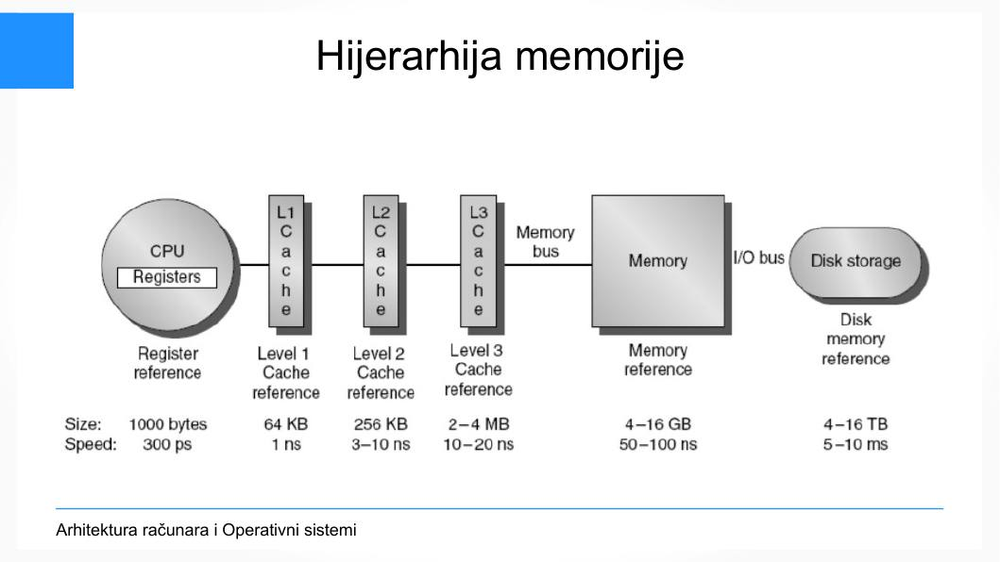
Slika se čita sleva nadesno: što je memorija dalje od procesora, to je veća, sporija i jeftinija po bajtu. Registri (oko 1000 bajtova) odgovaraju za 300 pikosekundi, L1 keš (64 KB) za oko 1 ns, L2 (256 KB) za 3–10 ns, L3 (nekoliko MB) za 10–20 ns, glavna memorija (gigabajti) za 50–100 ns, a disk (terabajti) za 5–10 milisekundi.
Trake su na logaritamskoj skali: svaki podeok udesno znači 10 puta duže. Na običnoj skali disk bi bio traka dugačka oko 5 km, a registar tačka. SSD nije na slajdu; dodat je radi poređenja.
Prebaci infografiku na „kao da je registar 1 sekunda“. Ako bi čitanje registra trajalo jednu sekundu, čitanje iz RAM-a bi trajalo nekoliko minuta, a sa diska oko 8 meseci. Zato procesor ne sme stalno da ide u RAM, a pogotovo ne na disk.
Prati sada naše ocene. Excel fajl je na disku. Kad ga otvoriš, operativni sistem ga prenese u RAM. Kad program počne da sabira, ocene se kopiraju u keš, pa u registre, i tek tamo ALU može da ih sabere. Hijerarhija radi zato što programi imaju osobinu koja se zove lokalnost: ako je upotrebljen neki podatak, verovatno će uskoro biti upotrebljen opet (npr. međuzbir u petlji), ili podatak odmah do njega (sledeća ocena u nizu). Zato se isplati držati malu količinu „vrućih“ podataka blizu procesora. Keš ćemo detaljno raditi u Modulu 3.
Zašto ne napravimo celu memoriju od registara, kad su najbrži?
Gde se na mapi nalazi ovaj predmet (slajd 18)

Ovde profesor prvi put pokazuje stub od devet nivoa: od problema na vrhu do elektrona na dnu. Detaljno ćemo ga raditi u delu 5, a sada samo obrati pažnju na crveni okvir: on obuhvata ISA (arhitekturu skupa instrukcija, žuto), mikroarhitekturu i logiku. To je teritorija predmeta Arhitektura računara. Sve iznad (algoritmi, programski jezici, operativni sistem) je softver, a sve ispod (uređaji, elektroni) je fizika i elektronika. Mi stojimo na granici između njih.
Ko pravi ove delove i gde se sve nalaze (slajdovi 19–20)
Hardver koji smo opisali projektuje mali broj kompanija. Intel pravi procesore, grafičke i mrežne čipove, matične ploče i disk kontrolere. AMD pravi procesore, grafičke čipove i čipsete za matične ploče. IBM pravi procesore (npr. za servere i mejnfrejm računare), diskove i kontrolere. ARM projektuje procesore za SoC (System on Chip, ceo računar na jednom čipu, kakav je u telefonu) i te projekte licencira drugima. NVIDIA pravi grafičke čipove i specijalne uređaje na osnovu ARM SoC-a. Na listi je i Apple, koji danas sam projektuje svoje procesore na ARM osnovi.
Slajd 20 dodaje važnu misao: iste komponente (procesor, memorija, magistrale, U/I) nalaze se u desktop i laptop računarima, serverima, telefonima, tabletima i IoT uređajima (pametne sijalice, satovi, senzori). Razlikuju se samo veličina, potrošnja struje i količina podataka koju obrade u jedinici vremena. Zato je ono što učiš u ovom predmetu primenljivo na svaki uređaj oko tebe.
Telefon i server imaju „iste komponente“. Šta je onda razlika između njih, u jezicima ovog predmeta?
Tehnologija gura sve napred: Murov zakon i Denardovo skaliranje
Kako tehnologija menja računare: model i familija (slajd 21)
Slajd 21 povezuje tehnologiju sa onim što smo naučili u delu 2. Redosled uticaja je ovakav: nova tehnologija (manji i brži tranzistori, brža memorija) najpre menja organizaciju (više keša, brži takt, više jezgara), a to dalje omogućava uvođenje moćnijih i složenijih arhitektura (nove instrukcije, širi registri, npr. prelazak sa 32 na 64 bita).
Odatle dva pojma koja se pitaju:
- Model računara obuhvata izabranu (projektovanu) arhitekturu. Unutar istog modela organizacija može da se menja.
- Familija modela: proizvođač nudi više modela koji svi imaju istu arhitekturu, a različitu organizaciju, pa zato i različitu cenu i performanse.
Prva prava familija bila je baš IBM System/360 iz 1964, ona čiji je arhitekta Padegs sa slajda 13. Pre nje je svaki novi IBM-ov računar imao drugačiji skup instrukcija, pa su kupci morali iznova da pišu sav softver. Sa 360 su mogli da kupe jeftin model, a kad im zatreba više snage, pređu na jači bez menjanja ijedne linije programa. Današnji primer familije su sve generacije x86 procesora: program iz 2010. radi i na procesoru iz 2026.
Zašto je familija modela dobra i za kupca i za proizvođača?
Kako smo ovde stigli: istorija u brojevima (slajd 28)
Slajd sa istorijom dolazi kasnije u prezentaciji, ali ovde mu je mesto, jer pokazuje koliko je tehnologija napredovala:

Sve počinje tranzistorom (Bell Labs, 1947), električnim prekidačem bez pokretnih delova koji je zamenio velike i nepouzdane elektronske cevi. Jack Kilby 1958. pravi prvo integrisano kolo, više tranzistora na jednoj pločici silicijuma (za to je dobio Nobelovu nagradu). Godine 1971. Intel pravi prvi mikroprocesor, 4004, ceo procesor na jednom čipu sa 2300 tranzistora (slajd ima posebne redove za 1971. i 1974, ali 4004 je iz 1971). Zatim: 8086 (1978, 29 hiljada tranzistora, početak x86 arhitekture koju i danas koristimo), 80486 (1989, 1,2 miliona, prvi Intelov sa protočnom obradom, „pipelined“), Pentium Pro (1995, 5,5 miliona) i Montecito (2005, oko milijardu; tačnije 1,72 milijarde, dvojezgarni Itanium u prodaji od 2006).
Od 2300 do milijardu je skok od oko 500 000 puta za 34 godine. To nije slučajno, to je Murov zakon.
Murov zakon (slajd 22)
Gordon Moore, jedan od osnivača Intela, primetio je 1965. da se broj tranzistora na čipu redovno udvostručuje; 1975. je procenu korigovao na udvostručavanje otprilike svake dve godine. To nije zakon prirode, nego zapažanje o tempu kojim industrija napreduje, i važilo je pedesetak godina. Udvostručavanje svake dve godine znači: za 10 godina 2⁵ = 32 puta više, za 20 godina oko 1000 puta, za 40 godina oko milion puta. Isprobaj:
Linija je predviđanje „udvostručavanje svake 2 godine“ počev od Intel 4004. Tačke su stvarni čipovi sa slajda 28 (plus Apple M1 iz 2020, radi poređenja). Vertikalna osa je logaritamska. Pomeri klizač.
Primeti dve stvari. Prvo, na logaritamskoj skali eksponencijalni rast izgleda kao prava linija; zato se ovakvi grafici uvek crtaju logaritamski. Drugo, stvarni čipovi nisu tačno na liniji (Montecito je bio ogroman serverski čip, pa je iznad nje), ali nagib prate: sedam redova veličine za pedeset godina.
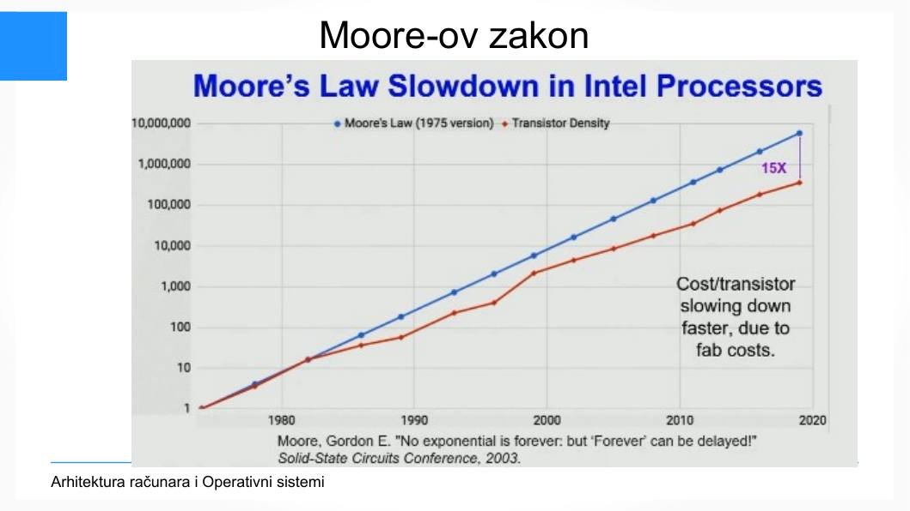
Slajd 22 pokazuje šta se desilo poslednjih godina. Vertikalna osa je opet logaritamska, horizontalna su godine 1970–2020. Plava linija je ono što predviđa Murov zakon (verzija iz 1975), a crvena je stvarna gustina tranzistora kod Intela. Do oko 2000. linije idu skoro zajedno, a zatim crvena sve više zaostaje, pa je 2020. razlika oko 15 puta (ljubičasta oznaka 15X). Tekst na slajdu dodaje da i cena po tranzistoru opada sporije nego ranije, jer su fabrike čipova sve skuplje. Citat na dnu je od samog Mura (2003): „Nijedna eksponencijalna funkcija nije večna, ali ‘večno’ može da se odloži.“
Denardovo skaliranje i zid snage (slajd 23)
Murov zakon govori koliko tranzistora stane na čip. Ali zašto su procesori decenijama postajali i brži, a da se nisu pregrevali? Odgovor je dao Robert Dennard (IBM, 1974). Kad se tranzistor u novoj generaciji proizvodnje smanji (dimenzije za oko 0,7 puta):
- površina mu se prepolovi, pa na isti čip stane duplo više tranzistora,
- napon i struja se smanje za oko 30%, pa svaki tranzistor troši upola manje energije,
- tranzistor se brže prebacuje, pa takt može da poraste oko 40%,
- i ključno: snaga po kvadratnom milimetru ostaje ista. Čip ima duplo više tranzistora i brži je, a ne greje se više.
To je bio „besplatan ručak“: svake dve godine programi su sami od sebe radili brže, bez ikakvog truda programera.

Na slajdu 23 crvena linija (leva osa) je veličina tehnologije u nanometrima i pada sa oko 180 nm (2000) na oko 10 nm (2020). Plava linija (desna osa) je relativna snaga po mm². Do oko 2006–2008 plava je skoro ravna, što znači da Denardovo skaliranje važi. Posle toga ona naglo raste, oko 4 puta do 2020: manji tranzistori sada znače topliji čip.
Zašto je prestalo? Kad su tranzistori postali jako mali, napon više nije mogao da se smanjuje, jer postoji minimalni napon (prag) ispod koga tranzistor ne radi pouzdano. Uz to, kroz sve tanje izolatore počela je da „curi“ struja i kad tranzistor ne radi (struja curenja, leakage). Ako napon ne pada, a tranzistora je duplo više i rade brže, snaga po površini raste. Rezultat je „power wall“ (zid snage): procesor od 5–6 GHz bi se pregrejao. Intel je 2004. upravo zbog toga otkazao procesore Tejas i Jayhawk.
Posledice su oblikovale sve današnje računare:
- Takt je oko 2005. praktično stao na 3–5 GHz.
- Višak tranzistora se troši na više jezgara umesto na brži takt. Zato danas imamo 8, 16 i više jezgara.
- Više jezgara pomaže samo ako je program paralelan. Koliko tačno pomaže, kaže Amdalov zakon, glavna računska tema Modula 2.
- „Dark silicon“: ne mogu svi tranzistori da rade istovremeno jer bi se čip pregrejao, pa se dodaju specijalizovane jedinice (grafika, NPU za veštačku inteligenciju) koje se uključuju po potrebi.

Ovaj grafik priča celu priču u jednoj slici (opet logaritamska osa, 1971–2015). Narandžasto: broj tranzistora stalno raste, to je Murov zakon. Zeleno: takt (MHz) raste do oko 2005, a onda je ravan. Crveno: tipična snaga raste do oko 100 W i staje, jer to je granica hlađenja. Plavo: brzina jednog jezgra raste sve sporije. Crno: broj jezgara je 1 sve do oko 2005, a onda počinje da raste. Tranzistora ima sve više, ali takt i snaga su udarili u zid, pa se tranzistori troše na jezgra.
U Modulu 2 profesor dodaje i drugu stranu priče (slajdovi 4–5, istraživanje Leisersona i saradnika, Science 2020): kad hardver prestane da ubrzava sam od sebe, ubrzanje mora da dođe „sa vrha“, iz boljeg softvera i algoritama. Isto množenje dve matrice 4096 × 4096, na istom računaru, traje 7 sati u Pythonu, a 0,41 sekundu u C-u koji koristi sva jezgra i vektorske instrukcije procesora: preko 60 000 puta brže. To je najbolji argument zašto programer treba da razume arhitekturu.
Murov zakon još uvek (usporeno) važi, a Denardovo skaliranje ne. Šta je od toga razlog što danas imamo višejezgarne procesore?
Kako se nosimo sa složenošću: slojevi apstrakcije
„The Big Picture“ (slajd 24)
Slajd 24 je citat iz najpoznatije knjige o arhitekturi računara (Hennessy i Patterson, dobitnici Tjuringove nagrade). Prevod, rečenicu po rečenicu, sa objašnjenjem:
- „I hardver i softver se sastoje od hijerarhijskih slojeva, gde svaki niži sloj skriva detalje od višeg.“ Programer u Javi ne zna u kom registru je promenljiva; kompajler zna. Kompajler ne zna kako je sabirač napravljen od tranzistora; projektant procesora zna.
- „Ovaj princip apstrakcije je način na koji se i projektanti hardvera i softvera nose sa složenošću računarskih sistema.“ Svako radi na svom sloju i mora da poznaje samo sloj ispod kao „crnu kutiju“: šta ona radi, ne i kako.
- „Jedan ključni interfejs između nivoa apstrakcije je arhitektura skupa instrukcija (ISA): interfejs između hardvera i softvera niskog nivoa.“ To je ista misao kao Padegsova sa slajda 13: arhitektura je granica i dogovor.
- „Ovaj apstraktni interfejs omogućava mnogo implementacija različite cene i performansi koje izvršavaju identičan softver.“ To je ideja familije modela sa slajda 21: ista ISA, različite organizacije.
Vidiš kako se priča zatvara: arhitektura (deo 2), familija (deo 4) i apstrakcija (ovde) su tri pogleda na istu ideju.
Interfejs kaže „šta“, a krije „kako“ (slajd 25)
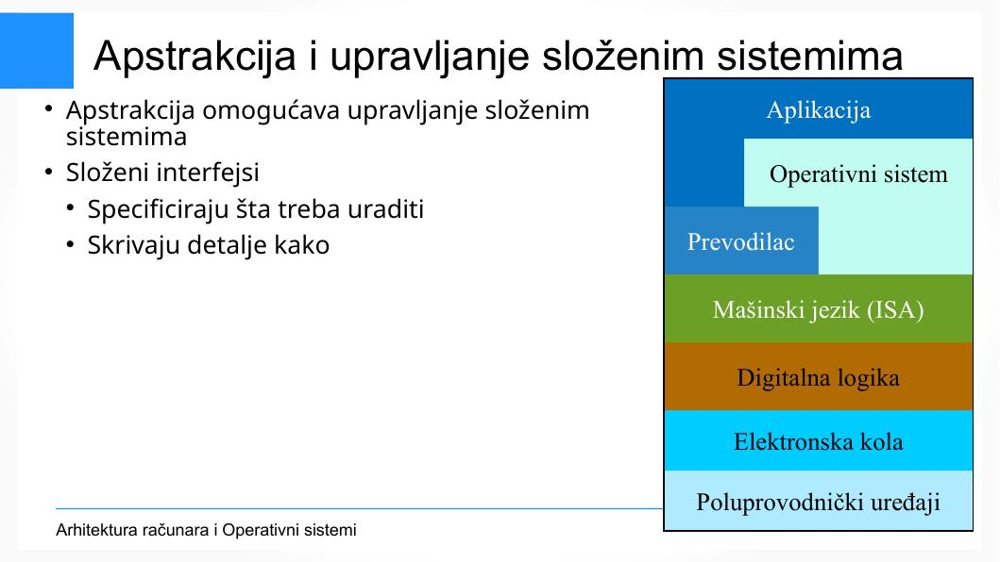
Stub desno ide odozgo nadole: aplikacija → operativni sistem → prevodilac → mašinski jezik (ISA) → digitalna logika → elektronska kola → poluprovodnički uređaji. Tekst levo kaže da apstrakcija omogućava upravljanje složenim sistemima pomoću interfejsa koji specificiraju šta treba uraditi, a skrivaju detalje kako se to radi.
Kao u restoranu: gost naruči „ćevape i pomfrit“ (šta), a ne zanima ga kako kuhinja radi, ko je čistio krompir i na kojoj ringli se pržilo (kako). Meni je interfejs. Kuhinja može da promeni šporet ili kuvara, a gost to ni ne primeti, dokle god dobije ono što je naručio. Isto tako, Excel kaže operativnom sistemu „otvori fajl ocene.xlsx“ i ne zanima ga na kom sektoru diska je fajl.
Devet nivoa, od problema do elektrona (slajd 27)

Levo je stub koji smo videli na slajdu 18, sada sa crvenim okvirom samo oko ISA, jer je ISA granica: sve iznad je softver, sve ispod je hardver. Prođimo kroz sve nivoe na našem prosek primeru:
| Nivo | Šta je to | Naš primer |
|---|---|---|
| Problem | Šta želimo, rečima | „Izračunaj prosek ocena“ |
| Algoritam | Precizan, konačan i determinisan postupak | Saberi sve ocene, podeli sa brojem ocena |
| Program / jezik | Algoritam zapisan u programskom jeziku | p = (a+b+c)/3; u C-u |
| Runtime sistem (VM, OS, MM) | Okruženje u kome program radi: virtuelna mašina, operativni sistem, upravljanje memorijom | Windows učitava program u RAM i daje mu procesor |
| ISA | Instrukcije koje procesor razume | LOAD a, ADD b, ADD c, DIV 3, STORE p |
| Mikroarhitektura | Kako je ISA izvedena u konkretnom čipu (organizacija) | Koraci kojima procesor donosi i izvršava ADD |
| Logika | Logička kola: I, ILI, NE, sabirači, flip-flopovi | Sabirač u ALU koji sabira bit po bit |
| Kola (Circuits) | Elektronska kola od tranzistora | CMOS kola od kojih je sabirač napravljen |
| Elektroni | Fizika poluprovodnika | Napon na tranzistoru: visok = 1, nizak = 0 |
Desna strana slajda je ista ideja kako je opisuje naš udžbenik, kao niz nivoa: nivo viših programskih jezika, nivo asemblera, nivo operativnog sistema, konvencionalni mašinski nivo, mikroprogramski nivo i nivo hardvera. Važnije od imena nivoa su reči na strelicama, jer kažu kako se prelazi naniže: prevodilac (viši jezik → asembler), asembler (asembler → mašinski kod), parcijalna interpretacija (operativni sistem neke stvari izvršava sam, a ostalo propušta hardveru), interpretacija (mikroprogram tumači mašinske instrukcije) i direktno izvršavanje mikroprograma u hardveru.
Računar kao niz virtuelnih mašina (slajd 26)

Slajd 26 istu ideju kaže apstraktnije. Na dnu je stvarni računar M0 sa svojim mašinskim jezikom L0: to je jedini jezik koji hardver zaista izvršava. Iznad njega je virtuelna mašina M1 sa jezikom L1, pa M2 sa L2, i tako do Mn sa Ln. „Virtuelna“ znači da ta mašina ne postoji kao hardver: programer koji piše u L2 ponaša se kao da postoji mašina koja direktno razume L2, a zapravo se njegov program pretvara u L1, pa u L0. Pretvaranje se radi na jedan od dva načina:
- Prevođenje (kompilacija): ceo program se unapred pretvori u niži jezik, pa se tek onda izvršava. Tako radi C.
- Interpretacija: program se čita naredba po naredba, i svaka se prevodi i izvršava u trenutku kad na nju dođe red. Tako radi Python.
Prednost ovog pogleda: kad pišeš u višem jeziku, uopšte ne moraš da misliš o nižim mašinama. To je apstrakcija na delu.
Sada možemo da uradimo ono što je ceo ovaj deo najavio: da pratimo jednu naredbu kroz sve slojeve. Uzećemo korak A = B + C, isti oblik kao „S = a + b“ u našem proseku. Klikni redom na slojeve i gledaj kako se ista stvar opisuje sve detaljnije:
Primeri koriste jednostavnu akumulatorsku mašinu sa kojom ćeš raditi u Modulu 3 (B je na adresi 4, C na 5, A na 6). Neki detalji (mikrooperacije, nazivi registara) biće ti potpuno jasni tek tada, ovde je bitan osećaj kako se korak „cepa“ na sve sitnije delove.
Na kom nivou prestaje softver, a počinje hardver? I zašto je baš taj nivo toliko važan?
Programer piše u Javi. Koje sve „mašine“ (nivoi) rade ispod njegovog programa?
U Modulu 4 profesor ovu temu zaokružuje sa dve „velike ideje“. Prva: univerzalni računarski uređaj. Uz dovoljno vremena i memorije, svi računari, od džepnog uređaja do superračunara, mogu da izračunaju iste stvari; razlikuju se samo po brzini i kapacitetu. Druga: problem se rešava transformacijama kroz slojeve, tačno onim strelicama sa slajda 27: problem → algoritam (projektovanje softvera) → program (programiranje) → ISA (prevođenje) → mikroarhitektura (projektovanje procesora) → kola (logičko projektovanje) → uređaji (proizvodnja čipa).
Ispitna pitanja iz ove lekcije
Pitanja iz skripte sa ispitnim pitanjima koja se odnose na ovu lekciju. Pokušaj prvo sam da odgovoriš, pa otvori odgovor. Gde je odgovor u skripti bio netačan ili nepotpun, ovde je ispravljen i to je naznačeno.
Savremeni računari kao višenivoovske mašine: navesti 6 nivoa.
Otvaramo računar: funkcije, struktura i Von Neumann
Četiri stvari koje računar radi (slajdovi 29–33)
Šta god da računar radi, od igrice do Excel-a, sve se svodi na samo četiri osnovne funkcije (slajd 29):
- Obrada podataka: računanje, poređenje, menjanje podataka.
- Skladištenje podataka: čuvanje, kratkoročno (registri, RAM) ili dugoročno (disk).
- Prenos podataka: premeštanje između računara i spoljnog sveta ili između delova računara.
- Upravljanje: koordinacija prethodne tri, odlučivanje šta se radi i kojim redom.
Na slajdovima 30–33 profesor ih crta uvek istom slikom: gore prenos, dole levo skladištenje, dole desno obrada, a u sredini mehanizmi upravljanja, povezani strelicama u oba smera sa svakom od njih. Na svakom slajdu jedna kućica je obojena, uz primer. Umesto da gledaš četiri skoro iste slike, isprobaj ih ovde:
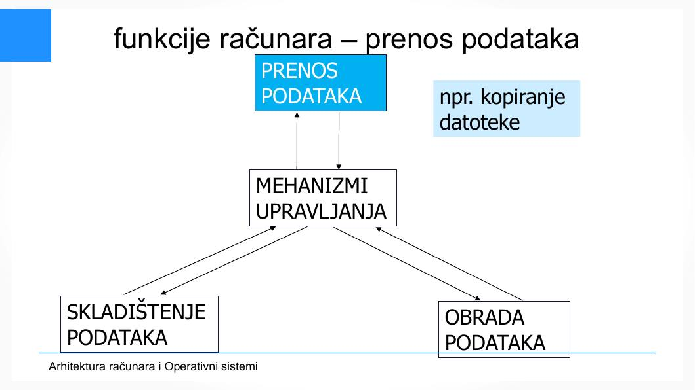
Zašto je upravljanje u sredini? Jer se nijedna od ostale tri funkcije ne dešava sama od sebe: neko mora da odluči kad se podatak prenosi, gde se skladišti i koja se operacija nad njim radi. U procesoru to radi upravljačka jedinica, a na višem nivou i operativni sistem. Pokreni u infografici „naš primer“ da vidiš kako prosek ocena koristi sve četiri funkcije.
Snimaš sliku sa telefona na USB fleš. Koje funkcije učestvuju?
Zumiranje u tri koraka (slajd 34)
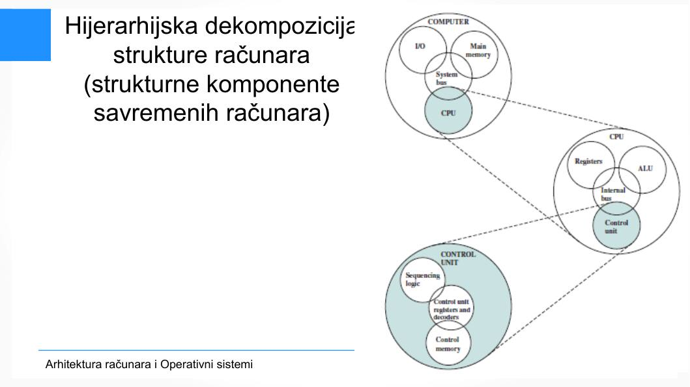
Slika je kao zum u tri koraka, a isprekidane linije pokazuju šta se uvećava:
- Gornji krug (COMPUTER): računar se sastoji od četiri dela: CPU (procesor, obrađuje i upravlja), glavna memorija (Main memory, skladišti program i podatke), U/I (I/O, prenos ka spoljnom svetu) i sistemska magistrala (System bus, prenos između njih). Vidiš kako se četiri funkcije preslikavaju na delove.
- Srednji krug (CPU): procesor se sastoji od registara, ALU, interne magistrale (Internal bus) i upravljačke jedinice (Control unit).
- Donji krug (CONTROL UNIT): upravljačka jedinica ima logiku za sekvenciranje (Sequencing logic, određuje redosled koraka), svoje registre i dekodere i upravljačku memoriju (Control memory, u kojoj se čuva mikroprogram, o čemu više u Modulu 3).
Poruka slike je ista kao kod apstrakcije: svaka komponenta je sama sastavljena od manjih komponenti, i u svakom trenutku gledamo samo jedan nivo.
Unutar procesora (slajd 35)

Slajd 35 je drugi korak zuma u većem: četiri dela procesora i njihove veze. Svakom delu možemo da damo ulogu u našem proseku:
- Upravljačka jedinica (UJ) je „dirigent“. Donosi instrukcije iz memorije, dekodira ih (shvati šta treba uraditi) i šalje upravljačke signale ostalima: „memorijo, daj podatak sa adrese ocene a“, „ALU, saberi“.
- Aritmetičko-logička jedinica (ALU) je „kalkulator“. Radi aritmetičke operacije (+, −, ×, /) i logičke (I, ILI, NE, poređenje, pomeranje bitova). Posle operacije postavlja zastavice: da li je rezultat nula, negativan, da li je bilo prekoračenja.
- Registri su najbrža i najmanja memorija, unutar samog procesora. U njima je međuzbir 8, pa 17, pa 27.
- Interne CPU međuveze su unutrašnje magistrale kojima podaci putuju između registara, ALU i UJ.
Šta čini arhitekturu procesora (slajd 36)
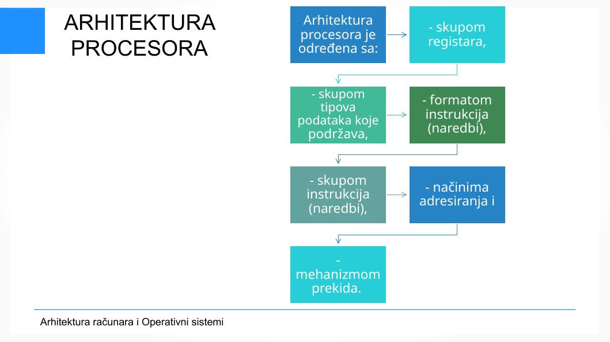
Slajd 35 je pokazao organizaciju procesora (delove i veze). Slajd 36 se vraća na arhitekturu, ono što programer vidi, i kaže tačno od čega se ona sastoji. Arhitektura procesora je određena sa šest stvari:
- Skupom registara: koliko ih ima, koliko su široki i čemu služe.
- Skupom tipova podataka koje podržava: celi brojevi od 8/16/32/64 bita, brojevi u pokretnom zarezu, znakovi.
- Skupom instrukcija: koje operacije postoje (ADD, LOAD, JMP…).
- Formatom instrukcija: kako instrukcija izgleda u bitovima (koliko bita je kod operacije, koliko adresa ima).
- Načinima adresiranja: kako instrukcija pronalazi operand (Modul 4).
- Mehanizmom prekida: kako procesor reaguje na spoljne događaje, npr. pritisak tastera (Modul 4).
Uporedi sa slajdom 14: to je ista lista „onoga što programer mora da zna“, samo detaljnija. Ove stavke su ujedno i plan Modula 3 i 4.
Zašto učestanost takta NIJE na listi sa slajda 36?
Kako procesor razgovara sa ostatkom računara (slajd 37)
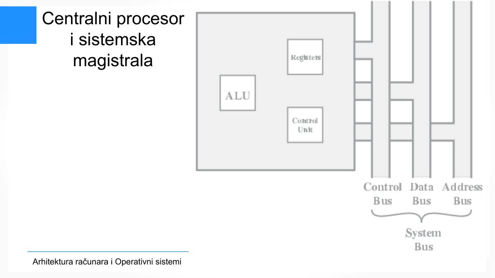
Procesor, memorija i U/I uređaji povezani su sistemskom magistralom (bus): skupom provodnika (linija) kojima putuju signali. Magistrala ima tri dela, i svaki ima svoj posao:
| Deo | Šta prenosi | Smer | Šta određuje njena širina |
|---|---|---|---|
| Adresna magistrala | Adresu memorijske lokacije ili U/I uređaja | Od procesora ka memoriji i uređajima | Koliko memorije može da se adresira: n linija → 2ⁿ adresa |
| Magistrala podataka | Sam podatak ili instrukciju | U oba smera | Koliko bita se prenese odjednom (8, 16, 32, 64) |
| Upravljačka magistrala | Signale: čitaj (RD), piši (WR), spremno (READY), prekid, takt | U oba smera | Koje vrste operacija i dogovora postoje |
Kad procesor čita ocenu iz memorije, sve tri rade zajedno: na adresnu stavi adresu ocene, na upravljačkoj aktivira signal „čitaj“, a memorija vrati vrednost po magistrali podataka. Tačan redosled tih signala (vremenski dijagram) radi se u Modulu 4.
Iz tabele izvuci najvažnije pravilo za zadatke: n adresnih linija daje 2ⁿ različitih adresa. Adresna magistrala od 32 linije adresira 2³² = 4 294 967 296 bajtova, to jest 4 GB, i zato 32-bitni Windows nije mogao da koristi više od 4 GB RAM-a.
Podsetnik: binarni i heksadecimalni brojevi, stepeni dvojke (otvori ako ti ovo nije sasvim sigurno)
Pozicioni sistem. U dekadnom sistemu 347 = 3·100 + 4·10 + 7·1: svaka pozicija vredi 10 puta više od one desno. U binarnom (osnova 2) cifre su samo 0 i 1, a pozicije vrede 1, 2, 4, 8, 16, 32, 64, 128… zdesna nalevo.
Bajt 0010 1101 = 32 + 8 + 4 + 1 = 45. Obrnuto (45 u binarni): deli sa 2 i zapisuj ostatke: 45 → 22 ost. 1 → 11 ost. 0 → 5 ost. 1 → 2 ost. 1 → 1 ost. 0 → 0 ost. 1. Ostaci čitani odozdo nagore: 101101.
Heksadecimalni sistem (osnova 16) ima cifre 0–9 i A=10, B=11, C=12, D=13, E=14, F=15. Koristi se zato što je jedna hex cifra tačno 4 bita, pa se dugački binarni brojevi pišu 4 puta kraće: 0010 1101 = 2D. Oznake 0x2D, 2Dh i 2DH znače isto.
| Stepen | Vrednost | Naziv | Gde se pojavljuje |
|---|---|---|---|
| 2⁸ | 256 | vrednosti jednog bajta (0–255) | |
| 2¹⁰ | 1 024 | 1 K | 1 KB = 1024 bajta |
| 2¹⁶ | 65 536 | 64 K | 16-bitna adresa |
| 2²⁰ | 1 048 576 | 1 M | 1 MB, adresni prostor procesora 8086 |
| 2³⁰ | 1 073 741 824 | 1 G | 1 GB |
| 2³² | 4 294 967 296 | 4 G | 32-bitna adresa → 4 GB |
| 2³⁴ | 17 179 869 184 | 16 G | RAM od 16 GB (domaći 1) |
Dva pravila koja rešavaju pola zadataka: n bita daje 2ⁿ vrednosti, i obrnuto, za N adresa treba log₂ N bita. Primer: 16 GB = 2⁴ · 2³⁰ = 2³⁴ B, pa adresa ima 34 bita. Pri množenju se stepeni sabiraju (2ᵃ · 2ᵇ = 2ᵃ⁺ᵇ), pri deljenju oduzimaju. U ovom predmetu 1 KB = 1024 B.
Procesor ima adresnu magistralu od 20 linija. Koliko najviše memorije može da adresira (ako je svaka adresa jedan bajt)?
Von Neumann-ova mašina (slajd 38)
Prvi elektronski računari (npr. ENIAC, 1945) „programirali“ su se prespajanjem kablova i prekidača: da bi računar radio drugi posao, ljudi su danima menjali žice. Džon fon Nojman (John von Neumann) je 1945. opisao računar čija je ključna ideja koncept zapamćenog programa (stored program): program se čuva u memoriji, isto kao i podaci, kao niz brojeva. Da bi računar radio nešto drugo, dovoljno je u memoriju učitati drugi program.

Slika ima pet delova: memoriju (gore; u njoj su i program i podaci), upravljačku jedinicu (levo dole), aritmetičko-logičku jedinicu sa akumulatorom (desno dole; akumulator je mali pravougaonik, registar u kome ALU drži međurezultat), ulaz i izlaz. Upravljačka jedinica čita instrukcije iz memorije i šalje komande ALU; ALU čita i upisuje podatke u memoriju; ulaz i izlaz idu preko ALU i akumulatora. Prepoznaješ li delove sa slajdova 34 i 35? Upravljačka jedinica, ALU sa registrom, memorija i U/I: ista građa, opisana pre 80 godina.
Principi Von Neumann-ove mašine, koje treba znati:
- Program i podaci su u istoj memoriji i ne razlikuju se po obliku (sve su binarni brojevi).
- Memorija je podeljena na numerisane lokacije (adrese), a sadržaju se pristupa preko adrese.
- Instrukcije se izvršavaju sekvencijalno, jedna za drugom, osim kad instrukcija skoka promeni redosled.
- Postoji brojač naredbi (PC) koji pokazuje koja instrukcija je sledeća.
Za naš primer to znači: u memoriji, u nizu lokacija, stoje pet instrukcija programa, a odmah pored njih ocene 8, 9, 10 i mesto za rezultat. Procesor ne „zna“ šta je instrukcija, a šta ocena; zna samo da sa adrese na koju pokazuje PC uzme sledeću instrukciju.
U Modulu 3 profesor prikazuje i kako ovakvi računari ulaze u klasifikaciju (M3_02, slajd 3): računar može biti analogni ili digitalni; digitalni može biti fiksne funkcije (kao stari kalkulator) ili sa zapamćenim programom; takav može biti mehanički ili elektronski; a elektronski može biti specijalne ili opšte namene. Ovaj predmet proučava upravo poslednju granu: digitalni, elektronski računar opšte namene sa zapamćenim programom, to jest Von Neumann-ovu ideju.
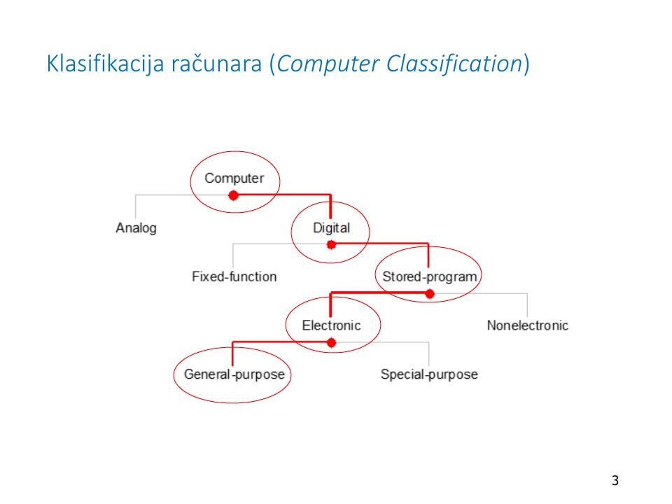
Princeton i Harvard (slajdovi 39–40)
Poslednja dva slajda porede dva načina da se procesor poveže sa memorijom. Princeton je drugo ime za Von Neumann-ovu arhitekturu (fon Nojman je radio na Prinstonu): postoji jedna operativna memorija, a između nje i procesora idu dve strelice, adresiranje i podaci i instrukcije. Dakle isti put za oboje. Harvard (po računaru Harvard Mark I) ima dve odvojene memorije, memoriju za instrukcije i memoriju za podatke, i svaka ima svoj par linija. Procesor (registri sa brojačem naredbi, ALU, upravljačka jedinica) i U/I uređaji su na obe slike isti; razlika je samo u memoriji i putevima do nje.
Zašto je to bitno? Zato što procesor gotovo svakom instrukcijom traži dve stvari: samu instrukciju i podatak nad kojim radi (npr. „ADD b“ traži instrukciju ADD i vrednost b). U Princeton mašini oba moraju da prođu kroz isti put, jedno posle drugog. U Harvard mašini mogu istovremeno. Pogledaj koliko to vredi:
Svaka instrukcija u ovom primeru mora da donese sebe (I) i jedan podatak iz memorije (D). Jedan prenos traje jedan ciklus magistrale. Pomeri klizač.
Ovo čekanje ima ime: Von Neumann-ovo usko grlo (bottleneck). Procesor je mnogo brži od memorije, a sve, i instrukcije i podaci, mora da prođe kroz jednu magistralu, pa procesor često stoji i čeka. Seti se hijerarhije memorije iz dela 3: keš postoji upravo da bi ublažio ovo usko grlo.
| Von Neumann / Princeton | Harvard | |
|---|---|---|
| Memorija | Jedna, zajednička za program i podatke | Dve: za instrukcije i za podatke |
| Putevi (magistrale) | Jedan | Dva odvojena |
| U jednom ciklusu | Ili instrukcija ili podatak | I instrukcija i podatak |
| Prednost | Jednostavnija i jeftinija; memorija se fleksibilno deli između programa i podataka | Brža, paralelan pristup |
| Mana | Usko grlo | Složenija i skuplja; jedna memorija može biti puna dok je druga prazna |
| Gde se koristi | Opšti računari (na nivou RAM-a) | Mikrokontroleri (Arduino/AVR, PIC), DSP, L1 keš modernih procesora |
Današnji procesori uzimaju najbolje od oba: modifikovana Harvard arhitektura. Najbliži procesoru, L1 keš je podeljen na keš za instrukcije (L1i) i keš za podatke (L1d), pa procesor u istom ciklusu dobija i instrukciju i podatak (Harvard). L2, L3 i RAM su zajednički (Von Neumann), pa zadržavamo fleksibilnost jedne velike memorije.
Arduino ima program u flash memoriji, a promenljive u posebnoj SRAM memoriji. Koja je to arhitektura?
Zašto je Von Neumann-ova ideja zapamćenog programa bila revolucionarna, kad danas izgleda očigledno?
Ceo Modul 1 u jednom pogledu
Evo cele priče koju smo ispričali, kao niz od osam rečenica. Ako svaku umeš da objasniš svojim rečima, Modul 1 znaš:
- Računar ume samo elementarne operacije; program je njihov niz, a algoritam mora biti konačan i determinisan (sl. 11–12).
- Arhitektura je ono što programer vidi (instrukcije, adresiranje, U/I, tipovi podataka), organizacija je kako je to izvedeno (takt, tehnologija, signali) (sl. 13–15).
- Računar čine procesor, memorija, U/I i magistrale; memorija je hijerarhija od brzih i malih do sporih i velikih (sl. 16–17).
- Ista arhitektura sa različitim organizacijama daje familiju modela (sl. 21).
- Mur: tranzistora je duplo više svake ~2 godine. Denard: to je bilo bez rasta snage po mm², do ~2005. Posle toga takt staje, a rastu broj jezgara (sl. 22–23, 28).
- Složenost se savladava apstrakcijom: slojevi od problema do elektrona, a granica hardvera i softvera je ISA (sl. 18, 24–27).
- Računar radi četiri stvari: obradu, skladištenje, prenos i upravljanje; CPU čine UJ, ALU, registri i interne veze, povezani sa ostatkom adresnom, magistralom podataka i upravljačkom magistralom (sl. 29–37).
- Von Neumann: program i podaci u istoj memoriji, jedna magistrala, pa usko grlo; Harvard razdvaja memorije; današnji procesori su Harvard u L1 kešu, a Von Neumann u RAM-u (sl. 38–40).
Ispitna pitanja iz ove lekcije
Pitanja iz skripte sa ispitnim pitanjima koja se odnose na ovu lekciju. Pokušaj prvo sam da odgovoriš, pa otvori odgovor. Gde je odgovor u skripti bio netačan ili nepotpun, ovde je ispravljen i to je naznačeno.
Čime je određena arhitektura procesora?
Navesti razliku između Von Neumann-ove i Harvard arhitekture računara.
Navesti (nacrtati) osnovne komponente Von Neumann-ove mašine.
Kad takt prestane da raste: više jezgara i Amdalov zakon
Modul 1 se završio jednim neprijatnim otkrićem: oko 2005. takt procesora je stao na nekoliko GHz, jer bi brži čip počeo da se topi. Proizvođači su višak tranzistora iskoristili za više jezgara. Danas laptop ima 8 ili 16 jezgara. Da li to znači da je program 16 puta brži? Modul 2 odgovara na to pitanje, i uči te kako se brzina računara uopšte meri.
Kroz ceo modul pratimo jedan program: aplikaciju koja obrađuje 1000 fotografija sa putovanja (smanji ih, popravi boje i spakuje u jedan album). Na jednom jezgru ona radi 100 sekundi, i to ovako:
Ova podela 25 + 50 + 25 nije izmišljena: to su tačno brojevi iz primera koji profesor radi na slajdovima 19–20. Videćemo da je u njoj sakriven odgovor na pitanje o 16 jezgara.
Računarski sistem i gde se gubi vreme (slajd 3)
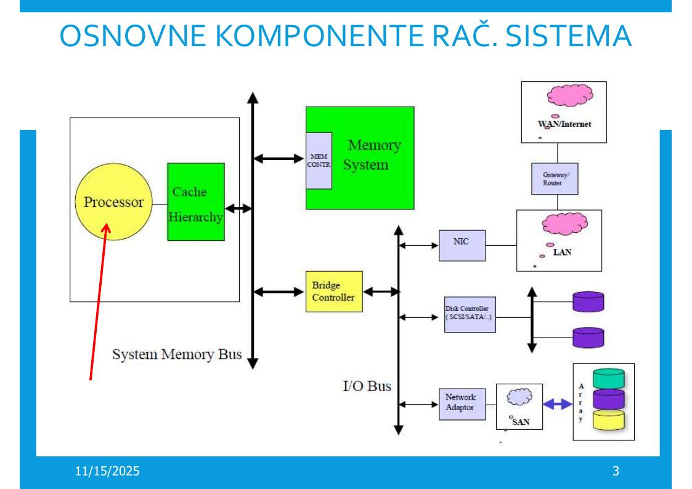
Modul počinje slikom celog sistema, da bi se videlo gde su delovi čije performanse merimo. Levo je procesor (žuti krug) sa hijerarhijom keša (zeleno), dakle ono što smo u Modulu 1 zvali registri, L1, L2, L3. Oni su sistemskom memorijskom magistralom (System Memory Bus, debela vertikalna linija) povezani sa memorijskim sistemom gore, koji ima svoj memorijski kontroler (MEM CONTR). Preko mosta (Bridge Controller) brza sistemska magistrala je spojena sa sporijom U/I magistralom (I/O Bus), na kojoj su mrežna kartica (NIC) ka lokalnoj mreži LAN i dalje preko rutera ka internetu (WAN), disk kontroler (SCSI/SATA) sa diskovima i mrežni adapter ka SAN-u (posebnoj mreži za skladištenje, nizu diskova).
Natpis ispod slike je teza celog modula: performanse se mogu poboljšati dodavanjem procesora ili jezgara. Ostatak modula proverava koliko je to tačno. Isti crtež ćeš videti i na početku Modula 4, gde je naglašen spoj procesora i memorije.
Ima mesta „na vrhu“ (slajdovi 4–5)
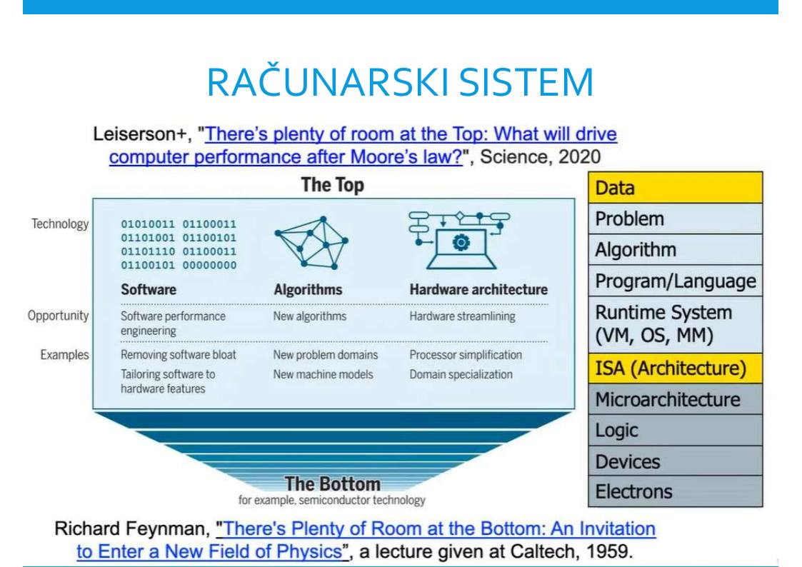
Desno na slajdu 4 je stari poznanik iz Modula 1: stub nivoa od problema do elektrona, sa žuto obeleženom ISA. Levo je tumačenje iz čuvenog članka „There's plenty of room at the Top“ (ima mnogo mesta na vrhu). Naslov je igra reči sa predavanjem fizičara Ričarda Fajnmana iz 1959, „There's plenty of room at the Bottom“, koje je najavilo minijaturizaciju. Pedeset godina je ubrzanje dolazilo sa dna (The Bottom, poluprovodnička tehnologija, sve manji tranzistori). Sada, kad se dno usporilo, ubrzanje mora da dođe sa vrha, iz tri izvora:
- Softver: izbacivanje nepotrebnog koda (software bloat) i prilagođavanje softvera mogućnostima hardvera.
- Algoritmi: novi, efikasniji algoritmi i novi modeli mašina.
- Hardverska arhitektura: pojednostavljenje procesora i specijalizovani čipovi (grafički, za veštačku inteligenciju).

Slajd 5 pokazuje koliko je to „mesta“. Zadatak je množenje dve matrice 4096 × 4096 (tri ugnježdene petlje, kod je gore levo, a primer množenja manjih matrica desno). Tabela pokazuje koliko traje isti algoritam na istom računaru, napisan na različite načine:
| Verzija | Vreme | Ubrzanje | Šta je promenjeno |
|---|---|---|---|
| Python | 25 552 s (≈7 h) | 1× | polazna tačka, jezik koji se interpretira |
| Java | 2 372 s | 11× | jezik koji se prevodi (uz JIT) |
| C | 542 s | 47× | prevodi se direktno u mašinski kod |
| Paralelne petlje | 69,8 s | 366× | posao podeljen na sva jezgra |
| Paralelno „podeli pa vladaj“ | 3,8 s | 6 727× | bolji algoritam, koji pametno koristi keš |
| + vektorizacija | 1,1 s | 23 224× | jedna instrukcija radi nad više brojeva |
| + AVX instrukcije | 0,41 s | 62 806× | direktno korišćenje vektorskih instrukcija procesora |
Crveno uokvirena su poslednja dva reda: najveći skokovi dolaze kad softver iskoristi arhitekturu procesora (vektorske instrukcije). Poruka je ona ista iz Modula 1: programer koji razume arhitekturu može da dobije ubrzanje veće nego decenije napretka tehnologije. Primeti i četvrti red: posao podeljen na jezgra dao je „samo“ oko 8 puta u odnosu na C. Zašto ne više? Na to odgovara Amdalov zakon.
Kratko skretanje: RISC, CISC i RISC-V (slajdovi 6–9)
Pre Amdala profesor ubacuje četiri slajda o vrstama procesora, jer je vrsta procesora jedan od faktora brzine. RISC (Reduced Instruction Set Computing) koristi mnogo jednostavnih instrukcija da završi posao, a CISC (Complex Instruction Set Computing) manji broj složenih instrukcija (slajd 6). RISC-V je konkretna RISC arhitektura nastala na Berkliju od 2010, peta generacija Berkeley RISC-a, i otvorena je: bilo ko sme da projektuje i prodaje RISC-V procesor bez licence (slajdovi 7–8). Slajd 9 poredi tri današnje ISA: x86 (zatvorena, Intel i AMD, većina desktop računara i servera), ARM (zatvorena, licencira se, Android i iOS uređaji i noviji Apple računari) i RISC-V (otvorena).
Detaljno ovo radimo u Modulu 3, u delu o CISC i RISC procesorima. Ovde zapamti samo vezu sa brzinom: CISC program ima manje instrukcija, ali svaka traje duže; RISC ima više instrukcija, ali kratkih. Koji je brži, saznaćemo kad u delu 2 naučimo formulu za CPU vreme.
Amdalov zakon: ideja (slajdovi 10–12)

Gene Amdahl je bio jedan od arhitekata računara IBM 360 (one prve familije iz Modula 1). Godine 1967. pokazao je zašto dodavanje procesora ne ubrzava program onoliko koliko bi se očekivalo. Grafik na slajdu 10 to pokazuje u jednoj slici: na horizontalnoj osi je udeo sekvencijalnog dela programa (deo koji mora redom), od 0 do 5%, a na vertikalnoj najveće ubrzanje koje se može postići sa 1024 procesora. Ako je sekvencijalni deo 0%, ubrzanje je 1024 puta. Ali već pri samo 1% pada na oko 91, pri 2% na oko 48, a pri 5% na oko 20. Mali deo programa koji ne može paralelno „pojede“ skoro sve procesore.
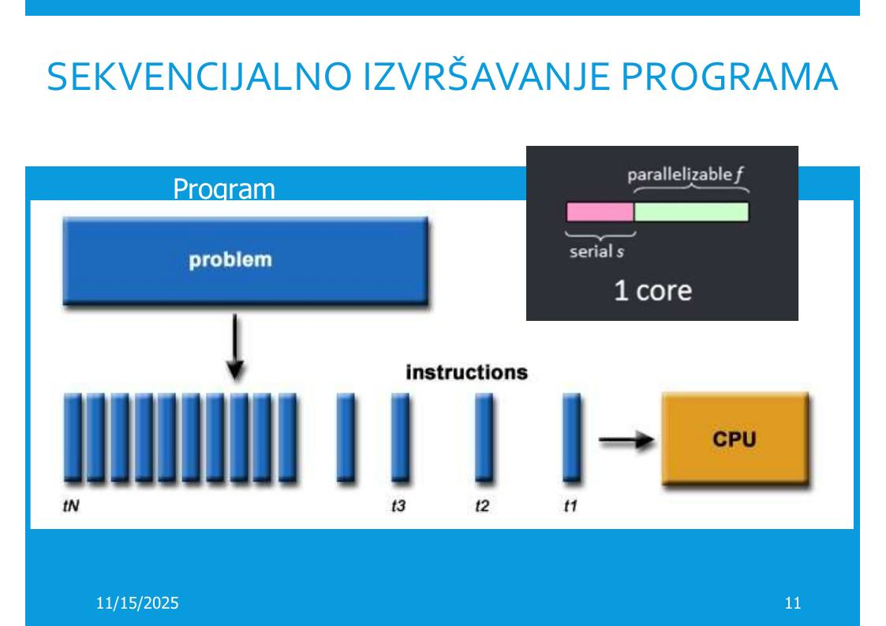

Slajdovi 11 i 12 pokazuju razliku. Sekvencijalno (slajd 11): problem se razloži na niz instrukcija i sve one idu redom kroz jedan CPU. Paralelno (slajd 12): problem se prvo podeli na delove (crveni blokovi levo), svaki deo je svoj niz instrukcija, i svaki deo ide na svoj CPU, istovremeno. Važan uslov: to može samo za delove problema koji su međusobno nezavisni. U našem albumu, obrada slike 37 ne zavisi od slike 36, pa 50 sekundi obrade može da se podeli na jezgra. Ali pakovanje u album mora redom, slika po slika, u jedan fajl.
Zašto neki delovi moraju redom (slajd 15)
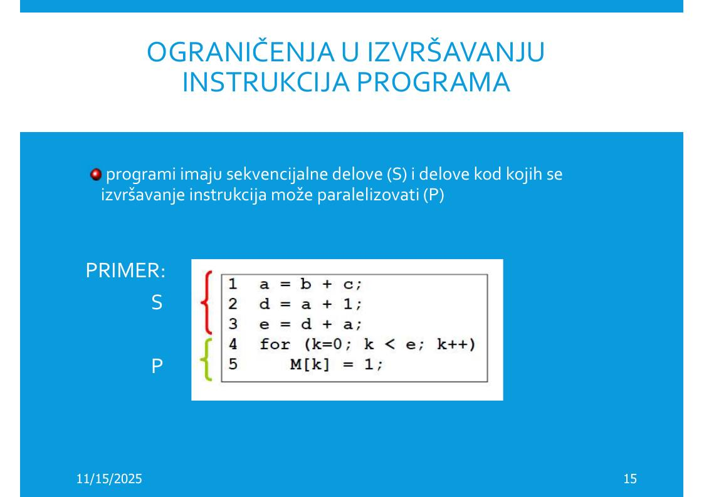
Slajd 15 daje najmanji mogući primer. Programi imaju sekvencijalne delove (S) i delove koji se mogu paralelizovati (P):
1 a = b + c; ┐ 2 d = a + 1; │ S: red 2 treba a iz reda 1, red 3 treba d iz reda 2 3 e = d + a; ┘ → svaki korak čeka prethodni, mora redom 4 for (k=0; k<e; k++) ┐ P: M[0]=1, M[1]=1, M[2]=1 … ne zavise jedno od drugog 5 M[k] = 1; ┘ → svako jezgro može da popuni svoj deo niza
Redovi 1–3 su lanac zavisnosti: ne možeš izračunati d dok ne znaš a, ni e dok ne znaš d. Ni hiljadu jezgara ne pomaže, jer drugo jezgro nema šta da radi dok prvo ne završi. Petlja u redovima 4–5 je suprotna: ako je e = 1000, jedno jezgro može da upiše M[0] do M[249], drugo M[250] do M[499], i tako dalje, sva u isto vreme.
U našoj aplikaciji, koji od tri dela (priprema, obrada, pakovanje) je „S“, a koji „P“?
Kako se računa ubrzanje (slajdovi 13–14 i 16)
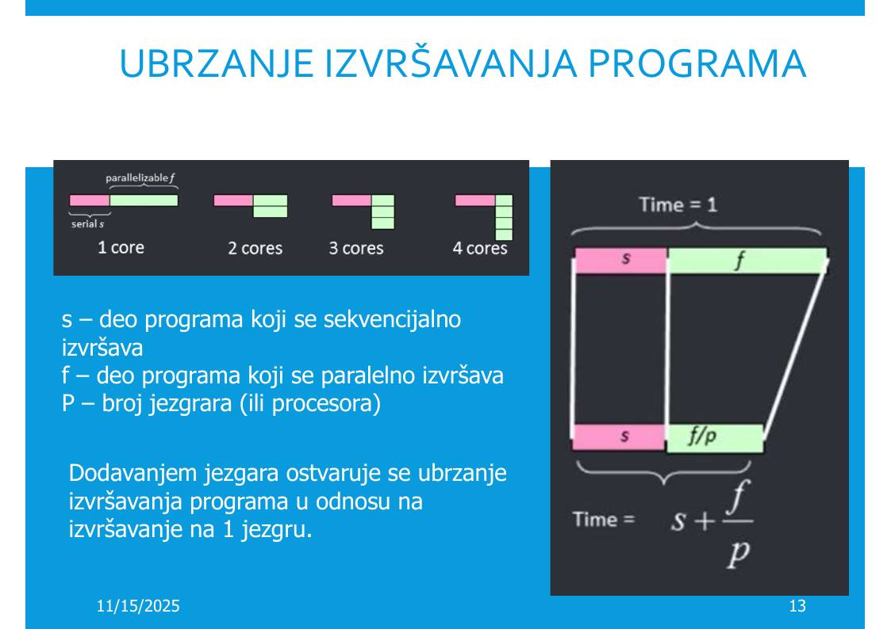
Gore levo na slajdu 13 isti program se izvršava na 1, 2, 3 i 4 jezgra. Ružičasti deo je sekvencijalni (serial, s), zeleni je paralelni (parallelizable, f). Pogledaj šta se dešava: ružičasti deo uvek ostaje iste dužine, a zeleni se deli na 2, 3, 4 komada koji se rade istovremeno. Desno je to zapisano: ako je vreme na jednom jezgru 1 = s + f, na P jezgara sekvencijalni deo i dalje traje s, a paralelni f/P. Novo vreme je s + f/P.

Slajd 14 je ista priča u stubovima: vreme izvršavanja na 1, 2, 4 i „beskonačno“ jezgara. Plavi (paralelni) deo se svaki put prepolovi, a zeleni (sekvencijalni) ostaje isti. Na beskonačno jezgara ostaje samo sekvencijalni deo. Tekst gore desno to kaže najbolje: „Sekvencijalni deo ne nestaje i ne smanjuje se. Samo postaje sve dominantniji.“
Sad možemo da izvedemo formulu sa slajda 16. Oznake:
- f: deo programa (udeo u vremenu izvršavanja) koji se može paralelno izvršavati, i to bez dodatnog opterećenja za raspoređivanje posla (scheduling overhead);
- 1 − f: deo koji je prirodno sekvencijalan;
- T: ukupno vreme izvršavanja programa na jednom procesoru (jezgru);
- N: broj procesora (jezgara).
Na jednom procesoru program traje T = T(1 − f) + Tf. Na N procesora sekvencijalni deo traje isto, T(1 − f), a paralelni se podeli na N delova, Tf/N. Ubrzanje (speedup) je odnos starog i novog vremena; T se skrati:
Slajd 16 dodaje i da je ubrzanje metrika za kvantitativno merenje performansi: broj koji kaže „koliko puta brže“. Ubrzanje 1 znači „isto“, 2 znači „duplo brže“.
Naš album na 5 jezgara (slajdovi 19–20)


Na slajdu 19 program od 100 s ima 25 s sekvencijalnog dela, 50 s dela koji se može paralelizovati i opet 25 s sekvencijalnog, baš kao naš album. Paralelni deo se raspodeli na 5 niti (T1 do T5), po jedna na svakom jezgru.
- Paralelni deo na 5 jezgara: 50 / 5 = 10 s.
- Novo ukupno vreme: 25 + 10 + 25 = 60 s.
- Ubrzanje = vreme pre / vreme posle = 100 / 60 = 1,67.
- Provera formulom: f = 0,5, N = 5 → S = 1 / (0,5 + 0,5/5) = 1 / 0,6 = 1,67. ✓
Zaključci i grafici (slajdovi 17, 21–22)
Iz formule direktno slede dva zaključka sa slajda 17:
- Ako je f malo, paralelni procesori imaju mali efekat. Ako je paralelno samo 10% programa, ni 1000 jezgara ne daje više od 1,11 puta.
- Kada N → ∞, član f/N → 0, pa je ubrzanje ograničeno sa 1/(1 − f). Sa svakim novim procesorom dobit je sve manja.
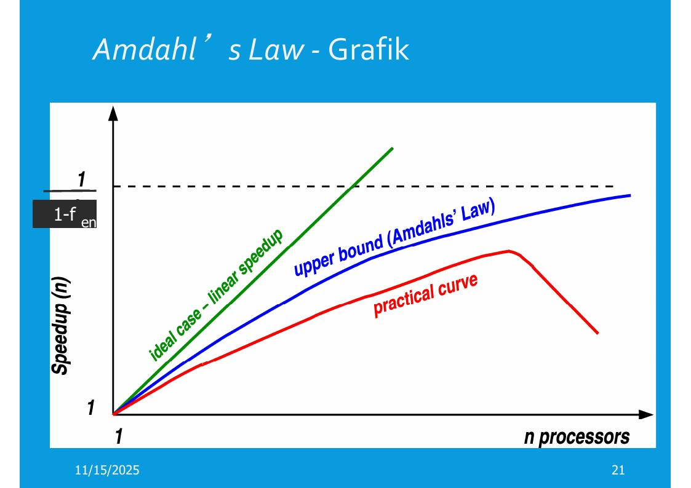

Na slajdu 21 su tri krive ubrzanja u zavisnosti od broja jezgara. Zelena je idealno, linearno ubrzanje (N jezgara = N puta brže), koje u praksi ne postoji. Plava je gornja granica po Amdalu: savija se i približava 1/(1 − f). Crvena je ono što se stvarno meri: posle nekog broja jezgara ubrzanje čak počinje da opada, jer jezgra troše sve više vremena na međusobnu komunikaciju i usklađivanje (onaj „scheduling overhead“ iz definicije f). Slajd 22 crta krive za 80%, 90%, 95% i 99% paralelnog koda: čak i sa 99% (ljubičasta) ubrzanje ne prelazi 100, a sa 80% (crvena) staje na 5.
Isprobaj sam. Postavi f = 0,50 i N = 5 i dobićeš naš album:
Koliko jezgara bi trebalo našem albumu (f = 0,5) da dostigne ubrzanje 2?
Program je 95% paralelan. Koliko je najviše moguće ubrzanje, ma koliko jezgara dodali?
Zakon ne važi samo za jezgra (slajd 18)

Pogledaj formulu još jednom: N u njoj zapravo znači „koliko puta brže radi paralelni deo“. Ništa ne mora biti paralelno. Ako bilo koji deo programa f ubrzamo F puta (brža jedinica za računanje sa decimalnim brojevima, brži disk, bolji algoritam baš za taj deo), važi ista formula, samo sa F umesto N. To je generalizacija Amdalovog zakona sa slajda 18:
gde je S ukupno ubrzanje, f deo vremena koji poboljšavamo, 1 − f deo koji ostaje isti, a F koliko puta je poboljšani deo brži. Odatle i princip dizajna koji je profesor stavio u rezime: „make the common case fast“, ubrzaj ono što zauzima najviše vremena. Ubrzati za 100 puta deo koji traje 1% vremena skoro ništa ne donosi; ubrzati za 20% deo koji traje 90% vremena donosi mnogo.
Rešeni primeri sa predavanja (slajdovi 40–45)
Profesor primere radi na kraju predavanja, ali logično pripadaju ovde, odmah posle formule. Primer 4 zahteva i CPI i takt, pa njega radimo na kraju dela 2.
- f = 0,1 (ubrzava se 10%), F = 2.
- S = 1 / (0,9 + 0,1/2) = 1 / (0,9 + 0,05) = 1 / 0,95 = 1,053.
- Zamenimo poznato: 2 = 1 / ((1 − f) + f/4).
- Okrenemo obe strane: (1 − f) + f/4 = 1/2 = 0,5.
- Sredimo: 1 − f + 0,25f = 0,5 → 1 − 0,75f = 0,5 → 0,75f = 0,5.
- f = 0,5 / 0,75 = 0,667, to jest 66,7%.
- f = 0,75, F = 3.
- S = 1 / ((1 − 0,75) + 0,75/3) = 1 / (0,25 + 0,25) = 1 / 0,5 = 2.
Za vežbu, ovde možeš da rešiš bilo koji zadatak ovog tipa, i unapred i unazad. Izaberi šta se traži, upiši ostalo i pogledaj korake:
Primeri sa predavanja: Primer 1 (traži S: f = 0,1, F = 2), Primer 2 (traži f: S = 2, F = 4), Primer 3 (traži S: f = 0,75, F = 3).
Gde se paralelizacija stvarno isplati (slajd 23)
Ako je Amdalov zakon toliko strog, gde onda više procesora ima smisla? Tamo gde je f blizu 1, to jest gde je skoro sav posao sastavljen od nezavisnih pod-zadataka. Slajd 23 nabraja primere: serveri koji paralelno opslužuju mnogo klijenata (transakcioni server banke: svaki klijent je nezavisan), proračuni nad velikim bazama podataka (podaci se podele na delove koji se obrađuju paralelno), Big Data integracija, i naučne simulacije: interakcija molekula, seizmički talasi, prognoza vremena (atmosfera se podeli na kocke koje se računaju istovremeno). Upravo za takve poslove se grade superračunari sa stotinama hiljada jezgara.
Šta tačno merimo: CPU vreme, CPI i radni takt
Kad kažemo da je jedan računar „brži“ od drugog, moramo tačno da kažemo šta merimo. Broj GHz, broj jezgara, količina keša, sve to samo utiče na brzinu. Najpoštenija mera brzine procesora je jednostavna: koliko sekundi treba da se izvrši dati program. To vreme se zove CPU vreme (CPU execution time), i profesor ga na slajdu 24 naziva kvantitativnim parametrom, jer je to broj koji se može izmeriti i izračunati.
Formula za CPU vreme (slajd 24)
Ideja slajda 24 je da vreme izvršavanja razložimo na tri pitanja, koja se mogu posebno meriti i posebno popravljati:
- Koliko instrukcija program izvrši?
- Koliko ciklusa takta u proseku traje jedna instrukcija?
- Koliko sekundi traje jedan ciklus?
Pomnožimo odgovore i jedinice se „skrate“ kao razlomci:
- IC (Instruction Count), broj instrukcija: koliko instrukcija program izvrši. Ne koliko ih piše u kodu, nego koliko se stvarno izvrši: instrukcija u petlji koja se ponovi 1000 puta broji se 1000 puta.
- CPI (Cycles Per Instruction): koliko ciklusa takta u proseku traje jedna instrukcija.
- T: trajanje jednog ciklusa takta, ili umesto njega f, frekvencija takta (T = 1/f).
Da bismo formulu stvarno razumeli, prođimo kroz njena tri dela. Počinjemo od poslednjeg, takta, jer od njega sve počinje.
Radni takt: srce koje kuca (slajdovi 28–30)
Unutar procesora sve se dešava u ritmu jednog signala, radnog takta (clock). To je pravougaoni signal koji stalno ide 0 → 1 → 0 → 1, milijardama puta u sekundi. Jedan pun prolaz, od jedne uzlazne ivice do sledeće, zove se jedan ciklus (one cycle). Slajd 28 kaže šta takt radi:
- sinhroniše sve operacije procesora i magistrala: svi delovi „pomeraju se“ na istu ivicu takta, kao veslači na komandu;
- mašinski takt meri vreme jedne operacije: najjednostavnija operacija traje jedan ciklus, složenije više;
- koristi se za aktiviranje događaja: na primer, na uzlaznu ivicu se nova vrednost upisuje u registar.
Frekvencija f je broj ciklusa u sekundi i meri se u hercima (Hz). Slajd 29 daje tablicu jedinica, a slajd 30 kaže kako se iz frekvencije dobija vreme jednog ciklusa:
| Frekvencija | Ciklusa u sekundi | Vreme jednog ciklusa |
|---|---|---|
| 1 Hz | 1 | 1 s |
| 1 kHz | 10³ | 1 ms (10⁻³ s) |
| 1 MHz | 10⁶ | 1 µs (10⁻⁶ s) |
| 1 GHz | 10⁹ | 1 ns (10⁻⁹ s) |
| 1 THz | 10¹² | 1 ps (10⁻¹² s) |
Primer sa slajda 30: 1 GHz = 1 000 000 000 ciklusa u sekundi, pa je T = 1/10⁹ s = 10⁻⁹ s = 1 ns. Za 4 GHz: T = 1/(4·10⁹) s = 0,25 ns. Da bi osetio koliko je to kratko: za vreme jednog ciklusa na 4 GHz svetlost pređe samo 7,5 cm.
Procesor radi na 2 GHz. Koliko traje jedan ciklus?
CPI: koliko ciklusa traje jedna instrukcija (slajd 26)
Različite instrukcije traju različito. Sabiranje dva registra može da traje 1 ciklus, a čitanje podatka iz memorije 2 ili više, jer mora da se čeka memorija. Zato CPI programa nije jedan broj iz kataloga, nego ponderisani prosek (prosek u kome se češće instrukcije više računaju):
gde je Iᵢ broj instrukcija klase i (npr. svih load instrukcija), a udeoᵢ = Iᵢ / IC procenat te klase u programu.

Primer sa slajda 26 deli instrukcije u četiri klase. Svaki red tabele množimo, pa saberemo:
| Klasa instrukcija | Udeo | CPIᵢ | Doprinos = udeo × CPIᵢ |
|---|---|---|---|
| ALU operacije (računanje) | 43% | 1 | 0,43 |
| Load (čitanje iz memorije) | 21% | 2 | 0,42 |
| Store (upis u memoriju) | 12% | 2 | 0,24 |
| Branch (skokovi) | 24% | 2 | 0,48 |
| Ukupno | 100% | CPI = 1,57 |
Tumačenje: ovaj procesor za ovaj program u proseku troši 1,57 ciklusa po instrukciji. Ako je takt 2 GHz, on izvršava 2·10⁹ / 1,57 ≈ 1,27 milijardi instrukcija u sekundi.
Sad možemo da odgovorimo zašto naš album traje 100 sekundi. Recimo da laptop ima takt 2 GHz, a mešavina instrukcija aplikacije je baš ona sa slajda 26 (CPI = 1,57). Iz formule, IC = vreme × f / CPI = 100 × 2·10⁹ / 1,57 ≈ 127 milijardi instrukcija. Toliko sitnih koraka treba da se obradi 1000 fotografija.
Pola instrukcija programa ima CPI 1, a pola CPI 3. Koliki je prosečan CPI?
Ko utiče na koji deo formule (slajd 25)
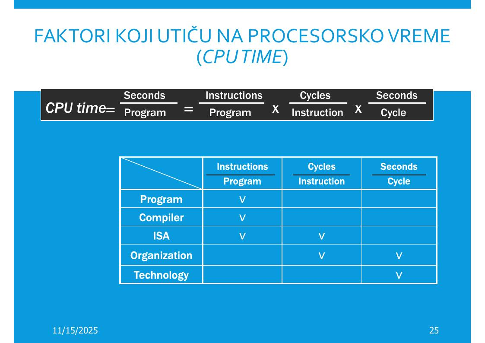
Slajd 25 je jedan od najkorisnijih u modulu, jer kaže ko može da popravi koji činilac. Ispod formule je tabela u kojoj X znači „utiče“. Čitaj je red po red i poveži sa onim što znaš iz Modula 1:
| Šta utiče | IC | CPI | T (takt) | Zašto |
|---|---|---|---|---|
| Program (algoritam) | ✓ | Bolji algoritam izvrši manje instrukcija. | ||
| Kompajler | ✓ | ✓ | Bira koliko i koje instrukcije će koristiti, pa menja i prosečan CPI. | |
| ISA | ✓ | ✓ | Složenije instrukcije (CISC): manje njih, ali duže traju. RISC obrnuto. | |
| Organizacija | ✓ | ✓ | Protočna obrada i keš smanjuju CPI; organizacija određuje i koliko kratak takt sme da bude. | |
| Tehnologija | ✓ | Brži tranzistori daju brži takt (Mur i Denard). |
Ovde se zatvara pitanje iz dela 1: CISC ili RISC, koji je brži? CISC smanjuje IC, ali povećava CPI; RISC povećava IC, ali smanjuje CPI i dozvoljava brži takt. Pobeđuje onaj kome je proizvod IC × CPI × T manji, i to se ne može reći bez merenja.
Kako se poredi „brže“ (slajd 27)

Kad imamo vremena, treba nam precizan jezik za poređenje. Performansa je obrnuto srazmerna vremenu: performansa = 1 / vreme izvršavanja. Kraće vreme, veća performansa. Zato se na slajdu 27 u razlomku uvek gore piše vreme sporijeg (B), a dole vreme bržeg (A):
Na našem albumu: na jednom jezgru 100 s, na pet jezgara 60 s. 100/60 = 1,67, pa je verzija sa pet jezgara 1,67 puta brža, odnosno 67% brža. Ako bi neki superračunar to uradio za 0,1 s, odnos bi bio 100/0,1 = 1000 = 10³, dakle 3 reda veličine brže.
Program traje 12 s na računaru B i 8 s na računaru A. Koliko je A brži?
Ceo račun na jednom primeru (slajd 31)
Slajd 31 spaja takt, CPI i broj instrukcija u jedan zadatak. Pazi kako se CPI dobija iz faza izvršavanja instrukcije: svaka instrukcija prolazi kroz uzimanje instrukcije, uzimanje operanada, izvršavanje i upis rezultata (te faze detaljno radimo u Modulu 3).
- Jedna instrukcija: 2 + 2 + 4 + 0 = 8 ciklusa. To je CPI.
- Ceo program: 8 × 2000 = 16 000 ciklusa.
- T = 1/10¹² s = 1 ps. Vreme = 16 000 × 10⁻¹² s = 16 × 10⁻⁹ s = 16 ns.
Laboratorija ispod je podešena baš na ovaj zadatak. Promeni brojeve i prati korake:
- Vreme A = 5·10⁹ × 1,6 / 2,5·10⁹ = 8 / 2,5 = 3,2 s.
- Vreme B = 5·10⁹ × 2,2 / 3·10⁹ = 11 / 3 = 3,67 s.
- A je brži: 3,67 / 3,2 = 1,15 puta (15% brži), iako ima niži takt.
Brzina nije samo jedan broj (slajd 39)
Do sada je „brže“ značilo „kraće vreme jednog programa“. Slajd 39 podseća da postoji više aspekata performansi, i da su za različite sisteme važni različiti:
| Pojam | Značenje | Primer |
|---|---|---|
| Latency (latentnost, kašnjenje) | Vreme od početka do kraja jednog posla | Za koliko se otvori jedna veb strana |
| Throughput (propusnost, propusni opseg) | Broj poslova završenih u jedinici vremena | Koliko zahteva u sekundi server obradi |
| Availability (raspoloživost) | Deo vremena kada sistem radi | 99,9% znači oko 8,8 sati prekida godišnje |
| Power consumption (potrošnja) | Meri se kao performanse po vatu | Bitno za telefone (baterija) i data centre (račun za struju) |
Latentnost je „za koliko jedan auto stigne od Beograda do Novog Sada“, a propusnost „koliko auta prođe kroz naplatnu rampu za sat“. Dodavanje traka na autoputu (više jezgara) povećava propusnost, ali jedan auto ne stiže brže. To je druga strana Amdalovog zakona: više jezgara odlično povećava propusnost servera koji opslužuje hiljade nezavisnih korisnika, a malo pomaže latentnosti jednog programa sa velikim sekvencijalnim delom.
Završni primer: koje poboljšanje izabrati (slajdovi 46–50)
Sad imamo sve alate da rešimo najteži primer sa predavanja, koji spaja CPI, takt i Amdalov zakon.
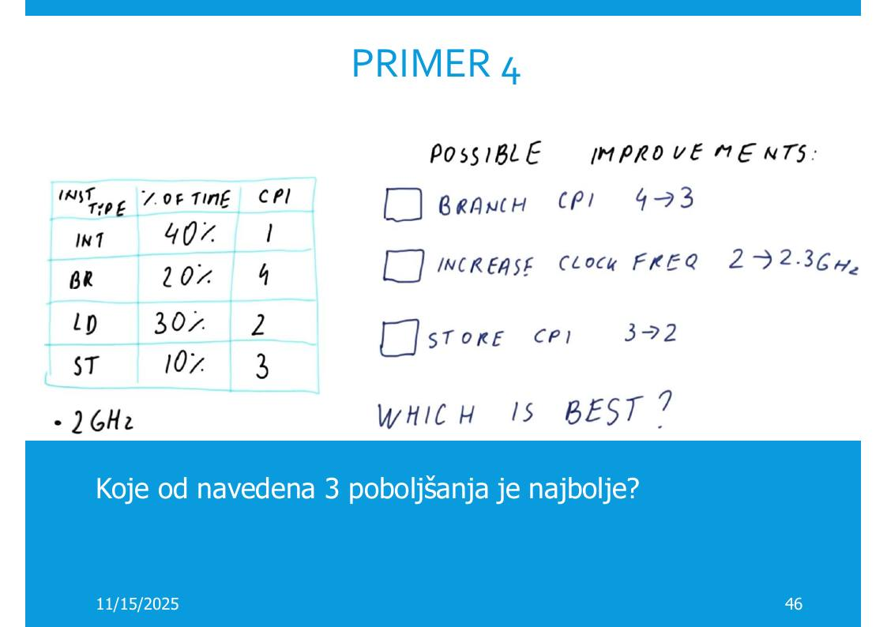
- Branch CPI 4 → 3 (slajd 47). Ubrzava se deo f = 0,2; F = staro/novo = 4/3 = 1,33. S = 1 / (0,8 + 0,2/1,33) = 1 / (0,8 + 0,15) = 1,05.
- Takt 2 → 2,3 GHz (slajd 48). Takt ubrzava ceo program, pa je f = 1; F = 2,3/2 = 1,15. S = 1 / (0 + 1/1,15) = 1,15.
- Store CPI 3 → 2 (slajd 49). f = 0,1; F = 3/2 = 1,5. S = 1 / (0,9 + 0,1/1,5) = 1 / 0,967 = 1,034.
Zašto je kod povećanja takta f = 1?
Ispitna pitanja iz ove lekcije
Pitanja iz skripte sa ispitnim pitanjima koja se odnose na ovu lekciju. Pokušaj prvo sam da odgovoriš, pa otvori odgovor. Gde je odgovor u skripti bio netačan ili nepotpun, ovde je ispravljen i to je naznačeno.
Koja je razlika između procesorskog vremena (CPU time) i potrošenog vremena (elapsed time)?
Paralelizam u procesoru i oko njega, i princip lokalnosti
Do sada smo paralelizam videli na nivou celog programa: delovi albuma na različitim jezgrima. Slajdovi 32–38 idu korak dublje i odgovaraju na dva pitanja. Prvo: kako su više procesora i memorija uopšte povezani? Drugo: kako i jedan procesor iznutra radi više stvari odjednom?
Kako više procesora deli memoriju (slajd 32)

Kad imamo više procesora, odmah se postavlja pitanje: gde su podaci? Slajd 32 pokazuje dva odgovora. Levo su četiri CPU-a oko jedne zajedničke memorije (Memory u sredini). To je deljena memorija, a procesori se zovu čvrsto spregnuti: svi vide iste podatke i komuniciraju tako što pišu i čitaju istu memoriju. Tako rade jezgra u tvom laptopu, i tako bi radio naš album: svih pet jezgara čita fotografije iz istog RAM-a.
Desno su četiri para CPU + sopstvena memorija, povezani međusobno. To je distribuirana memorija, a procesori su labavo spregnuti: svaki ima svoje podatke, a sa drugima razmenjuje poruke preko mreže. Tako rade klasteri servera i superračunari. Prednost: može se povezati ogroman broj čvorova. Mana: slanje poruke preko mreže traje mnogo duže od čitanja iz sopstvene memorije, pa to postaje deo onog „dodatnog opterećenja“ koje kvari Amdalovu krivu (crvena kriva sa slajda 21).
Ko raspoređuje posao na jezgra (slajd 33)
Većina današnjih operativnih sistema podržava rad sa više jezgara (multi-core). OS komunicira sa svakim jezgrom kao sa posebnim procesorom, a njegov planer (scheduler) raspoređuje niti (thread-ove) i procese na različita jezgra. Kad naša aplikacija pokrene 5 niti za obradu slika, upravo planer odlučuje koja nit ide na koje jezgro i kada. Ovo je most ka drugom delu predmeta (operativni sistemi, dodela procesora procesima).
Ciklus izvršavanja instrukcije (slajdovi 34–35)
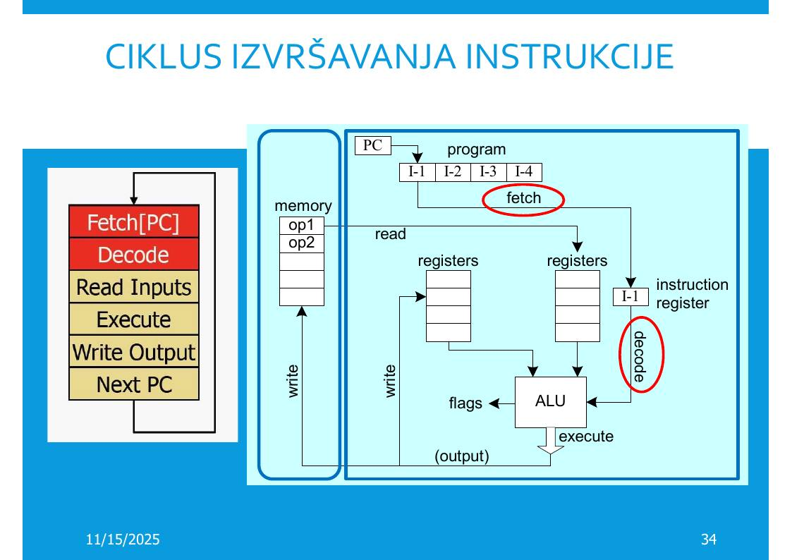
Levo na slajdu 34 je ciklus kroz koji prolazi svaka instrukcija, u šest koraka koji se ponavljaju u krug:
- Fetch[PC]: donesi instrukciju sa adrese na koju pokazuje PC (brojač naredbi iz Modula 1);
- Decode: dekodiraj je, to jest shvati šta treba uraditi;
- Read Inputs: pročitaj operande (ulazne podatke);
- Execute: izvrši operaciju u ALU;
- Write Output: upiši rezultat;
- Next PC: pređi na sledeću instrukciju, pa nazad na korak 1.
Desno je isto to na šemi. PC pokazuje na instrukciju I-1 u programu u memoriji (program je niz I-1, I-2, I-3, I-4). Ona se donese (fetch) u registar instrukcije (instruction register) i tamo dekodira (decode, zaokruženo crveno). Operandi op1 i op2 se čitaju (read) iz registara, ALU izvršava operaciju (execute) i postavlja zastavice (flags), a rezultat (output) se upisuje (write) nazad u registre. Ovo je onaj isti krug sa slajda 16 iz Modula 1, sada sa imenima faza.
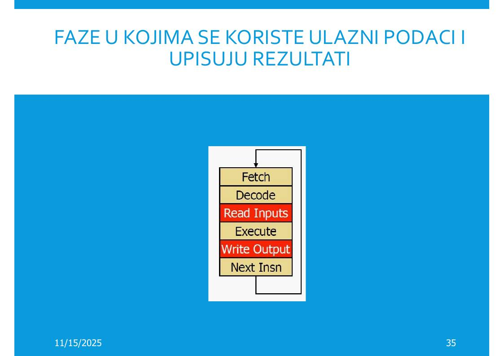
Slajd 35 ponavlja istu sliku i crveno izdvaja faze Read Inputs i Write Output. To su faze u kojima se pristupa podacima (registrima ili memoriji). Zašto su posebno označene? Zato što tu nastaju zastoji ako je memorija spora, i tu nastaju problemi kad dve instrukcije rade istovremeno, a koriste iste podatke (druga hoće da pročita ono što prva još nije upisala). Zapamti ovo, trebaće nam za trenutak.
Četiri načina da procesor radi više stvari odjednom (slajd 36)
Slajd 36 kaže: da bi procesori bili brži, paralelizam se može ostvariti na četiri načina. Ovo su osnovni principi dizajna savremenih procesora.
1. Pipelining (protočna obrada). Faze iz slajda 34 rade različiti delovi procesora. Dok jedan deo izvršava instrukciju 1, drugi već dekodira instrukciju 2, a treći donosi instrukciju 3 iz memorije. Isto kao pokretna traka u fabrici, ili pranje veša: dok se prva tura suši, druga se pere. Pojedinačna instrukcija ne traje kraće, ali kad se traka napuni, u svakom ciklusu se završi po jedna, pa CPI teži 1.
Zašto baš k + (n − 1)? Prvoj instrukciji treba svih k ciklusa da prođe kroz celu traku. Posle toga traka je puna i u svakom sledećem ciklusu izlazi po jedna instrukcija, pa preostalih n − 1 instrukcija traje još n − 1 ciklusa. Za mnogo instrukcija ubrzanje se približava broju faza k, ali ga nikad ne dostiže.
A sad se vraća slajd 35. Ako instrukcija 2 treba rezultat instrukcije 1, a instrukcija 1 ga još nije upisala (Write Output), imamo hazard podataka: traka mora da stane i čeka. Ako je instrukcija 1 skok, ne znamo koja je sledeća instrukcija dok se skok ne izvrši: to je upravljački hazard, pa procesor ili čeka ili „pogađa“ (predviđanje skokova). Hazardi su razlog što pravi CPI nije tačno 1.
2. ILP (Instruction Level Parallelism), paralelizam na nivou instrukcija. Procesor ima više izvršnih jedinica (npr. dve ALU, jedinicu za decimalne brojeve, jedinicu za Load/Store) i u istom ciklusu pokrene više nezavisnih instrukcija. Takav procesor se zove superskalarni. Na primer, a = b + c i x = y * z ne zavise jedna od druge, pa mogu istovremeno. Tako CPI pada i ispod 1 (dve instrukcije po ciklusu znače CPI = 0,5).
3. DLP (Data Level Parallelism), paralelizam na nivou podataka. Ista operacija nad mnogo podataka odjednom. Vektorske (SIMD) instrukcije, npr. AVX, saberu 8 parova brojeva jednom instrukcijom. Grafička kartica je ekstremni primer. To su oni redovi „plus vectorization“ i „plus AVX intrinsics“ iz tabele sa slajda 5 koji su dali najveće ubrzanje. U našem albumu to je idealno: popravka boja radi istu operaciju nad milionima piksela.
4. TLP (Thread Level Parallelism), paralelizam na nivou niti. Program se podeli na više niti (thread-ova) koje rade na različitim jezgrima. To je tačno ono što smo radili sa albumom u delu 1, i na šta se odnosi Amdalov zakon.
Koji od četiri oblika paralelizma pomaže i programu koji je potpuno sekvencijalan (f = 0 po Amdalu)?
Šta je danas u procesoru (M3_02, slajdovi 4–6, 12–13)
Na početku Modula 3 profesor ponovo pokazuje procesor i memoriju, pa to ovde dodajemo jer zatvara priču o performansama.
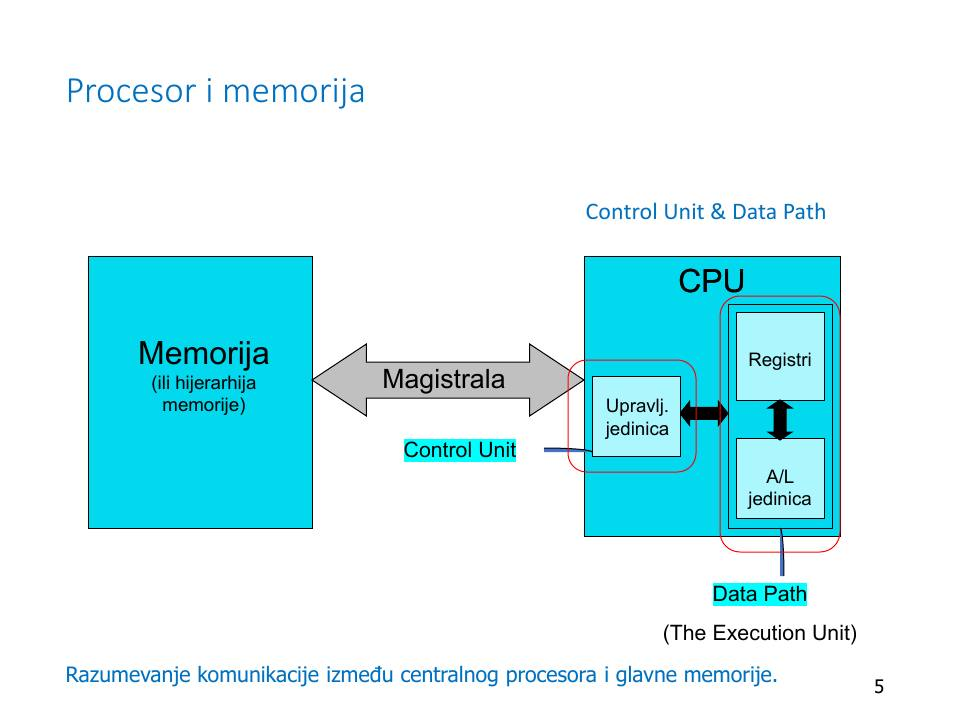
Levo je memorija (ili cela hijerarhija memorije), desno CPU, a između njih magistrala. U CPU su upravljačka jedinica (Control Unit) i Data Path (put podataka, izvršna jedinica): registri i A/L jedinica. Rečenica ispod je cilj Modula 4: razumevanje komunikacije između centralnog procesora i glavne memorije.
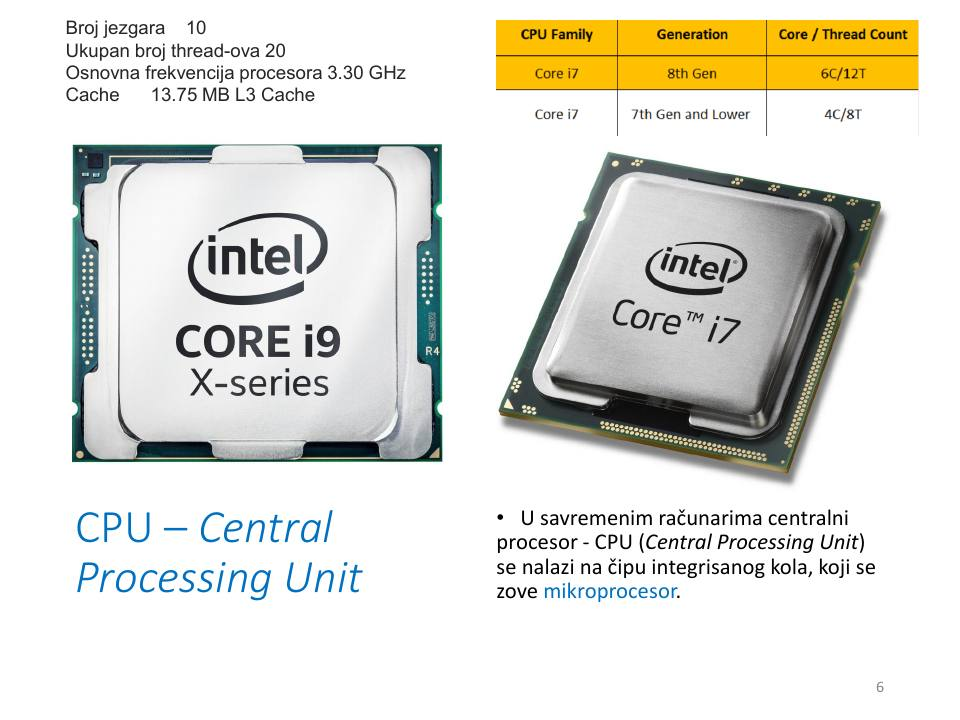
Primer sa slajda je Intel Core i9-10900K: 10 jezgara, 20 niti, 3,30 GHz osnovna frekvencija, 13,75 MB L3 keša. U savremenim računarima ceo CPU je na jednom čipu integrisanog kola koji se zove mikroprocesor. Kao ključne faktore koji utiču na performanse profesor navodi broj jezgara, frekvenciju (GHz), veličinu keša (L1, L2, L3) i tip procesora (CISC ili RISC). Sve četiri smo u ovom modulu povezali sa formulom: jezgra preko Amdala, frekvencija preko T, keš preko CPI, a tip procesora preko IC i CPI.
Slajd 13 iz istog predavanja nabraja moguće načine za poboljšanje performansi, i sad za svaki znaš zašto radi i gde mu je granica:
- Povećanje frekvencije takta: smanjuje T, ali je ograničeno toplotom (kraj Denardovog skaliranja).
- Protočna obrada (pipelining): smanjuje CPI prema 1.
- Superskalarni pristup (više protočnih linija u procesoru): smanjuje CPI ispod 1.
- Povećanje veličine i brzine keša (L1, L2, L3): manje čekanja na memoriju, manji CPI.
- Povećanje broja procesora: TLP, ograničeno Amdalovim zakonom.
- Povećanje broja jezgara unutar procesora (multi-core): isto, TLP i Amdal.
Hyper-Threading (M3_02, slajdovi 8–9)
Na slici i9 piše „10 jezgara, 20 niti“. Kako 10 jezgara izvršava 20 niti? Multithreading je podela posla na više softverskih niti koje se izvršavaju paralelno, po jedna nit na jednom jezgru. Hyper-Threading (Intelov naziv za SMT, simultaneous multithreading) je hardverska tehnologija koja dozvoljava da na jednom fizičkom jezgru rade 2 niti istovremeno. Operativni sistem jedno fizičko jezgro vidi kao 2 „logička jezgra“.
Iznutra, jezgro dobije dupli skup registara (svaka nit ima svoj PC, svoje registre i svoje stanje), ali obe niti dele izvršne jedinice (ALU, FPU) i keš. Zašto to pomaže? Jedna nit često čeka, na primer podatak iz RAM-a, što traje stotine ciklusa (seti se hijerarhije memorije iz Modula 1). Dok ona čeka, izvršne jedinice bi bile besposlene; sa Hyper-Threading-om ih koristi druga nit.
Zato Hyper-Threading nije isto što i duplo više jezgara. Prema slajdu, povećava propusnost do oko 30% u serverskim aplikacijama. Kod programa koji već maksimalno koriste izvršne jedinice dobitak je mali ili ga nema.
Laptop ima 4 fizička jezgra sa Hyper-Threading-om. Koliko „procesora“ vidi operativni sistem, i da li je to kao 8 pravih jezgara?
Princip lokalnosti (slajd 37)
Ostao je još jedan princip dizajna, možda najvažniji za brzinu u praksi. Slajd 37: programi provode oko 90% vremena izvršavanja u oko 10% svog koda. Zbog toga se sa razumnom tačnošću može predvideti koje instrukcije i podatke će program koristiti u bliskoj budućnosti. Lokalnost ima dva oblika:
- Vremenska lokalnost: ono što je upravo korišćeno, verovatno će uskoro biti korišćeno opet. Primer: telo petlje se izvršava 1000 puta, a promenljiva
sumase koristi u svakom krugu. - Prostorna lokalnost: ako je korišćena jedna adresa, verovatno će uskoro biti korišćene i susedne. Primer: elementi niza a[0], a[1], a[2] stoje jedan do drugog u memoriji, a i instrukcije se izvršavaju redom.
U našem albumu obe su prisutne: kod za obradu jedne slike je mala petlja koja se ponavlja 1000 puta (vremenska), a pikseli jedne slike se obrađuju redom, jedan do drugog (prostorna). Na lokalnosti počiva keš memorija: kad procesor zatraži jedan bajt, keš donese ceo blok oko njega (npr. 64 bajta, prostorna lokalnost) i čuva ga neko vreme (vremenska lokalnost). Zato 90% i više pristupa „pogodi“ keš, i procesor retko čeka spori RAM. Kako keš tačno radi, detaljno radimo u Modulu 3.
Program prolazi kroz niz element po element. Koja je to lokalnost? A brojač petlje i koji se menja u svakom krugu?
Rezime predavanja (slajd 38)
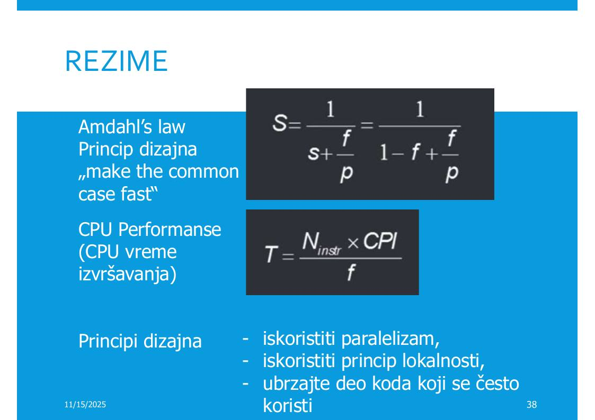
Profesor celo predavanje sažima u tri kutije:
- Amdalov zakon: S = 1/(s + f/p). Na slajdu je s = 1 − f sekvencijalni deo, a p broj procesora (isto što i N u ovom vodiču).
- Princip dizajna „make the common case fast“.
- CPU performanse: T = N_instr × CPI / f. Pazi: ovde T znači ukupno CPU vreme, a ne trajanje jednog ciklusa kao u T = 1/f; N_instr je isto što i IC.
- Principi dizajna: iskoristi paralelizam, iskoristi princip lokalnosti, ubrzaj deo koda koji se često koristi.
Domaći zadaci (slajdovi 51–52)
Predavanje se završava sa dva domaća zadatka: računari sa 4 i sa 6 jezgara, keš L1 od 64 KB sa linijama od 32 bajta, RAM od 16 GB i od 128 GB. Pitanja su koliko lokacija procesor može da adresira, koliko linija ima keš i koliko adresa keš može da mapira. Za njih ti trebaju stepeni dvojke iz Modula 1 (deo 1.6) i keš memorija iz Modula 3, zato su potpuno rešena, korak po korak, u završnom poglavlju ★.
Ceo Modul 2 u jednom pogledu
- Kad takt više ne raste, ubrzanje dolazi „sa vrha“: bolji softver, algoritmi i arhitektura, i više jezgara (sl. 3–5).
- Program ima sekvencijalni deo (1 − f) i deo koji se može paralelizovati (f); sekvencijalni deo se ne smanjuje dodavanjem jezgara (sl. 10–15).
- Amdalov zakon: S = 1/((1 − f) + f/N), a najviše 1/(1 − f). Naš album: f = 0,5, na 5 jezgara 1,67 puta brže, nikad više od 2 (sl. 13–22).
- Generalizacija: za bilo koje poboljšanje F puta, S = 1/((1 − f) + f/F); zato „make the common case fast“ (sl. 18, 40–45).
- CPU vreme = IC × CPI × T = IC × CPI / f, gde je T = 1/f; prosečan CPI je ponderisani prosek po klasama instrukcija (sl. 24–31).
- Program i kompajler menjaju IC, ISA i kompajler i CPI, organizacija CPI i takt, tehnologija samo takt; „A je n puta brži“ znači vreme_B / vreme_A = n (sl. 25, 27).
- Više procesora deli memoriju (čvrsto spregnuti) ili ima svaki svoju (labavo spregnuti); OS planer raspoređuje niti na jezgra (sl. 32–33).
- Jedno jezgro ubrzavaju pipelining, ILP, DLP, a više jezgara TLP; Hyper-Threading daje 2 niti po jezgru; lokalnost (90% vremena u 10% koda) omogućava keš (sl. 34–37).
Dodatni izvori: J. Gustafson, Amdahl's Law · Georgia Tech, Amdahl's Law Quiz (video sa slajda) · Intel, Hyper-Threading Technology Architecture (Cambridge) · Intel, Architecture All Access: Modern CPU Architecture (video sa slajda)
Ispitna pitanja iz ove lekcije
Pitanja iz skripte sa ispitnim pitanjima koja se odnose na ovu lekciju. Pokušaj prvo sam da odgovoriš, pa otvori odgovor. Gde je odgovor u skripti bio netačan ili nepotpun, ovde je ispravljen i to je naznačeno.
Objasniti osobinu vremenske lokalnosti računarskih programa i navesti primer.
Objasniti osobinu prostorne lokalnosti računarskih programa.
Procesor iznutra: registri, instrukcije i prvi program
U Modulu 1 smo procesor gledali izdaleka: upravljačka jedinica, ALU, registri, magistrala. U Modulu 2 smo merili koliko je brz. Sada ulazimo unutra i odgovaramo na pitanje koje je od početka u pozadini celog predmeta: kako procesor zapravo izvršava program, instrukciju po instrukciju, registar po registar.
Kroz ceo Modul 3 pratimo jedan isti, najmanji mogući program: naredbu A = B + C;, to jest „saberi dva broja i sačuvaj zbir“. To je ono isto sabiranje ocena iz Modula 1, samo svedeno na jedan korak. Videćemo kako ta naredba izgleda kao mašinski kod, kako je procesor izvršava kroz faze, kako je asembler prevodi i kako bi izgledala na različitim vrstama procesora.

Slajd 2 je mapa ovog predavanja, i strelice na njemu su upravo redosled naše priče: registri unutar procesora → tipovi instrukcija po broju adresa → izvršavanje instrukcija na primeru programa za sabiranje → modeli izvršavanja sa 3, 8 i 9 faza → primer skupa instrukcija → primer izvršavanja programa → asembler → asembler sa 2 prolaza → skrivena (keš) memorija. Posle toga drugo predavanje Modula 3 (M3_02) gleda skup instrukcija „odozgo“: koje vrste procesora postoje i po čemu se razlikuju (CISC i RISC).
Šta procesor radi sa svakom instrukcijom (slajd 3)
Za svaku instrukciju procesor obavlja do pet poslova, i sve što ćemo raditi u ovom modulu su detalji ovih pet koraka:
- Donošenje instrukcije iz memorije (fetch). Program je u RAM-u (Von Neumann, Modul 1), pa instrukcija mora prvo da se prenese u procesor.
- Dekodiranje (analiza) instrukcije. Upravljačka jedinica „pročita“ operacioni kod i shvati šta treba da se uradi.
- Donošenje podataka iz memorije, ako instrukcija radi sa podatkom koji je u memoriji.
- Izvršavanje instrukcije, to jest obrada podataka: ALU uradi operaciju.
- Upisivanje rezultata u registar ili u memoriju.
Da bi sve to mogao, procesoru trebaju mala mesta za pamćenje unutar samog čipa: gde je sledeća instrukcija, koja instrukcija se upravo izvršava, koji podatak je stigao iz memorije. To su registri.
Registri i njihove uloge (slajdovi 4–5)
Registar je mala memorijska ćelija unutar procesora, širine jedne reči (npr. 32 ili 64 bita). Registri su najbrža memorija u računaru, vrh hijerarhije memorije iz Modula 1. Slajdovi 4 i 5 ih dele u dve grupe:
Registri vidljivi korisniku
Dostupni programeru u asembleru ili mašinskom jeziku; programer (ili kompajler) ih koristi da bi što ređe išao u sporu memoriju. To su:- registri opšte namene,
- registri podataka,
- registri adresa,
- registri za uslovne kodove (zastavice).
Upravljački i statusni registri
Koristi ih upravljačka jedinica za upravljanje radom procesora, i operativni sistem za upravljanje izvršavanjem programa. Programer ih obično ne menja direktno. To su:- PC, IR, MAR, MBR, PSW.
Setićeš se iz Modula 1 (slajd 36): skup registara je jedna od šest stvari koje čine arhitekturu procesora. Ovo je razlog: registre iz leve kolone programer mora da poznaje da bi napisao program.
Udžbenik i slajdovi koriste srpske nazive, a drugi materijali (i Modul 4) engleske. Evo obe verzije na jednom mestu, uz analogiju koja pomaže da ih zapamtiš:
| Srpski naziv | Engleski | Šta čuva | Analogija |
|---|---|---|---|
| BN, brojač naredbi (programski brojač) | PC, Program Counter | Adresu sledeće instrukcije koju treba izvršiti | Obeleživač u knjizi: gde nastavljaš da čitaš |
| RN, registar naredbi | IR, Instruction Register | Instrukciju koja se trenutno izvršava | Rečenica koju upravo čitaš |
| ARM, adresni registar memorije | MAR, Memory Address Register | Adresu kojoj se pristupa u memoriji; odatle adresa ide na adresnu magistralu | Broj police koji si dao magacioneru |
| PRM, prihvatni registar memorije | MBR, Memory Buffer Register (MDR) | Podatak koji je upravo pročitan iz memorije ili koji treba upisati | Pult na koji magacioner spusti robu |
| PSW, statusni registar | Program Status Word | Zastavice: Z (rezultat nula), N (negativan), C (prenos), V (prekoračenje), dozvola prekida, režim rada (korisnički/privilegovani) | Kontrolne lampice na instrument tabli |
| AK, akumulator | AC, Accumulator | Jedan operand, a posle operacije i rezultat | Ekran kalkulatora |
Pazi i na imena: ARM ovde znači „adresni registar memorije“ i nema veze sa firmom ARM i njenim procesorima (deo 4 ovog modula). Isto tako, instrukcija
MAR reg iz skupa sa slajda 19 nije registar MAR.
Slajd 6 pokazuje kako to izgleda na tri stvarna procesora. (a) Motorola MC68000 ima 8 registara podataka (D0–D7) i 8 adresnih registara (A0–A7, gde je A7 pokazivač steka), plus Program Counter i Status Register: podaci i adrese su strogo odvojeni. (b) Intel 8086 (16-bitni) ima opšte registre AX (Accumulator), BX (Base), CX (Count), DX (Data); pokazivače i indekse SP (Stack Pointer), BP (Base Pointer), SI (Source Index), DI (Destination Index); segmentne registre CS (Code), DS (Data), SS (Stack), ES (Extra); i statusne: Instr Ptr (to je PC) i Flags (to je PSW). (c) 80386 – Pentium II (32-bitni) ima iste registre proširene na 32 bita, pa EAX sadrži AX, ESP sadrži SP i tako dalje. Poruka slajda: različite arhitekture različito organizuju registre, ali svaka ima brojač naredbi, statusni registar i registre za podatke i adrese. Intelove registre detaljno radimo u Modulu 4.
Procesor upravo izvršava instrukciju sa adrese 5. Šta je u BN, a šta u RN?
Najjednostavniji računar: akumulatorska mašina (slajd 7)
Da bi se princip video bez suvišnih detalja, udžbenik koristi zamišljen, vrlo jednostavan računar. Sa njim ćemo raditi većinu ovog modula, pa ga dobro upoznaj:
- Memorija ima 16 lokacija (adrese 0–15), svaka od 8 bita.
- Instrukcija ima 8 bita: 4 bita operacioni kod (opkod) + 4 bita adresa. Četiri bita za adresu daju 2⁴ = 16 adresa, upravo koliko ima memorija. Četiri bita za opkod daju do 16 različitih instrukcija.
- Procesor ima BN, RN, A/L jedinicu i akumulator.
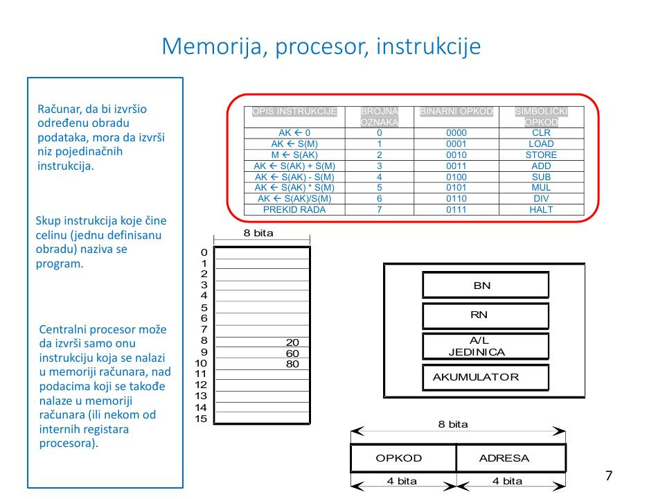
Tabela na slajdu je ceo skup instrukcija ove mašine. Svaka instrukcija ima četiri imena: opis (šta radi, zapisano formulom), brojnu oznaku, binarni opkod i simbolički opkod (reč koju pišemo u asembleru):
| Opis instrukcije | Brojna oznaka | Binarni opkod | Simbolički opkod | Šta radi, rečima |
|---|---|---|---|---|
| AK ← 0 | 0 | 0000 | CLR | Obriši akumulator |
| AK ← S(M) | 1 | 0001 | LOAD | Napuni akumulator sadržajem lokacije M |
| M ← S(AK) | 2 | 0010 | STORE | Upiši akumulator u lokaciju M |
| AK ← S(AK) + S(M) | 3 | 0011 | ADD | Dodaj sadržaj M na akumulator |
| AK ← S(AK) − S(M) | 4 | 0100 | SUB | Oduzmi |
| AK ← S(AK) × S(M) | 5 | 0101 | MUL | Pomnoži |
| AK ← S(AK) / S(M) | 6 | 0110 | DIV | Podeli |
| Prekid rada | 7 | 0111 | HALT | Zaustavi program |
Notacija koju moraš da čitaš tečno: S(M) znači „sadržaj lokacije M“, a strelica ← znači „upiši u“. Dakle AK ← S(AK) + S(M) čitaj: „u akumulator upiši zbir sadržaja akumulatora i sadržaja lokacije M“.
Tekst sa slajda postavlja tri pravila koja važe za svaki računar: da bi izvršio obradu, računar mora da izvrši niz pojedinačnih instrukcija; skup instrukcija koje čine celinu zove se program; procesor može da izvrši samo instrukciju koja se nalazi u memoriji, nad podacima koji su takođe u memoriji ili u registrima.
Naš program: saberi dva broja (slajd 8)
Zadatak sa slajda 8: saberi broj sa adrese 8 i broj sa adrese 9, a rezultat upiši na adresu 10. U višem jeziku to je baš naša naredba A = B + C; (B je na adresi 8, C na 9, A na 10). Neka je B = 20 i C = 60:
Binarno Simbolički Značenje Posle izvršenja 0001 1000 LOAD 8 AK ← S(8) AK = 20 0011 1001 ADD 9 AK ← S(AK) + S(9) AK = 20 + 60 = 80 0010 1010 STORE 10 10 ← S(AK) M[10] = 80 0111 0000 HALT prekini sa radom
Pročitaj prvu instrukciju bit po bit: 0001 je opkod za LOAD, a 1000 je adresa 8. Procesor ne vidi reči LOAD ili ADD, vidi samo ovih osam bita, a dekoder operacionog koda u upravljačkoj jedinici iz prva četiri bita zaključi koja je instrukcija. Probaj sam:
Upiši 8 bita (npr. 00111001). Prva 4 bita su opkod, druga 4 adresa. Ovo radi dekoder operacionog koda.
Ove instrukcije se zovu jednoadresne jer navode samo jednu adresu: drugi operand je uvek u akumulatoru. Zato slajd 8 naglašava: računar koji koristi jednoadresne instrukcije mora da ima akumulator, čija je funkcija da u izvršenju jedne instrukcije čuva jedan operand, a zatim i rezultat.
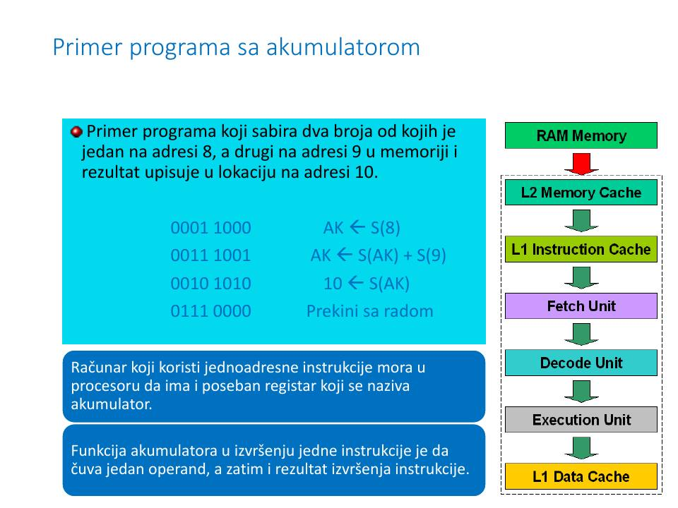
Desno na slajdu 8 je mala skica koja već najavljuje sledeći deo: put kojim instrukcija stiže do izvršenja u stvarnom procesoru. Iz RAM-a ide u L2 keš, pa u L1 keš za instrukcije, odatle je uzima jedinica za donošenje (Fetch Unit), predaje jedinici za dekodiranje (Decode Unit), pa izvršnoj jedinici (Execution Unit), a podaci se čitaju i upisuju preko L1 keša za podatke. Prepoznaješ podeljen L1 keš, modifikovanu Harvard arhitekturu iz Modula 1: instrukcije i podaci imaju odvojene keševe.
Kako bi izgledala binarna instrukcija „oduzmi sadržaj lokacije 12 od akumulatora“?
0100, a 12 binarno je 1100. Instrukcija je 0100 1100. Proveri u dekoderu iznad.A = B + C; u višem jeziku. Kako izgleda instrukcija kad je posmatramo kao strukturu, i da li uvek mora da ima tačno jednu adresu?Od višeg jezika do instrukcije (slajdovi 9–10)
Slajd 9 podseća da se programi pišu u višim jezicima. Pokazuje A = B + C; i deo Java koda (otvaranje mrežne veze sa Socket, učitavanje ključeva sa KeyStore), i kaže: program se mora prevesti u binarni oblik. Jedna linija Jave postaje desetine ili stotine mašinskih instrukcija, a naša naredba A = B + C postaje četiri (LOAD, ADD, STORE, HALT). To je prevođenje „1 : n“ sa nivoa programskog jezika na nivo ISA, koje smo videli na stubu nivoa transformacije u Modulu 1.
Slajd 10 daje strukturu instrukcije. Svaka instrukcija mora da ima operacioni deo (opkod), koji kaže šta treba uraditi, i može da ima jedan ili više adresnih delova, koji kažu sa čim to treba uraditi. U našem simboličkom kodu LOAD B / ADD C / STORE A / HALT: LOAD, ADD, STORE i HALT su opkodi, a B, C i A adresni delovi; HALT nema adresni deo jer mu ne treba podatak.
Koliko adresa ima instrukcija (slajd 11)
Za binarnu operaciju kao što je sabiranje potrebne su, u principu, tri adrese: A1 (adresa prvog operanda), A2 (adresa drugog operanda) i A3 (adresa rezultata). Instrukcija može sve tri da navede eksplicitno, ili neke od njih da „podrazumeva“. Prema tome koliko ih navodi, instrukcije su troadresne, dvoadresne, jednoadresne ili nulaadresne. Evo naše naredbe A = B + C na sva četiri načina:
| Tip | Oblik | A = B + C | Broj instrukcija | Napomena |
|---|---|---|---|---|
| Troadresne | OP A3, A1, A2 | ADD A, B, C | 1 | Najmanje instrukcija, ali je svaka dugačka (tri adrese) |
| Dvoadresne | OP A1, A2 (rezultat u A1) | MOV A, BADD A, C | 2 | Jedan operand se „pregazi“ rezultatom, pa ga prvo kopiramo. Tipično za x86 |
| Jednoadresne | OP A (drugi operand i rezultat su u AK) | LOAD BADD CSTORE A | 3 | Mora postojati akumulator. To je naša mašina |
| Nulaadresne | OP (operandi na vrhu steka) | PUSH BPUSH CADDPOP A | 4 | Stek mašina; ADD skine dva broja sa vrha, sabere i stavi rezultat na vrh |
Nulaadresne instrukcije koriste stek (stack): deo memorije koji radi po principu LIFO (Last In, First Out), poslednje stavljeno prvo se skida, kao gomila tanjira. Postoje samo dve operacije: PUSH (stavi na vrh) i POP (skini sa vrha). Gde je vrh, pamti registar SP (Stack Pointer, pokazivač steka), onaj A7 kod Motorole i SP kod Intela sa slajda 6. Stek se osim za nulaadresne instrukcije koristi za pozive potprograma (čuvanje adrese povratka) i za prekide (čuvanje PC i PSW, Modul 4).
Najbolje se razlika vidi kad pustiš sva četiri programa da se izvršavaju i pratiš gde je međurezultat:
Program
Stanje
Zašto troadresna instrukcija ADD A, B, C na našoj mašini sa 16 lokacija ne bi stala u 8 bita?
Ispitna pitanja iz ove lekcije
Pitanja iz skripte sa ispitnim pitanjima koja se odnose na ovu lekciju. Pokušaj prvo sam da odgovoriš, pa otvori odgovor. Gde je odgovor u skripti bio netačan ili nepotpun, ovde je ispravljen i to je naznačeno.
Šta je brojač naredbi?
Koje su dve osnovne grupe registara savremenih procesora?
Kako se korišćenje registara kao interne, brze memorije odražava na a) brzinu izvršavanja programa, b) dužinu instrukcija, c) lakoću programiranja?
Navesti 2 osnovna nedostatka formata instrukcija sa 3 memorijske adrese (troadresnih instrukcija).
Gde se nalaze operandi za instrukciju sabiranja kada se koristi format nulaadresnih instrukcija?
Koliko je pristupa memoriji potrebno za izvršenje instrukcije ADD [100] [200] (dvoadresni format)?
Šta radi instrukcija ADD [R2], [R3], R1? (a šta ADD R2, R3, R1?)
Navesti sve mogućnosti za broj različitih instrukcija i broj različitih memorijskih lokacija koje se mogu adresirati ako je na raspolaganju jednoadresni tip instrukcije dužine 4 bajta.
Jedna instrukcija korak po korak: mikrooperacije, faze i ciklus
Najvažnija slika Modula 3 (slajd 12)

Ovu sliku profesor detaljno prolazi na tabli, jer je na njoj ceo naš program u pokretu. Čitaj je deo po deo:
- Memorija (sredina levo) ima lokacije 0–15. Program je ovde smešten na adrese 4–7 (LOAD 8, ADD 9, STORE 10, HALT), a podaci na 8, 9, 10 (20, 60, a posle izvršenja 80).
- Brojač naredbi (gore desno) prikazuje sve vrednosti kroz koje prolazi: 4, 5, 6, 7, jednu po instrukciji.
- Adresni registar memorije (gore) prikazuje redom sve adrese koje su u njega upisane: 4, 8, 5, 9, 6, 10, 7. Zapamti ovaj niz, jer pokazuje ritam rada: naizmenično adresa instrukcije pa adresa podatka. Linija adresa instrukcije dolazi iz brojača naredbi, a linija adresa podataka iz adresnog dela registra instrukcija.
- Prihvatni registar memorije (dole levo) prima redom sve što je pročitano: instrukciju LOAD 8, podatak 20, instrukciju ADD 9, podatak 60, instrukciju STORE 10, a pri upisu sadrži 80.
- Instrukcije odatle idu desno u registar instrukcija, a opkod iz njega u dekoder operacionog koda. Podaci idu dole u A/L jedinicu i akumulator, koji redom sadrži 20, pa 80.
Zašto se adresa 7 pojavljuje u adresnom registru memorije, a adresa 11 ne?
Šta se tačno dešava: mikrooperacije (slajd 13)
Slika 12 pokazuje šta prolazi kroz registre. Slajd 13 kaže kojim redom. Svaka instrukcija se izvršava kroz niz sitnih koraka koji se zovu mikrooperacije; svaki je jedno prebacivanje između registara ili jedno čitanje memorije. Evo ih za prvu instrukciju našeg programa, LOAD 8, sa adrese 4:
| # | Mikrooperacija | Šta se dešava | Faza |
|---|---|---|---|
| 1 | ARM ← S(BN) | Adresa instrukcije (iz BN, ovde 4) se upiše u adresni registar memorije | Donošenje (fetch) |
| 2 | PRM ← S(S(ARM)) | Memorija pročita lokaciju čija je adresa u ARM i stavi instrukciju u PRM. Dvostruko S znači: „sadržaj lokacije čija adresa je sadržaj ARM“ | |
| 3 | RN ← S(PRM) | Instrukcija se prebaci u registar naredbi | |
| 4 | BN ← S(BN) + 1 | BN se poveća za 1 (sada je 5); tako se obezbeđuje automatski prelazak na sledeću instrukciju | |
| 5 | ANALIZIRAJ | Dekoder pročita opkod 0001 i zaključi: LOAD | Dekodiranje |
| 6 | ARM ← S(RNA) | Adresni deo instrukcije (RNA = adresni deo RN, ovde 8) ide u ARM | Izvršavanje |
| 7 | PRM ← S(S(ARM)) | Memorija pročita lokaciju 8; podatak 20 stiže u PRM | |
| 8 | AK ← S(PRM) | Podatak se upiše u akumulator |
Prva četiri koraka su ista za svaku instrukciju: tako se instrukcija donosi. Razlikuje se samo ono posle dekodiranja. Za ADD 9 bi poslednji korak bio AK ← S(AK) + S(PRM) (sabiranje u ALU), a za STORE 10 bi se podatak kretao obrnuto: PRM ← S(AK), pa upis u memoriju na adresu iz ARM.
Napiši mikrooperacije za izvršni deo instrukcije ADD 9 (posle dekodiranja).
ARM ← S(RNA) (adresa 9 u ARM), PRM ← S(S(ARM)) (podatak 60 u PRM), AK ← S(AK) + S(PRM) (ALU sabira 20 + 60, u akumulatoru je 80).Modeli izvršavanja: 3, 8 i 9 faza (slajdovi 14–16)
Slajd 14 kaže da izvršavanje instrukcije obuhvata više koraka, ili faza. Najjednostavniji model ima 3 faze: donošenje (fetch), dekodiranje (decode) i izvršavanje (execute). Naših osam mikrooperacija se uklapa u njega: koraci 1–4 su donošenje, 5 je dekodiranje, 6–8 izvršavanje. Ali „izvršavanje“ tu krije mnogo toga, pa udžbenik koristi detaljniji model sa 9 faza:
| # | Faza | Engleski (sa slike) | Objašnjenje |
|---|---|---|---|
| 1 | Donošenje instrukcije iz memorije u procesor | Instruction fetch | MAR ← PC, čitanje, IR ← MBR |
| 2 | Dekodiranje operacionog koda | Instruction operation decoding | Šta treba uraditi i koliko operanada ima |
| 3 | Izračunavanje adrese operanda | Operand address calculation | Zavisi od načina adresiranja (Modul 4) |
| 4 | Donošenje operanda iz memorije | Operand fetch | Ako ima više operanada, faze 3–4 se ponove |
| 5 | Izvršavanje instrukcije | Data operation | ALU radi operaciju |
| 6 | Izračunavanje adrese za upis rezultata | Operand address calculation | Gde ide rezultat |
| 7 | Upisivanje rezultata u memoriju | Operand store | Ako ima više rezultata, faze 6–7 se ponove |
| 8 | Provera da li postoji prekid | Interrupt check | Ako je stigao zahtev za prekid, ide se na obradu prekida |
| 9 | Izračunavanje adrese sledeće instrukcije | Instruction address calculation | Obično PC + 1 (ili + dužina instrukcije); kod skoka nova adresa |
Model sa 8 faza (slajd 15) je isti, samo bez provere prekida. Faze nisu obavezne za svaku instrukciju: LOAD 8 ima donošenje operanda, ali nema upis rezultata u memoriju; STORE 10 ima upis, ali ne donosi operand iz memorije; HALT nema nijedan operand.

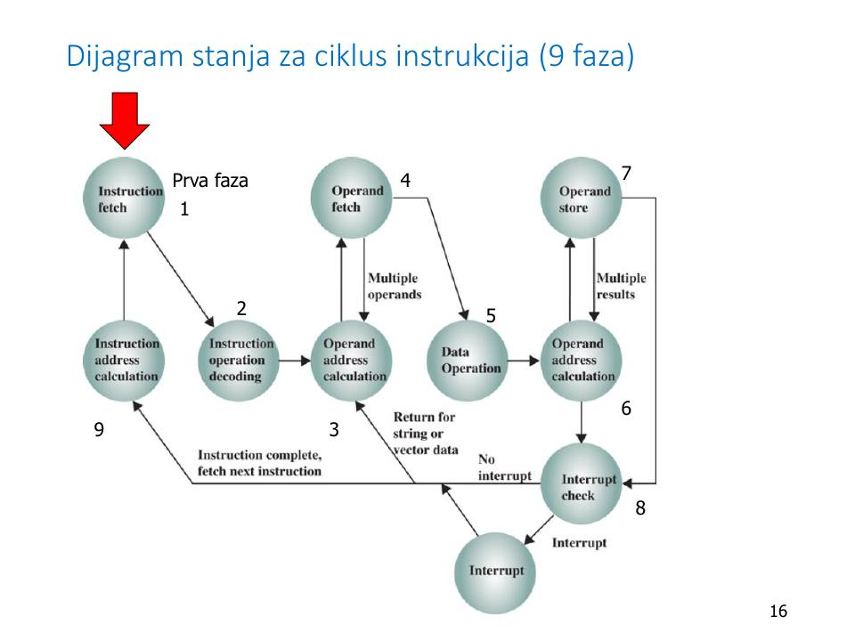
Slajdovi 15 i 16 crtaju faze kao dijagram stanja: svaki krug je jedno stanje (faza), a strelice su prelazi. Crvena strelica označava prvu fazu. Gornji red krugova su faze u kojima se pristupa memoriji (instruction fetch, operand fetch, operand store); donji red su faze unutar procesora (računanje adresa, dekodiranje, operacija). Tri petlje na dijagramu treba da prepoznaš: Multiple operands (između 3 i 4: ako instrukcija ima više operanada, vrati se i donesi sledeći), Multiple results (između 6 i 7: više rezultata) i Return for string or vector data (iz 5 nazad na 3: instrukcija koja radi nad nizom ponavlja to za svaki element). Na slajdu 16 je dodata faza 8, Interrupt check: ako nema prekida (No interrupt), ide se na fazu 9 i sledeću instrukciju; ako ima (Interrupt), ide se u stanje Interrupt (obrada prekida, Modul 4), pa tek onda na sledeću instrukciju.
U infografici ispod pusti kroz dijagram svaku instrukciju našeg programa i gledaj koje faze preskače:
Gornji red: faze u kojima se pristupa memoriji. Donji red: faze unutar procesora. Sivo: faze koje ova instrukcija preskače.
Koje faze od 9 prolazi instrukcija STORE 10 na akumulatorskoj mašini?
Kakve sve instrukcije postoje (slajdovi 17–18)
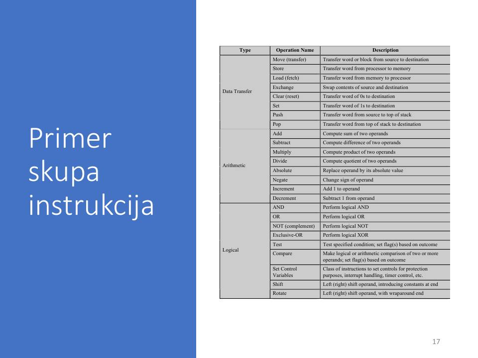

Slajdovi 17 i 18 su tabela iz Stallingsove knjige sa tipičnim instrukcijama, podeljenim u grupe. Grupe vredi zapamtiti, jer svaka odgovara jednoj od četiri funkcije računara iz Modula 1: prenos podataka i U/I su prenos, aritmetičke i logičke su obrada, a prenos upravljanja je upravljanje.
| Grupa | Instrukcija | Šta radi |
|---|---|---|
| Prenos podataka (Data Transfer) | Move (transfer) | Prenosi reč ili blok sa izvora na odredište |
| Store | Prenosi reč iz procesora u memoriju | |
| Load (fetch) | Prenosi reč iz memorije u procesor | |
| Exchange | Zameni sadržaje izvora i odredišta | |
| Clear (reset) | Upiše sve nule | |
| Set | Upiše sve jedinice | |
| Push | Stavi reč na vrh steka | |
| Pop | Skini reč sa vrha steka | |
| Aritmetičke | Add, Subtract, Multiply, Divide | Zbir, razlika, proizvod, količnik dva operanda |
| Absolute, Negate, Increment, Decrement | Apsolutna vrednost, promena znaka, +1, −1 | |
| Logičke | AND, OR, NOT, XOR | Logičke operacije bit po bit |
| Test, Compare | Proveri uslov ili uporedi; postavi zastavice prema rezultatu (rezultat se ne upisuje) | |
| Set Control Variables | Podešavanja za zaštitu, prekide, tajmer | |
| Shift, Rotate | Pomeranje bitova levo/desno. Shift na kraj ubacuje konstantu (0); Rotate ubacuje bit koji je ispao sa drugog kraja („u krug“) | |
| Prenos upravljanja (Transfer of Control) | Jump (branch) | Bezuslovni skok: upiši zadatu adresu u PC |
| Jump Conditional | Proveri uslov; ako važi upiši adresu u PC, ako ne, ne radi ništa | |
| Jump to Subroutine | Sačuvaj trenutno stanje (adresu povratka) na poznato mesto i skoči na potprogram | |
| Return | Vrati PC i druge registre sa sačuvanog mesta (povratak iz potprograma) | |
| Execute | Izvrši operand kao instrukciju, bez menjanja PC | |
| Skip, Skip Conditional | Preskoči sledeću instrukciju (PC + 1), bezuslovno ili uslovno | |
| Halt, Wait, No operation | Zaustavi; čekaj dok se ne ispuni uslov; ne radi ništa (ali nastavi) | |
| Ulaz/izlaz | Input, Output | Prenos podatka sa U/I porta u memoriju ili registar i obrnuto |
| Start I/O, Test I/O | Pokreni U/I operaciju na U/I procesoru; pročitaj status U/I sistema | |
| Konverzija | Translate, Convert | Prevedi vrednosti preko tabele; pretvori iz jednog oblika u drugi (npr. pakovani decimalni u binarni) |
Posebno obrati pažnju na prenos upravljanja. To su jedine instrukcije koje menjaju BN drugačije nego „+1“, i upravo one omogućavaju petlje i odluke (if). Bez njih bi svaki program bio samo prav niz koraka.
Mašina sa registrima i njen skup instrukcija (slajd 19)

Za primer izvršavanja koji sledi, slajd 19 uvodi nešto bogatiju mašinu: pored akumulatora ima i registre opšte namene R1 i R2. Imena instrukcija su skraćenice koje se čitaju kao „odakle-kuda“:
| Instrukcija | Opis |
|---|---|
INP val mem | Upiši brojnu vrednost val u lokaciju mem |
MAM mem | Kopiraj iz Akumulatora u Memoriju (M-A-M) |
MMR mem reg | Kopiraj iz Memorije u Registar |
MRA reg | Kopiraj iz Registra u Akumulator |
MAR reg | Kopiraj iz Akumulatora u Registar (ovo nije registar MAR!) |
ADD / SUB / MUL / DIV reg1 reg2 | reg1 op reg2, rezultat u akumulator |
JMP mem | Bezuslovni skok na mem (postavlja BN = mem − 1, jer će se BN posle povećati za 1) |
JPZ mem | Skok ako je AK = 0 |
JPN mem | Skok ako AK ≠ 0 |
JPL mem | Skok ako je AK < 0 |
JPG mem | Skok ako je AK > 0 |
HLT | Kraj programa |
Na ovoj mašini naša naredba A = B + C (B na adresi 06, C na 07, A na 08) izgleda ovako: MMR 06 R1, MMR 07 R2, ADD R1 R2, MAM 08, HLT. Pet instrukcija umesto četiri, ali sabiranje se sada radi nad registrima, što je u stvarnim procesorima mnogo brže od rada nad memorijom.
00: MMR 10 R1 01: MMR 11 R2 02: SUB R1 R2 AK = R1 − R2 03: JPZ 06 ako je AK = 0, sledeća instrukcija je ona na 06 04: MAM 12 inače upiši razliku u 12 05: HLT 06: INP 1 13 upiši 1 u 13 07: HLTPrimeti kako JPZ menja redosled izvršavanja: umesto 03 → 04, ide 03 → 06. Na slajdu stoji da JMP postavlja BN = mem − 1: to je zato što se posle izvršenja BN automatski poveća za 1, pa sledeća instrukcija bude baš ona na adresi mem.
Ceo program u pokretu (slajdovi 20–40)
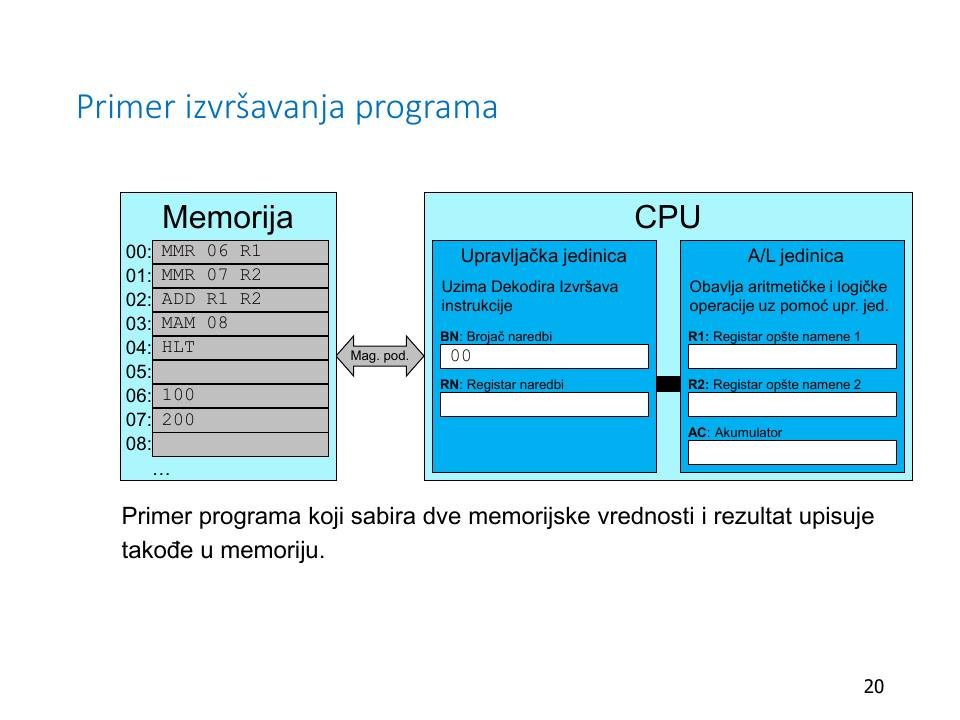
Slajdovi 20–40 su jedna animacija od 21 slike: isti crtež, a na svakom slajdu se pomeri po jedna vrednost. Levo je memorija sa programom na adresama 00–04 i podacima 100 i 200 na adresama 06 i 07. Desno je CPU: upravljačka jedinica (uzima, dekodira, izvršava instrukcije) sa registrima BN i RN, A/L jedinica sa registrima R1, R2 i akumulatorom AC, i magistrala podataka između njih. Tekst ispod svakog slajda kaže u kom smo koraku.
Priča počinje pre prve instrukcije (slajd 21): program se pokreće pomoću operativnog sistema, koji prebaci instrukcije i podatke u memoriju (to radi loader, videćemo u delu 3) i postavi BN na prvu instrukciju programa, 00. Tek tada počinje da se ponavlja ciklus „Uzmi – analiziraj – izvrši“, posle koga se BN poveća. Klikći i prati sve registre:
Ovo je tačno ono što prikazuje 20 slajdova (20–40). Klikći „Sledeći korak“ i prati BN, RN, R1, R2 i AC. Narandžasto je lokacija na koju pokazuje BN, zeleno ona kojoj se upravo pristupa.
Pet instrukcija, pet ciklusa, i svaki ima ista četiri koraka. U prvom ciklusu (slajdovi 22–25) instrukcija sa lokacije 00 stiže u RN, upravljačka jedinica je dekodira, vrednost 100 se kopira u R1, a BN postaje 01. U drugom (26–29) isto za 200 i R2. U trećem (30–33) ALU sabira registre i u AC je 300. U četvrtom (34–37) MAM 08 upisuje 300 u memoriju. U petom (38–40) dolazi HLT: kraj programa. Poslednji slajd kaže šta se tada dešava: procesor pita operativni sistem za sledeću vrednost BN, to jest za adresu sledećeg programa koji treba izvršiti. Procesor nikad zaista ne „staje“; samo prelazi na drugi program.
Koliko je BN posle izvršenja instrukcije MAM 08, i zašto?
Kako to izgleda u pravom procesoru (slajdovi 41–42)
Na kraju prvog dela predavanja profesor pokazuje da naš model nije samo školski. Slajd 41 opisuje Intel Core 2 Duo: Intelov procesor sa 64-bitnom arhitekturom i x86-64 skupom instrukcija, sa dva nezavisna jezgra koja dele do 6 MB L2 keša, razvijen sa novom mikroarhitekturom koja se zove Core Microarchitecture.

Dve identične kolone na slajdu 42 su dva jezgra, a u sredini je zajednički L2 keš povezan sa sistemskom magistralom (System Bus). Svako jezgro odozgo nadole prati upravo naš ciklus instrukcije, samo kao stvarne hardverske blokove: Instruction Fetch and PreDecode (donošenje i preliminarno dekodiranje), Instruction Queue (red instrukcija koje čekaju), Decode (dekodiranje; uz njega je uCode ROM, mikroprogramska memorija za složene x86 instrukcije, o kojoj više u delu 4), Rename/Alloc (preimenovanje registara da bi nezavisne instrukcije mogle paralelno), Reorder Buffer / Retirement Unit (instrukcije se izvršavaju van redosleda, a ovde se vraćaju u pravi redosled), Schedulers (raspoređivači koji šalju instrukcije izvršnim jedinicama), pa izvršne jedinice: FPU, dve ALU, Load i Store. Na dnu je L1 D-Cache (keš podataka) i D-TLB. Ovo je superskalarni procesor iz Modula 2: faze se preklapaju (protočna obrada), a više instrukcija se izvršava istovremeno.
Ispitna pitanja iz ove lekcije
Pitanja iz skripte sa ispitnim pitanjima koja se odnose na ovu lekciju. Pokušaj prvo sam da odgovoriš, pa otvori odgovor. Gde je odgovor u skripti bio netačan ili nepotpun, ovde je ispravljen i to je naznačeno.
Navesti sve faze opšteg modela izvršavanja instrukcije koji ima 9 faza. Koje su obavezne, a koje opcione?
Objasniti ili grafički prikazati čitanje instrukcije iz memorije. Posebno objasniti namenu registara BN, MAR, RN i PRM.
Zašto se u toku izvršavanja jednoadresnih instrukcija, nakon analize operacionog koda, a pre faze izvršavanja, menja sadržaj memorijskog adresnog registra (MAR)?
Objasniti „uzmi – analiziraj – izvrši“ ciklus, tj. kako se izvršavaju instrukcije programa (npr. na primeru dvoadresnih instrukcija).
Objasniti proces izvršavanja instrukcije na primeru jednoadresnog (akumulatorskog) računara.
Od simboličkog koda do mašinskog, i memorija koja hrani procesor
Put od izvornog koda do programa koji radi (slajd 43)

Slajd 43 pokazuje lanac alata kroz koji prolazi svaki program pre nego što ga procesor izvrši:
- Izvorni program (Source Program): program u asemblerskom jeziku, sa simboličkim imenima (LOAD, ADD, oznake promenljivih kao A, B, C).
- Asembler prevodi simboličke instrukcije u binarni mašinski kod. Rezultat je objektni kod (Object Code): mašinski kod, ali još sa „rupama“ za adrese koje su u drugim fajlovima.
- Linker (povezivač) spaja više objektnih fajlova i biblioteka u jedan izvršni kod (Executable Code) i popunjava te „rupe“ (npr. adresu funkcije
printfiz biblioteke). - Loader (punilac) je deo operativnog sistema koji učitava izvršni program u memoriju, podešava adrese prema mestu gde je program smešten i postavlja BN na prvu instrukciju. To je onaj korak sa slajda 21, pre prvog ciklusa.
Zašto asembler čita program dva puta (slajdovi 44–45)
Asembler na prvi pogled ima lak posao: zameni LOAD sa 0001, ADD sa 0011 i tako dalje. Problem su adrese. Program može da koristi simboličku adresu pre nego što je ona definisana (referenca unapred, forward reference). Na primer JMP KRAJ na početku programa, a oznaka KRAJ je tek na kraju. Isto važi i za naše promenljive A, B i C: one dobijaju adrese tek kad se zna koliko je dug program, jer se smeštaju iza njega. Kad asembler čita program redom, u trenutku kad vidi LOAD B još ne zna gde će B biti. Rešenje: pročitaj program dva puta. Prvi put samo zapiši gde je šta, drugi put prevedi do kraja.
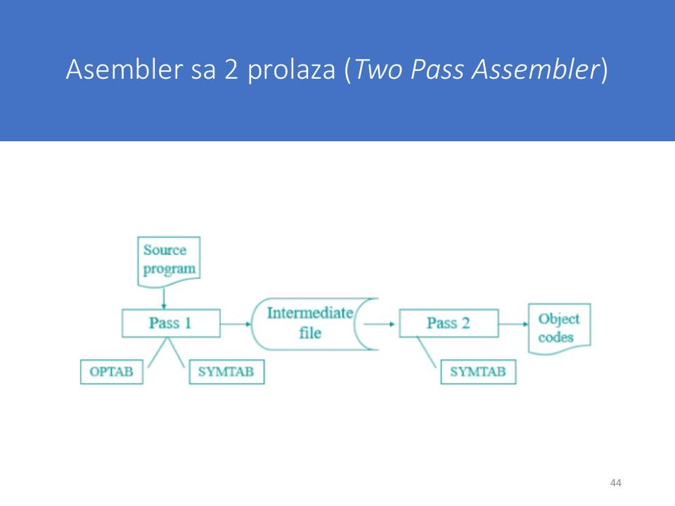
Slajd 44 to crta kao tok: izvorni program ulazi u Pass 1, koji koristi dve tabele: OPTAB (tabela operacionih kodova: koji simbolički opkod odgovara kom binarnom, npr. ADD → 0011) i SYMTAB (tabela simbola: koja oznaka je na kojoj adresi). Pass 1 pravi međufajl (Intermediate file). Pass 2 čita međufajl, iz SYMTAB-a uzima adrese i pravi konačan objektni kod.
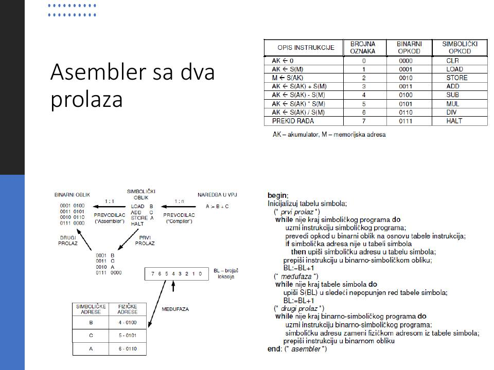
Slajd 45 to radi na našoj naredbi. Gore desno je tabela instrukcija akumulatorske mašine (ista kao na slajdu 7). Levo je tok, koji se čita zdesna nalevo: naredba u višem jeziku A = B + C → (prevodilac, compiler, 1:n jer jedna naredba daje više instrukcija) → simbolički oblik LOAD B / ADD C / STORE A / HALT → prvi prolaz → binarno-simbolički oblik 0001 B / 0011 C / 0010 A / 0111 0000 (opkodi su binarni, adrese još simboličke) → međufaza: tabela simbola dobija fizičke adrese pomoću brojača lokacija BL (B = 4 = 0100, C = 5 = 0101, A = 6 = 0110) → drugi prolaz → binarni oblik 0001 0100 / 0011 0101 / 0010 0110 / 0111 0000. Desno je algoritam u pseudokodu.
Primeti da su ovde B, C i A na adresama 4, 5 i 6, a na slajdu 12 su bili na 8, 9 i 10. To nije greška: program je ovde smešten od adrese 0, pa promenljive dolaze odmah iza njega (0–3 je program, 4–6 su promenljive). Na slajdu 12 program je bio na 4–7, a podaci iza. Gde će šta biti, odlučuje se pri prevođenju i učitavanju, a sam program je isti.
Algoritam sa slajda, objašnjen red po red:
begin
inicijalizuj tabelu simbola
(* PRVI PROLAZ *)
while nije kraj simboličkog programa do
uzmi instrukciju simboličkog programa
prevedi opkod u binarni oblik pomoću tabele instrukcija
if simbolička adresa nije u tabeli simbola
then upiši je u tabelu simbola
prepiši instrukciju u binarno-simboličkom obliku
BL := BL + 1 (* brojač lokacija: sledeća adresa *)
(* MEĐUFAZA *)
while nije kraj tabele simbola do
upiši S(BL) u sledeći nepopunjen red tabele simbola
BL := BL + 1 (* svaka promenljiva dobija svoju adresu *)
(* DRUGI PROLAZ *)
while nije kraj binarno-simboličkog programa do
uzmi instrukciju
simboličku adresu zameni fizičkom adresom iz tabele simbola
prepiši instrukciju u binarnom obliku
end
Pusti algoritam da radi na nekoliko programa i prati kako se puni tabela simbola:
Program počinje od adrese 0, a promenljive se smeštaju odmah iza programa, redom kojim se prvi put pojave (kao na slajdu 45).
Simbolički program
Tabela simbola
Rezultat prevođenja
LOAD X / SUB Y / STORE Z / HALT, program počinje od adrese 0, a promenljive se smeštaju odmah iza programa redom kojim se pojave.
- Prvi prolaz:
0001 X / 0100 Y / 0010 Z / 0111 0000; tabela simbola: X, Y, Z (bez adresa). BL posle programa = 4. - Međufaza: X = 4 (0100), Y = 5 (0101), Z = 6 (0110).
- Drugi prolaz:
0001 0100 / 0100 0101 / 0010 0110 / 0111 0000.
Problem: memorija kasni za procesorom (slajd 46)
Slajd 46 kaže: operativne memorije su za oko red veličine (10 puta) sporije od procesora. (Tako piše na slajdu; po brojevima iz Modula 1, deo 1.3, razlika između registra i RAM-a je danas i veća, 100–300 puta, pa je keš još važniji.) Kod aplikacija gde je brzina obrade najvažnija, operativna memorija je „usko grlo“ sistema: procesor stalno čeka podatke. To je Von Neumann-ovo usko grlo iz Modula 1, sada izraženo brojem.
Rešenje sa slajda: pored operativne memorije uvodi se još jedan hijerarhijski nivo, čija je brzina pristupa porediva sa brzinom procesora. Zbog visoke cene on ima mali kapacitet. Crtež na dnu slajda pokazuje polaznu situaciju bez keša: CPU (registri i ALU) i memorija (RAM, „niz bajtova“) povezani magistralom podataka i adresnom magistralom.
Hijerarhija memorije (M3_02, slajdovi 14–15)
Drugo predavanje Modula 3 isti problem crta šire, pa ga ovde spajamo:


Piramida na slajdu 14, odozgo: registri → keš (više nivoa, SRAM) → glavna memorija (DRAM, SDRAM, DDR) → SSD memorija → flash i disk → virtuelna memorija i baze podataka. Strelice desno je dele na On-chip storage (na samom čipu procesora), Onboard storage (na matičnoj ploči) i Outboard storage (van ploče). Grafik na slajdu 15 to kaže brojevima: horizontalno je vreme pristupa i veličina memorije, vertikalno brzina prenosa i cena po bitu. Kriva ide od registara gore levo (najbrži, najskuplji po bitu, najmanji) do trake dole desno (najsporija, najjeftinija, najveća). Nijedna memorija nije istovremeno i brza i velika i jeftina, i zato se pravi hijerarhija. Ovo je slika sa slajda 17 Modula 1, samo detaljnija.
Skrivena (keš) memorija (slajdovi 47–48)
Novi nivo između procesora i operativne memorije zove se cache (keš, „skrivena memorija“). Cilj je, kaže slajd 47, da se stvori utisak da cela operativna memorija ima brzinu blisku ultra brzoj memoriji: program misli da radi sa velikim i brzim RAM-om, a zapravo najčešće dobija podatke iz malog keša.
Na slajdu 47 tri kutije su tri nivoa koje procesor vidi kad traži podatak: Registers (unutar procesora), Cache i Physical Memory (RAM). Slajd 48 pokazuje gde je keš umetnut: gore je klasična veza bez keša, CPU i RAM povezani magistralom podataka (dvosmerne strelice) i adresnom magistralom (strelice samo od CPU ka memoriji, jer adresu uvek zadaje procesor). Dole je ista stvar sa kešom: CPU ↔ skrivena memorija ↔ operativna memorija. Procesor keš ne „vidi“ kao posebnu memoriju i ne adresira ga posebno; zato se i zove skrivena.
Slajd 47 uz to daje i nekoliko definicija koje se pitaju:
- Prema dostupnosti programeru, memorija može biti neskrivena (programer mora sam da je koristi i vodi računa o njoj, to je za njega dodatno opterećenje) i skrivena (keš: programer je ne vidi, hardver njome automatski upravlja).
- Primarna (RAM) i sekundarna memorija (disk) se često povezuju preko posebnog ulazno-izlaznog procesora (vidi DMA u Modulu 4).
- Najčešće se memorijskoj lokaciji pristupa pomoću adrese: to je adresni pristup.
- Ponekad znamo samo deo sadržaja lokacije, koji se zove ključ. Asocijativna memorija je memorija kod koje se ćelija pronalazi po ključu, a ne po adresi. Ona paralelno uporedi ključ sa svim ćelijama odjednom. Koristi se upravo u kešu (traženje po tag-u) i u TLB-u (prevođenje adresa).
Kako keš radi (dopuna, ovo profesor objašnjava na tabli)
- Procesor traži podatak sa adrese X. Prvo pita keš.
- Ako je podatak u kešu, to je pogodak (hit): dobija ga za 1–2 ns.
- Ako nije, to je promašaj (miss): podatak se donosi iz RAM-a (50–100 ns), ali ne samo taj bajt, nego ceo blok (keš linija), npr. 64 susedna bajta. Blok se smesti u keš.
- Sledeći put kad procesor traži taj ili susedni podatak, biće pogodak, zahvaljujući vremenskoj i prostornoj lokalnosti (Modul 2).
U našem programu: posle prvog promašaja na instrukciji LOAD, cela linija sa LOAD, ADD, STORE i HALT (susedne adrese) stiže u keš odjednom, pa su sledeća tri donošenja instrukcija pogoci. To je prostorna lokalnost na delu.
Gde se blok smešta u keš (načini mapiranja):
- Direktno mapiranje (direct-mapped): svaki blok RAM-a može ići samo na jedno tačno određeno mesto u kešu: broj_linije = broj_bloka mod broj_linija_u_kešu. Najjednostavnije i najbrže, ali ako dva često korišćena bloka idu na isto mesto, stalno se izbacuju. Adresa se deli na tri dela: tag | indeks linije | offset u liniji. Ovo treba za domaći zadatak 1 (završno poglavlje ★).
- Potpuno asocijativno: blok može na bilo koje mesto; keš traži po sadržaju (tag-u), kao asocijativna memorija. Najfleksibilnije, ali najskuplje.
- Skupno-asocijativno (set-associative): kompromis; blok može na bilo koje od npr. 8 mesta u jednom skupu. Ovo koristi većina modernih procesora.
Direktno mapiranje korak po korak
Ovo je deo koji se najčešće ne razume, a treba za domaći. Keš je podeljen na linije (blokove) iste veličine. Svaka memorijska adresa se deli na tri polja:
- Offset: koji bajt unutar linije. Ako linija ima 2ᵒ bajtova, offset ima o bita. Linija od 32 B → 5 bita.
- Indeks: u koju liniju keša blok sme da ide. Ako keš ima 2ⁱ linija, indeks ima i bita. 2048 linija → 11 bita.
- Tag: svi preostali (gornji) biti adrese. Pošto u istu liniju može da dođe mnogo različitih blokova, keš uz svaku liniju pamti tag, da bi znao koji blok je trenutno tu.
Šta se dešava pri pristupu: iz adrese se uzme indeks i pogleda ta jedna linija. Ako je linija popunjena (bit valid = 1) i njen tag je jednak tagu adrese, to je pogodak: bajt se čita na poziciji offset. Ako nije, to je promašaj: ceo blok se donese iz RAM-a u tu liniju (ono što je bilo tu se izbaci), i upiše se novi tag.
001 011 01: tag 1, linija 3, bajt 1. Adresa 13 = 000 011 01 ima isti indeks 3, ali drugi tag (0), pa se 45 i 13 „svađaju“ oko linije 3.Šta da primetiš u laboratoriji: kod niza redom promašaj je samo na prvom bajtu svake linije (0, 4, 8, 12), a ostali su pogoci; to je prostorna lokalnost. Kod petlje prvi krug su promašaji, a drugi i treći sve pogoci; to je vremenska lokalnost. Kod sukoba svaki pristup je promašaj iako je keš skoro prazan; to je mana direktnog mapiranja koju rešava (skupno-)asocijativni keš.
Adresa ima 32 bita, keš ima 1024 linije po 64 B. Koliko bita ima tag, indeks i offset?
Dodatni izvori: Princeton, Assemblers and Linkers (predavanje) · GeeksforGeeks, Introduction of Assembler
Ispitna pitanja iz ove lekcije
Pitanja iz skripte sa ispitnim pitanjima koja se odnose na ovu lekciju. Pokušaj prvo sam da odgovoriš, pa otvori odgovor. Gde je odgovor u skripti bio netačan ili nepotpun, ovde je ispravljen i to je naznačeno.
Koja komponenta (hardver, operativni sistem, kompajler, programski jezik) upravlja kojim nivoom memorije (keš, hard disk, glavna memorija, registri)?
Skup instrukcija kao celina: modeli mašina, CISC i RISC
Drugo predavanje Modula 3 (M3_02) po sadržaju na slajdu 2 ide ovim redom: procesor i memorija (Von Neumann), ključni faktori performansi i načini da se one poboljšaju, primer skupa instrukcija, vrste ISA arhitektura, CISC i RISC. Prvi deo toga već znaš: Von Neumann i klasifikaciju računara (slajdovi 3–5) radili smo u Modulu 1, a procesor, Hyper-Threading i faktore performansi (slajdovi 6–13) u Modulu 2. Hijerarhiju memorije (14–15) smo upravo uradili uz keš. Ostaje ono što je novo: skup instrukcija kao celina.
Skup instrukcija pravog procesora (slajdovi 16–18)

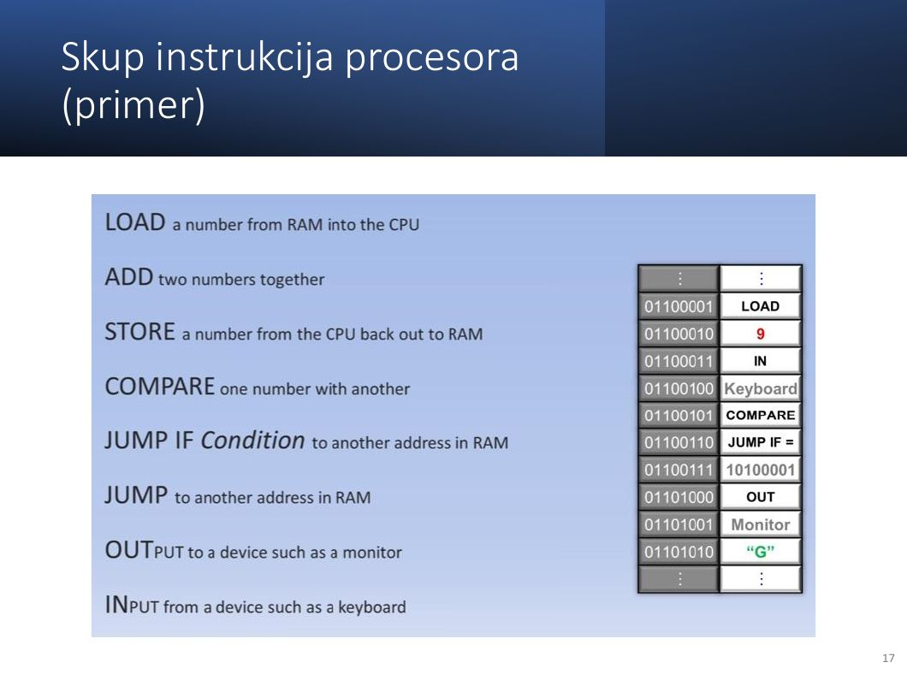
Slajd 16 nabraja šest instrukcija jednostavnog procesora: LOAD (broj iz RAM-a u CPU), ADD (saberi dva broja), STORE (broj iz CPU nazad u RAM), COMPARE (uporedi dva broja), JUMP IF uslov (skok na drugu adresu u RAM-u ako važi uslov) i JUMP (bezuslovni skok). Slajd 17 dodaje OUT (izlaz na uređaj kao što je monitor) i IN (ulaz sa uređaja kao što je tastatura). Desno je deo memorije: svaka instrukcija je binarni kod (npr. 01100001 = LOAD), a iza nje sledi adresa ili podatak. Na slajdu 17 vidiš i ceo mali program: učitaj (LOAD 9), uzmi znak sa tastature (IN Keyboard), uporedi (COMPARE), skoči ako je jednako (JUMP IF = 10100001), ispiši na monitor (OUT Monitor) slovo „G“. Poruka je ista kao kod Von Neumann-a: u memoriji su instrukcije i podaci izmešani i izgledaju isto. Prepoznaj i grupe sa slajdova 17–18 iz M3_01: prenos podataka, aritmetika, logika (COMPARE), prenos upravljanja (JUMP) i U/I (IN, OUT).
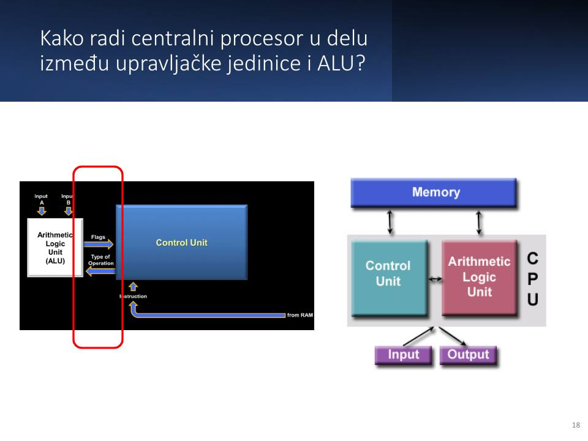
Slajd 18 gleda instrukciju iz ugla ALU. Upravljačka jedinica dobija instrukciju i iz nje izdvaja tip operacije (šta ALU treba da radi: sabiranje, poređenje) i ulaze (koji podaci). ALU dobija ta dva ulaza (Input 1, Input 2) i signal operacije, i daje izlaz (rezultat) i flags (zastavice, koje idu u PSW). Desno je ista ideja u Von Neumann-ovom bloku: Memory iznad, Control Unit i Arithmetic Logic Unit kao CPU. Upravo ove zastavice koristi instrukcija JUMP IF: COMPARE ih postavi, a skok ih pročita.
Pet modela mašina: odakle dolaze operandi (slajdovi 19–21)
Slajd 19 deli sve mašine u pet modela prema kriterijumu odakle dolaze operandi. Ovo je proširenje podele po broju adresa iz dela 1:


Na slikama su četiri kolone; u svakoj je gore procesor (plavo), dole memorija (ljubičasto). Žute kutije su mesta na kojima su operandi, a strelice pokazuju odakle ALU uzima ulaze i gde vraća rezultat. Stack: ALU uzima oba operanda sa vrha steka (TOS, top of stack) i vraća rezultat na vrh; instrukcija ne navodi nijedan operand. Accumulator: jedan ulaz je uvek akumulator, drugi iz memorije; navodi se jedan operand (to je naša mašina iz dela 1). Register-Memory: jedan operand iz registra, drugi može direktno iz memorije. Register-Register: oba operanda iz registara, a memoriji pristupaju samo Load i Store. Slajd 21 dole ispisuje naš primer, samo sa drugim imenima: C = A + B.
| Model | Primeri | Eksplicitnih operanada | C = A + B |
|---|---|---|---|
| 1. Stek | Burroughs B5000, HP 3000, JVM, Intel x87 FPU | 0 | Push A; Push B; Add; Pop C |
| 2. Akumulator | Motorola 6800 | 1 | Load A; Add B; Store C |
| 3. Registar–memorija | x86, IBM 360 | 2 ili 3 | Load R1,A; Add R3,R1,B; Store R3,C |
| 4. Memorija–memorija | VAX | 2 ili 3 | Add C, A, B |
| 5. Registar–registar (load/store) | ARM, MIPS, SPARC, RISC-V | 2 ili 3 | Load R1,A; Load R2,B; Add R3,R1,R2; Store R3,C |
Zašto su danas skoro sve nove arhitekture registar–registar? Registri su brzi, a ako samo Load i Store diraju memoriju, sve ostale instrukcije su jednostavne, iste dužine i traju isto. To olakšava protočnu obradu iz Modula 2. To je suština RISC pristupa, do koga upravo stižemo.
Na kom od pet modela program za C = A + B ima najmanje instrukcija, a na kom najviše pristupa registrima?
Add C, A, B. Najviše rada sa registrima ima registar–registar: četiri instrukcije, ali je sabiranje čisto nad registrima, a memoriji se pristupa samo pri Load i Store.Stvarni skupovi instrukcija (slajdovi 22–23)

Tabela na slajdu 22 svrstava stvarne procesore u te modele. Kolone su: Type (model), # Oper (koliko operanada ima aritmetička instrukcija), # Mem (koliko od njih sme da bude u memoriji), Data Size (širina podataka), # Regs (broj registara), Addr Size (širina adrese) i Use (gde se koristi). Profesor je crvenim uokvirio tri reda:
- ARM: Reg-Reg, 3 operanda, 0 u memoriji, 16 registara, telefoni i ugrađeni sistemi.
- x86: Reg-Mem, 2 operanda, 1 sme biti u memoriji, 4/8/24 registara (zavisno od generacije), lični računari.
- VAX: Mem-Mem, 3 operanda, sva 3 mogu biti u memoriji, miniračunari.
Ostali redovi (Alpha, MIPS, SPARC, TI C6000) su svi Reg-Reg sa 32 registra, IBM 360 je Reg-Mem, a Motorola 6800 je akumulatorska mašina sa jednim operandom i 0 registara opšte namene. Uoči obrazac: što je arhitektura novija, to više registara i manje pristupa memoriji.
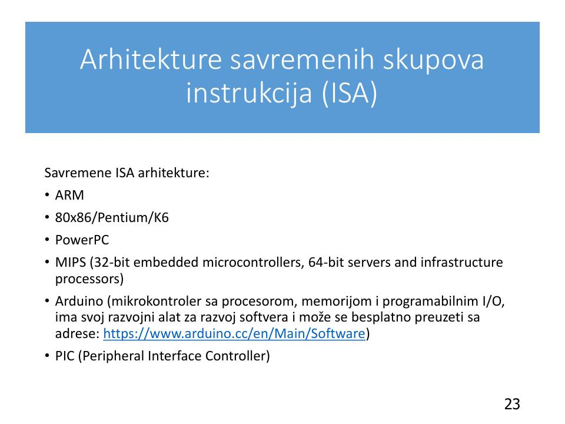
Slajd 23 nabraja savremene ISA: ARM, 80x86/Pentium/K6, PowerPC, MIPS (32-bitni ugrađeni mikrokontroleri, 64-bitni serveri i mrežna infrastruktura), Arduino (ploča sa mikrokontrolerom AVR, memorijom i programabilnim U/I, sa besplatnim razvojnim alatom) i PIC (Peripheral Interface Controller).
CISC i RISC: dužina instrukcije (slajd 24)
Slajd 24 daje polaznu definiciju: CISC (Complex Instruction Set Computer) ima instrukcije promenljive dužine, a RISC (Reduced Instruction Set Computer) instrukcije fiksne dužine. Iako ne postoji strogo pravilo da instrukcijama promenljive dužine odgovara CISC, a fiksne dužine RISC, takva veza je najčešća.
Odakle potiče podela? U 1960-im i 1970-im memorija je bila skupa i spora, a kompajleri slabi. Zato su projektanti pravili procesore sa što moćnijim instrukcijama: jedna instrukcija radi mnogo posla, program je kratak i zauzima malo memorije, a programeru u asembleru je lakše. To su CISC procesori: IBM System/360, VAX, Intel x86. Oko 1980. istraživači sa Berklija (David Patterson) i Stenforda (John Hennessy), isti oni čiji citat o apstrakciji si čitao u Modulu 1, primetili su da kompajleri skoro nikad ne koriste složene instrukcije: oko 80% vremena se izvršava 20% najjednostavnijih instrukcija (load, store, add, branch). Predložili su obrnut pristup: mali skup jednostavnih instrukcija koje se izvršavaju jako brzo, uz pametan kompajler. To je RISC: MIPS, SPARC, ARM, RISC-V.
Mikroprogram ili hardver (slajdovi 25–26)

Slajd 25 pokazuje šta se dešava sa mašinskom instrukcijom u svakoj od njih. RISC (levo): mašinska instrukcija → direktno izvršavanje u hardveru. Jedan korak. CISC (desno): mašinska instrukcija → konverzija u mikrokod (Microcode Conversion) → niz mikroinstrukcija → izvršavanje mikroinstrukcija. CISC instrukciju zapravo izvršava mali „program u programu“ (mikroprogram) zapisan u ROM-u procesora. To je onaj uCode ROM koji si video na Core 2 Duo (slajd 42 iz M3_01), i ona upravljačka memorija iz hijerarhijske dekompozicije u Modulu 1, deo 1.6. Ovo je i „mikroprogramski nivo“ iz sadržaja predmeta.
Upravljačka jedinica, dakle, može da generiše upravljačke signale (naše mikrooperacije sa slajda 13) na dva načina:
- Hardversko (ožičeno) upravljanje: signali se dobijaju direktno iz logičkih kola. Brzo, ali teško za menjanje i projektovanje kad ima mnogo složenih instrukcija. Koristi RISC.
- Mikroprogramsko upravljanje: za svaku mašinsku instrukciju u upravljačkoj memoriji postoji niz mikroinstrukcija koje redom generišu signale. Sporije, ali lako je dodati novu složenu instrukciju: samo se napiše novi mikroprogram. Koristi CISC.

Na slajdu 26 levo (žuto) je ilustracija dužine koda: CISC instrukcije su različite dužine (neke dugačke, neke kratke), a RISC instrukcije su sve iste dužine, ali ih ima više. Desno su parovi osobina (zeleno CISC, crveno RISC), red po red:
| CISC | RISC |
|---|---|
| Naglasak na hardveru | Naglasak na softveru (kompajleru) |
| Složene instrukcije koje traju više ciklusa | Jednostavne instrukcije koje traju 1 ciklus |
| Mnoge instrukcije mogu pristupati memoriji, mnogo načina adresiranja | Samo LOAD/STORE pristupaju memoriji, malo načina adresiranja |
| Slabije protočna obrada | Izrazito protočna obrada (pipelining) |
| Instrukcije interpretira mikroprogram | Instrukcije izvršava direktno hardver |
| Promenljiv format i dužina instrukcija | Fiksan format i dužina instrukcija |
| Malo registara, ponekad specijalne namene | Mnogo registara opšte namene |
| Složenost je u mikroprogramu | Složenost je u kompajleru |
| Kraći program (gust kod), jednostavniji kompajleri | Duži program (više instrukcija), energetski efikasniji |
| Primeri: IBM System/360, x86, IA-32, AMD-64, x86-64 | Primeri: MIPS, ARM, AVR, SPARC, RISC-V |
Jedna CISC instrukcija prema pet RISC instrukcija (slajd 27)
CISC: ADD $4, 14(%eax, %ebx, 8). Ova jedna x86 instrukcija:
- izračuna adresu: 14 + sadržaj registra eax + sadržaj registra ebx × 8,
- pročita broj sa te adrese iz memorije,
- sabere ga sa konstantom 4,
- upiše rezultat nazad na istu adresu u memoriji.
Za to su potrebna dva pristupa memoriji i složeno računanje adrese, pa traje više ciklusa. U jeziku 9 faza: ona prolazi gotovo sve faze, uključujući računanje adrese operanda (3), donošenje operanda (4) i upis rezultata (7).
RISC: ADD R5 R7 znači R5 ← R5 + R7. Samo registri, jedan ciklus. Evo šta bi RISC procesor morao da uradi da bi dobio isti efekat kao gornja CISC instrukcija (uzmimo da je eax u R1, a ebx u R2):
CISC (x86): 1 instrukcija
ADD $4, 14(%eax,%ebx,8)
Dugačka (više bajtova), traje više ciklusa. Unutra je dekoder ipak razbija na 3–4 mikro-operacije.
RISC: 5 instrukcija
SHL R3, R2, 3 R3 = R2 × 8 ADD R3, R3, R1 R3 = R3 + R1 LOAD R4, 14(R3) R4 = M[R3 + 14] ADD R4, R4, #4 R4 = R4 + 4 STORE R4, 14(R3) M[R3 + 14] = R4
Svaka je kratka, iste dužine, i u protočnoj obradi završava se po jedna u ciklusu. Memoriji pristupaju samo LOAD i STORE.
Pomeranje ulevo za 3 bita (SHL) isto je što i množenje sa 2³ = 8; tako procesori brzo množe stepenom dvojke. Oba programa imaju po dva pristupa memoriji; razlika je u tome ko razlaže posao na korake: kod CISC-a mikroprogram u procesoru, kod RISC-a kompajler.
Zašto je RISC lakši za protočnu obradu? Ako su sve instrukcije iste dužine i traju isto, svaka faza pokretne trake (Modul 2) uvek zna gde počinje sledeća instrukcija i koliko traje. Kod CISC-a instrukcija može biti od 1 do 15 bajtova i trajati od 1 do 100 ciklusa, pa se traka stalno „zaglavljuje“.
Veličina programa (slajd 28)
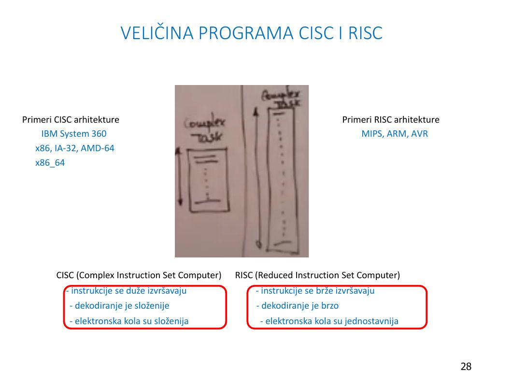
Slajd 28 je rukom nacrtana ilustracija istog „složenog zadatka“ (Complex Task) na dve mašine: levo, kod CISC-a, zadatak zauzima kratak niz dugačkih instrukcija; desno, kod RISC-a, dugačak niz kratkih instrukcija. Ispod su primeri (CISC: IBM System 360, x86, IA-32, AMD-64, x86_64; RISC: MIPS, ARM, AVR) i tri razlike uokvirene crvenom: kod CISC-a instrukcije se duže izvršavaju, dekodiranje je složenije, elektronska kola su složenija; kod RISC-a instrukcije se brže izvršavaju, dekodiranje je brzo, elektronska kola su jednostavnija. Ukupno vreme programa je, setićeš se iz Modula 2, broj instrukcija × CPI × trajanje takta: CISC smanjuje prvi činilac, RISC druga dva.
Jedan procesor ima instrukcije dužine od 1 do 15 bajtova i uCode ROM, a drugi sve instrukcije od 4 bajta i 32 registra opšte namene. Koji je CISC, a koji RISC?
ISA danas: x86, ARM i RISC-V (Modul 2, slajdovi 6–9)
Ovu temu profesor otvara još u Modulu 2, ali tek sada imaš sve pojmove da je razumeš do kraja:
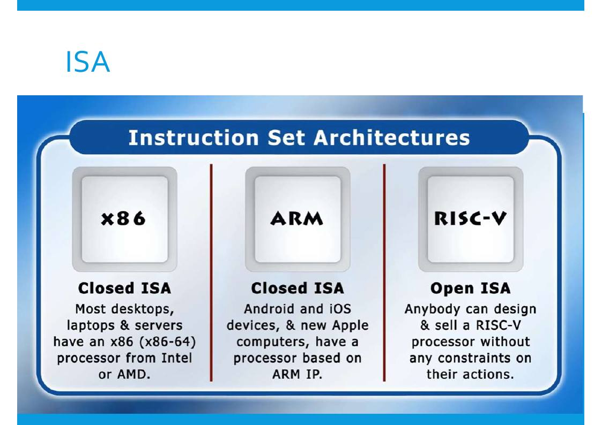
| ISA | Vrsta | Ko pravi | Gde se koristi |
|---|---|---|---|
| x86 (x86-64) | Zatvorena ISA (CISC) | Intel i AMD | Većina desktop i laptop računara i servera |
| ARM | Zatvorena ISA (RISC); firma ARM ne pravi čipove, nego licencira dizajn drugima | Apple, Qualcomm, Samsung, MediaTek… | Android i iOS uređaji, novi Apple računari (M serija) |
| RISC-V | Otvorena i besplatna ISA (RISC) | Bilo ko | Bilo ko može da projektuje i prodaje RISC-V procesor bez dozvole i licence |
RISC-V (slajdovi 7–8): specifična RISC arhitektura. Razvoj je počeo maja 2010. u Parallel Computing Laboratory na Univerzitetu Kalifornija u Berkliju. Jedna od prvih RISC arhitektura nastala je na Berkliju 1980–1984 (Berkeley RISC I), pa je RISC-V 5. generacija Berkeley RISC-a (odatle „V“, rimsko 5). Dizajneri RISC-V jezgara sami odlučuju da li će svoj dizajn (intelektualnu svojinu, IP) objaviti javno, pa nije sav RISC-V hardver otvoren; otvorena je sama ISA. ISA se može slobodno proširivati sopstvenim instrukcijama, što daje veliku fleksibilnost za specijalizovane procesore.
Sve vrste arhitektura u jednoj tabeli (Tabela arhitektura procesora.pdf)
Dodatni PDF iz Modula 3 upoređuje osnovne vrste arhitektura. Neke već znaš (Von Neumann i Harvard iz Modula 1, CISC i RISC iz ovog dela), a neke su nove:
| Arhitektura | Suština | Prednost | Nedostatak | Primena |
|---|---|---|---|---|
| Von Neumann | Jedna memorija i jedna magistrala za program i podatke | Jednostavna i jeftina | Usko grlo magistrale | Opšti računari |
| Harvard | Odvojene memorije i magistrale | Paralelan pristup instrukcijama i podacima | Složenija i skuplja | Mikrokontroleri, DSP, L1 keš |
| RISC | Malo jednostavnih instrukcija fiksne dužine, hardversko upravljanje | Lako za proizvodnju i optimizaciju; energetski efikasan | Više instrukcija za složene zadatke | Telefoni, ugrađeni sistemi, Apple M |
| CISC | Mnogo složenih instrukcija promenljive dužine, mikroprogramsko upravljanje | Gust kod, jednostavniji kompajleri | Složeniji hardver, promenljivo vreme | PC i serveri (Intel, AMD) |
| Superskalarna | Više izvršnih jedinica (ALU, FPU); CPU sam nalazi nezavisne instrukcije i izvršava ih paralelno | Brže bez povećanja takta | Vrlo složeno upravljanje („out-of-order execution“) | Skoro svi moderni procesori |
| VLIW (Very Long Instruction Word) | Kompajler unapred pakuje više operacija u jednu dugačku instrukciju, koje se izvršavaju paralelno (npr. Intel Itanium, EPIC) | Jednostavniji CPU (odgovornost je prebačena na kompajler) | Zavisi od pametnog kompajlera; loše performanse kod loše optimizovanog koda | Specifični serveri, DSP |
| Višejezgarna (CMP) | Više procesorskih jezgara na jednom čipu; fizički paralelizam | Bolje performanse u multitaskingu i višenitnim programima | „Softversko usko grlo“: programi moraju biti pisani paralelno | Od telefona do superračunara |
| GPGPU | Hiljade jednostavnih jezgara za istovremenu obradu velikih skupova podataka (SIMT: NVIDIA CUDA, OpenCL) | Izuzetne performanse za lako deljive zadatke | Neefikasan za sekvencijalne zadatke; specijalizovano programiranje | Veštačka inteligencija, nauka, grafika |
Objašnjenja iz PDF-a, ukratko:
- Von Neumann vs. Harvard: većina modernih procesora koristi modifikovanu Harvard arhitekturu (podela na L1 kešu, Von Neumann u RAM-u).
- RISC vs. CISC: podela je sve manje oštra (µops kod x86, složenije instrukcije kod ARM-a).
- Superskalarna i višejezgarna se koriste zajedno: moderni procesor ima više jezgara, a svako jezgro je superskalarno, baš kao Core 2 Duo.
- Heterogene arhitekture, SoC (System on a Chip): na jednom čipu su CPU jezgra (često big.LITTLE: kombinacija jakih i štedljivih jezgara), GPU, NPU (neuro-procesorska jedinica za AI), DSP, modemi. Cilj je maksimalna efikasnost i performanse po vatu. Primer: Apple M serija, procesori u telefonima. To je „dark silicon“ iz Modula 1 u praksi.
Ceo Modul 3 u jednom pogledu
Evo cele priče Modula 3 kao niza rečenica. Ako svaku umeš da objasniš svojim rečima, Modul 3 znaš:
- Procesor za svaku instrukciju: donosi je, dekodira, donosi podatke, izvršava i upisuje rezultat; za to koristi registre BN (adresa sledeće), RN (trenutna instrukcija), ARM (adresa), PRM (podatak), PSW (zastavice) i AK (M3_01, sl. 3–6).
- Instrukcija = opkod (šta) + adresni delovi (sa čim). Na akumulatorskoj mašini 4 + 4 bita; A = B + C je
LOAD B, ADD C, STORE A, HALT(sl. 7–10). - Po broju adresa instrukcije su tro-, dvo-, jedno- i nulaadresne: manje adresa znači kraće instrukcije, ali više njih (sl. 11).
- Svaka instrukcija se izvodi mikrooperacijama; donošenje je uvek ARM ← BN, PRM ← memorija, RN ← PRM, BN ← BN + 1 (sl. 12–13).
- Model sa 9 faza opisuje svaku instrukciju; faze 3, 4, 6 i 7 su opcione, a faza 8 proverava prekid (sl. 14–16).
- Instrukcije se dele na prenos podataka, aritmetičke, logičke, prenos upravljanja, U/I i konverziju; skokovi jedini menjaju BN drugačije od +1 (sl. 17–40).
- Asembler prevodi simbolički kod u dva prolaza zbog referenci unapred; linker spaja, loader učitava (sl. 43–45).
- Keš je mala brza skrivena memorija između CPU i RAM-a koja radi zbog lokalnosti; kod direktnog mapiranja adresa = tag | indeks | offset (sl. 46–48, M3_02 sl. 14–15).
- Po tome odakle dolaze operandi postoji 5 modela mašina; nove arhitekture su registar–registar (M3_02, sl. 19–22).
- CISC: složene instrukcije promenljive dužine, mikroprogram (x86). RISC: jednostavne instrukcije fiksne dužine, load/store, hardversko upravljanje, protočnost (ARM, RISC-V) (M3_02, sl. 24–28).
Dodatni izvori: How amateurs created the world's most popular processor (ARM, video sa slajda) · Explaining RISC-V (video sa slajda)
Ispitna pitanja iz ove lekcije
Pitanja iz skripte sa ispitnim pitanjima koja se odnose na ovu lekciju. Pokušaj prvo sam da odgovoriš, pa otvori odgovor. Gde je odgovor u skripti bio netačan ili nepotpun, ovde je ispravljen i to je naznačeno.
Navesti bar 5 primera ISA arhitekture računara.
Navesti klasifikaciju modela mašina prema kriterijumu gde su smešteni operandi kao ulazi u ALU.
Računar ima PUSH–POP (stek) arhitekturu sa instrukcijama PUSH, POP i ADD. Napisati asemblerski kod za C = A + B.
PUSH A ; na stek: A PUSH B ; na stek: A, B ADD ; skida B i A, stavlja A+B POP C ; skida A+B i upisuje u CPrihvatljivo je i PUSH B, PUSH A (sabiranje je komutativno).
Koje su prednosti „load/store“ arhitekture? Da li ona ima veći ili manji CPI od memory–memory arhitekture?
Šta se dešava na žicama: procesor razgovara sa memorijom i uređajima
U Modulu 1 smo rekli da procesor „donese instrukciju iz memorije“, a u Modulu 3 smo to razložili na korake unutar procesora. Ali šta se tačno dešava između procesora i memorije? Memorija je poseban čip, desetinama centimetara daleko, sporija od procesora i ne zna ništa o tome šta procesor radi. Njih dvoje moraju da se dogovore preko magistrale: ko šta šalje, kojim redom i kako jedno zna da je drugo završilo. Modul 4 je priča o tom dogovoru, a zatim o tome kako instrukcija kaže gde je podatak i kako taj podatak izgleda u bajtovima.
Kroz ceo modul pratimo jedan isti primer, nastavak proseka ocena iz Modula 1. U memoriji, počev od adrese 2000, stoji niz od četiri ocene: 8, 9, 7, 10. Program ih sabira u petlji, a srce petlje je jedna instrukcija Intel procesora:
ADD AL, [SI+2000] ; AL ← AL + ocena sa adrese 2000 + SI
U ovom delu gledamo šta se dešava na magistrali dok procesor donosi tu instrukciju i njen operand, šta ako baš tada pritisneš taster, i kako su ocene uopšte stigle sa diska u memoriju. U delu 2 objašnjavamo zašto je operand zapisan baš kao [SI+2000] (načini adresiranja), a u delu 3 kako sve to izgleda na pravom Intel procesoru i kako su brojevi i slova zapisani u bajtovima.
Procesor kao mašina stanja (slajdovi 2–3)
Naslov predavanja je „CPU kao state mašina“. Mašina stanja (state machine) je uređaj koji je u svakom trenutku u tačno jednom stanju i na svaki otkucaj takta prelazi u sledeće stanje, zavisno od toga gde je bio i koje signale vidi. U svakom stanju radi jedan mali, tačno određen posao: „stavi adresu na magistralu“, „pošalji signal čitanja“, „upiši ono što je stiglo u registar“. Kad ovako gledamo procesor, nema više magije: donošenje instrukcije je samo niz stanja kroz koja procesor prolazi takt po takt.
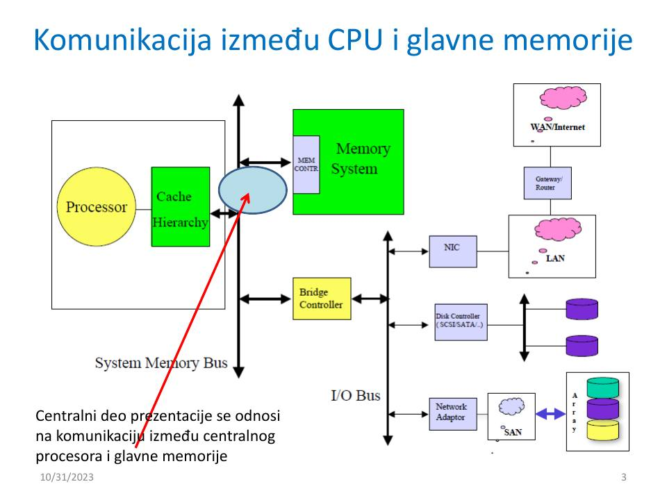
Slajd 3 je isti crtež računarskog sistema koji smo videli na početku Modula 2 (procesor sa kešom, memorija, most, U/I magistrala, mreža i diskovi), ali je sada plavom elipsom i crvenom strelicom istaknut samo jedan spoj: procesor ↔ glavna memorija na sistemskoj magistrali. Tekst kaže da je to centralni deo ovog predavanja. Sve ostalo (diskovi, mreža) dolazi na red na kraju ovog dela, kad budemo pričali o U/I.
Četiri koraka jednog čitanja (slajd 4)
Procesor treba da donese našu instrukciju ADD AL, [SI+2000]. Recimo da je ona u memoriji na adresi 0120. Slajd 4 pokazuje kako izgleda svako čitanje iz memorije, bilo da se čita instrukcija ili podatak:

Levo je CPU sa četiri dela: ADDR. REG. (adresni registar, to je MAR), CONTROL (upravljačka jedinica), I. REG. (registar instrukcija) i D. REG. (registar podataka). Desno je MEM: DECODE (dekoder adrese, od broja adrese bira jednu ćeliju), polje ćelija u kome je istaknuta ćelija DATA, i CONT. ROL (kontroler memorije). Gore je zajednička magistrala BUS. Crne linije nose adresu, crvene upravljačke signale (RD, READY), a plave podatke. Brojevi u krugovima su redosled:
- ① CPU iz ADDR. REG. stavlja adresu 0120 na magistralu (ADDR). Memorija je prima i njen DECODE počinje da traži tu ćeliju.
- ② Upravljačka jedinica šalje signal RD (read, čitaj) kontroleru memorije.
- ③ Kad je memorija spremna, kontroler šalje signal READY (spremno) nazad procesoru. Do tada procesor čeka, jer ne može da natera memoriju da radi brže.
- ④ Memorija stavlja sadržaj ćelije (DATA) na magistralu podataka.
- ⑤ CPU uzima ono što je na magistrali i upisuje u I. REG. (ako je to instrukcija, kao sada) ili u D. REG. (ako je podatak).
Najvažnija reč na slici je READY. Procesor i memorija nemaju istu brzinu, pa memorija mora nekako da javi „gotovo je“. Bez tog signala procesor bi uzeo ono što je na magistrali pre nego što je memorija stigla da tamo stavi pravu vrednost.
Pogledaj ove korake u pokretu. Uključi „sporu memoriju“ da vidiš šta se dešava kad READY kasni:
Zašto procesor ne može jednostavno da sačeka unapred dogovoren broj taktova, nego mu treba signal READY?
ASM dijagram: čitanje nacrtano po taktovima (slajdovi 5–6)
ASM znači Algorithmic State Machine, algoritamska mašina stanja. To je dijagram toka posebno za uređaje koji rade u taktovima, i ima samo tri elementa:
- Pravougaonik je stanje: šta se radi u jednom taktu. Pored njega je oznaka takta (t1, t2…).
- Romb je odluka: proverava se neki signal (ovde READY) i prema njegovoj vrednosti (1 ili 0) bira se sledeće stanje.
- Strelice su prelazi između stanja.
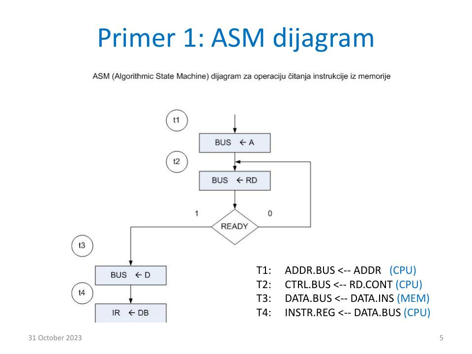

Na slajdu 5 su četiri stanja, a desno dole je ista stvar zapisana tekstom, sa oznakom ko radi:
| Takt | U pravougaoniku | Tekstom sa slajda | Ko radi i šta |
|---|---|---|---|
| t1 | BUS ← A | ADDR.BUS ← ADDR | CPU stavlja adresu (0120) na adresnu magistralu. Korak ① sa slajda 4. |
| t2 | BUS ← RD | CTRL.BUS ← RD.CONT | CPU stavlja signal čitanja na upravljačku magistralu. Korak ②. |
| romb | READY? | CPU proverava da li je memorija spremna. Korak ③. | |
| t3 | BUS ← D | DATA.BUS ← DATA.INS | Memorija stavlja instrukciju na magistralu podataka. Korak ④. |
| t4 | IR ← DB | INSTR.REG ← DATA.BUS | CPU upisuje instrukciju sa magistrale podataka (DB) u registar instrukcija. Korak ⑤. |
Razlika između dva slajda je samo u tome šta se dešava kad je READY = 0. Na slajdu 5 strelica „0“ iz romba vodi nazad iznad t2: procesor ponovo šalje RD i ponovo proverava, sve dok ne dobije 1. Na slajdu 6 postoji posebno stanje tw (WAIT): procesor ulazi u stanje čekanja i u njemu u svakom taktu proverava READY; tek kad postane 1, prelazi na t3. Takvi ubačeni taktovi zovu se wait states (stanja čekanja). U njima procesor ne radi ništa korisno, i svaki je izgubljen takt. Upravo zato postoji keš iz Modula 3: ako je instrukcija u kešu, READY stiže odmah i stanja čekanja nema.
Memorija je spora, pa procesor po slajdu 6 provede 2 takta u stanju tw. Koliko taktova ukupno traje čitanje instrukcije?
Pravo čitanje instrukcije: MMU i rezervacija magistrale (slajd 7)
ASM dijagram je pojednostavljen. Slajd 7 pokazuje kako izgleda čitanje instrukcije u pravom procesoru, sa još dva detalja koja ASM nije imao:
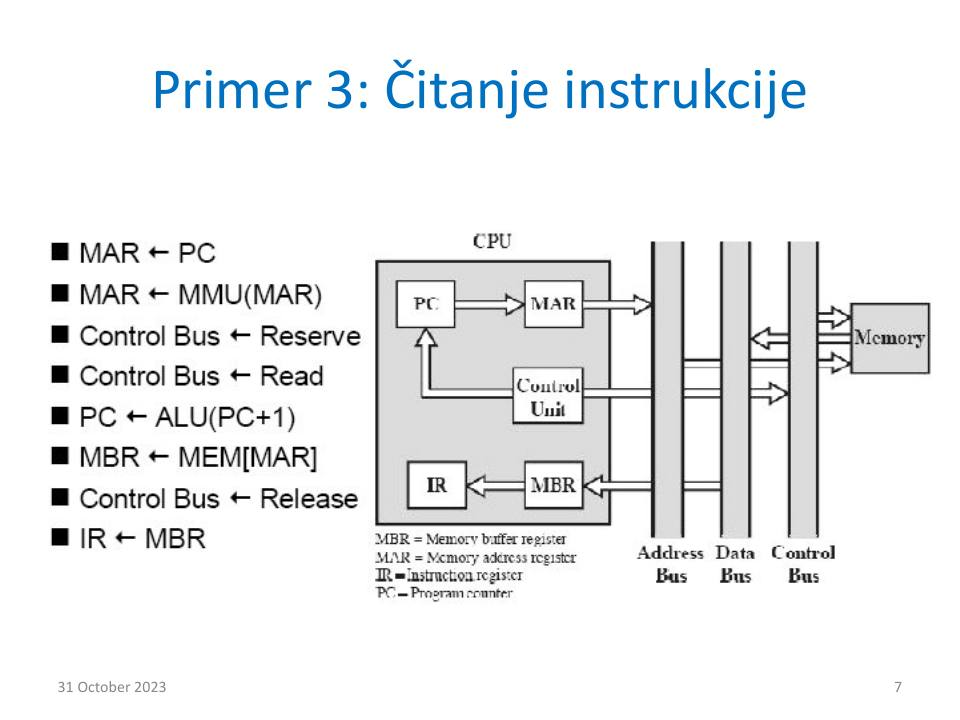
Desno je CPU sa registrima PC, MAR, IR, MBR i upravljačkom jedinicom (Control Unit), a pored su tri magistrale: adresna (Address Bus), podataka (Data Bus) i upravljačka (Control Bus), koje vode do memorije. Prati strelice: PC → MAR → adresna magistrala → memorija; memorija → magistrala podataka → MBR → IR. Upravljačka jedinica šalje signale na upravljačku magistralu i (strelica nagore) menja PC. Levo su koraci:
| # | Korak | Šta se dešava sa našom instrukcijom |
|---|---|---|
| 1 | MAR ← PC | Adresa instrukcije (0120) iz PC ide u MAR. |
| 2 | MAR ← MMU(MAR) | MMU prevodi virtuelnu adresu (onu koju vidi program) u fizičku (stvarno mesto u RAM-u). Program misli da je na adresi 0120, a stvarno je možda na 7F0120. Ovo je veza sa delom predmeta o operativnim sistemima (virtuelna memorija). |
| 3 | Control Bus ← Reserve | Procesor rezerviše magistralu, da je u međuvremenu ne bi koristio neko drugi (DMA kontroler, drugo jezgro). |
| 4 | Control Bus ← Read | Zahtev za čitanje (to je RD sa slajda 4). |
| 5 | PC ← ALU(PC+1) | Dok memorija radi, ALU poveća PC, da pokazuje na sledeću instrukciju. Vreme čekanja se korisno iskoristi. |
| 6 | MBR ← MEM[MAR] | Memorija vrati instrukciju u MBR. |
| 7 | Control Bus ← Release | Magistrala se oslobađa. |
| 8 | IR ← MBR | Instrukcija ADD AL, [SI+2000] je u registru instrukcija i može da se dekodira. |
Ako uporediš sa Modulom 3, ovo su isti mikrokoraci donošenja instrukcije (ARM ← BN, PRM ← memorija, RN ← PRM, BN ← BN + 1), samo sa engleskim imenima i sa dva nova koraka: prevođenje adrese (MMU) i rezervisanje magistrale.
Donošenje operanda, i zašto nekad treba dva čitanja (slajd 8)
Instrukcija je u IR, procesor je dekodirao da treba da sabere AL sa ocenom iz memorije. Sada mora da donese i operand, tu ocenu. Za našu instrukciju procesor izračuna adresu (2000 + SI) i uradi jedno čitanje, potpuno isto kao gore. Slajd 8 pokazuje teži slučaj, indirektno adresiranje, gde u instrukciji ne piše adresa operanda, nego adresa na kojoj piše adresa operanda (detaljno u delu 2). Tada su potrebna dva čitanja memorije:

MAR ← Address adresa iz instrukcije MAR ← MMU(MAR) prevedi u fizičku Control Bus ← Reserve Control Bus ← Read MBR ← MEM[MAR] ← 1. čitanje: dobili smo ADRESU operanda MAR ← MBR ta adresa ide nazad u MAR MAR ← MMU(MAR) i ona se prevodi Control Bus ← Read MBR ← MEM[MAR] ← 2. čitanje: dobili smo sam OPERAND Control Bus ← Release ALU? Regs? ← MBR operand ide u ALU ili u registar
Na šemi desno obrati pažnju na strelicu koja ide iz MBR nazad u MAR: to je baš korak MAR ← MBR, kad ono što je pročitano postaje nova adresa. Upitnici u poslednjem redu („ALU? Regs?“) znače da operand ide tamo gde ga instrukcija traži: u ALU ako se sabira, u registar ako se samo učitava. I primeti da se magistrala rezerviše jednom i oslobađa tek posle oba čitanja.
Koliko puta procesor ukupno ide u memoriju da izvrši instrukciju koja sabira registar sa operandom adresiranim indirektno memorijski?
Prekid: kako procesor ostavi posao i vrati se (slajd 9)
Prekid (interrupt) je signal kojim neki događaj traži da procesor prekine ono što radi i odmah ga obradi. Izvori prekida su: tastatura (pritisnut taster), disk (prenos završen), tajmer (isteklo vreme; to je osnova kojom operativni sistem deli procesor između više programa), mrežna kartica (stigao paket), ali i greška u samom programu (deljenje nulom).
Procesor ne prekida instrukciju na pola. Prekide proverava u poslednjoj fazi ciklusa instrukcije (faza 8 iz Modula 3), dakle tek kad završi tekuću instrukciju. Naš ADD se, dakle, završi do kraja. Onda procesor mora da sačuva stanje: gde je stao (PC) i kakve su bile zastavice (PSW), da bi posle obrade prekida mogao da nastavi kao da se ništa nije desilo. Stanje čuva na steku, delu memorije na čiji vrh pokazuje registar SP.
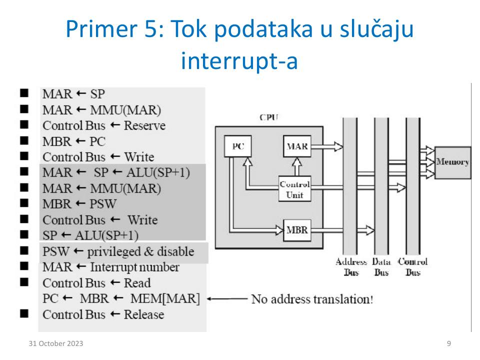
Slajd 9 ima istu šemu kao slajd 7, samo su koraci levo grupisani sivim pozadinama. Pročitaj ih kao pet grupa:
| Grupa | Koraci | Objašnjenje |
|---|---|---|
| 1. Sačuvaj PC na stek | MAR ← SPMAR ← MMU(MAR)Control Bus ← ReserveMBR ← PCControl Bus ← Write | Adresa vrha steka iz SP ide u MAR. U MBR se stavi PC (adresa instrukcije od koje treba nastaviti) i upiše u memoriju signalom Write. Ovo je čitanje sa slajda 7 „u obrnutom smeru“: podatak ide iz procesora u memoriju. |
| 2. Sačuvaj PSW na stek | MAR ← SP ← ALU(SP+1)MAR ← MMU(MAR)MBR ← PSWControl Bus ← WriteSP ← ALU(SP+1) | SP se pomeri na sledeće mesto i tamo se upiše PSW (zastavice i stanje procesora). Na kraju SP pokazuje na novi vrh steka. |
| 3. Promeni režim | PSW ← privileged & disable | Procesor prelazi u privilegovani režim (režim jezgra operativnog sistema, u kome sme sve) i zabranjuje nove prekide, da ga drugi prekid ne bi prekinuo usred čuvanja stanja. |
| 4. Pročitaj vektor prekida | MAR ← Interrupt numberControl Bus ← ReadPC ← MBR ← MEM[MAR] | Broj prekida služi kao adresa u tabeli vektora prekida. Na toj adresi piše adresa rutine koja obrađuje taj prekid, i ona ide u PC. Strelica sa natpisom „No address translation!“ kaže da se ovde ne koristi MMU: tabela je na fiksnoj fizičkoj adresi, jer procesor mora da je nađe bez obzira koji program je radio. |
| 5. Oslobodi | Control Bus ← Release | Magistrala se oslobađa. Sledeći ciklus instrukcije donosi prvu instrukciju rutine za obradu prekida, jer je PC sada pokazuje. |
Kad rutina završi (pročita taster iz tastature i sačuva ga), posebna instrukcija povratka iz prekida (kod x86 IRET) skida PSW i PC sa steka, i naša petlja nastavlja sledeću ocenu tačno odakle je stala. Program za prosek ne zna da je bio prekinut.
Isprobaj ceo postupak korak po korak. Laboratorija koristi pojednostavljenu memoriju: na adresi 0120 je jedna obična instrukcija sabiranja (zamisli da je to naš ADD), a rutina za tastaturu počinje na adresi 3000, odmah iza našeg niza ocena.
Program izvršava instrukciju na adresi 0120 kad tastatura pošalje prekid broj 9. Prati PC, PSW, SP i stek u memoriji. Stek ovde raste naviše (SP + 1), kao na slajdu 9. Kod Intel x86 stek raste naniže (SP − 2 ili − 4 pri svakom PUSH), ali je princip isti.
Memorija
Zašto procesor čuva i PSW, a ne samo PC? Šta bi se desilo da ga ne sačuva?
ADD.Zašto se u koraku 3 zabranjuju novi prekidi?
Tri načina razmene podataka sa uređajima (slajd 10)
Uređaji (tastatura, disk, mrežna kartica) su mnogo sporiji od procesora i rade kad su oni spremni, ne kad procesor hoće. Procesor zato ima tri načina da sa njima razmenjuje podatke, i to su tri metode sa slajda 10:
| Metoda | Kako radi | Prednost | Mana |
|---|---|---|---|
| Polling (busy-waiting, „prozivanje“) | CPU u petlji stalno čita statusni registar uređaja: „jesi li spreman?“ Kad jeste, sam prenese podatak. | Najjednostavnije, ne treba poseban hardver. | CPU troši sve vreme na čekanje i ne radi ništa drugo. |
| Interrupt driven I/O (U/I vođen prekidima) | CPU zada posao uređaju i radi nešto drugo. Kad je uređaj spreman, pošalje prekid, i CPU tada prenese podatak. | CPU ne čeka. | Svaki bajt (ili reč) i dalje prolazi kroz CPU; za veliki prenos ima mnogo prekida. |
| DMA (Direct Memory Access, direktan pristup memoriji) | CPU kaže DMA kontroleru: „prenesi 4096 bajtova sa diska na adresu 2000 u memoriji“. DMA kontroler sam preuzme magistralu i prenese ceo blok. CPU dobije jedan prekid na kraju. | CPU skoro uopšte ne učestvuje; najbolje za velike blokove. | Treba poseban hardver; DMA i CPU se otimaju za magistralu. |
Za naš primer: kad Excel otvara fajl sa ocenama, operativni sistem kaže disku „pročitaj ovaj blok“ i DMA kontroler sam prebaci ceo blok u memoriju, od adrese 2000. Procesor za to vreme radi nešto drugo i dobije jedan prekid kad su ocene stigle. Za tastaturu, gde stiže jedan po jedan znak i to retko, prekidi su idealni. Polling se danas koristi samo u najjednostavnijim uređajima (mikrokontroleri) ili za vrlo kratka čekanja.
DMA može da radi u dva režima: burst (preuzme magistralu i prenese ceo blok odjednom; procesor za to vreme ne može u memoriju) ili cycle stealing („krađa ciklusa“: uzima magistralu po jedan ciklus između procesorovih pristupa, pa procesor samo malo uspori). Sad je jasno i zašto procesor na slajdu 7 rezerviše magistralu: da mu je DMA ne bi uzeo usred čitanja.
Treba preneti film od 2 GB sa diska u memoriju. Koju metodu bi izabrao i zašto?
Kako procesor zna koju rutinu da pozove (slajdovi 11–12)
U grupi 4 sa slajda 9 procesor je pročitao „vektor prekida“. Slajd 11 pokazuje kako ta tabela izgleda kod Intel Pentium procesora:
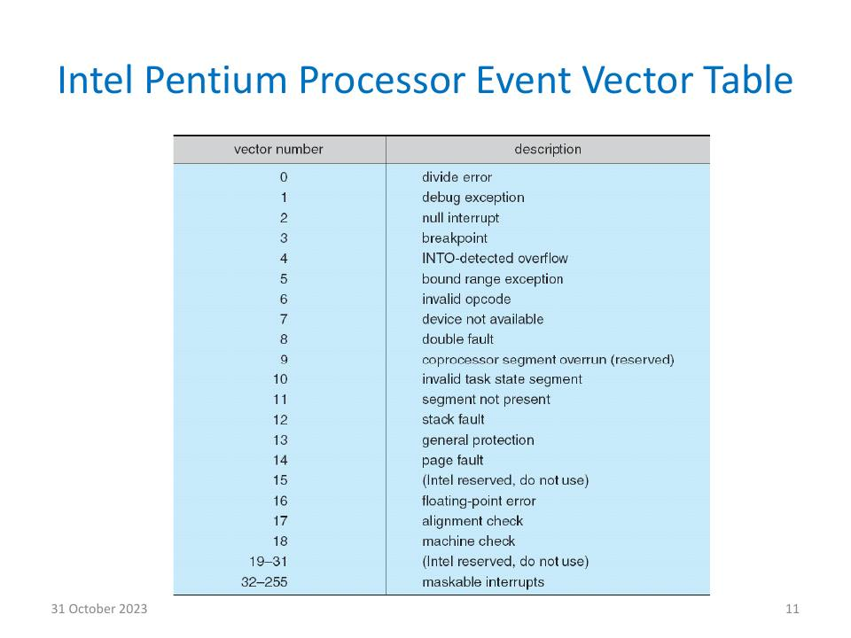

Svaki prekid ima broj (vector number) od 0 do 255, i za svaki broj u tabeli piše adresa rutine. Brojevi 0–31 su rezervisani za izuzetke, greške koje nastaju u samom procesoru dok izvršava program: 0 deljenje nulom (divide error), 1 debug, 2 NMI (nemaskirajući prekid, za ozbiljne hardverske greške), 3 breakpoint (tačka prekida za debugger), 4 prekoračenje, 6 nepostojeći opkod, 8 dvostruka greška, 12 greška steka, 13 opšta zaštita (program pristupa memoriji koja nije njegova), 14 page fault (tražena stranica nije u RAM-u; veza sa virtuelnom memorijom u delu o OS), 16 greška u pokretnom zarezu. Brojevi 32–255 su maskirajući prekidi od spoljnih uređaja, koji se mogu privremeno zabraniti (to je „disable“ iz grupe 3).
Ostaje pitanje: uređaja ima mnogo, a procesor ima jednu liniju za prekid. Slajd 12 prikazuje čip koji to rešava, Intel 8259A, programabilni kontroler prekida. On skuplja zahteve od do 8 uređaja (ulazi IR0–IR7) i prosleđuje ih procesoru jednom linijom INT. Unutra ima:
- IRR (Interrupt Request Register): pamti koji uređaji trenutno traže prekid,
- Priority Resolver: ako ih traži više odjednom, bira onaj najvišeg prioriteta,
- ISR (In-Service Register): pamti koji prekid se upravo obrađuje,
- IMR (Interrupt Mask Register): koje prekide trenutno treba ignorisati (maskirati),
- Data Bus Buffer i Read/Write logiku prema procesoru, i Cascade buffer preko koga se više 8259A čipova povezuje (do 64 prekida).
Kad procesor prihvati prekid, odgovori signalom INTA (interrupt acknowledge), a 8259A mu preko magistrale podataka pošalje broj vektora, npr. 9 za tastaturu. To je onaj „Interrupt number“ koji u grupi 4 ide u MAR. Tako se krug zatvara: taster → 8259A → INT → procesor završi ADD → čuva PC i PSW → INTA → broj 9 → tabela → rutina za tastaturu.
Program podeli broj nulom. Da li za to treba 8259A?
[SI+2000]? Kako instrukcija uopšte kaže procesoru gde je podatak? To je tema drugog predavanja Modula 4, načini adresiranja.Dodatni izvori: Intel 8259A datasheet (Harvard) · I/O Systems: DMA, Interrupts & Buses
Ispitna pitanja iz ove lekcije
Pitanja iz skripte sa ispitnim pitanjima koja se odnose na ovu lekciju. Pokušaj prvo sam da odgovoriš, pa otvori odgovor. Gde je odgovor u skripti bio netačan ili nepotpun, ovde je ispravljen i to je naznačeno.
Prikazati ASM dijagram za operaciju čitanja operanda iz glavne memorije u akumulator (oznake A, D, BUS, RD, DB, AK). Šta se menja ako se upisuje u indeksni registar?
Gde je podatak: načini adresiranja
Drugo predavanje Modula 4 počinje sadržajem (slajd 2) i sa dve „velike ideje“ (slajdovi 3–5): univerzalni računarski uređaj i rešavanje problema transformacijama kroz slojeve. Njih smo već obradili na kraju dela 5 Modula 1, pa ovde idemo pravo na glavnu temu.
Instrukcija ADD AL, ??? treba da sabere AL sa nečim. Gde je to „nešto“? Može biti broj zapisan u samoj instrukciji, može biti u registru, u memoriji na nekoj adresi, na adresi koja piše u registru, u nizu… Način adresiranja određuje kako procesor iz adresnog dela instrukcije dolazi do operanda. Efektivna adresa (EA) je konačna, stvarna adresa operanda u memoriji, ona koju procesor na kraju stavlja u MAR.
Zašto ne postoji samo jedan način? Zato što programi rade sa različitim vrstama podataka, i svaki način odgovara jednoj konstrukciji iz programskih jezika: konstanti (x = 5), promenljivoj (x), pokazivaču (*p), nizu (a[i]), polju strukture (s.polje). Naš primer, sabiranje niza ocena, je baš priča o tome kako se dolazi od najjednostavnijeg načina do onog koji nam treba.
Mapa načina adresiranja (slajdovi 6–9)
Slajd 6 nabraja sedam načina: trenutno, direktno memorijsko, direktno registarsko, indirektno memorijsko, indirektno registarsko, bazno registarsko i indeksno. Slajdovi 7 i 8 ih dele u dve grupe, prema tome kako procesor dolazi do adrese:
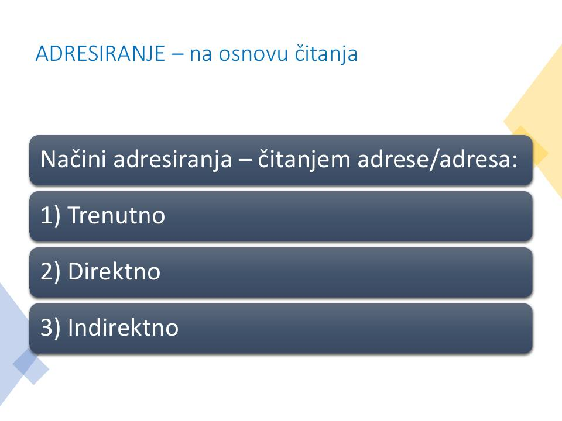

- Na osnovu čitanja adrese: 1) trenutno, 2) direktno, 3) indirektno. Procesor adresu (ili sam operand) samo pročita, iz instrukcije, registra ili memorije.
- Na osnovu izračunavanja efektivne adrese: 1) pomoću indeks registra, 2) pomoću baznog registra, 3) pomoću baznog i indeks registra. Procesor adresu izračuna sabiranjem.
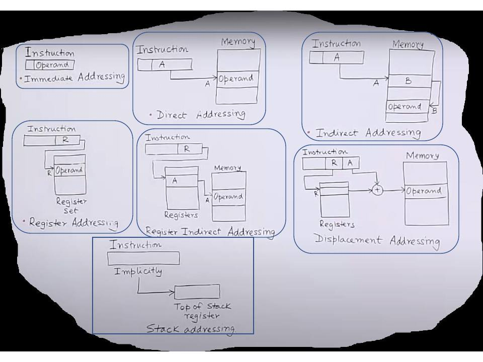
Slajd 9 je ručno nacrtan pregled, i vredi ga dobro razumeti jer ga je lako zapamtiti kao sliku. Svaki od sedam crteža ima Instruction (instrukciju sa poljima) i, gde treba, Memory ili Registers. Broj strelica pokazuje koliko „skokova“ treba do operanda:
- Immediate (gore levo): u instrukciji je sam Operand. Nema strelica.
- Direct: u instrukciji je adresa A, jedna strelica vodi u memoriju na A, tamo je operand.
- Indirect (gore desno): u instrukciji je A, na adresi A piše B, a na B je operand. Dve strelice.
- Register: u instrukciji je broj registra R, operand je u tom registru.
- Register Indirect: R pokazuje na registar u kome je adresa A, a na A u memoriji je operand.
- Displacement (desno): u instrukciji su R i A; sadržaj registra R se sabere (krug sa +) sa A i to je adresa operanda. Ovo je zajednički crtež za indeksno i bazno adresiranje.
- Stack (dole): instrukcija ne navodi ništa, operand je implicitno (Implicitly) na vrhu steka.
1. Trenutno: vrednost je u instrukciji (slajd 10)
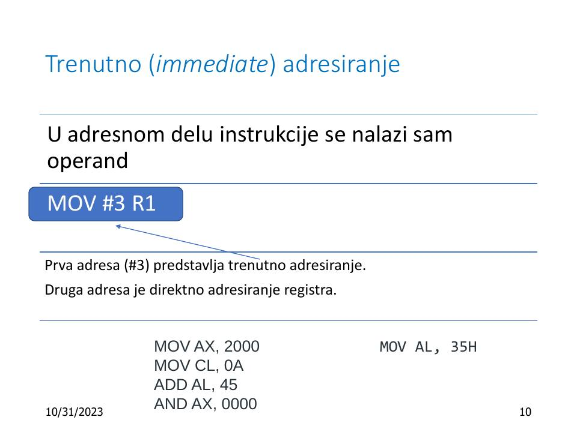
U adresnom delu instrukcije se nalazi sam operand, vrednost, a ne adresa. Znak # označava trenutnu vrednost. U MOV #3 R1 prva adresa (#3) je trenutno adresiranje, a druga (R1) je direktno adresiranje registra: R1 ← 3. Kod Intela se # ne piše; broj bez zagrada je trenutna vrednost:
MOV AX, 2000 AX ← 2000 (broj 2000, ne adresa!) MOV AL, 35H AL ← 35h (H = heksadecimalno) MOV CL, 0A CL ← 0Ah = 10 ADD AL, 45 AL ← AL + 45 AND AX, 0000 AX ← AX I 0 (brisanje registra)
Pristupa memoriji za operand: 0, jer je operand stigao zajedno sa instrukcijom. Zato je ovo najbrži način. Mana: vrednost je fiksna (konstanta) i ograničena brojem bita adresnog polja. U našem primeru, trenutno adresiranje treba na početku: MOV AL, 0 (zbir kreće od nule) i MOV SI, 0 (počinjemo od prve ocene).
2. Direktno: adresa je u instrukciji (slajdovi 11–13)


Direktno memorijsko (slajd 11): adresno polje instrukcije sadrži efektivnu adresu operanda. Instrukcija ima dva polja, opkod i adresa, a strelica iz adrese vodi pravo u memoriju do operanda. ADD R1, 1001: 1001 je memorijska adresa na kojoj je operand, pa R1 ← R1 + S(1001). Pristupa memoriji: 1. U programu to odgovara globalnoj promenljivoj, čija je adresa poznata unapred. Za naš niz: ADD AL, [2000] bi sabrao samo prvu ocenu.
Direktno registarsko (slajd 12): adresno polje sadrži broj registra u kome je operand. ADD R1, R2: R1 ← R1 + R2. Pristupa memoriji: 0.

Slajd 13 ih stavlja jedno pored drugog, sa brojevima. Levo (registarsko): instrukcija OPKOD 0011; 0011 je 3, pa je operand u registru R3. Desno (memorijsko): instrukcija OPKOD 1000; 1000 je adresa, a na adresi 1000 u memoriji je operand 20. Zapamti ovu sliku, jer će slajd 17 imati iste brojeve za indirektno adresiranje. Uoči i to da je adresa registra samo 4 bita, a memorijska adresa mora biti mnogo duža.
Odatle i slajd 18, prednosti i nedostaci korišćenja registara:
- adresni deo za adresiranje registra je kraći (za 16 registara treba 4 bita, a za 4 GB memorije 32 bita), pa je i cela instrukcija kraća,
- pristup registrima je za red veličine brži od pristupa memoriji (setimo se hijerarhije memorije iz Modula 1),
- nedostatak: broj registara je mali, pa ne mogu svi podaci da budu u registrima.
Zato naš program drži zbir u registru AL (koristi se u svakom krugu petlje), a ocene u memoriji (ima ih mnogo).
3. Indirektno: adresa adrese (slajdovi 14–19)
Slajd 14 to kaže jednom rečenicom: adresni deo instrukcije sadrži adresu adrese operanda. Adresa operanda može biti u memorijskoj lokaciji ili u registru, pa postoje dve vrste. Zagrade ( ) u zapisu znače „idi na adresu koja piše ovde“.
Indirektno memorijsko (slajd 15): LOAD R1, (1005). Na adresi 1005 je zapisana adresa operanda, pa je EA = S(1005). Pristupa memoriji za operand: 2, prvo da se pročita 1005 i dobije adresa, pa da se pročita sam operand. To su baš dva čitanja sa slajda 8 iz prvog dela.
Indirektno registarsko (slajd 16): LOAD X3, (X2) ili LOAD R1, (R2). U registru X2 je adresa operanda, pa je EA = S(X2). Na slajdu na adresiranoj lokaciji piše 200, pa X3 ← 200. Pristupa memoriji: 1, jer je adresa već u registru. Engleska napomena na slajdu kaže samo da se indirektni način označava stavljanjem registra u zagrade.

Slajd 17 je „blizanac“ slajda 13. Levo (memorijsko): instrukcija OPKOD 1000. Na adresi 1000 u memoriji piše 1024 (to je adresa), a na adresi 1024 piše 20 (to je operand). Desno (registarsko): instrukcija OPKOD 0011 bira registar R3; u R3 piše 1000 (adresa), a na adresi 1000 u memoriji je operand 20. Uporedi: ista instrukcija OPKOD 1000 kod direktnog daje 20 (sadržaj adrese 1000), a kod indirektnog daje ono što je na adresi 1024.
p je adresa, a *p je vrednost na toj adresi. Kad funkciji pošalješ niz ocena kao parametar, šalješ samo adresu niza (2000), a funkcija mu pristupa indirektno.
Slajd 19 je tabela poređenja na engleskom. Prevedena:
| Parametar | Direktno | Indirektno |
|---|---|---|
| Adresno polje | Sadrži efektivnu adresu operanda | Sadrži referencu na efektivnu adresu |
| Pristupi memoriji | Jedan | Dva (kod memorijskog) |
| Brzina | Brže | Sporije |
| Podela | Nema dalje podele | Memorijsko i registarsko indirektno |
| Računanje | Nije potrebno | Potrebno je dodatno da se nađe EA |
| Adresni prostor | Ograničen (koliko bita ima polje) | Velik (u memoriji može da stoji puna adresa) |
| Primena | Statički podaci, promenljive | Pokazivači, prenos nizova kao parametara |
Instrukcija je LOAD R1, (1000), memorija je ista kao na slajdu 17. Šta će biti u R1? A za LOAD R1, 1000?
(1000) (indirektno): na 1000 piše 1024, na 1024 piše 20, pa je R1 = 20, uz dva čitanja. Za 1000 (direktno): R1 dobija sadržaj adrese 1000, dakle R1 = 1024, uz jedno čitanje. Ista brojka, a potpuno drugačiji rezultat.4. Indeksno: kako se prolazi kroz niz (slajdovi 20–22)
Slajd 20 kaže da se ovaj način koristi za nizove: jednodimenzionalni niz a[1], a[2], …, a[n] stoji u memoriji na uzastopnim lokacijama. Početna adresa niza (k) je zapisana u instrukciji, a redni broj elementa (i) je u indeks registru (IR; kod Intela to su SI i DI). Procesor ih sabere:
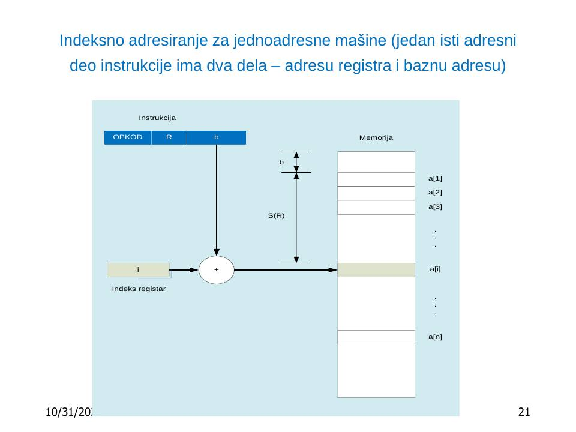

Na slajdu 21 instrukcija ima polja OPKOD | R | b: R kaže koji registar je indeksni, a b je početna adresa niza. Indeks registar sadrži i. Sabirač (krug sa +) sabere b i S(R) i dobije adresu elementa a[i]. Naslov kaže „za jednoadresne mašine“: isti adresni deo instrukcije ima dva dela, adresu registra i baznu adresu niza. Slajd 22 je isti crtež sa oznakom k (pomeraj od početka memorije do početka niza) i dva Intel primera: MOV AX, [SI+2000] i MOV AL, [DI+3000].
Ovo je odgovor na pitanje iz uvoda: naš ADD AL, [SI+2000] je indeksno adresiranje. Ocene su na 2000, 2001, 2002, 2003. Petlja koristi jednu te istu instrukciju, a samo se SI povećava za 1 u svakom krugu:
| Krug | SI | EA = 2000 + SI | Ocena | AL posle ADD |
|---|---|---|---|---|
| 1. | 0 | 2000 | 8 | 8 |
| 2. | 1 | 2001 | 9 | 17 |
| 3. | 2 | 2002 | 7 | 24 |
| 4. | 3 | 2003 | 10 | 34 |
Instrukcija se ne menja, a svaki put čita drugu ocenu. Bez indeksnog adresiranja, program bi morao da ima posebnu instrukciju za svaki element niza, ili da menja sopstveni kod. Prosek je onda 34 / 4 = 8,5.
5. Bazno: program koji radi bilo gde u memoriji (slajdovi 23–25)
Postoji i drugi problem. Naš program je pisan kao da je niz na adresi 2000. Šta ako operativni sistem učita program negde drugde, jer je na 2000 već neki drugi program? Rešenje sa slajda 23: sve adrese podataka i instrukcija programa pišu se relativno u odnosu na početak programa (baznu adresu), a u bazni registar se pri učitavanju upiše stvarna početna adresa programa:
Slajd 24 je crtež „Displacement“ sa slajda 9: instrukcija ima polja opkod | reg. | pomeraj, sadržaj izabranog registra se sabere sa pomerajem i dobije se adresa operanda. Slajd 25 pokazuje smisao: bazni registar BR sadrži b, adresu na kojoj počinje Program u memoriji, a pomeraj P iz instrukcije kaže koliko je operand daleko od početka programa.
Najvažnija prednost: program može da se izvršava u bilo kom delu memorije (premestivost, relocation). Kad OS učita program na adresu 50000 umesto 10000, ne mora da menja nijednu instrukciju; samo upiše 50000 u bazni registar. Ovo je osnova za to da više programa istovremeno bude u memoriji, o čemu govori deo predmeta o operativnim sistemima.
6. Bazno + indeksno: niz unutar programa koji može biti bilo gde (slajdovi 26–27)
Sada spojimo oba problema: niz ocena je na pomeraju D od početka našeg programa, a program može biti bilo gde. Slajd 26 uvodi tri dela:
- BR: adresa opšteg registra koji se koristi kao bazni (početak bloka, programa),
- IR: adresa opšteg registra koji se koristi kao indeksni (redni broj elementa),
- D: pomeraj (displacement), relativna adresa niza u odnosu na baznu adresu bloka u kome počinje niz.
Na slajdu 27 instrukcija ima četiri polja: OPKOD | BR | IR | D. Bazni registar sadrži b (početak bloka u memoriji), pomeraj D vodi od b do početka niza (zajedno daju K), a indeks registar sadrži i, pa se dolazi do a[i]. Intel primer sa slajda: ADD AX, [BX+SI], gde je BX bazni, a SI indeksni registar.
Sad isprobaj sve načine na istim registrima i istoj memoriji. Obrati pažnju koliko puta se ide u memoriju i kako se menja put do operanda:
Registri
IR = 3
BR = 1000
Memorija
[1003] = 55
[1023] = 91
[1024] = 20
Svi načini na jednom mestu
| Način | Primer | Efektivna adresa / operand | Pristupa memoriji | Odgovara u C-u |
|---|---|---|---|---|
| Trenutno | MOV #3, R1 | operand = 3 (u instrukciji) | 0 | x = 3 |
| Direktno registarsko | ADD R1, R2 | operand = S(R2) | 0 | lokalna promenljiva u registru |
| Direktno memorijsko | ADD R1, 1001 | EA = 1001 | 1 | globalna promenljiva |
| Indirektno registarsko | LOAD R1, (R2) | EA = S(R2) | 1 | *p (p u registru) |
| Indirektno memorijsko | LOAD R1, (1005) | EA = S(1005) | 2 | *p (p u memoriji) |
| Indeksno | MOV AX, [SI+2000] | EA = k + S(IR) | 1 | a[i] |
| Bazno | OPKOD BR, P | EA = S(BR) + P | 1 | premestiv program, s.polje |
| Bazno + indeksno | ADD AX, [BX+SI] | EA = S(BR) + D + S(IR) | 1 | s.niz[i] |
MOV AX, 2000 je trenutno (AX = 2000), a MOV AX, [2000] je direktno memorijsko (AX = sadržaj adrese 2000).Proveri da li razlikuješ načine kad ih vidiš u stvarnim instrukcijama:
Za svaku instrukciju izaberi način adresiranja izvornog operanda (onog posle zareza; kod LOAD i MOV to je ono što se čita). Posle odgovora dobijaš objašnjenje.
Šta određuje koliko je instrukcija dugačka (slajd 28)
Videli smo da instrukcija sa memorijskom adresom mora biti duža od one sa registrom, a bazno + indeksno ima čak četiri polja. Slajd 28 nabraja šta sve utiče na dužinu instrukcije:
- veličina memorije: veća memorija traži duže adrese,
- organizacija memorije: da li se adresira svaki bajt ili cela reč (bajt-adresabilna memorija iste veličine traži više adresa),
- struktura magistrale: koliko bita se prenese odjednom; instrukcija koja staje u jedan prenos donosi se najbrže,
- složenost procesora: više instrukcija i više načina adresiranja traže duži opkod i dodatna polja,
- brzina procesora: brz procesor ne sme da čeka na donošenje dugačkih instrukcija.
Zašto bi projektant procesora uopšte uvodio sporo indirektno memorijsko adresiranje, kad postoji brže indirektno registarsko?
Dodatni izvori: GeeksforGeeks, Addressing modes in 8086 · Intro to x86 Assembly Language (video sa slajda)
Ispitna pitanja iz ove lekcije
Pitanja iz skripte sa ispitnim pitanjima koja se odnose na ovu lekciju. Pokušaj prvo sam da odgovoriš, pa otvori odgovor. Gde je odgovor u skripti bio netačan ili nepotpun, ovde je ispravljen i to je naznačeno.
Objasniti indirektno memorijsko adresiranje na primeru jednoadresnih mašina.
Objasniti indirektno registarsko adresiranje na primeru jednoadresnih mašina.
mov eax, [ebx].Navesti bar 6 načina adresiranja.
Objasniti zahteve za dužinu instrukcije i dužinu adresnog dela instrukcije.
Na pravom Intel procesoru: registri, instrukcije, bajtovi i slova
Registri Intel procesora (slajd 29)
Naša instrukcija koristi registre AL i SI. Odakle ta imena? Slajd 29 nabraja registre za podatke i adrese kod Intela, po širini:
| Širina | Registri | Od kog procesora |
|---|---|---|
| 8 bita | AH, AL, BH, BL, CH, CL, DH, DL | 8080/8086 |
| 16 bita | AX, BX, CX, DX, SP, BP, SI, DI | 8086 (1978) |
| 32 bita | EAX, EBX, ECX, EDX, ESP, EBP, ESI, EDI | 80386 (1985), „E“ = extended |
| 64 bita | RAX, RBX, RCX, RDX, RSP, RBP, RSI, RDI, R8–R15 | x86-64 (AMD, 2003) |
Ovo nisu različiti registri, nego delovi istog registra. To je ideja familije modela iz Modula 1 na delu: da bi stari programi radili na novim procesorima, svaki novi procesor je samo „proširio“ stare registre, a stara imena su ostala da označavaju njihove donje delove:
Naš zbir ocena (najviše 40 za četiri desetke) staje u jedan bajt, pa koristimo AL, najmanji deo registra RAX. Upiši neku vrednost i vidi kako se registar deli:
Napomena za radoznale: kad se kod x86-64 upiše nešto u EAX, gornja 32 bita RAX-a se obrišu; upis u AX, AH ili AL ostavlja ostatak registra netaknutim.
Imena registara nisu slučajna. Svaki ima tipičnu namenu, i sad vidiš zašto je u našem primeru indeks baš SI:
| Registar | Ime | Tipična upotreba |
|---|---|---|
| AX | Accumulator | Rezultati aritmetike, povratna vrednost funkcije (akumulator iz Modula 1 i 3) |
| BX | Base | Bazni registar za adresiranje ([BX+SI]) |
| CX | Count | Brojač u petljama (u našem primeru: koliko je ocena ostalo) |
| DX | Data | Podaci, U/I portovi, gornja polovina rezultata kod množenja |
| SP | Stack Pointer | Pokazuje na vrh steka (prekidi iz dela 1, PUSH/POP) |
| BP | Base Pointer | Početak okvira funkcije na steku |
| SI / DI | Source / Destination Index | Indeksni registri (indeksno adresiranje, kopiranje nizova) |
Načini adresiranja kod Pentium-a (slajdovi 30–32)
Intel ima sve načine iz dela 2, i još nekoliko kombinacija. Ali kod njega postoji i dodatni sloj, segmenti. Memorija je podeljena na segmente (za kod, za podatke, za stek), pa je postupak sa slajda 30 ovakav:
- Virtuelna ili efektivna adresa je offset (pomeraj) unutar segmenta. To je ono što izračunaju načini adresiranja iz dela 2.
- Linearna adresa se dobija kad se na offset doda početna adresa segmenta.
- Ako je uključen rad sa stranicama (paging), linearna adresa još prolazi kroz prevođenje stranice da bi se dobila fizička. To je posao MMU iz dela 1.
Pentium podržava ove načine: Immediate (trenutno), Register operand (registarsko), Displacement (samo pomeraj, odnosno direktno), Base (samo bazni registar, odnosno indirektno registarsko), Base with displacement (bazno), Scaled index with displacement (indeks × skala + pomeraj, za nizove), Base with index and displacement (bazno + indeksno), Base scaled index with displacement (sve zajedno) i Relative (relativno u odnosu na PC, za skokove).


Slajd 31 crta celo izračunavanje. Gore desno su Base Register i Index Register; indeks se množi sa Scale (1, 2, 4 ili 8, veličina jednog elementa niza u bajtovima), pa se sve sabere sa Displacement (pomeraj iz instrukcije, 0, 8 ili 32 bita). Rezultat je Effective Address. Levo su segmentni registri (CS, DS, SS, ES, FS, GS) koji biraju deskriptor segmenta sa tri podatka: Base Address (gde segment počinje), Limit (koliki je, da program ne bi izašao iz njega) i Access Rights (prava pristupa). Base Address segmenta + efektivna adresa = Linear Address, koja pokazuje u segment u memoriji.
Zašto Scale? Zato što elementi niza nisu uvek bajtovi. Da su naše ocene 32-bitni brojevi (4 bajta), bile bi na adresama 2000, 2004, 2008, 2012. Sa Scale = 4 indeks i dalje ide 0, 1, 2, 3, a procesor sam množi: ADD EAX, [ESI*4+2000]. To je indeksno adresiranje iz dela 2, prilagođeno pravim tipovima podataka.
Slajd 32 pokazuje format x86 instrukcije, i jasno je da je to CISC procesor iz Modula 3: instrukcija ima promenljivu dužinu. Ima do 4 bajta prefiksa (npr. promena veličine operanda ili segmenta), 1–3 bajta opkoda, 0–1 bajt ModR/M (bira način adresiranja: polja Mod, Reg/Opcode i R/M), 0–1 bajt SIB (Scale, Index, Base), 0/1/2/4 bajta Displacement i 0/1/2/4 bajta Immediate (trenutna vrednost). Ukupno od 1 do 15 bajtova. Svaki način adresiranja koji smo naučili ima svoje polje u ovom formatu.
Niz 64-bitnih brojeva počinje na adresi 3000, a RSI = 5. Koja je adresa elementa sa indeksom 5 ako se koristi Scale = 8?
Prave instrukcije (Dodatak, slajdovi 40, 42–45)
Na kraju prezentacije profesor je dodao primere stvarnih Intel instrukcija. Oni su najbolja vežba za sve što smo naučili, jer u svakoj možeš da prepoznaš način adresiranja.

mov ebx, 123 ; ebx = 123 (trenutno adresiranje) mov eax, ebx ; eax = ebx (registarsko) add ebx, ecx ; ebx += ecx sub ebx, edx ; ebx -= edx mul ebx ; eax *= ebx (implicitno koristi eax: akumulator!) div edx ; eax /= edx
Obrati pažnju na mul i div: imaju samo jedan operand, a drugi je implicitno EAX. To je ostatak akumulatorske mašine iz Modula 3 u modernom procesoru.
- MOV (slajd 42) kopira sadržaj izvornog operanda u odredišni; izvor se nikad ne menja. Operandi moraju biti iste veličine:
MOV AL, BL(8 bita),MOV AX, CX(16),MOV ECX, EBX(32),MOV RAX, RDX(64). Neke kombinacije nisu dozvoljene (npr.MOV R8B, CH). - Bazno i indeksno (slajd 43):
MOV CX, [BX+DI]kopira 16-bitnu reč sa adrese BX + DI u CX; sličnoMOV CH, [BP+SI],MOV [BX+SI], SP(upis u memoriju),MOV CL, [EDX+EDI],MOV [EAX+EBX], ECX,MOV [RSI+RBX], RAX. - PUSH / POP (slajd 44):
PUSH AXstavlja AX na stek,POP BXskida vrh steka u BX,PUSHF/POPFčuvaju zastavice (EFLAGS, Intelov PSW),PUSHA/POPAsve registre odjednom,PUSH 1234Hstavlja konstantu.POP CSje zabranjena (kodni segment se ne sme menjati direktno). Ovo je stek iz dela 1: prekid radi isto što i PUSH PC i PUSHF, samo automatski. - ADD (slajd 45):
ADD AL, BL,ADD CX, DI,ADD EBP, EAX,ADD CL, 44H(trenutno),ADD BX, 245FH,ADD [BX], AL(sabira AL sa bajtom u memoriji na adresi BX i rezultat upisuje u memoriju: indirektno registarsko),ADD CL, [BP],ADD BX, [SI+2],ADD CL, TEMP(direktno memorijsko, TEMP je simboličko ime promenljive),ADD BX, TEMP[DI](indeksno).
Sada možemo da napišemo ceo program za zbir ocena koji smo pratili kroz modul. Svaka linija koristi nešto što smo naučili:
MOV AL, 0 ; zbir = 0 (trenutno)
MOV SI, 0 ; indeks prve ocene (trenutno)
MOV CX, 4 ; broj ocena (trenutno)
petlja: ADD AL, [SI+2000] ; zbir += ocena[SI] (indeksno)
INC SI ; sledeća ocena (registarsko)
DEC CX ; jedna manje (registarsko)
JNZ petlja ; ako CX nije 0, ponovi (relativno, skok)
MOV [2010], AL ; sačuvaj zbir 34 (direktno memorijsko)
JNZ („skoči ako nije nula“) gleda zastavicu nule iz PSW koju je postavio DEC. Zato prekid iz dela 1 mora da sačuva PSW: da je tastatura prekinula program između DEC i JNZ, bez PSW-a bi skok pogledao pogrešnu zastavicu.
Bit, bajt, reč i tipovi podataka (slajdovi 34–35, 41)


- Bit: 0 ili 1.
- Nibl (nibble): 4 bita, jedna heksadecimalna cifra (0–F). Npr. 1001 = 9.
- Bajt: 8 bita, dve hex cifre. Npr. 1111 0000 = F0h = 240. Naš zbir 34 je bajt 0010 0010 = 22h.
- Reč (word): veličina zavisi od arhitekture. Kod Intela „word“ = 16 bita, „double word“ = 32, „quad word“ = 64. Slajd 35 pokazuje 64-bitnu reč (8 bajtova) i 128-bitnu (16 bajtova, koristi se u vektorskim SSE instrukcijama, onima koje su u Modulu 2 ubrzale množenje matrica).
Slajd 41 (iz dodatka) povezuje tipove iz C-a sa veličinama na x86-64:
| C deklaracija | Bajtova | Asemblerski sufiks | x86-64 tip |
|---|---|---|---|
| char | 1 | b | Byte |
| short | 2 | w | Word |
| int, unsigned int | 4 | l ili d | Double word |
| long, unsigned long | 8 | q | Quad word |
| pokazivač (char *) | 8 | q | Quad word |
| float / double | 4 / 8 | s / d | Single / double precision |
Kojim redom idu bajtovi: big i little endian (slajdovi 33, 36)
Kad je vrednost veća od jednog bajta (npr. int od 4 bajta), a memorija je adresirana po bajtovima, postavlja se pitanje koje zvuči sitno, a pravi velike probleme: kojim redom se bajtovi upisuju na uzastopne adrese? Slajd 33 kaže da postoje dva dogovora:
- Big endian („veliki kraj prvi“): najznačajniji bajt ide na najnižu adresu, isto kao što mi pišemo brojeve. Koriste ga: Java virtuelna mašina, Internet (mrežni protokoli, „network byte order“), HP, IBM i Motorola 68000.
- Little endian („mali kraj prvi“): najmanje značajan bajt ide na najnižu adresu. Koriste ga: Intel 8086 (i svi x86 posle njega) i VAX DEC. Danas i ARM, podrazumevano.
Slajd 36 daje primer koji se pita na ispitu: 32-bitna vrednost 0x12345678 upisuje se od adrese 00.
| Adresa | 00 | 01 | 02 | 03 |
|---|---|---|---|---|
| Big endian | 12 | 34 | 56 | 78 |
| Little endian | 78 | 56 | 34 | 12 |
Postupak: broj podeli na bajtove sleva, po dve hex cifre: 12 (najznačajniji), 34, 56, 78 (najmanje značajan). Big endian ih piše tim redom, little endian obrnutim. Bitovi unutar bajta se ne obrću, i hex cifre unutar bajta ostaju iste (78 ostaje 78, ne postaje 87); obrće se samo redosled bajtova.
Ocena 10 je sačuvana kao 32-bitni int na Intel računaru, od adrese 2000. Šta piše na adresama 2000–2003?
Kako se pamte slova: ASCII i Unicode (slajdovi 37–38)
Uz ocene, tabela ima i imena studenata. Računar, međutim, čuva samo brojeve, pa se i svaki znak mora kodirati brojem. Slajdovi 37 i 38 prikazuju dve tabele kodova:

- ASCII (American Standard Code for Information Interchange) koristi 7 bita, dakle 128 znakova: 0–31 su upravljački znaci (NUL, LF = novi red = 10, CR = 13, ESC = 27), 32 je razmak, 48–57 su cifre '0'–'9', 65–90 velika slova 'A'–'Z', 97–122 mala slova. Korisni trikovi: 'a' − 'A' = 32 (razlikuju se u jednom bitu), a cifra '7' − '0' = 7.
- Unicode dodeljuje broj (code point) svakom znaku svih pisama sveta: č (U+010D), ž (U+017E), ćirilica, kineski znaci, emoji. Prvih 128 Unicode znakova su isti kao ASCII. Najčešće se zapisuje kao UTF-8: ASCII znak zauzima 1 bajt, č ili ž 2 bajta, kineski znak 3, emoji 4.
| Znak | Decimalno | Hex | Binarno |
|---|---|---|---|
| '0' | 48 | 30 | 0011 0000 |
| 'A' | 65 | 41 | 0100 0001 |
| 'a' | 97 | 61 | 0110 0001 |
| razmak | 32 | 20 | 0010 0000 |
Ime „Ana“ je u memoriji tri bajta: 41 6E 61. Ime „Đorđe“ u UTF-8 zauzima 7 bajtova, jer su oba slova đ/Đ po dva bajta. Upiši svoje ime i vidi:
Zašto se kod ASCII teksta ne postavlja pitanje big ili little endian?
Ceo Modul 4 u jednom pogledu
Ovo je cela priča Modula 4, ispričana kroz jednu instrukciju ADD AL, [SI+2000]. Ako svaku rečenicu umeš da objasniš svojim rečima, Modul 4 znaš:
- Procesor je mašina stanja, pa je svako čitanje iz memorije niz stanja (adresa na magistralu, RD, čekanje na READY, podatak na magistralu, upis u registar) (M4_01 sl. 2–4).
- ASM dijagram to crta po taktovima (t1–t4, romb READY); spora memorija dodaje stanja čekanja tw (sl. 5–6).
- Pravo čitanje instrukcije: MAR ← PC, MMU prevodi adresu, rezerviši magistralu, Read, PC + 1, MBR ← MEM, oslobodi, IR ← MBR. Indirektno adresiranje traži dva čitanja (sl. 7–8).
- Prekid: posle tekuće instrukcije PC i PSW idu na stek, procesor prelazi u privilegovan režim i zabranjuje prekide, a adresu rutine čita iz tabele vektora bez MMU (sl. 9, 11).
- U/I: polling (procesor čeka), prekidi (uređaj javlja), DMA (kontroler sam prenosi blok); više uređaja deli liniju INT preko 8259A (sl. 10, 12).
- Načini adresiranja: trenutno (vrednost, 0 pristupa), direktno (adresa, 1), indirektno (adresa adrese, 2 kod memorijskog), registarske varijante su kraće i brže (M4_02 sl. 6–19).
- Izračunavanje adrese: indeksno k + S(IR) za nizove, bazno S(BR) + P za premestive programe, bazno + indeksno S(BR) + D + S(IR) (sl. 20–27).
- Intel: AL ⊂ AX ⊂ EAX ⊂ RAX; EA = Base + Index × Scale + Displacement, pa segment; instrukcije promenljive dužine (CISC) (sl. 29–32, 40–45).
- Podaci: bajt, reč, tipovi; big endian (najznačajniji bajt prvi: Internet, JVM) i little endian (Intel); tekst kao ASCII (7 bita) ili Unicode/UTF-8 (sl. 33–38, 41).
Od programa u C-u do bitova u procesoru: Intel 8086 iznutra
Do sada smo procesor gledali kroz naš mali „školski“ računar sa BN, RN i akumulatorom. Modul 5 nas vodi u pravi procesor: Intel 8086, pretka svih današnjih x86 procesora u laptopovima i desktop računarima. Pitanje koje ćemo pratiti kroz ceo modul glasi: kako procesor zna koju instrukciju sledeću da izvrši, i šta se dešava kad program skoči, ponavlja petlju ili pozove funkciju. Da bismo to razumeli, prvo moramo da znamo šta je u procesoru: koji registri postoje, kako izgledaju podaci u memoriji i kako procesor od dva broja napravi adresu.
Kroz modul pratimo jedan mali C program koji na kraju predavanja profesor prevodi u asembler:
int a, b; a = 3; b = 6; b += a; /* b postaje 9 */
Ova tri reda izgledaju trivijalno, ali da bi se izvršila, mora da ih neko prevede, učita u memoriju, a procesor mora da zna gde je sledeća instrukcija i gde su a i b. Krenimo redom.
Put programa: od višeg jezika do mikroprocesora (slajd 3)
- High Level Languages (viši programski jezici: C, C++, Java, BASIC). Ovde je naš
b += a;. Isti kod može da se prevede za bilo koji procesor, jer ne zavisi od hardvera. - Compilers/Interpreters: kompajler prevodi ceo program unapred, interpreter prevodi i izvršava naredbu po naredbu dok program radi.
- Assembly Languages (asemblerski jezik). Natpis kaže „This varies per processor“: svaki procesor ima svoj asembler, jer asembler je samo čitljiv zapis njegovih instrukcija. Naše
b += apostajeaddl %eax, %ebx. - Assemblers: asembler (program) prevodi simboličke naredbe u brojeve, jednu po jednu (odnos 1:1). U Modulu 3 smo videli da to radi u dva prolaza.
- Machine Languages / Op Codes: mašinski jezik, nizovi bitova (operacioni kodovi i adrese). Opet „This varies per processor“.
- Executed by the Microprocessor: tek ovaj oblik procesor izvršava. Kutija desno: „Only this is understood by Microprocessor“.
Šta je unutar 8086: dve jedinice koje rade istovremeno (slajd 4)
Intel 8086 je izašao 1978. godine. Bio je 16-bitni procesor: registri su mu bili 16-bitni, magistrala podataka 16 bita, a adresna magistrala 20 bita, što znači da je mogao da adresira 220 = 1 MB memorije. Svi današnji Intel i AMD procesori i dalje umeju da izvršavaju njegove instrukcije (to je kompatibilnost unazad), pa je on idealan za učenje.
Zašto podela na dva dela? Zbog preklapanja. Dok EU izvršava trenutnu instrukciju, BIU unapred donosi sledeće bajtove programa iz memorije i stavlja ih u red od 6 bajtova. Kad EU završi, sledeća instrukcija je već tu i ne mora da se čeka memorija. To je prvi, najjednostavniji oblik protočne obrade (pipelining), o kojoj ćemo više u Modulu 6: donošenje (fetch) i izvršavanje (execute) rade istovremeno, svako na svojoj instrukciji.
Registri 8086 i čemu služi svaki (slajd 5 i Asembler, slajd 4)
Registar je mala, vrlo brza memorija unutar procesora. 8086 ima 14 registara od po 16 bita, i svaki ima svoju „specijalnost“, iako se opšti registri mogu koristiti i za druge stvari.
Slajd deli registre u četiri grupe (crveno uokvirene):
| Grupa | Registri | Čemu služe |
|---|---|---|
| General Purpose (opšte namene) | AX (AH, AL), BX (BH, BL), CX (CH, CL), DX (DH, DL) | AX akumulator, za sve aritmetičke i logičke operacije; BX bazni registar, pokazivač na podatke u segmentu DS; CX brojač, za petlje i ponavljanja; DX registar podataka, koristi se kod množenja, deljenja i za U/I adrese |
| Index (indeksni) | SI (Source Index), DI (Destination Index) | Pokazivači za rad sa nizovima i stringovima: SI pokazuje na izvor, DI na odredište |
| Pointer (pokazivači) | BP (Base Pointer), SP (Stack Pointer) | BP pokazuje na podatke unutar steka (parametri funkcije), SP pokazuje na vrh steka |
| Flag (zastavice) | Flag Register | Pokazuje stanje (uslove) posle poslednje operacije i menja način izvršavanja instrukcija |
Pored ovih, postoje segmentni registri CS, DS, SS, ES (o njima malo niže) i IP (Instruction Pointer). IP je ono što smo u Modulu 3 zvali BN, brojač naredbi: drži adresu sledeće instrukcije. Kod Intela se zove IP (16 bita), kasnije EIP (32 bita) i RIP (64 bita).
Tabela iz drugog predavanja to kaže još preciznije, registar po registar. Primetiti nekoliko detalja koji se pitaju: AX je 16-bitni akumulator, a AL 8-bitni akumulator (donja polovina AX); CX se koristi kao brojač u instrukcijama za pomeranje i rotaciju (SHIFT, ROTATE) i u petljama (LOOP); DX drži podatke za množenje i deljenje; SP drži pomeraj (offset) vrha steka; BP je bazna adresa za pristup podacima u segmentu steka; SI i DI su indeksi izvornog i odredišnog operanda kod instrukcija za stringove.
Od 16 do 32 i 64 bita: registri 80386 i x86-64 (Asembler, slajdovi 5–7 i slajd 8)
Intel je kasnije proširio registre, ali tako da stari nazivi i dalje rade. Ovo je suština kompatibilnosti unazad.
Kod 80386 (1985, prvi 32-bitni Intel) registri su dobili slovo E (Extended, prošireni): EAX, EBX, ECX, EDX, ESI, EDI, EBP, ESP, i EIP umesto IP. Na slici gore su „Registri opšte namene“ sa podelom bitova 31–16, 15–8, 7–0; dole levo su „Segmentni registri“ (CS, SS, DS, ES, FS, GS, dodata su dva nova), a dole desno „Status registri“ (EFLAGS sa pojedinačnim zastavicama i EIP).
Svaka heksadecimalna cifra je 4 bita, pa dve cifre čine jedan bajt. Bajtovi EAX, od najvišeg ka najnižem: 12 | 34 | 56 | 78. AX je donjih 16 bitova: AX = 5678h. AH je gornji bajt AX: AH = 56h. AL je donji bajt: AL = 78h. Gornjih 16 bitova (1234h) nemaju svoje ime i ne mogu se direktno adresirati.
Slajd 8 je iz Intelovog priručnika za 64-bitni režim. Tabela ima dve kolone: šta je dostupno bez REX prefiksa i šta sa REX prefiksom. REX je dodatni bajt koji se stavi ispred instrukcije i kaže „ova instrukcija radi sa 64 bita“ ili „koristi nove registre“. Tekst ispod tabele (plavo) kaže:
- REX prefiksi se koriste da se dobiju 64-bitne veličine operanada ili da se pristupi registrima R8–R15.
- R8D–R15D / R8–R15 su osam novih registara opšte namene (64-bitni režim ih ima ukupno 16).
- Svim ovim registrima može se pristupiti na nivou bajta, reči (word, 16 bita), dvostruke reči (dword, 32 bita) i četvorostruke reči (qword, 64 bita).
Tako u 64-bitnom svetu postoji niz RAX ⊃ EAX ⊃ AX ⊃ AL: isti fizički registar, četiri imena za četiri širine.
Da li je Pentium 4 32-bitni ili 64-bitni procesor, česta je zamka na ispitu; odgovor je u dopuni D.2.
Kako podaci izgledaju u memoriji (slajdovi 6–7)
Slajd 6 ređa tipove podataka po veličini, svaki kao traku bitova sa označenim granicama i adresom početka (N):
- Byte (bajt): 8 bitova, bitovi 7–0, zauzima jednu adresu N.
- Word (reč): 16 bitova, sastoji se od „Low Byte“ (bitovi 7–0, na adresi N) i „High Byte“ (bitovi 15–8, na adresi N+1).
- Doubleword (dvostruka reč): 32 bita, Low Word na N i High Word na N+2.
- Quadword: 64 bita, Low Doubleword na N i High Doubleword na N+4.
- Double Quadword: 128 bita, Low Quadword na N i High Quadword na N+8.
Uoči pravilo: niži deo je uvek na nižoj adresi. To je little endian raspored koji smo upoznali u Modulu 4.
- Word at Address 1H = bajtovi na 2H (CB) i 1H (31) → CB31H.
- Word at Address 2H = bajtovi na 3H (74) i 2H (CB) → 74CBH. Primeti: reč na 1H i reč na 2H se preklapaju, dele bajt CB. Memorija ne zna gde jedan podatak počinje; to zna samo program.
- Word at Address 6H = 7H (23) i 6H (0B) → 230BH.
- Byte at Address 9H = 1FH.
- Word at Address BH = CH (FE) i BH (06) → FE06H.
- Doubleword at Address AH = DH, CH, BH, AH → 7A FE 06 36 → 7AFE0636H.
- Quadword at Address 6H = od DH do 6H → 7AFE06361FA4230BH.
- Double quadword at Address 0H = svih 16 bajtova, od FH do 0H.
Tri modela memorije (slajd 9 i Asembler, slajd 8)
Sad dolazimo do pitanja: kako 8086 sa 16-bitnim registrima adresira 1 MB, kad 16 bitova daje samo 216 = 64 KB? I kako se ta ideja razvijala kasnije? Intel opisuje tri modela upravljanja memorijom.
- Flat Model (ravni model). Memorija je jedan neprekidan niz bajtova, „Linear Address Space“. Program daje linearnu adresu (Linear Address) i ona direktno pokazuje na bajt. Ovo koriste svi današnji 32- i 64-bitni operativni sistemi: Windows, Linux, macOS.
- Segmented Model (segmentni model). Memorija je podeljena na segmente (delove). Program daje logičku adresu koja ima dva dela: Segment Selector (koji segment) i Offset (efektivna adresa, pomeraj unutar segmenta). Procesor ih prevodi u linearnu adresu.
- Real-Address Mode Model (model realnog adresiranja). Ovo je način rada samog 8086. Linearni adresni prostor je podeljen na segmente jednake veličine (64 KB), a adresa se dobija od segmenta i offseta jednostavnim računom (vidi sledeći slajd).
Napomena na dnu slajda: linearni adresni prostor može dodatno da se „stranici“ (paging) i u ravnom i u segmentnom modelu. Straničenje je tema operativnih sistema (2. deo predmeta).
Ova slika pokazuje kako šest segmentnih registara (CS, DS, SS, ES, FS, GS) pokazuju na različite segmente u linearnom adresnom prostoru: Code Segment (kod programa, CS), Stack Segment (stek, SS) i četiri Data Segment-a (podaci, DS, ES, FS, GS). Desno piše: „All segments are mapped to the same linear-address space“, svi segmenti su delovi istog linearnog prostora. Program tako u svakom trenutku vidi do šest segmenata.
Računanje fizičke adrese kod 8086 (slajd 10)
Na slici je fizička memorija od 1 MB (plavi pravougaonik, adrese od 00000 Hex do FFFFF Hex). Levo dole je zadato CS = 1234H i IP = 5678H. Pravilo 8086 je:
Množenje sa 16 u heksadecimalnom sistemu je samo dopisivanje jedne nule na kraj. Zato:
CS: 1234 → 12340 (početak segmenta koda) + IP: 5678 ───────────────── Fizička: 179B8 H
Desno na slici: Start of Code Segment 12340 H (početak segmenta), 179B8 Hex = Physical Memory Location (adresa instrukcije koja se sledeća izvršava), i End of Code Segment 2233F H. Kraj je 12340 + FFFF = 2233F, jer segment ima najviše 64 KB (offset je 16-bitni, od 0000 do FFFF). Leva strelica „64 KB“ pokazuje tu veličinu.
Zašto je 8086 mogao da adresira 1 MB iako su mu registri 16-bitni?
Dodatni izvori: Intel 64 and IA-32 Architectures Software Developer's Manual, Vol. 1, pogl. 3–4 (Basic Execution Environment, Data Types); D. Simić, P. Bataveljić, Organizacija računara i operativni sistemi, FON 2011.
Ko odlučuje šta je sledeće: redom, skok i uslovno grananje
Program je u memoriji samo niz instrukcija na uzastopnim adresama. Procesor ne „vidi“ petlje, if-ove ni funkcije. Vidi samo jedan registar, BN (brojač naredbi, kod Intela IP), i uvek izvršava instrukciju sa adrese koju BN pokazuje. Sve što zovemo „tok programa“ svodi se na jedno pitanje: šta se upisuje u BN. U ovoj lekciji vidimo tri odgovora: BN se poveća za jedan (program ide redom), u BN se upiše nova adresa (bezuslovni skok), ili se nova adresa upiše samo ako važi neki uslov (uslovni skok, grananje).
Ovo se zove upravljanje izvršavanjem programa na konvencionalnom mašinskom nivou. Konvencionalni mašinski nivo je nivo instrukcija (ISA), onaj na kome radi asembler. Na ispitu se ova tema pita gotovo uvek, u obliku „Kako se na konvencionalnom mašinskom nivou realizuje…“.
Kad program ide redom (slajd 11)
- Levo: BN = 101. Ovo je „stanje BN pre uzimanja naredbe sa adrese 101“. Procesor će sledeću donositi naredbu sa adrese 101.
- Desno: BN = 102. Ovo je „stanje BN posle uzimanja, a pre izvršenja naredbe sa adrese 101“. Procesor je doneo naredbu u RN i odmah povećao BN.
Ovo je ono što smo u Modulu 3 zvali faza donošenja: RN ← M[BN], pa BN ← BN + 1. Ključna stvar: BN se povećava odmah posle donošenja, pre izvršenja. Kad naredba počne da se izvršava, BN već pokazuje na sledeću. Ako naredba nije skok, sledeća instrukcija je ona odmah ispod, i to je „normalan“, sekvencijalni tok.
Bezuslovni skok: GOTO (slajd 12)
Na adresi 100 je naredba GOTO 150. Pratimo BN:
- Levo, „stanje BN posle uzimanja a pre izvršenja naredbe GOTO 150“: procesor je doneo GOTO 150 sa adrese 100 i, kao uvek, povećao BN na 101. U ovom trenutku procesor još ne zna da će skočiti.
- Desno, „stanje BN posle izvršenja naredbe GOTO 150“: izvršenje GOTO naredbe je samo jedna mikrooperacija,
BN ← 150(adresni deo instrukcije). BN sad pokazuje na 150, osenčena ćelija je 150, i sledeća naredba se donosi odatle. Naredbe na 101–149 su preskočene.
Kako se na konvencionalnom mašinskom nivou realizuje bezuslovni skok?
Kako procesor pamti „šta se desilo“: registar PSR i bitovi N, Z, V, C (slajd 13)
Da bi procesor skočio samo ako je nešto tačno, mora negde da pamti rezultat poslednje operacije. Za to služi poseban registar.
Na vrhu slike je 16-bitni registar PSR (bitovi 15 do 0). Bitovi 4 do 15 su „ostali bitovi“, a četiri najniža bita su N, Z, V, C, zajedno nazvani CC, „Condition Code“, ili „bitovi stanja poređenja“. Posle svake aritmetičke ili logičke operacije procesor ih automatski postavlja:
| Bit | Ime | Postavlja se na 1 kada… | Primer (8 bita) |
|---|---|---|---|
| N | Negative, negativan | je rezultat poslednje operacije manji od nule (inače 0) | 5 − 7 = −2 → N = 1 |
| Z | Zero, nula | je rezultat poslednje operacije jednak nuli (inače 0) | 7 − 7 = 0 → Z = 1 |
| V | oVerflow, prekoračenje | dođe do prekoračenja u aritmetici celih brojeva sa znakom | 127 + 1 = −128 (pogrešno) → V = 1 |
| C | Carry, prenos | dođe do prenosa ili pozajmice u aritmetici celih brojeva bez znaka | 255 + 1 = 0 i prenos 1 → C = 1 |
Kod Intel procesora ovaj registar se zove FLAGS (kasnije EFLAGS, RFLAGS), a bitovi se zovu SF (sign, isto što i N), ZF, OF (overflow, isto što i V) i CF. Pored njih Intel ima i PF (parnost), AF (pomoćni prenos), kao i upravljačke zastavice IF (dozvola prekida), DF (smer za stringove) i TF (izvršavanje korak po korak).
Koja četiri bita stanja (zastavice) imaju svi procesori i šta znači svaki?
Petlje bez naredbe za petlju: CMP i uslovni skok (slajd 14)
Slajd ima dve plave kutije sa dve rečenice koje treba zapamtiti doslovno:
- „Kod većine računara upravljanje iterativnom programskom strukturom (petljom) se na konvencionalnom mašinskom nivou realizuje pomoću instrukcija poređenja i uslovnog grananja.“
- „Ne postoje eksplicitne instrukcije na konvencionalnom mašinskom nivou za upravljanje iterativnom strukturom.“ Drugim rečima, nema mašinske naredbe „FOR“ ili „WHILE“. Petlju sastavlja kompajler od poređenja i skoka.
Desno su dve naredbe koje to rade:
CMP R1, R2 ; compare = uporedi
; formira se razlika S(R1) − S(R2) i ako je ona
; < 0 → N=1; Z=0
; = 0 → N=0; Z=1
; > 0 → N=0; Z=0
BEQ INS ; Branch if EQual: skoči ako je Z = 1
; INS je simbolička adresa instrukcije na koju se skače
CMP oduzima sadržaj R2 od sadržaja R1 (S(R1) znači „sadržaj registra R1“), ali rezultat nigde ne upisuje. Jedini trag oduzimanja su bitovi N i Z. Zatim BEQ gleda samo bit Z: ako je 1 (brojevi su bili jednaki), skače; ako je 0, ne radi ništa i program ide dalje redom.
for(i=10; i!=0; i--) zbir += i; postaje otprilike:
LOAD R1, #10 ; i = 10
LOAD R2, #0 ; konstanta 0 za poređenje
PETLJA:
CMP R1, R2 ; i − 0
BEQ KRAJ ; ako je i = 0 (Z=1), izađi iz petlje
ADD R3, R1 ; zbir += i
SUB R1, #1 ; i--
GOTO PETLJA ; bezuslovno nazad na proveru
KRAJ: ...
Petlja je sastavljena od tri sastojka: poređenje (CMP), uslovni skok napolje (BEQ) i bezuslovni skok nazad (GOTO). Ista struktura se vidi u asemblerskom programu za zbir prvih n brojeva na kraju modula.Pored BEQ, svaki procesor ima čitavu porodicu uslovnih skokova, a svaki gleda neku kombinaciju bitova:
| Naredba | Značenje | Uslov | Intel (x86) |
|---|---|---|---|
| BEQ | skoči ako je jednako | Z = 1 | JE / JZ |
| BNE | skoči ako nije jednako | Z = 0 | JNE / JNZ |
| BLT / BMI | skoči ako je manje (negativno) | N = 1 (tačnije N ≠ V) | JL, JS |
| BGT | skoči ako je veće | Z = 0 i N = V | JG |
| BHI | veće, bez znaka | C = 0 i Z = 0 | JA (jump if above) |
| BCS / BVS | skoči ako je bio prenos / prekoračenje | C = 1 / V = 1 | JC / JO |
Uslovni skok korak po korak (slajd 15)
CMP R1, R2, a na 101 BEQ INS. Osenčene su dve moguće sledeće naredbe: 102 i 150 (označena labelom INS:). Gore desno je BN u kome je 102 precrtano, a iznad piše 150. Dve linije iz BN vode na dve moguće adrese. Crvena napomena dole: „Simboličkoj adresi INS odgovara fizička adresa 150“, to je adresa koju je asembler izračunao u prvom prolazu.- Izvršava se
CMP R1, R2(adresa 100). Postavljaju se N i Z. - Donosi se
BEQ INSsa adrese 101. Kao i uvek, BN se poveća: BN = 102. - Izvršava se BEQ: procesor gleda bit Z.
- Ako je Z = 0 (R1 ≠ R2): ništa se ne menja, BN ostaje 102 i program ide redom.
- Ako je Z = 1 (R1 = R2): BN ← 150. Zato je 102 precrtano i iznad piše 150. Sledeća naredba je na adresi INS = 150.
Kako se na konvencionalnom mašinskom nivou realizuje uslovni skok, tj. uslovno grananje?
CMP R1, R2) formira razliku S(R1) − S(R2), ne upisuje je nigde, ali postavlja bitove stanja u registru PSR: ako je razlika < 0, N=1 i Z=0; ako je = 0, N=0 i Z=1; ako je > 0, N=0 i Z=0. Zatim naredba uslovnog skoka (npr. BEQ INS, Branch if EQual) proverava odgovarajući bit: ako je uslov ispunjen (Z = 1), u BN se upisuje adresa INS i izvršavanje se nastavlja od nje; ako nije, BN zadržava vrednost postavljenu pri donošenju (sledeća naredba po redu).Kako se vrši upravljanje iterativnom programskom strukturom (petljom) na konvencionalnom mašinskom nivou?
Dodatni izvori: Stallings, Organizacija i arhitektura računara, pogl. 12 (Instruction Sets: Operations, Condition Codes); Intel SDM Vol. 1, odeljak 3.4.3 (EFLAGS register).
Poziv i povratak: gde se čuva adresa povratka, rekurzija, stek i korutine
Veliki programi se sastoje od modula: glavnog modula i potprograma (funkcija, procedura) koje on poziva. Kad glavni modul pozove potprogram, procesor skoči na njegov početak, kao kod GOTO. Ali kad potprogram završi, procesor mora da se vrati tačno na naredbu posle poziva. GOTO to ne ume, jer ne pamti odakle je došao. Zato postoje dve posebne naredbe, CALL i RETURN, i jedno pitanje oko koga se vrti cela lekcija: gde sačuvati adresu povratka. Odgovor se menja kako programi postaju složeniji: jedna fiksna reč, pa prva reč pozvanog modula, pa stek, i na kraju korutine koje se smenjuju bez hijerarhije.
CALL i RETURN kao mikrooperacije (slajd 16)
Slajd kaže: upravljanje tokom izvršavanja modula unutar programa se realizuje izvršavanjem instrukcija CALL i RETURN, a to je „poziv potprograma i povratak u pozivajući modul“. Zatim daje šta tačno rade, uz pomoć registra ADPR (adresa povratka):
RETURN: BN ← S(ADPR)
S(BN) znači „sadržaj BN“. Važno je zašto to radi: u trenutku izvršavanja CALL-a, BN je već povećan pri donošenju i pokazuje na naredbu posle CALL-a. Baš to je adresa na koju treba da se vratimo, pa CALL prvo nju sačuva, pa tek onda skoči.
Primer sa brojevima (slajd 17)
CALL 400, na 220 STOP), a dole MODA (pozvani modul, adrese 400–460, na 460 je RETURN). Desno od memorije su dva registra, BN i ADPR. Precrtani broj je stara vrednost, broj iznad je nova.- Levo, CALL 400: procesor donese CALL sa adrese 150, BN postaje 151. Izvršenje: ADPR ← 151 (u ADPR piše 151), pa BN ← 400 (151 je precrtano, iznad piše 400). Sledeća naredba je prva naredba MODA.
- Desno, RETURN: MODA radi i stiže do RETURN na 460. Pri donošenju BN postaje 461. Izvršenje: BN ← S(ADPR) = 151 (461 je precrtano, iznad piše 151). Glavni modul nastavlja od 151, kao da poziva nije ni bilo.
Kako se vrši upravljanje tokom izvršavanja modula unutar programa na konvencionalnom mašinskom nivou?
Način 1: fiksna reč (slajd 18)
Najjednostavnije rešenje: u procesoru ili memoriji postoji jedna fiksna reč FR (to je naš ADPR) u koju svaki CALL upiše adresu povratka.
CALL MODA, a strelica ga vodi na a1, prvu naredbu MODA. MODA ide nadole do RETURN (ar), a strelica vraća na gp, naredbu posle poziva, i GM nastavlja do STOP. Dole je traka BN: redosled vrednosti koje BN uzima tokom rada (g1 … gp a1 … ar gp …). Zaokružene vrednosti gp se čuvaju i vraćaju: CALL ih upisuje u FR (crveno uokvireno), RETURN ih iz FR vraća u BN.Indeksi: 1 = prva naredba modula, p = povratak (naredba posle CALL-a), r = return. Ovo radi savršeno dok god je samo jedan poziv aktivan.
Način 2: prva reč pozvanog modula (slajd 19)
Rešenje: svaki modul dobija svoju reč za adresu povratka, i to svoju prvu reč. CALL upiše adresu povratka u prvu reč pozvanog modula, a modul počinje da se izvršava od druge reči.
- GM izvrši
CALL MODA: gp se upiše u a0, prvu reč MODA (crveno uokvireno), a izvršavanje počinje od a1. - MODA izvrši
CALL MODB: ap se upiše u b0, prvu reč MODB, a MODB počinje od b1. - MODB izvrši RETURN: BN ← S(b0) = ap, nazad u MODA (isprekidana linija).
- MODA izvrši RETURN: BN ← S(a0) = gp, nazad u GM. Sve tačno!
Traka BN na vrhu pokazuje ceo put: g1 … gp a1 … ap b1 … br ap … ar gp. Ugnežđeni pozivi sada rade, jer svaki modul čuva svoju adresu povratka na svom mestu.
Kad modul pozove sam sebe: rekurzija i „vrzino kolo“ (slajd 20)
Rekurzija je kad modul, direktno ili preko drugih, pozove sam sebe. Direktna: MODA zove MODA. Indirektna: slika pokazuje GP → MODA → MODB → MODC → MODA, krug („vrzino kolo“) u kome se MODA ponovo poziva pre nego što je završio prvi poziv.
Način 3: stek (slajdovi 21–22)
Treba nam struktura u koju možemo da stavimo neograničeno mnogo adresa povratka i da ih vadimo obrnutim redom: poslednja stavljena, prva izvađena. To je stek (stack), struktura LIFO (Last In, First Out). Pokazivač vrha steka je registar SP.
RETURN: BN ← vrh steka, ukloni ga sa steka (POP)
IF USLOV THEN GO TO aq i odmah ispod CALL MODREK, rekurzivni poziv samog sebe (aq ≥ ap, uslov izlaska preskače poziv). Dole je traka BN, a ispod nje STEK (crveno). Strelice pokazuju: prvi CALL stavi gp na stek, drugi (rekurzivni) CALL stavi ap iznad njega. RETURN-i ih vade obrnutim redom: prvo ap, pa gp.Pošto je uslov u MODREK proveren pre poziva, rekurzija se u nekom trenutku zaustavi (uslov postane tačan i poziv se preskoči). Tada počinju RETURN-i, i svaki uzme svoju adresu sa vrha steka. Nijedna adresa se ne gubi, ma koliko duboka bila rekurzija (dok ima memorije za stek).
Slajd 22 pokazuje stanje steka u „vrzinom kolu“ odozdo nagore: gp (GM zove MODA), ap (MODA zove MODB), bp (MODB zove MODC), cp (MODC zove MODA, na vrhu). Kad MODA (drugi put) završi, uzima cp i vraća se u MODC; MODC uzima bp i vraća se u MODB; i tako do gp i GM.
fakt(3) zove fakt(2), ta zove fakt(1). Na steku su tri adrese povratka. Ako rekurzija nikad ne stane, stek se napuni i program pada sa čuvenom greškom „stack overflow“. Na pravom procesoru se na stek stavljaju i parametri i lokalne promenljive svakog poziva (to je „stack frame“, okvir steka koji adresira registar BP).Navesti načine čuvanja adrese povratka kod poziva potprograma.
Kako se kod rekurzivnih modula sprečava gubljenje adrese povratka?
Korutine: moduli ravnopravni jedan drugom (slajdovi 23–25)
Do sada je odnos modula bio hijerarhijski: pozivalac je „šef“, pozvani se uvek vrati šefu i svaki put počinje ispočetka. Korutine su drugačije: dva modula su ravnopravna i naizmenično predaju kontrolu jedan drugom, a svaki nastavlja tamo gde je stao, a ne od početka.
Za rad sa korutinama postoje tri naredbe:
- CALL: poziv druge korutine;
- RETURN: povratak u pozivajuću korutinu;
- RESUME: koristi se za prelazak iz jedne korutine u drugu. Realizuje se pomoću posebnog registra PR.
Definicija sa slajda (engleski): „A coroutine is a function that can suspend its execution before reaching return, and it can indirectly pass control to another coroutine for some time.“ Prevod: korutina je funkcija koja može da privremeno prekine svoje izvršavanje pre nego što stigne do RETURN i da na neko vreme preda kontrolu drugoj korutini.
② vrh steka ← S(BN)
③ BN ← S(PR)
Na slici su registri PR i BN i stek, a brojevi 1, 2, 3 na strelicama su redosled. Šta se dešava: na vrhu steka je adresa na kojoj je druga korutina stala. RESUME je prvo prebaci u pomoćni registar PR (①), zatim na njeno mesto na steku stavi adresu na kojoj ova korutina staje (②), i na kraju skoči tamo gde je druga stala (③). Korutine tako „menjaju mesta“ preko jednog mesta na steku. Pomoćni PR je potreban jer bi bez njega ② prebrisala adresu pre nego što je iskorišćena.
Slajd 25 crta dve korutine, KORA i KORB: KORA izvršava CALL i ulazi u KORB od vrha, KORB izvršava RETURN i vraća se u KORA. To je obično pozivanje. Razlika u odnosu na RESUME je baš u tome: sa CALL se uvek kreće od prve naredbe, a sa RESUME se nastavlja od mesta prekida.
yield) i kod asinhronog programiranja (async/await u JavaScript-u, C#, Python-u, Kotlin-u). One su i preteča ideje o procesima koji se smenjuju na procesoru, koju srećemo u operativnim sistemima.Objasniti šta je korutina.
Gde se koriste korutine?
yield), asinhrono programiranje i rad sa mrežom (async/await), kao i kooperativni multitasking, gde se zadaci sami smenjuju na procesoru.Kako to izgleda na pravim procesorima (slajdovi 26–28)
Itanium (arhitektura IA-64, Intel i HP, 2001) je primer procesora sa ogromnim brojem registara, što smanjuje potrebu za stekom u memoriji. Slika „Application Register Set“ pokazuje: 128 registara opšte namene (General Registers, gr0–gr127, 64 bita + NaT bit), 128 registara za pokretni zarez (Floating-point Registers, fr0–fr127, 82 bita), 64 predikatska registra (Predicates, pr0–pr63, po 1 bit), 8 registara grananja (Branch Registers, br0–br7, čuvaju adrese za skokove i povratak), pokazivač instrukcija IP, Current Frame Marker (CFM), User Mask, CPU Identifiers, Performance Monitor Data Registers i 128 aplikacionih registara (ar0–ar127). Kod Itanium-a se pri pozivu funkcije ne guraju registri na stek u memoriji, nego se „pomera prozor“ registara (register stack), a adresa povratka ide u registar grananja.
Slajd 27 je podsetnik iz Modula 3: procesor (sa registrima) je povezan sa kešom nivoa 1, ovaj sa nivoom 2, pa nivoom 3 i na kraju sa glavnom memorijom. Svaki nivo je veći i sporiji od prethodnog. Stek je u memoriji, ali zbog lokalnosti (vrh steka se stalno koristi) skoro uvek se nalazi u kešu L1, pa su CALL i RETURN brzi.
Konkretan primer: Core i7-990X (2011) ima 6 jezgara (Core 0 do Core 5). Svako jezgro ima svoj keš L1 od 32 kB za instrukcije i 32 kB za podatke (L1-I i L1-D) i svoj L2 od 256 kB. Sva jezgra dele L3 od 12 MB. Ispod su DDR3 Memory Controllers (3 × 8 B @ 1,33 GT/s, tri kanala memorije) i QuickPath Interconnect (4 × 20 b @ 6,4 GT/s, veza sa ostatkom sistema). L1 je podeljen na instrukcije i podatke (Harvard princip unutar procesora), a memorija je zajednička (Von Neumann), kao što smo videli u Modulu 1.
Dodatni izvori: D. Simić, P. Bataveljić, Organizacija računara i operativni sistemi, FON 2011 (poglavlje o konvencionalnom mašinskom nivou); D. Knuth, The Art of Computer Programming, Vol. 1, 1.4.2 (Coroutines); Intel Itanium Architecture Software Developer's Manual, Vol. 1.
Programiranje u asembleru x86: od b += a do zbira prvih n brojeva
Sve što smo naučili u Modulu 5, registre, adresiranje, skokove, poređenje i stek, sada vidimo u pravom jeziku. Asembler je jezik u kome svaka naredba odgovara tačno jednoj mašinskoj instrukciji, pa se u njemu vidi kako procesor stvarno radi. Na kraju lekcije čitamo ceo program koji sabira prve n prirodnih brojeva, red po red, i prepoznajemo u njemu petlju sastavljenu od poređenja i skokova.
Unutrašnjost 8086 još jednom (slajd 3)
Ovo je isti procesor kao u prethodnim lekcijama, nacrtan malo drugačije. Levo dole je Execution Unit (EU): opšti registri AX, BX, CX, DX (sa polovinama AH/AL…), SP, BP, DI, SI, ALU Data Bus (16 bita), privremeni registri (Temporary Registers), ALU i Flag Register. Desno je Bus Interface Unit (BIU): Address Bus (20 bita), sabirač Σ, segmentni registri CS, DS, SS, ES, pokazivač IP, „Internal Communication Registers“, Bus Control Logic koja izlazi na spoljnu magistralu 8086 i Instruction Queue (red instrukcija, 6 bajtova). Između njih je Q Bus (8 bita) kojim instrukcije iz reda idu u EU Control System. Ova slika je osnova za čitanje svih naredbi ispod: registri koje imenujemo u asembleru su upravo ovi.
Čemu služi asembler danas (slajd 9)
Leva strana slajda kaže glavnu stvar: „Asembler daje potpunu kontrolu nad sistemskim resursima.“ U višem jeziku kompajler odlučuje koji registar se koristi i koje instrukcije; u asembleru to odlučuje programer. Zato se asembler koristi (crvene kutije):
- za direktnu manipulaciju nad hardverom (upis u registre uređaja, U/I portove);
- za pristup specijalizovanim instrukcijama procesora koje kompajler ne koristi (npr. SIMD instrukcije, instrukcije za kriptografiju);
- za rešavanje kritičnih problema koji se odnose na performanse (najčešće izvršavani delovi koda).
Plave kutije kažu gde se primenjuje: u sistemima za rad u realnom vremenu (gde vreme odziva mora biti tačno poznato), kod analize malicioznog koda disasembliranjem (virus nemamo u izvornom kodu, samo u mašinskom, koji disasembler pretvara u asembler), u drajverima uređaja (device drivers) i u ugrađenim sistemima (embedded systems, mali procesori u veš mašinama, automobilima, ruterima).
Deklarisanje podataka (slajd 10)
Pre koda program kaže koje podatke ima. U Intel (MASM/NASM) sintaksi to se radi u odeljku .DATA direktivama koje rezervišu memoriju:
| Direktiva | Veličina | Primer sa slajda i značenje |
|---|---|---|
| DB (Define Byte) | 1 bajt | var DB 64: bajt na lokaciji var sa vrednošću 64. var2 DB ?: neinicijalizovan bajt (? = vrednost nije zadata). DB 10 bez imena: bajt sa vrednošću 10 na adresi var2 + 1. |
| DW (Define Word) | 2 bajta | X DW ?: neinicijalizovana 2-bajtna vrednost na lokaciji X. |
| DD (Define Doubleword) | 4 bajta | Y DD 30000: 4-bajtna vrednost 30000 na lokaciji Y. |
Nizovi:
Z DD 1, 2, 3: tri 4-bajtne vrednosti 1, 2 i 3. Vrednost na lokaciji Z + 8 je 3 (svaki element zauzima 4 bajta: Z+0 = 1, Z+4 = 2, Z+8 = 3).bytes DB 10 DUP(?): 10 neinicijalizovanih bajtova. DUP = duplicate, ponovi.arr DD 100 DUP(0): 100 četvorobajtnih reči, sve postavljene na 0.str DB 'hello',0: 6 bajtova, ASCII kodovi slova h, e, l, l, o i nulti bajt na kraju (tako se u C-u označava kraj stringa).
Adresiranje memorije u x86 (slajdovi 11–12)
Instrukcija mov prebacuje podatak. U Intel sintaksi redosled je opkod, odredište (destination), izvor (source): mov odredište, izvor. Uglaste zagrade [ ] znače „sadržaj memorije na ovoj adresi“.
| Instrukcija | Šta radi | Način adresiranja (Modul 4) |
|---|---|---|
mov eax, [ebx] | 4 bajta iz memorije sa adrese koja je u EBX → u EAX | registarsko indirektno |
mov [var], ebx | sadržaj EBX → u 4 bajta na adresi var (var je 32-bitna konstanta) | direktno |
mov eax, [esi-4] | 4 bajta sa adrese ESI + (−4) → u EAX | bazno sa pomerajem |
mov [esi+eax], cl | sadržaj CL → u bajt na adresi ESI + EAX | bazno + indeksno |
mov edx, [esi+4*ebx] | 4 bajta sa adrese ESI + 4·EBX → u EDX | bazno + skalirani indeks (za niz 4-bajtnih elemenata) |
Dole na slajdu su nevalidna računanja adrese:
mov eax, [ebx-ecx]: „Can only add register values“. Registri se u adresi mogu samo sabirati, ne oduzimati.mov [eax+esi+edi], ebx: „At most 2 registers in address computation“. U adresi mogu biti najviše dva registra (baza i indeks).
Slajd 12 objašnjava oznake koje se koriste u opisu instrukcija: <reg32> = bilo koji 32-bitni registar (EAX, EBX, ECX, EDX, ESI, EDI, ESP, EBP); <reg16> = 16-bitni (AX, BX, CX, DX); <reg8> = 8-bitni (AH, BH, CH, DH, AL, BL, CL, DL); <reg> = bilo koji registar; <mem> = adresa u memoriji (npr. [eax], [var+4] ili dword ptr [eax+ebx]); <con32>, <con16>, <con8> = 32-, 16- ili 8-bitna konstanta; <con> = bilo koja od njih.
Prenos podataka i stek (slajdovi 13–14)
Dozvoljeni oblici mov su: mov <reg>,<reg>, mov <reg>,<mem>, mov <mem>,<reg>, mov <reg>,<const>, mov <mem>,<const>. Primeri: mov eax, ebx kopira EBX u EAX; mov byte ptr [var], 5 upisuje 5 u bajt na lokaciji var (byte ptr kaže asembleru da je odredište jedan bajt, jer iz [var] to ne može da zna).
mov <mem>,<mem>. To je ono što Modul 6 kaže rečenicom: „Prenos podataka iz jedne memorijske lokacije u neku drugu memorijsku lokaciju ne može se uraditi pomoću jedne instrukcije.“ Mora preko registra: mov eax, [a] pa mov [b], eax.Ovo je stek iz prethodne lekcije, sada sa pravim naredbama:
push <reg32>,push <mem>,push <con32>: stavlja 4 bajta na vrh steka. Npr.push eax(stavi EAX na stek),push [var](stavi 4 bajta sa adrese var). Procesor prvo smanji ESP za 4, pa upiše vrednost na adresu [ESP]. Stek kod x86 raste nadole, ka nižim adresama.pop <reg32>,pop <mem>: uzima vrh steka. Npr.pop edi(vrh steka u EDI),pop [ebx](vrh steka u memoriju, u 4 bajta od adrese EBX). Procesor pročita [ESP], pa poveća ESP za 4.
Intelove instrukcije call i ret rade baš ono što smo opisali kao „stek način“: call adresa = push EIP (adresa povratka) + skok; ret = pop EIP.
Druga sintaksa: AT&T (slajdovi 15–16)
Isti procesor može da se programira u dve sintakse. Do sada je bila Intel sintaksa. Linux alati (GNU asembler as, gcc) koriste AT&T sintaksu, koja je „različita od prethodne“:
| Intel | AT&T (slajd 15) | |
|---|---|---|
| Redosled operanada | mnemonik odredište, izvor | mnemonik izvor, odredište |
| Registri | eax | prefiks %: %eax |
| Neposredni operandi (konstante) | 5 | prefiks $: $5 |
| Veličina operanda | iz registra ili byte/word/dword ptr | sufiks mnemonika: b (1 bajt), w (2 bajta), l (4 bajta) |
| Labela | ime labele + „:“ (npr. kraj:) | |
addl %eax, %ebx# %ebx = %eax + %ebx. Izvor je prvi, odredište drugo; rezultat ide u EBX.addl $1, %eax# %eax = %eax + 1.addl %eax, $1je neispravna komanda: „Ne možemo da u konstantu upišemo rezultat.“ Odredište mora biti registar ili memorija.addb %al, %bl: sabiranje dva jednobajtna broja (sufiks b, registri AL i BL).addw %ax, %bx: sabiranje dva 16-bitna broja; AX i BX su oznake registara za rad sa 16-bitnim vrednostima.
U AT&T sintaksi, šta radi movl $3, %eax, a šta bi isto bilo u Intel sintaksi?
mov eax, 3, odredište ide prvo, bez prefiksa.Prvi program: b += a (slajdovi 17–19)
Program sa početka modula (a=3; b=6; b+=a;) u AT&T asembleru, red po red:
.section .data # odeljak sa podacima (ovde prazan: a i b držimo u registrima)
.section .text # odeljak sa kodom
.global main # labela main je vidljiva spolja: odatle program počinje
main:
movl $3, %eax # a = 3 (a je u EAX)
movl $6, %ebx # b = 6 (b je u EBX)
addl %eax, %ebx # b += a → EBX = 9
kraj:
movl $1, %eax # broj sistemskog poziva 1 = exit (završi program)
int $0x80 # pozovi operativni sistem (Linux, 32 bita)
Primeti dve stvari. Prvo, promenljive a i b ne moraju da budu u memoriji: kompajler (ili programer) može da ih drži u registrima, što je mnogo brže. Drugo, program ne može sam da „završi“: mora da zamoli operativni sistem. Instrukcija int $0x80 je softverski prekid (INT, interrupt) broj 80h: procesor skače u rutinu operativnog sistema, kao kod hardverskog prekida iz Modula 4. OS pogleda EAX, vidi broj 1 (sistemski poziv exit) i završi program. Ovo je prvi put da vidimo vezu procesora i operativnog sistema, glavne teme drugog dela predmeta.
- mov: prebaci izvorni operand u odredišni.
- cmp: poređenje izvornog i odredišnog operanda. Ažuriraju se flegovi z (zero) i c (carry). (Ovo je CMP iz prethodne lekcije: oduzima, a rezultat samo postavlja zastavice.)
- je, ja, jmp: skokovi. je = jump if equal, skače ako je z = 1. ja = jump if above, skače ako je c = 0 i z = 0 (veće, kod brojeva bez znaka). jmp = bezuslovni skok (GOTO).
- sub: oduzima izvorni operand od odredišnog i rezultat upisuje u odredište.
Ceo program: zbir prvih n prirodnih brojeva (slajd 20)
1 #zbir prvih n prirodnih brojeva 3 .section .text 4 .global main 5 main: 6 movl $0, %eax # zbir = 0 7 movl $10, %ecx # i = n = 10 8 uporedi: 9 cmpl $0, %ecx # uporedi i sa 0 (i == 0 → kraj) 10 je kraj # ako je z = 1 (i = 0), skoči na kraj 11 addl %ecx, %eax # zbir += i 12 subl $1, %ecx # i = i − 1 13 jmp uporedi # nazad na proveru 14 kraj: 15 movl $1, %eax # sistemski poziv exit 16 int $0x80
Ovo je tačno ona petlja koju smo nacrtali kod uslovnog grananja: poređenje (cmpl), uslovni skok napolje (je kraj) i bezuslovni skok nazad (jmp uporedi). Registar ECX je brojač i (to mu je i „specijalnost“ iz tabele registara), a EAX akumulator za zbir. Pratimo nekoliko prolaza:
| Prolaz | ECX pre poređenja | Z posle cmpl | EAX posle addl |
|---|---|---|---|
| 1 | 10 | 0 → nastavi | 10 |
| 2 | 9 | 0 | 19 |
| 3 | 8 | 0 | 27 |
| … | … | … | … |
| 10 | 1 | 0 | 55 |
| 11 | 0 | 1 → je kraj | 55 (konačan zbir) |
Rezultat je 1 + 2 + … + 10 = 55 = n(n+1)/2. Pažnja: u redu 15 se EAX prepisuje brojem 1 za sistemski poziv, pa se zbir posle toga gubi. U pravom programu bi se zbir pre toga sačuvao, npr. u EBX (koji Linux vraća kao izlazni kod programa).
Zašto u ovom programu nema naredbe „for“, i od čega je sastavljena petlja?
cmpl $0, %ecx (postavlja zastavicu z), uslovnog skoka je kraj (izlazak kada je z = 1) i bezuslovnog skoka jmp uporedi (povratak na proveru). Brojač se menja naredbom subl.Slajd 21 daje korisne adrese za učenje x86 asemblera, među njima vodič Univerziteta u Virdžiniji (odakle su primeri sa slajdova 10–14) i online asembler mycompiler.io/new/asm-x86_64, gde možeš sam da pokreneš ovakve programe.
Dodatni izvori: D. Evans, x86 Assembly Guide, University of Virginia CS216; GNU as dokumentacija (AT&T sintaksa); Linux man 2 syscalls.
Ispitna pitanja iz ove lekcije
Pitanja iz skripte sa ispitnim pitanjima koja se odnose na ovu lekciju. Pokušaj prvo sam da odgovoriš, pa otvori odgovor. Gde je odgovor u skripti bio netačan ili nepotpun, ovde je ispravljen i to je naznačeno.
Objasniti značenje x86 asemblerskih instrukcija (AT&T): a) movl $105, %eax b) movl %ebx, %ecx c) movl $150, (%ebx) d) cmpl 7(%ebp), %eax
movl i cmpl 7(%ebp), %eax (oznaka $ ispred pomeraja 7 nije validna u adresi).Objasniti značenje CISC komande ADD $4, 14(%eax, %ebx, 8).
Sve vrste instrukcija: prenos, pomeranje, rotacija, maske i protočna obrada
U Modulu 5 smo videli kako instrukcije menjaju tok programa. Sada pravimo kompletan pregled: koje sve vrste instrukcija postoje na konvencionalnom mašinskom nivou. Ima ih tri grupe. Najviše prostora dobijaju operacije nad bitovima (pomeranje, rotacija, izvlačenje i ubacivanje bitova pomoću maske), jer se na ispitu pitaju sa primerima. Na kraju se pitamo kako procesor izvršava instrukcije brže: odgovor je protočna obrada (pipelining) i više funkcionalnih jedinica.
Tri grupe instrukcija (slajdovi 2–5)
| Grupa | Šta obuhvata | Primeri |
|---|---|---|
| 1. Instrukcije (operacije) nad podacima (slajd 3) | • instrukcije za prenos podataka • unarne operacije • binarne operacije | MOV, PUSH, POP; NOT, NEG, INC, SHL, ROL; ADD, SUB, AND, OR, XOR, CMP |
| 2. Upravljanje redosledom izvršavanja instrukcija programa (slajd 4) | • poređenje i uslovni skokovi • upravljanje iterativnom programskom strukturom • poziv potprograma • aktiviranje korutina | CMP + BEQ/JE, JMP, LOOP, CALL, RETURN, RESUME |
| 3. Razmena podataka sa ulazno/izlaznim uređajima (slajd 5) | • ulazno/izlazne instrukcije | IN, OUT (Intel), ili pristup preko memorijskih adresa |
Slajd 5 ima važnu napomenu: „Kod većine računara na konvencionalnom mašinskom nivou ne postoje eksplicitne ulazno/izlazne instrukcije, već se realizuju kao gotovi asemblerski moduli, koji se pozivaju odgovarajućom naredbom.“ Na primer, u programu za zbir iz Modula 5 nismo sami ispisivali rezultat, nego bismo pozvali operativni sistem (int $0x80), koji ima gotove rutine (drajvere) za uređaje. Mnogi procesori (ARM, RISC-V) uopšte nemaju IN/OUT, nego registre uređaja vide kao obične adrese u memoriji (memory-mapped I/O), pa za U/I koriste običan LOAD/STORE.
Navesti tipove (grupe) instrukcija na konvencionalnom mašinskom nivou.
1.1 Instrukcije za prenos podataka (slajdovi 6–7)
Slajd 6: instrukcija za prenos premešta podatak iz jedne memorijske lokacije ili registra u drugu memorijsku lokaciju ili registar. Ona mora da sadrži: operacioni kod, adresu izvora, adresu odredišta i dužinu podatka koji se prenosi. Dužina je često deo samog operacionog koda: npr. MOV prenosi 2 bajta, a MOVB 1 bajt (kod PDP-11 i sličnih mašina; kod x86 AT&T sufiksi b, w, l).
movl (zaokružena) se grana po izvoru (Source: Imm, Reg, Mem), pa po odredištu (Destination: Reg, Mem). Za svaku kombinaciju je dat primer u AT&T asembleru i desno ista stvar u C-u (C Analog). (%eax) znači „memorija na adresi iz EAX“, što je u C-u *p.| Izvor → odredište | Asembler | C |
|---|---|---|
| Imm → Reg | movl $0x4, %eax | temp = 0x4; |
| Imm → Mem | movl $-147, (%eax) | *p = -147; |
| Reg → Reg | movl %eax, %edx | temp2 = temp1; |
| Reg → Mem | movl %eax, (%edx) | *p = temp; |
| Mem → Reg | movl (%eax), %edx | temp = *p; |
Nema kombinacije Mem → Mem. Napomena na dnu slajda: „Prenos podataka iz jedne memorijske lokacije u neku drugu memorijsku lokaciju ne može se uraditi pomoću jedne instrukcije.“ Razlog je u formatu: instrukcija bi morala da ima dve pune memorijske adrese i dva pristupa memoriji, pa bi bila duga i spora. Kopiranje ide u dva koraka, preko registra.
1.2 Unarne operacije: pomeranje bitova (slajdovi 8–11)
Unarne operacije se izvršavaju nad jednim operandom i daju jedan rezultat (slajd 8). Najvažnije među njima su operacije pomeranja i rotacije bitova. Kod pomeranja (ulevo ili udesno) krajnji bitovi se gube, a upražnjena mesta se popunjavaju nulama.
Originalna 16-bitna reč: 0000 0000 0111 0011
Pomeranje ULEVO za 2 bita: 0000 0001 1100 1100
↑ izbačena su dva bita sleva (00), dve nule dopisane zdesna
Pomeranje UDESNO za 2 bita: 0000 0000 0001 1100
dve nule dopisane sleva, izbačena dva bita zdesna (11)
Na slajdu su izbačeni bitovi istaknuti posebno, a strelica „Upražnjena mesta se popunjavaju nulama“ pokazuje nove nule.
Pomeranje ima aritmetičko značenje. 0000 0000 0000 0100 = 4. Pomeranje ulevo za 2 daje …0001 0000 = 16, a udesno za 2 daje …0000 0001 = 1.
Zato kompajleri x * 8 često prevode u x << 3: pomeranje traje jedan takt, a množenje nekoliko.
Kod negativnih brojeva (u drugom komplementu) najviši bit je bit znaka (1 = negativan). Broj 1000 0011 1100 0010 je negativan. Pomeranje udesno za 1 bit može da se uradi na dva načina:
- bez očuvanja znaka (logičko pomeranje, SHR): sleva ulazi 0 →
0100 0001 1110 0001. Broj je postao pozitivan, što je pogrešno ako smo hteli da delimo sa 2. - sa očuvanjem znaka (aritmetičko pomeranje, SAR): sleva se kopira bit znaka →
1100 0001 1110 0001. Broj ostaje negativan, i to je tačno polovina originala.
Rotacija bitova (slajdovi 12–14)
Kod rotacije se bitovi ne gube: bit koji „ispadne“ na jednom kraju vraća se na drugi kraj, kao na traci koja se vrti u krug.
Originalna 16-bitna reč: 1100 0000 0000 0011 Rotacija ulevo za 2 bita: 0000 0000 0000 1111 (11 sa leve strane otišlo na desni kraj) Rotacija udesno za 2 bita: 1111 0000 0000 0000 (11 sa desne strane otišlo na levi kraj)
Kod rotacije postoji i varijanta sa bitom prenosa C (carry), koji se ponaša kao dodatni, 17. bit registra.
- (a) Rotate left without carry (
RotateL #2, R0): registar R0 se rotira sam u sebi, a bit koji izlazi sleva se kopira i u C. Pre: C = 0, R0 =01110…011. Posle rotacije za 2: R0 =110…01101(prva dva bita 01 su sad na kraju), C = 1 (poslednji izbačeni bit). - (b) Rotate left with carry (
RotateLC #2, R0): C je deo kruga. Bit koji izlazi iz R0 ide u C, a stari C ulazi u R0 sa desne strane. Pre: C = 0, R0 =01110…011. Posle: R0 =110…01100, C = 1. Razlika je u poslednjim bitovima: u R0 su ušli stari C (0) i prvi izbačeni bit (0).
Isto, samo nadesno: (c) RotateR #2, R0 daje R0 = 1101110…0 i C = 1; (d) RotateRC #2, R0 daje R0 = 1001110…0 i C = 1, jer je u najviši bit ušao stari C (0).
Koja je razlika između pomeranja i rotacije bitova?
1.3 Binarne operacije: maske, izvlačenje i ubacivanje bitova (slajdovi 15–17)
Binarne operacije se izvršavaju nad dva operanda i daju jedan rezultat (slajd 15). To su aritmetičke operacije (sabiranje, oduzimanje, množenje, deljenje), logičke operacije I (AND), ILI (OR), EKSKLUZIVNO ILI (XOR), i dve primene logičkih operacija: izvlačenje bitova i ubacivanje bitova.
| Operacija | Pravilo po bitu | Upotreba sa maskom |
|---|---|---|
| AND | 1 samo ako su oba 1 | bit maske 0 → briše bit (postavlja na 0); 1 → zadržava |
| OR | 1 ako je bar jedan 1 | bit maske 1 → postavlja bit na 1; 0 → zadržava |
| XOR | 1 ako su različiti | bit maske 1 → invertuje bit; 0 → zadržava. Npr. 1100 XOR 1010 = 0110 |
Maska je reč koju sami sastavimo tako da njeni bitovi kažu koje bitove originala zadržavamo, a koje menjamo.
Izvlačenje bitova: hoćemo samo drugi bajt sleva iz reči A (bitove 23–16).
A 1100 0011 1010 1010 0011 1100 0110 0110 B (maska) 0000 0000 1111 1111 0000 0000 0000 0000 A AND B 0000 0000 1010 1010 0000 0000 0000 0000 (A AND B) pomereno udesno za 16 bita 0000 0000 0000 0000 0000 0000 1010 1010
Maska ima jedinice tačno na mestima bitova koje želimo. AND briše sve ostalo. Zatim pomeranje udesno za 16 dovodi izvučeni bajt na najniže mesto, pa ga možemo koristiti kao običan broj (1010 1010 = AAh = 170).
Ubacivanje bitova: hoćemo da u reč A, na mesto drugog bajta zdesna (bitovi 15–8), upišemo novi sadržaj 1110 0111, a da ostalo ostane isto.
A 1100 0011 1010 1010 0011 1100 0110 0110 B (maska) 1111 1111 1111 1111 0000 0000 1111 1111 A AND B 1100 0011 1010 1010 0000 0000 0110 0110 ← „rupa“ od nula C 0000 0000 0000 0000 1110 0111 0000 0000 ← novi bitovi na pravom mestu (A AND B) OR C 1100 0011 1010 1010 1110 0111 0110 0110
Dva koraka: prvo AND sa maskom koja ima nule na mestu ubacivanja (napravi se „rupa“ od nula), zatim OR sa C, koji ima nove bitove na tom mestu i nule svuda drugde (popuni se rupa). Ostali bitovi A ostaju netaknuti.
Objasniti izvlačenje i ubacivanje bitova na primeru.
Kako procesor izvršava instrukcije brže: protočna obrada (slajd 18)
Definicija sa slajda: „Pipelining je tehnika izvršavanja instrukcija koja omogućava preklapanje više faza instrukcija (preuzimanje, dekodiranje, izvršavanje, pristup memoriji, povratno pisanje) u izvršavanju.“ i „Pipelining povećava propusnost instrukcija i poboljšava performanse smanjenjem vremena praznog hoda za svaku funkcionalnu jedinicu.“
Pet faza iz definicije su klasičan RISC pipeline:
- IF (Instruction Fetch, preuzimanje): donesi instrukciju sa adrese iz BN.
- ID (Instruction Decode, dekodiranje): odredi šta instrukcija radi, pročitaj registre.
- EX (Execute, izvršavanje): ALU izračuna rezultat ili adresu.
- MEM (Memory access, pristup memoriji): LOAD čita, STORE piše.
- WB (Write Back, povratno pisanje): rezultat se upiše u registar.
| Takt → | 1 | 2 | 3 | 4 | 5 | 6 | 7 |
|---|---|---|---|---|---|---|---|
| Instrukcija 1 | IF | ID | EX | MEM | WB | ||
| Instrukcija 2 | IF | ID | EX | MEM | WB | ||
| Instrukcija 3 | IF | ID | EX | MEM | WB |
Bez protočne obrade, svaka instrukcija bi trajala 5 taktova, pa bi 3 instrukcije trajale 15 taktova. Sa njom, 3 instrukcije završe za 7 taktova, a kad se „cev“ napuni, svakog takta se završi po jedna instrukcija. Pojedinačna instrukcija nije brža (i dalje traje 5 taktova), ali je propusnost (broj završenih instrukcija u sekundi) do 5 puta veća. U idealnom slučaju CPI teži 1.
Šta kvari protočnu obradu: hazardi
Idealni tok se prekida kad sledeća instrukcija ne može da uđe u sledeću fazu. Takve situacije se zovu hazardi (opasnosti) i ima ih tri vrste:
| Hazard | Uzrok | Primer | Rešenje |
|---|---|---|---|
| Strukturni | dve instrukcije u istom taktu traže isti hardverski resurs | IF jedne i MEM druge instrukcije istovremeno traže jednu memoriju | udvostručiti resurs (posebni keševi za instrukcije i podatke, Harvard), ili sačekati |
| Podataka (data) | instrukcija treba rezultat prethodne koji još nije upisan | ADD R1,R2,R3 pa odmah SUB R4,R1,R5: SUB čita R1 pre nego što ga je ADD upisao (WB) | prosleđivanje (forwarding/bypassing) rezultata direktno iz ALU, ubacivanje „mehurića“ (stall), preraspoređivanje instrukcija |
| Kontrolni (upravljački) | skokovi i grananja: ne zna se koja je sledeća instrukcija dok se uslov ne izračuna | BEQ: dok se ne izvrši, već su donete instrukcije koje možda ne treba izvršiti | predviđanje grananja (branch prediction), odloženi skok, spekulativno izvršavanje, predikacija |
Šta je protočna obrada (pipelining) i koje vrste hazarda postoje?
Funkcionalne jedinice i superskalarni procesori (slajd 19)
Faza „izvršavanje“ u modernom procesoru ne radi jedna ALU, nego više specijalizovanih jedinica:
- ALU (aritmetičko-logička jedinica): celobrojno sabiranje, oduzimanje, logičke operacije, pomeranja;
- AGU (address generation unit): računa adrese operanada (baza + indeks × skala + pomeraj), da ALU ne bi trošila vreme na to;
- FPU (jedinica za rad sa pokretnim zarezom): realni brojevi (float, double);
- SIMD/Vector jedinice: jedna instrukcija nad više podataka odjednom (SSE, AVX kod Intela, NEON kod ARM-a), za grafiku, zvuk, AI;
- jedinice za grananja (branch units): izvršavaju i predviđaju skokove;
- Load/Store jedinice: čitanje i pisanje memorije.
„Svaka od njih može biti višestruka u superskalarnim procesorima.“ Superskalarni procesor može da dohvati, dekodira i izvrši više od jedne instrukcije istovremeno (više protočnih obrada koje rade paralelno). Ako procesor ima 4 ALU, može u jednom taktu da izvrši 4 nezavisna sabiranja, pa CPI pada ispod 1. Ovo je paralelizam na nivou instrukcija (ILP) iz Modula 2.
Dodatni izvori: W. Stallings, Organizacija i arhitektura računara, pogl. 12 (Instruction Sets: Operations) i 14 (Processor Structure, Pipelining, Hazards); Hennessy & Patterson, Computer Organization and Design, pogl. 4.5–4.8.
Ispod mašinskog jezika: mikroprogram, firmver i mikroarhitektura
Na kraju prvog dela predmeta spuštamo se nivo niže nego ikad. Do sada je mašinska instrukcija bila najmanja stvar koju procesor izvršava. Ali u Modulu 3 smo videli da i jedna instrukcija ima korake: mikrooperacije. Ko odlučuje koje mikrooperacije, kojim redom i u kom taktu? Upravljačka jedinica. Ona se može napraviti na dva načina: kao fiksno ožičeno kolo (hardverska kontrola), ili kao mali računar unutar računara koji izvršava svoj program, mikroprogram. Ova lekcija objašnjava taj drugi način, šta je firmver, i zatim razliku između ISA i mikroarhitekture, koja zatvara priču o slojevima iz Modula 1.
Od programa do mikrooperacije (slajdovi 3–4)
Plavi tekst na slici: „Svaka od faza izvršavanja instrukcije sadrži jednu ili više mikrooperacija.“ Slajd 4 daje tri definicije koje treba znati napamet:
- „Svaka mašinska instrukcija se može podeliti u nekoliko podinstrukcija ili mikroinstrukcija.“
- „Mikroinstrukcija je skup mikrooperacija koje se izvršavaju u isto vreme.“
- „Skup mikroinstrukcija na osnovu koga je napravljen potpun skup instrukcija se zove mikroprogram ili mikrokod.“
Objasniti šta je mikroinstrukcija (ili mikrooperacija) i šta je mikroprogramiranje.
Dva načina da se napravi upravljačka jedinica (slajdovi 5–6)
| Mikroprogramiranje | Hardverska kontrola („hardwired control“) | |
|---|---|---|
| Kako radi | upravljačka jedinica čita mikroinstrukcije iz upravljačke memorije (ROM) i šalje signale koje one kažu | upravljački signali se dobijaju direktno iz logičkih kola (dekoder, brojač taktova, kapije) |
| Izmena | lakše se vrši modifikacija: promeni se sadržaj memorije | nije jednostavno za modifikaciju: mora se projektovati novo kolo |
| Projektovanje | pojednostavljuje se: piše se program umesto crtanja kola | složeno, posebno za velike skupove instrukcija |
| Brzina | sporije rešenje: svaka mikroinstrukcija se čita iz memorije | brzo rešenje |
| Tipično za | CISC (IBM 360, VAX, Intel x86 za složene instrukcije) | RISC (MIPS, ARM, RISC-V) |
Slajd 6: „Mikroarhitektura se sastoji od upravljačke jedinice i registara koji su vidljivi programeru, funkcionalne jedinice kao što je ALU i dodatnih registara koji mogu biti potrebni upravljačkoj jedinici.“ i „Mikroprogramiranje je tehnika koja se koristi za implementaciju upravljačke jedinice. Osnovna ideja je da se upravljačka jedinica implementira kao mašina za izvršavanje mikroprograma (računar unutar računara).“
Firmver: most između hardvera i softvera (slajdovi 7–9)
„Mikroprogram se često zove i firmver („firmware“), jer povezuje hardver i softver, odnosno smanjuje razliku između hardvera i softvera.“ Ime dolazi od engleskog firm (čvrst): nešto između hard (tvrd, hardver) i soft (mek, softver). Mikroprogram je program (softver), ali je upisan u memoriju unutar procesora i korisnik ga ne menja, pa se ponaša kao deo hardvera.
„Da bi se izvršila neka mikroinstrukcija upravljačka jedinica mora da pošalje skup upravljačkih signala odgovarajućim hardverskim komponentama, odnosno svakoj mikroinstrukciji se pridružuje skup aktivnih upravljačkih signala.“
Programiranje firmvera (slajd 8): „Za programiranje firmvera koristi se mikro-asembler koji nije vidljiv krajnjem korisniku sistema.“ i „Mikroprogram napisan u mikro-asembler jeziku mora da bude preveden na mašinski jezik pre nego što se upiše u upravljačku memoriju, isto kao i što program napisan u asembleru mora da bude preveden na mašinski jezik pre nego što se upiše u glavnu memoriju.“
Promena firmvera (slajd 9): „Bilo koja promena u skupu instrukcija na konvencionalnom mašinskom nivou prouzrokuje promenu i u firmveru.“ (nova instrukcija traži novi mikroprogram) i „Promena softvera na aplikativnom nivou (na nivou korisnika) ne utiče na firmver.“ (instaliranje programa ne menja procesor).
Objasniti šta je firmver („firmware“) i koja je njegova osnovna namena.
Ciklus instrukcije na mikroprogramskom nivou (slajdovi 10–11)
Najjednostavniji oblik: Početak → Uzimanje sledeće instrukcije (ciklus uzimanja) → Izvršavanje instrukcije (ciklus izvršavanja) → nazad na uzimanje, dok se ne dođe do Kraj-a. Mikroprogram je zapravo petlja koja stalno ponavlja ova dva dela.
Pravi procesor posle svake instrukcije proverava da li je stigao prekid. Dodat je treći deo, ciklus prekida: posle izvršavanja ide se na „Provera i obrada prekida“ (crveno uokvireno). Ako ima prekida, sačuva se stanje i skoči na rutinu za obradu; ako nema, ide se na uzimanje sledeće instrukcije. Postoji i grana „Onemogućeni prekidi“: ako su prekidi zabranjeni (bit dozvole prekida u PSW je 0), posle izvršavanja se ide direktno na uzimanje, bez provere.
a) Prikazati blok šemu ciklusa uzimanja i izvršavanja instrukcija. b) Prikazati je sa prekidima.
Upravljački signali u akciji (slajdovi 12–15)
Upravljačka jedinica ništa ne računa sama. Njen jedini posao je da u svakom taktu odluči koje ventile da otvori. Tabela sa slajda 13 kaže tačno koje:
| Faza | Takt | Mikrooperacije | Aktivni signali |
|---|---|---|---|
| Fetch (donošenje) | t1 | MAR ← (PC) | C2 |
| t2 | MBR ← Memory; PC ← (PC) + 1 | C5, CR | |
| t3 | IR ← (MBR) | C4 | |
| Indirect | t1 | MAR ← (IR(Address)) | C8 |
| t2 | MBR ← Memory | C5, CR | |
| t3 | IR(Address) ← (MBR(Address)) | C4 | |
| Interrupt (prekid) | t1 | MBR ← (PC) | C1 |
| t2 | MAR ← Save-address; PC ← Routine-address | ||
| t3 | Memory ← (MBR) | C12, CW |
CR = signal čitanja (Read) na sistemsku magistralu, CW = signal pisanja (Write). Crveno uokvirena faza Fetch je ista ona koju smo u Modulu 3 pisali kao ARM ← BN; PRM ← M[ARM], BN ← BN + 1; RN ← PRM. Sada vidimo i signale: svaki red tabele je jedna mikroinstrukcija, a sve mikrooperacije u istom redu (npr. „MBR ← Memory“ i „PC ← PC + 1“ u t2) se dešavaju istovremeno. Indirektna faza donosi adresu operanda kod indirektnog adresiranja i upisuje je u adresni deo IR. Faza prekida čuva PC u memoriju na adresu za čuvanje (Save-address) i upisuje u PC adresu rutine za obradu prekida (Routine-address).
U pravom procesoru registri nisu povezani svaki sa svakim, nego preko jedne interne magistrale procesora (vertikalna linija „Internal CPU bus“). Na nju su vezani Control unit, IR, PC, MAR (koji izlazi na adresne linije), MBR (na linije podataka), AC, i ALU sa pomoćnim registrima Y (drži jedan operand na ulazu ALU, jer magistrala može da prenese samo jedan podatak po taktu) i Z (privremeno drži rezultat ALU). Zato sabiranje traje više taktova: prvo operand u Y, zatim drugi operand na magistralu i rezultat u Z, pa iz Z u AC.
Ovo je unutrašnjost hardverske upravljačke jedinice. Iz Instruction register operacioni kod ide u Decoder, koji aktivira tačno jedan izlaz I0, I1, … Ik (po jedan za svaku instrukciju). Timing generator (generator taktova), vođen signalom Clock, daje vremenske signale T1, T2, … Tn (koji je takt unutar instrukcije). Control Unit kombinuje I (koja instrukcija), T (koji takt) i Flags (zastavice) i daje upravljačke signale C0 … Cm. Na primer: „C2 = T1“ (u prvom taktu svake instrukcije PC ide u MAR).
Zašto se mikroprogramiranje koristilo (slajdovi 16–17)
- Poboljšanje performansi (u ono vreme: brz mikroprogram u ROM-u umesto spore glavne memorije).
- Ostvarivanje kompatibilnosti serije računara, npr. u prethodnim generacijama: Intel 286, 386, Pentium, IBM Systems 309x, Motorola serija 68000. Različiti modeli iste serije imaju različit hardver, ali svaki ima mikroprogram koji izvršava isti skup instrukcija, pa programi rade na svima.
- Mikroprogramiranje je oblik emulacije. „Emulator je skup mikroprograma koji interpretiraju zadati skup instrukcija ili jezik L1. Računar C1 emulira računar C2 ako može da interpretira mašinski jezik L2.“ (Engleski: emulator je program koji omogućava da na svom računaru pokreneš softver sa potpuno drugog uređaja.)
- Podrška softveru: lakše programiranje proširenjem skupa instrukcija (nova složena instrukcija = novi mikroprogram, bez novog hardvera).
- Podrška uređajima specijalne namene: za komunikaciju, akviziciju podataka, kontrolere uređaja.
- Mikrodijagnostika: software diagnostics, hardware diagnostics, microdiagnostics. Mikroprogram može da testira hardver iznutra.
Zašto se mikroprogramiranje intenzivno koristilo na mnogim prvim procesorima?
Blok šema Intelovog 8086 (slajdovi 18–19)
Ovo je crtež na srpskom koji treba umeti nacrtati na ispitu. Gore levo je Upravljačka jedinica (crveno uokvirena) sa ulazima Takt i Prekid i izlazom na Upravljačku magistralu. Ispod nje su Flegovi, registar R (registar instrukcija) i ALU. U sredini su Registri za podatke AX (AH, AL), BX (BH, BL), CX (CH, CL), DX (DH, DL) i Indeksni registri SI, DI, BP, SP. Desno je BN i Jedinica za interfejs magistrale (BIU), sa izlazima na Adresnu magistralu i Magistralu podataka, i Segmentni registri CS, DS, SS, ES. Strelice označavaju tokove Instrukcije (iz BIU ka R i upravljačkoj jedinici) i Podaci (između registara, ALU i BIU). Dole levo je napajanje +5V.
Prikazati detaljnu blok šemu Intel-ovog 8086 procesora sa prikazom registara, upravljačke jedinice, ALU i magistrala.
Primer: mali mikroprogram (slajdovi 20–24)
Profesor na kraju daje primer jednog izmišljenog računara i komad njegovog mikroprograma. Ovo nije zadatak za računanje, nego ilustracija kako mikroprogram „izgleda“.
Registri (slajdovi 20–21): REGISTAR 0: ACC (akumulator); REGISTAR 1: PC (brojač naredbi); REGISTAR 2: IR (registar naredbi); REGISTAR 3: TMP (za privremena izračunavanja, npr. dekodiranje); REGISTAR 4: AMASK (maska za uklanjanje 3 bita najveće težine i dobijanje 13 bita adrese); REGISTAR 5: konstanta 1. Pored njih: MAR (13 bita), MBR, MIR (registar naredbi za mikroprogram) i MPC (brojač naredbi za mikroprogram). MIR i MPC su „BN i RN mikro-računara unutar računara“.
Format instrukcije (slajd 22): 16 bita, od čega 3 bita najveće težine su operacioni kod, a 13 bita adresa (zato je MAR 13-bitni i zato postoji AMASK). Skup instrukcija (slajd 23):
| Instrukcija | Op. kod | Opis |
|---|---|---|
| ADD | 000 | ACC := ACC + (A) |
| SUB | 001 | ACC := ACC − (A) |
| LOAD | 010 | ACC := (A) |
| STORE | 011 | (A) := ACC |
| JUMP | 100 | PC := A |
| JZER | 101 | If ACC == 0 JUMP A |
0: MAR := PC; READ; // čitanje (13 bita najmanje težine) 1: READ; // podaci su u MBR 2: PC := PC + 1; 3: IR := MBR; if N then goto 25 // provera 0-tog bita u op. kodu 4: TMP := lshift(IR + IR); if N then goto 16 // provera 1-og bita u op. kodu 5: TMP := TMP; if N then goto 10; // provera sledećeg bita u op. kodu
Redovi 0–3 su faza donošenja: adresa iz PC ide u MAR, čita se memorija (dva takta, jer je memorija spora), PC se povećava, instrukcija ide u IR. Od reda 3 počinje dekodiranje bit po bit: N je zastavica „negativno“, a ona je 1 kad je najviši bit rezultata 1. Kad se IR prepiše, N pokazuje prvi bit op. koda; ako je 1, instrukcija je JUMP ili JZER (100, 101) i skače se na mikroinstrukciju 25. IR + IR je pomeranje ulevo za 1, pa N sada pokazuje drugi bit; lshift pomera još jednom za treći bit. Tako mikroprogram sa tri provere razlikuje svih šest instrukcija i skače na odgovarajući deo za izvršavanje. Ovo je baš ta „mašina unutar mašine“: mikroprogram ima svoje instrukcije, svoje skokove i svoj brojač (MPC).
ISA i mikroarhitektura (M6_ISA_i_mikroarhitektura.pdf)
Levo je stub slojeva odozgo nadole: Data, Problem, Algorithm, Program/Language, Runtime System (VM, OS, MM), ISA (Architecture), Microarchitecture (uokvireno), Logic, Devices, Electrons. To su devet nivoa iz Modula 1. Definicije:
- ISA (Instruction Set Architecture, arhitektura skupa instrukcija) definiše skup instrukcija koje procesor može da izvrši. ISA uključuje operacije, tipove podataka, registre i načine adresiranja.
- Mikroarhitektura je sloj između arhitekture skupa instrukcija (ISA) i fizičkog hardvera.
- Namena sloja mikroarhitekture je implementacija funkcionalnosti ISA sloja na efikasan način.
Mikrooperacije se grupišu u četiri kategorije:
- Mikrooperacije za prenos podataka između registara: prenose podatke iz jednog registra u drugi (MAR ← PC).
- Aritmetičke mikrooperacije: sabiranje, oduzimanje, povećanje i smanjenje vrednosti podataka u registrima.
- Logičke mikrooperacije: binarne operacije AND, OR, XOR nad podacima. Primer: XOR registara R1 = 1100 i R2 = 1010 daje 0110.
- Mikrooperacije pomeranja: pomeranje podataka u registrima na nivou bita.
Sledeći slajdovi pokazuju da broj ciklusa po instrukciji (CPI iz Modula 2) zavisi od tipa instrukcije i mikroarhitekture:
| Tip instrukcije | Intel i7 (x86) | ARM Cortex | Tesla Dojo (superračunar) |
|---|---|---|---|
| Aritmetičke (ADD, SUB) | 1 ciklus | 1 ciklus | 1 ciklus |
| Pristup memoriji | MOV: 3–5 | LDR/STR: 1–2 (pogodak u kešu) | LOAD/STORE: 1–3 |
| Grananje | JMP, CALL: 1 (može zastoj) | B: 1 (može zastoj) | B: 1 (može zastoj) |
| Množenje | MUL, IMUL: 3–6 | MUL: 1–2 | MATMUL: 1–2 po elementu |
| Deljenje | DIV: 20+ | UDIV, SDIV: 10+ | – |
| Pokretni zarez | ADDSS, MULSS: 3–5 | VADD, VMUL: 2–4 | FADD, FMUL: 1 |
| Operacije neuronskih mreža | – | – | CONV, RELU: 1 po operaciji |
„May stall“ kod grananja je kontrolni hazard iz prethodne lekcije. Dojo je specijalizovan za AI: ima posebne instrukcije za matrice i neuronske mreže.
Tabela poređenja tri čipa: Intel Core i9-13900K (ISA x86-64; 24 jezgra: 8 Performance i 16 Efficiency; 32 niti; 3,0 GHz osnovni, do 5,8 GHz boost; proces Intel 7 (10 nm); igre i računarstvo visokih performansi), ARM Cortex-X4 (ARMv9; broj jezgara i niti zavisi od implementacije; 3 ili 5 nm; mobilni, ugrađeni sistemi, AI) i Dojo D1 (sopstvena RISC arhitektura; projektovan za AI; 7 ili 5 nm; treniranje i izvršavanje AI modela).
| Osobina | ISA | Mikroarhitektura |
|---|---|---|
| Definicija | apstraktni model koji definiše skup instrukcija koje CPU može da izvrši | konkretna implementacija ISA u hardveru |
| Fokus | definiše kako softver komunicira sa hardverom | opisuje kako CPU izvršava instrukcije na nivou hardvera |
| Komponente | instrukcije, tipovi podataka, načini adresiranja, registri | ALU, upravljačke jedinice, protočne obrade (pipelines), keševi, magistrale |
| Nivo apstrakcije | viši, za programere i kompajlere | niži, za projektante hardvera |
| Primeri | x86, ARM, MIPS, RISC-V | Intel Core, AMD Ryzen, ARM Cortex |
| Svrha | pruža programski interfejs i definiše ponašanje | ostvaruje optimizacije performansi i upravljanje resursima |
| Performanse | utiče posredno, kroz efikasnost instrukcija | utiče direktno, kroz pipelining i keš |
| Kompatibilnost | održava kompatibilnost softvera između različitih implementacija | razlikuje se od implementacije do implementacije |
Da li se dati skup instrukcija na konvencionalnom mašinskom nivou može implementirati pomoću različitih mikroarhitektura? Obrazložiti.
Definisati ISA i mikroarhitekturu. Šta je fokus, šta su komponente i primeri svakog sloja?
Dodatni izvori: W. Stallings, Organizacija i arhitektura računara, pogl. 20 (Control Unit Operation) i 21 (Microprogrammed Control); A. Tanenbaum, Structured Computer Organization, pogl. 4 (The Microarchitecture Level, primer Mic-1).
Ispitna pitanja iz ove lekcije
Pitanja iz skripte sa ispitnim pitanjima koja se odnose na ovu lekciju. Pokušaj prvo sam da odgovoriš, pa otvori odgovor. Gde je odgovor u skripti bio netačan ili nepotpun, ovde je ispravljen i to je naznačeno.
Mikroarhitektura se može podeliti na dve sekcije: sekciju podataka i upravljačku sekciju. Šta čini jednu, a šta drugu?
Kad jedan procesor nije dovoljan: Flynn-ova klasifikacija i paralelni računari
U Modulu 2 smo videli Amdalov zakon i više jezgara, a u Modulu 1 Von Neumann-ovu mašinu: jedan procesor, jedan tok instrukcija, jedan tok podataka. Ispitna pitanja traže i ono što je između: kako se uopšte dele računari prema tome koliko instrukcija i podataka obrađuju istovremeno, kako izgledaju paralelni računari i šta se dešava kad više procesora istovremeno pristupi istoj memorijskoj lokaciji. Ove teme profesor objašnjava na tabli i u knjizi, pa ih ovde pričamo kao jedno zaokruženo predavanje.
Dve reke: tok instrukcija i tok podataka
Michael Flynn je 1966. predložio jednostavnu ideju. Svaki računar gleda dva „toka“:
- tok instrukcija (instruction stream): niz instrukcija koje upravljačka jedinica donosi i izvršava;
- tok podataka (data stream): niz podataka nad kojima te instrukcije rade.
Svaki tok može biti jedan (Single) ili više (Multiple). Dve mogućnosti za instrukcije puta dve za podatke daju četiri klase. To je Flynn-ova klasifikacija:
| jedan tok podataka (SD) | više tokova podataka (MD) | |
|---|---|---|
| jedan tok instrukcija (SI) | SISD klasičan Von Neumann-ov računar sa jednim procesorom | SIMD vektorski i matrični procesori, GPU, SSE/AVX instrukcije |
| više tokova instrukcija (MI) | MISD retko, praktično teorijska klasa (protočni nizovi, sistemi otporni na greške) | MIMD višeprocesorski i višejezgarni računari, klasteri |
SISD: jedan procesor, jedan podatak
SISD (Single Instruction, Single Data): jedna upravljačka jedinica šalje jedan tok instrukcija jednoj procesnoj jedinici (ALU), koja radi nad jednim tokom podataka iz memorije. To je naš „školski“ računar iz Modula 3 i Von Neumann-ova mašina. I protočna obrada (pipelining) se smatra SISD, jer je i dalje jedan tok instrukcija, samo su faze preklopljene.
SIMD: jedna naredba za mnogo podataka
SIMD (Single Instruction, Multiple Data): jedna upravljačka jedinica šalje istu instrukciju mnogim procesnim jedinicama odjednom, a svaka radi nad svojim podatkom (svojim delom memorije). Kad CU kaže „saberi“, sve PU sabiraju istovremeno, svaka svoj par brojeva.
Primeri: vektorski superračunari (Cray-1), matrični procesori (ILLIAC IV, Connection Machine), danas grafičke kartice (GPU) i SIMD instrukcije u svakom procesoru (Intel MMX, SSE, AVX; ARM NEON), koje smo pomenuli kao „SIMD/Vector jedinice“ u Modulu 6. Kod IA-64 su to instrukcije PADD i PSUB (paralelno sabiranje i oduzimanje). Idealno za obradu slike, zvuka, matrica i neuronskih mreža, gde se ista operacija radi nad hiljadama podataka.
MISD: više instrukcija nad istim podatkom
MISD (Multiple Instruction, Single Data): više upravljačkih jedinica, svaka sa svojim tokom instrukcija, šalje instrukcije svojoj procesnoj jedinici, a sve rade nad istim tokom podataka. Podatak prolazi kroz niz procesnih jedinica i svaka mu radi nešto drugo.
Ova klasa praktično nema komercijalnih računara. Najčešće se kao primeri navode: sistolni nizovi (systolic arrays, podatak „pulsira“ kroz niz procesora), protočni procesori po nekim autorima, i sistemi otporni na greške (npr. upravljački računari u avionima i Space Shuttle-u), gde više procesora sa različitim programima obrađuje isti podatak, pa se rezultati porede.
MIMD: više nezavisnih procesora
MIMD (Multiple Instruction, Multiple Data): više procesora, svaki sa svojom upravljačkom jedinicom, izvršava svoj program nad svojim podacima. Ovo je najopštija i danas najvažnija klasa: svaki višejezgarni laptop, telefon i server je MIMD.
Klasifikacija struktura paralelnih procesora
Ispitno pitanje traži i grafički prikaz cele klasifikacije (Stallings, slika 17.1). Ona je stablo:
Arhitekture procesora
├── SISD ─────────── jednoprocesorski (uniprocesor)
├── SIMD ─────────── vektorski procesor
│ matrični procesor (array processor)
├── MISD
└── MIMD
├── deljena memorija (čvrsto spregnuti, tightly coupled)
│ ├── SMP (simetrični multiprocesori)
│ └── NUMA (neuniformni pristup memoriji)
└── distribuirana memorija (labavo spregnuti, loosely coupled)
└── klasteri (cluster), multiračunari- Čvrsto spregnuti (deljena memorija): svi procesori vide jednu zajedničku memoriju i komuniciraju preko nje. SMP (Symmetric Multiprocessor): svi procesori su ravnopravni, vezani na zajedničku magistralu, pa im pristup bilo kojoj lokaciji traje isto (UMA, uniform memory access). NUMA: svaki procesor ima „svoju“ blisku memoriju, ali može da pristupi i tuđoj, samo sporije.
- Labavo spregnuti (distribuirana memorija): svaki računar ima svoju privatnu memoriju, a komuniciraju slanjem poruka preko mreže. Primer: klasteri u data centrima i superračunari.
Višeprocesorski sistem sa deljenom memorijom
Prednost: programiranje je jednostavno, jer svi procesori vide iste promenljive. Mana: magistrala postaje usko grlo kad procesora ima mnogo, a pošto svaki procesor ima svoj keš, mora se paziti da kopije istog podatka u različitim keševima budu iste (koherencija keša). U Modulu 2 smo videli „Kako više procesora deli memoriju“ (slajd 32): to je upravo ovaj model.
Kad dva procesora žele istu lokaciju: EREW, CREW, CRCW
Kod sistema sa deljenom memorijom može se desiti da više procesora konkurentno (istovremeno) pristupa istoj memorijskoj lokaciji. Za rešavanje mogućih kolizija koriste se tri modela (dolaze iz teorijskog modela PRAM, Parallel Random Access Machine):
| Model | Čitanje | Pisanje | Šta ako dođe do konflikta |
|---|---|---|---|
| EREW – Exclusive Read, Exclusive Write | ekskluzivno: samo jedan procesor u datom trenutku | ekskluzivno | ne dozvoljava konflikt ni za čitanje ni za pisanje. Ako do njega ipak dođe, stanje programa je nedefinisano. |
| CREW – Concurrent Read, Exclusive Write | konkurentno: više procesora istovremeno čita istu lokaciju | ekskluzivno | čitanje je dozvoljeno svima; ako dođe do konkurentnog pisanja, stanje je nedefinisano. |
| CRCW – Concurrent Read, Concurrent Write | konkurentno | konkurentno | dozvoljen je istovremeni upis; mora se definisati koji procesor upisuje: npr. svi moraju upisati istu vrednost (common), pobeđuje procesor sa najmanjim brojem (priority), ili proizvoljan (arbitrary). |
Mane Flynn-ove klasifikacije
Flynn-ova podela je jednostavna i zato je svi koriste, ali ima ozbiljne nedostatke:
- Ograničeno poređenje: u istu klasu upadaju vrlo različiti računari (i dvojezgarni laptop i superračunar sa milion procesora su MIMD), pa klasa malo govori o stvarnom sistemu.
- Ne razmatra međusobne veze komponenti sistema: kako su procesori povezani (magistrala, mreža, topologija).
- Ne razmatra memoriju (deljena ili distribuirana) ni U/I uređaje.
- Klasa MISD je praktično prazna, a neke tehnike (protočna obrada, superskalarnost, višenitnost) se ne uklapaju jasno ni u jednu klasu.
Zato se koriste dopunske podele, kao stablo iznad (deljena ili distribuirana memorija, SMP, NUMA, klasteri).
Kako se meri brzina: MIPS i MFLOPS
Za paralelne i naučne računare koristi se jedinica FLOPS (FLoating-point Operations Per Second), broj operacija u pokretnom zarezu (sa realnim brojevima) izvršenih u jednoj sekundi:
| Jedinica | Značenje |
|---|---|
| MFLOPS | milion (106) operacija u pokretnom zarezu u sekundi |
| GFLOPS | milijarda (109) operacija u sekundi |
| TFLOPS | bilion (1012) operacija u sekundi |
| PFLOPS, EFLOPS | 1015 i 1018; najjači superračunari danas su u eksa-klasi (EFLOPS) |
Slično, MIPS (Million Instructions Per Second) meri milione instrukcija u sekundi. Obe mere imaju manu koju smo videli u Modulu 2: ne govore koliko je posla urađeno jednom instrukcijom, pa se računari sa različitim skupovima instrukcija ne mogu pošteno porediti. Najpouzdanija mera ostaje vreme izvršavanja stvarnog programa.
Izvori: M. J. Flynn, „Very High-Speed Computing Systems“, Proc. IEEE, 1966; W. Stallings, Organizacija i arhitektura računara, pogl. 17 (Parallel Processing); A. Tanenbaum, Structured Computer Organization, pogl. 8; D. Simić, P. Bataveljić, Organizacija računara i operativni sistemi, FON 2011.
Ispitna pitanja iz ove lekcije
Pitanja iz skripte sa ispitnim pitanjima koja se odnose na ovu lekciju. Pokušaj prvo sam da odgovoriš, pa otvori odgovor. Gde je odgovor u skripti bio netačan ili nepotpun, ovde je ispravljen i to je naznačeno.
Kod višeprocesorskih sistema više procesora može konkurentno pristupati globalnoj memoriji. Navesti i objasniti modele za rešavanje kolizije pri pristupu istoj memorijskoj lokaciji.
Koji su nedostaci Flynn-ove klasifikacije računara?
Objasniti šta je MFLOPS.
Grafički prikazati klasifikaciju struktura paralelnih procesora.
Prikazati blok šeme Flynn-ovih arhitektura MISD, SIMD i MIMD.
Nacrtati višeprocesorski sistem sa deljenom memorijom.
Putevi i skladišta: magistrale i vrste memorija
U Modulu 4 smo pratili jedno čitanje iz memorije preko magistrale, korak po korak. Ispitna pitanja idu šire: od čega se sastoji magistrala, zašto jedna magistrala nije dovoljna, koje magistrale ima PC računar, kako se podaci prenose (sinhrono i asinhrono), i od čega su napravljene memorije (SRAM, DRAM, DDR). Ovo predavanje ide od žica ka čipovima.
Magistrala: zajednički put za sve
Magistrala (bus) je skup paralelnih žica (linija) preko kojih komponente računara razmenjuju podatke, adrese i upravljačke signale. Bitno je da je deljena: na istu magistralu je vezano više uređaja, ali u jednom trenutku samo jedan može da šalje. Sistemska magistrala povezuje procesor, memoriju i U/I module, i sastoji se od tri dela:
| Deo | Šta nosi | Od čega zavisi |
|---|---|---|
| Magistrala podataka (data bus) | podatke i instrukcije koji se prenose | širina (8, 16, 32, 64 linije) određuje koliko bitova se prenese odjednom |
| Adresna magistrala (address bus) | adresu: odakle se čita ili gde se piše (memorijska lokacija ili U/I port) | širina određuje koliko memorije može da se adresira: n linija → 2n adresa |
| Upravljačka magistrala (control bus) | upravljačke signale: čitanje (RD), pisanje (WR), spremno (READY), takt, zahtev za magistralu, dozvola, zahtev za prekid, reset | upravlja pristupom i korišćenjem linija podataka i adresa; omogućava korisnicima magistrale da signaliziraju kada su podaci raspoloživi |
Koliko adresnih linija treba procesoru koji adresira 64 GB memorije (adresiranje po bajtu)?
Problem jedne magistrale i kako se rešava
Najjednostavnija arhitektura: procesor, memorija i svi U/I uređaji na jednoj sistemskoj magistrali. Glavni nedostatak: sistemska magistrala postaje usko grlo. Svi podaci moraju da prođu preko nje, a u jednom trenutku samo jedan uređaj može da je koristi. Što je više uređaja, to je magistrala duža (veće kašnjenje signala) i više se čeka na nju. Pri tom brz procesor i spori uređaji (štampač, tastatura) moraju da dele isti put.
Metode poboljšanja:
- Keš memorija između procesora i sistemske magistrale: većina pristupa memoriji se zadovolji iz keša i uopšte ne ide na magistralu.
- Proširenje U/I modula baferima i složenijom upravljačkom logikom: U/I modul sam prima podatke u bafer i obrađuje ih, pa magistralu koristi ređe i u većim blokovima (DMA iz Modula 4).
- Višestruka hijerarhija magistrala: brzi delovi (procesor, keš, memorija) imaju svoju brzu magistralu, a spori uređaji su na posebnim, sporijim magistralama, vezanim preko mostova (bridge). Ovo je slika „računarskog sistema“ iz Modula 2: lokalna magistrala, sistemska, pa magistrala za proširenja.
Kod jednostavne arhitekture gde su CPU, memorija i U/I povezani preko jedne sistemske magistrale, koji je glavni nedostatak i kako se arhitektura poboljšava?
Magistrale PC računara
Klasičan PC iz vremena Pentium-a (knjiga Simić–Bataveljić, Tanenbaum) ima čitavu hijerarhiju magistrala:
| Magistrala | Čemu služi |
|---|---|
| Lokalna magistrala | unutar procesorskog modula, veza procesora sa najbližim kolima |
| Cache (keš) magistrala | komunikacija procesora sa keš memorijom van čipa (L2 keš na posebnoj, brzoj magistrali, „backside bus“) |
| Memorijska magistrala | veza sa glavnom memorijom (kod Pentium 4: 64 bita, „frontside bus“ do kontrolera memorije) |
| PCI magistrala | Peripheral Component Interconnect (Intel, 1992): povezivanje brzih uređaja (grafičke, mrežne i SCSI kartice, kontroleri diskova) |
| ISA magistrala | Industry Standard Architecture (IBM PC/AT, 1984, 16 bita, 8,33 MHz): povezivanje sporih uređaja (štampač, zvučna kartica, modem); zadržana zbog kompatibilnosti sa starim karticama |
| SCSI magistrala | Small Computer System Interface: brzi diskovi, skeneri, trake, uglavnom kod servera |
| IDE (ATA) magistrala | Integrated Drive Electronics: hard diskovi i CD/DVD uređaji (danas SATA) |
| USB | Universal Serial Bus (1996): serijska magistrala za spoljne uređaje (tastatura, miš, flash disk, kamera); do 127 uređaja, priključivanje u radu („hot plug“) |
Karakteristike PCI magistrale: sinhrona, 32 bita na 33 MHz (133 MB/s), u proširenoj verziji 64 bita na 66 MHz (528 MB/s), što je dovoljno brzo za sve periferije, ali ne i za memoriju (zato memorija ima svoju magistralu). Ima centralizovanu arbitražu (uređaj traži magistralu signalom REQ i dobija je signalom GNT), multipleksirane adresne i linije podataka (iste linije nose prvo adresu, pa podatke, da bi bilo manje pinova), podržava „Plug and Play“ (sistem sam konfiguriše karticu) i nezavisna je od procesora (koristi se i van Intel sistema). Danas je zamenjena serijskom PCI Express magistralom.
Sistemi sa Pentium 4 procesorom koriste: memorijsku magistralu (frontside bus ka čipsetu), PCI (i AGP za grafiku, kasnije PCI Express), ISA (kod starijih matičnih ploča), USB, a diskovi su na IDE/SATA.
Da li je Pentium 4 64-bitni ili 32-bitni procesor? Obrazložiti.
Kako se podaci prenose: sinhrono i asinhrono
Kad procesor i memorija razmenjuju podatak preko magistrale, moraju da se dogovore o vremenu: kada je adresa važeća, kada su podaci spremni. Postoje dva načina:
| Sinhroni prenos | Asinhroni prenos | |
|---|---|---|
| Vremenska kontrola | zajednički takt na magistrali; svi događaji se dešavaju na ivicama takta, u unapred određenom broju ciklusa | nema zajedničkog takta; svaki korak počinje kad se završi prethodni, na osnovu signala „rukovanja“ (handshake) |
| Signali | takt, RD/WR; ako je uređaj sporiji, ubacuju se „stanja čekanja“ (wait states) | MSYN (master sync: „adresa i komanda su postavljeni“) i SSYN (slave sync: „podaci su spremni / primljeni“) |
| Prednosti | jednostavna realizacija i testiranje | uređaji različitih brzina rade svaki svojom brzinom; prenos je onoliko brz koliko dozvoljavaju učesnici |
| Mane | svi moraju da prate isti takt; najsporiji uređaj određuje ritam; teško je iskoristiti nove, brže uređaje | složenija logika; više signala po prenosu |
| Primeri | PCI, memorijska magistrala | stare magistrale (Unibus), USB i SCSI imaju asinhrone režime |
Signal READY iz Modula 4 je primer rukovanja: memorija javlja „gotovo je“, a procesor čeka dok ga ne dobije. Asinhroni prenos sa četiri koraka: (1) gospodar (master) postavi adresu i signal čitanja, pa aktivira MSYN; (2) sluga (slave) postavi podatak i aktivira SSYN; (3) gospodar preuzme podatak i ukine MSYN; (4) sluga ukine SSYN. Svaki korak je odgovor na prethodni, pa nema potrebe za taktom.
Vrste prenosa podataka putem magistrale (po Stallings-u): upis (write, master → slave), čitanje (read, slave → master), čitanje-izmena-upis (read-modify-write, nedeljiva operacija koja se koristi za zaštitu deljenih resursa kod više procesora), čitanje posle upisa (read-after-write, provera upisa) i blokovski prenos (block transfer: jedna adresa, pa niz podataka sa uzastopnih adresa). Pored toga, prema tome ko upravlja prenosom sa uređajima, razlikuju se programirani U/I, U/I sa prekidima i DMA (Modul 4).
Pristup magistrali reguliše arbitraža: centralizovana (jedan arbitar odlučuje ko sledeći dobija magistralu, npr. PCI) ili distribuirana (uređaji se sami dogovaraju, npr. SCSI).
Kakva je razlika između sinhronog i asinhronog prenosa (procesa) na magistrali?
Načini pristupa memoriji
| Način pristupa | Kako | Primer |
|---|---|---|
| Sekvencijalni | podacima se pristupa redom; da bi se stiglo do podatka, mora se proći kroz sve pre njega | magnetna traka (tipičan primer) |
| Direktni | skoči se u blizinu (stazu), pa se traži sekvencijalno | magnetni disk |
| Proizvoljni (random) | svakoj lokaciji se pristupa direktno po adresi, za isto vreme | glavna memorija (RAM) |
| Asocijativni | lokacija se pronalazi po delu sadržaja, a ne po adresi; poređenje sa svim lokacijama istovremeno | keš memorija (TLB, tagovi) |
SRAM i DRAM: dve tehnologije poluprovodničke memorije
Glavna memorija i keš su obe poluprovodničke, sa proizvoljnim pristupom (RAM, Random Access Memory), ali su napravljene od različitih ćelija:
| SRAM (statička) | DRAM (dinamička) | |
|---|---|---|
| Ćelija | flip-flop (kolo slično D flip-flopu), 4–6 tranzistora | jedan tranzistor i jedan kondenzator; bit je naelektrisanje kondenzatora |
| Osvežavanje | ne treba: podatak stoji dok ima napajanja | mora se periodično osvežavati (na svakih nekoliko ms), jer kondenzator gubi naelektrisanje |
| Brzina | brža | sporija |
| Gustina i cena | manja gustina, skuplja po bitu | veća gustina (više bitova po čipu), jeftinija |
| Upotreba | keš memorija, registri | glavna memorija |
Obe su nepostojane (volatile): gube sadržaj kad nestane napajanja. Za razliku od njih, ROM, flash i diskovi su postojani.
DDR SDRAM = Double Data Rate Synchronous Dynamic Random-Access Memory, sinhrona dinamička memorija sa proizvoljnim pristupom i dvostrukom brzinom prenosa podataka. Razložimo: DRAM (dinamička, kondenzatori), Synchronous (radi sinhrono sa taktom magistrale, pa kontroler zna tačno kada stižu podaci), DDR (podaci se prenose i na rastućoj i na opadajućoj ivici takta, dakle dva prenosa po ciklusu). Generacije DDR, DDR2, DDR3 (vidi Core i7 iz Modula 5), DDR4, DDR5 udvostručuju brzinu prenosa.
Dopuniti sa SRAM ili DRAM: __ se često koristi za glavnu memoriju; __ se konstruiše od kola sličnih D flip-flopu; __ se često koristi za keš; __ je sporija.
Da li je zadata memorija moguća?
Ispitna pitanja često daju tri broja: dužinu adrese (ili MAR) u bitovima, broj ćelija i veličinu ćelije, i pitaju da li je takva memorija moguća i da li ima smisla. Pravilo je jednostavno:
Veličina ćelije (8, 16 ili 1024 bita) ne utiče na to da li je memorija moguća: ona samo kaže koliko bitova ima jedna lokacija.
| Adresa (MAR) | Broj ćelija | Veličina ćelije | Odgovor |
|---|---|---|---|
| 9 bita | 2048 | 16 bita | 29 = 512 < 2048 → nije moguća (nema dovoljno adresa) |
| 10 bita | 1000 | 1024 bita | 210 = 1024 ≥ 1000 → moguća (i skoro racionalna, 24 adrese neiskorišćene) |
| 10 bita | 2048 | 1 bajt | 1024 < 2048 → nije moguća, MAR je premali |
| 12 bita | 2048 | 1024 bita | 4096 ≥ 2048 → moguća, ali neracionalna (jedan adresni bit je višak) |
| 32 bita | 10 | 16 bita | moguća, ali potpuno neracionalna (za 10 ćelija dovoljna su 4 bita) |
Tri vrste promašaja u kešu
U Modulu 3 smo videli da keš radi jer programi imaju lokalnost. Kad podatak nije u kešu, to je promašaj (miss), i mora se doneti iz glavne memorije. Promašaji se dele na „tri C“:
- Obavezni (Compulsory): prvi pristup bloku. Keš je na početku izvršavanja programa prazan, pa svaki blok koji se prvi put koristi mora da se donese. Zovu se i „hladni start“ (cold start). Smanjuju se većim blokovima i unapred donošenjem (prefetch).
- Promašaji kapaciteta (Capacity): keš nije dovoljno veliki da memoriše ceo radni skup programa (podatke koje program trenutno koristi), pa se blokovi izbacuju i kasnije ponovo donose. Smanjuju se većim kešom.
- Promašaji zbog konflikta (Conflict): kod direktnog i skupno-asocijativnog preslikavanja, više blokova memorije se preslikava u istu keš lokaciju, pa jedan izbacuje drugi iako u kešu ima slobodnog mesta. Smanjuju se većom asocijativnošću.
Navesti i objasniti 3 tipa promašaja („misses“) kod keš memorije.
Izvori: W. Stallings, Organizacija i arhitektura računara, pogl. 3 (Top-Level View: Bus Interconnection), 4 (Cache Memory), 5 (Internal Memory: SRAM, DRAM, DDR); A. Tanenbaum, Structured Computer Organization, pogl. 3.4–3.6 (Buses, PCI, USB); Hennessy & Patterson, pogl. 5 („three Cs“).
Ispitna pitanja iz ove lekcije
Pitanja iz skripte sa ispitnim pitanjima koja se odnose na ovu lekciju. Pokušaj prvo sam da odgovoriš, pa otvori odgovor. Gde je odgovor u skripti bio netačan ili nepotpun, ovde je ispravljen i to je naznačeno.
Šta znači termin magistrala i od čega se sastoji sistemska magistrala?
Grafički prikazati povezivanje osnovnih komponenata računara pomoću magistrale.
Nabrojati magistrale koje se koriste kod PC računara i objasniti čemu služe PCI, keš i ISA magistrala.
Koje magistrale koriste savremeni sistemi sa Pentium 4 procesorom? Navesti karakteristike PCI magistrale.
Koje su vrste prenosa podataka putem magistrale?
Da li je moguća memorija: a) 9-bitna adresa, 2048 ćelija, ćelija 16 bita; b) 10-bitna adresa, 1000 ćelija, ćelija 1024 bita; c) MAR 10 bita, 2048 adresa, 1 B; d) MAR 12 bita, 2048 adresa, 1024 bita; e) MAR 32 bita, 10 adresa, 16 bita?
Koji je tipičan primer memorije sa sekvencijalnim načinom pristupa?
Šta znači skraćenica DDR SDRAM?
Sistem prekida do kraja: vrste, maskiranje, kontekst, prioritet i zasićenje
U Modulu 4 smo videli jedan prekid u akciji: tastatura javi, procesor završi tekuću instrukciju, sačuva PC i PSW na stek, pročita vektor prekida i skoči u rutinu. Na ispitu se o prekidima pita mnogo više: čemu uopšte služe, koje vrste postoje, kako se dozvoljavaju i zabranjuju, šta tačno uređaj i procesor razmene, šta je kontekst procesora, šta ako stigne više prekida odjednom, i kako se meri da li sistem prekida stiže da sve obradi. Ovo predavanje zaokružuje celu temu.
Čemu služe prekidi
Bez prekida, procesor bi morao stalno da proziva uređaje („jesi li spreman?“, polling iz Modula 4) i trošio bi vreme na čekanje. Prekid obrće odnos: uređaj javlja procesoru kad mu nešto treba. Osnovne namene prekida:
- Komunikacija periferijskih uređaja sa procesorom: uređaj javlja da je spreman za prenos ili da je završio (tastatura, disk, mrežna kartica). Procesor u međuvremenu radi koristan posao.
- Korišćenje servisa operativnog sistema: program instrukcijom INT (softverski prekid) traži od OS-a da uradi nešto za njega (otvori fajl, ispiše tekst, završi program, kao
int $0x80u Modulu 5). - Merenje vremena i vremenska kontrola poslova: tajmer periodično šalje prekid, pa OS može da meri vreme i da oduzme procesor programu kome je isteklo vreme (osnova višeprogramskog rada iz drugog dela predmeta).
- Reagovanje na greške: deljenje nulom, nepostojeća instrukcija, greška memorije, nestanak napajanja.
Koja je osnovna namena prekida u računarskim sistemima?
Spoljašnji i unutrašnji prekidi
| Spoljašnji (hardverski) prekidi | Unutrašnji prekidi | |
|---|---|---|
| Ko ih generiše | kontroleri periferijskih uređaja kada su uređaji spremni za prenos podataka, ili kontrolni uređaji koji prate ispravnost rada memorije, magistrale ili, na primer, napajanja | sam procesor: kao rezultat greške pri izvršavanju tekuće instrukcije (izuzetak, „exception“: deljenje nulom, prekoračenje, nepostojeći opkod, greška stranice) ili kao rezultat izvršavanja instrukcije prekida INT (softverski prekid) |
| Vreme nastanka | asinhroni: mogu stići bilo kad, nezavisno od programa | sinhroni: nastaju tačno na određenoj instrukciji, uvek isto pri istim podacima |
| Primer | pritisak tastera, kraj prenosa sa diska, tajmer, greška parnosti memorije | DIV sa nulom, INT 21h, int $0x80 |
Objasniti razliku između spoljašnjih i unutrašnjih prekida.
Maskirajući i nemaskirajući prekidi
Hardverski prekidi se dele u dve osnovne grupe, prema tome da li procesor sme da ih ignoriše:
- Maskirajući prekidi (maskable): procesor ih može privremeno zabraniti (odbiti, odložiti). Kad su zabranjeni, zahtev čeka dok se ponovo ne dozvole. Ovde spada većina uređaja: tastatura, disk, mreža.
- Nemaskirajući prekidi (NMI, non-maskable interrupt): procesor ih uvek prihvata, ne mogu se zabraniti. Koriste se za kritične događaje: nestanak napajanja, greška u memoriji (parnost), „watchdog“ tajmer.
Dozvola i zabrana maskirajućih prekida se vrši softverski, postavljanjem odgovarajućeg bita u statusnoj reči procesora (PSW). Kod Intela je to bit IF (Interrupt enable Flag) u registru EFLAGS: instrukcija STI (set interrupt flag) ga postavlja na 1 i dozvoljava prekide, a CLI (clear) ga briše i zabranjuje ih. Pored toga, mnogi sistemi imaju i registar maske u kontroleru prekida, gde svaki bit dozvoljava ili zabranjuje prekid jednog izvora. Otud ime: prekid se „maskira“ kao bit sa maskom iz Modula 6.
Kako se vrše dozvola i zabrana rada maskirajućih prekida? Koje su dve osnovne grupe hardverskih prekida?
Šta razmene uređaj i procesor kod hardverskog prekida
Ceo „razgovor“ između uređaja i procesora ima četiri koraka:
- Uređaj generiše signal zahteva za prekid (IRQ, Interrupt Request) na upravljačkoj magistrali.
- Procesor završava izvršenje tekuće instrukcije (prekide proverava tek u fazi provere prekida, posle izvršavanja). Ako su prekidi dozvoljeni, šalje signal potvrde (INTA, interrupt acknowledge).
- Uređaj preko magistrale podataka šalje broj vektora prekida (broj koji ga identifikuje). Procesor sačuva kontekst (PC, PSW) i taj broj koristi kao ulaz u tabelu vektora prekida, gde nalazi adresu rutine. Zatim izvršava rutinu za obradu prekida (ISR, Interrupt Service Routine) koja odgovara tom broju.
- Po završetku rutine uređaju se šalje odgovor (potvrda da je prekid obrađen, npr. signal EOI, end of interrupt, kontroleru prekida), a procesor instrukcijom povratka iz prekida (IRET) vraća kontekst i nastavlja prekinuti program.
Navesti aktivnosti između datog uređaja i procesora za slučaj hardverskog prekida.
Kontekst procesora
Da bi se prekinuti program nastavio kao da se ništa nije desilo, mora se sačuvati sve što rutina za obradu prekida može da promeni. To se zove kontekst procesora, a obuhvata:
- sadržaj brojača naredbi (BN, PC, IP), gde je program stao;
- sadržaj statusnog registra (PSW), zastavice i režim rada;
- sadržaj registara podataka;
- sadržaj adresnih registara;
- sadržaj indeksnih registara;
- sadržaj baznih registara;
- sadržaj registara opšte namene.
Kontekst procesora se najčešće čuva na steku. Procesor hardverski stavi BN i PSW (Modul 4, slajd 9), a ostale registre na stek stavlja sama rutina instrukcijama PUSH na početku i vraća ih sa POP na kraju (samo one koje menja). Stek je idealan jer podržava i ugnežđene prekide: svaki novi prekid stavlja svoj kontekst iznad prethodnog, kao kod rekurzije u Modulu 5.
Šta je kontekst procesora i gde se najčešće čuva?
Kad stigne više prekida: prioritet i ugnežđeni prekidi
Kada se više prekida generiše istovremeno, servisiraju se po prioritetu. Svakom izvoru prekida dodeljen je nivo prioriteta, prema hitnosti: npr. pad napajanja i greška memorije imaju najviši prioritet, zatim tajmer, disk, mreža, pa tastatura i štampač. Kod klasičnih kontrolera prekida (Intel 8259) niži broj linije (IRQ0, tajmer) znači viši prioritet.
Prioritet određuje i šta se dešava kad prekid stigne dok se obrađuje drugi:
- ako novi prekid ima viši prioritet, on prekida rutinu nižeg prioriteta (ugnežđeni prekidi, „nested interrupts“); kontekst rutine ide na stek iznad konteksta programa;
- ako ima niži ili isti prioritet, čeka da se tekuća rutina završi.
Prioritet se može ostvariti softverski (rutina redom proziva uređaje, „polling“, i prvi koji je javio se servisira) ili hardverski: lančanim povezivanjem uređaja („daisy chain“, signal potvrde prolazi od uređaja do uređaja, i prvi u lancu koji traži prekid ga zadrži), ili posebnim kontrolerom prekida koji poredi prioritete.
Kako se servisiraju prekidi kada se više prekida generiše istovremeno?
Vreme reakcije, dubina i zasićenje sistema prekida
Tri pojma opisuju koliko je sistem prekida „dobar“:
- Vreme reakcije sistema prekida je vreme koje protekne od trenutka pojave signala prekida do trenutka prelaska na prekidni program (prve instrukcije rutine). Ono uključuje završetak tekuće instrukcije, čekanje dok su prekidi zabranjeni i čuvanje konteksta. Što je kraće, sistem brže reaguje (važno za sisteme u realnom vremenu).
- Dubina prekida je maksimalan broj programa koji mogu prekidati jedan drugog, tj. koliko prekida može biti ugnežđeno jedan u drugi. Ako je dubina 1, nijedna rutina ne može biti prekinuta; ako je dubina jednaka broju nivoa prioriteta, svaki viši nivo može prekinuti niži.
- Zasićenje sistema prekida nastaje kada je vreme reakcije (i obrade) tako veliko da novi signal prekida od istog izvora stigne pre nego što je prethodni obrađen. Tada se novi signal gubi (procesor još nije ni preuzeo prethodni zahtev). Npr. mrežna kartica šalje paket na svakih 10 µs, a obrada traje 15 µs: paketi se gube.
Šta je vreme reakcije kod sistema prekida?
Šta je dubina prekida i kada nastaje zasićenje sistema prekida?
Prekid posle svake instrukcije i programski prekid
Prekid posle svake instrukcije (režim „korak po korak“, single-step, trace) koristi se za otklanjanje grešaka (debugger): posle svake instrukcije procesor sam izazove prekid i izvrši zadatu rutinu, koja programeru pokaže stanje registara. Ostvaruje se posebnim režimom rada procesora: u PSW postoji poseban bit u koji se programski upisuje 1 ili 0, i time se omogućava ili onemogućava ovaj režim. Kod Intela je to bit TF (Trap Flag) u EFLAGS.
Programski (softverski) prekid se generiše posebnom instrukcijom INT. Ona izaziva prekid i skok na zadatu prekidnu rutinu. U adresnom delu INT instrukcije nalazi se broj ulaza u tabelu adresa prekidnih rutina (vektor tabelu), pa se iz tabele dobija adresa rutine. Primeri: INT 21h (servisi MS-DOS-a), INT 80h (sistemski pozivi Linux-a, Modul 5).
Kako se može ostvariti prekid posle svake instrukcije?
Kako se programski može generisati prekid?
INT 21h kod MS-DOS-a ili int $0x80 za sistemske pozive Linux-a.Izvori: D. Simić, P. Bataveljić, Organizacija računara i operativni sistemi, FON 2011 (poglavlje o sistemu prekida); W. Stallings, Organizacija i arhitektura računara, pogl. 3.2 (Interrupts) i 7 (Input/Output); Intel SDM Vol. 1, pogl. 6.4 (Interrupts and Exceptions).
Pentium, IA-64 i softver oko procesora: kompatibilnost, prevodioci i logika
Ovo je poslednja dopuna za prvi kolokvijum. Skuplja teme koje se pitaju, a razbacane su po knjizi: šta Pentium (IA-32) radi sa brojačem naredbi i zastavicama, po čemu je IA-64 (Itanium) drugačiji, šta znači kompatibilnost naniže, zašto su hardver i softver „ekvivalentni“, kako se program prevodi i puni u memoriju, i na kraju malo logike i brojeva (zakon apsorpcije, heksadecimalni brojevi, drugi komplement).
Pentium (IA-32): registri, instrukcije i brojač naredbi
U Modulu 4 (lekcija 4.3) i Modulu 5 (lekcija 5.1) smo videli registre Intel procesora. Ovde je ono što se pita direktno:
| Registar (IA-32) | Namena |
|---|---|
| EIP | Instruction Pointer, pokazivač instrukcija: isto što i BN (program counter, brojač naredbi); drži adresu sledeće instrukcije |
| EAX | akumulator: koristi se za operande i čuvanje rezultata aritmetičkih operacija, povratnu vrednost funkcija |
| EBX | bazni registar, pokazivač na podatke |
| ECX | brojač u petljama i operacijama nad nizovima |
| EDX | registar podataka; U/I pokazivač (drži adresu U/I porta za IN/OUT) i proširenje EAX kod množenja i deljenja |
| ESI, EDI | indeksi izvora i odredišta (nizovi, stringovi) |
| ESP, EBP | pokazivač vrha steka i bazni pokazivač okvira steka |
| EFLAGS | zastavice (statusna reč) |
Važni statusni bitovi (zastavice) u EFLAGS:
- CF – Carry Flag: označava prenos ili pozajmicu iz najvišeg bita (MSB) kod neoznačene aritmetike.
- ZF – Zero Flag: postavlja se na 1 ako je rezultat 0.
- SF – Sign Flag: dobija vrednost najvišeg bita (MSB) rezultata, koji je bit znaka za označene cele brojeve (1 = negativan).
- OF – Overflow Flag: postavlja se na 1 kad dođe do prekoračenja kod označene aritmetike (rezultat ne staje u opseg).
To su N, Z, V, C iz lekcije 5.2 pod Intelovim imenima.
Načini kontrole sadržaja BN (EIP) kod Pentium-a: EIP ne može da se upiše običnom MOV instrukcijom. Menja se (1) instrukcijama za prenos upravljanja: JMP, uslovni skokovi (Jcc), CALL, RET, LOOP; (2) prekidima (INT i hardverski prekidi, IRET za povratak); (3) izuzecima (greške pri izvršavanju, npr. deljenje nulom).
Dužina instrukcija kod Pentium-a: instrukcije su promenljive dužine, od 1 do 17 bajtova (kod Pentium 4 najviše 15 bajtova po Intelovoj specifikaciji, a knjiga navodi do 17). Format: prefiksi (0–4 bajta), operacioni kod (1–2 bajta), ModR/M (0–1), SIB (0–1), pomeraj (0, 1, 2 ili 4 bajta) i neposredni operand (0, 1, 2 ili 4 bajta). To je tipičan CISC.
Načini adresiranja kod Pentium-a: trenutno (neposredno), registarsko, direktno (pomeraj), registarsko indirektno (bazno), bazno sa pomerajem, indeksno sa pomerajem (skalirani indeks), bazno-indeksno sa pomerajem, relativno (u odnosu na EIP, kod skokova). Detaljno u lekciji 4.3.
Navesti načine kontrole sadržaja BN-a kod Pentium procesora.
Koji se registar kod Intel Pentium (IA-32) procesora koristi kao a) akumulator, b) U/I pokazivač, c) brojač naredbi? Kolike su AX, AH i AL ako je EAX = 12345678h?
IA-64 (Itanium): eksplicitni paralelizam
IA-64 je arhitektura koju su Intel i HP razvili kao naslednika x86 (prvi Itanium 2001). Nije uspela na tržištu (AMD-ov x86-64 je pobedio jer je bio kompatibilan unazad), ali se na ispitu pita jer ima zanimljive ideje. Osnovna ideja je EPIC (Explicitly Parallel Instruction Computing): kompajler, a ne procesor, unapred odlučuje koje instrukcije mogu da se izvrše paralelno, i pakuje ih zajedno. Instrukcije se pakuju u snopove (bundle) od 128 bita: tri instrukcije po 41 bit i 5-bitni šablon (template) koji kaže kojim izvršnim jedinicama idu.
Tipovi izvršnih jedinica u IA-64:
| Jedinica | Šta izvršava |
|---|---|
| I-jedinica (integer) | celobrojna aritmetika, logičke instrukcije, poređenja, pomeranja, multimedijalne (SIMD) instrukcije |
| M-jedinica (memory) | učitavanje i skladištenje podataka između registara i memorije (LD, ST), a može i jednostavnu celobrojnu aritmetiku |
| B-jedinica (branch) | instrukcije grananja (skokovi, pozivi, povratak) |
| F-jedinica (floating-point) | instrukcije za rad u pokretnom zarezu |
Spekulativno učitavanje (speculation): memorija je spora, pa IA-64 dozvoljava da se podatak iz memorije učita pre nego što je programu potreban, čak i pre grananja od kog zavisi da li će uopšte biti potreban. Instrukcija ld.s (spekulativni load) se pomeri ranije u kodu; ako učitavanje izazove grešku, greška se ne prijavljuje odmah nego se označi bitom NaT (Not a Thing) u registru, a instrukcija chk.s na mestu gde je podatak stvarno potreban proverava da li je sve u redu. Tako se sakriva kašnjenje memorije.
Predikacija: umesto uslovnog skoka, obe grane if-a se izvrše, ali svaka instrukcija ima predikatski registar (jedan od 64 jednobitna, p0–p63); rezultat se upisuje samo ako je predikat 1. Nema skoka, pa nema kontrolnog hazarda (Modul 6). Pomenuto i kod Itanium registara u lekciji 5.3: 128 opštih, 128 FP, 64 predikatska, 8 registara grananja.
Instrukcije u IA-64 (grupe): aritmetičke (add, sub), logičke (and, or, xor), pomeranja (shl, shr), poređenja (cmp, postavljaju predikate), pristup memoriji (ld, st, xchg), prenos među registrima (mov), skokovi (br), SIMD instrukcije (padd, psub: paralelno sabiranje i oduzimanje više manjih brojeva u jednom registru) i instrukcije za realne brojeve.
IA-64: navesti tipove izvršnih jedinica, objasniti spekulativno učitavanje i navesti grupe instrukcija.
Kompatibilnost naniže
Procesor je kompatibilan „naniže“ (backward compatible, downward compatible) ako može da izvršava prevedeni (mašinski) kod napisan za bilo koji prethodni model procesora iste serije. Drugim rečima: viši model u seriji može da izvrši sve sistemske i korisničke programe koji su radili na prethodnim modelima. Svaki novi Intel procesor i danas izvršava instrukcije 8086 iz 1978. To je postignuto tako što se ISA samo proširuje, nikad ne menja (8086 → 80386 dodao je E-registre, x86-64 dodao je R-registre, a stari nazivi i instrukcije su ostali, lekcija 5.1). Cena: složen dekoder i nasleđene, retko korišćene instrukcije. Mikroprogramiranje je istorijski omogućavalo kompatibilnost serije (lekcija 6.2).
Objasniti šta znači za procesore kompatibilnost „naniže“.
Ekvivalencija hardvera i softvera
Sve što se može uraditi pomoću softvera može se takođe uraditi i pomoću hardvera, i sve što se može uraditi pomoću hardvera može se uraditi i pomoću softvera. Ovaj princip ne govori o brzini implementacije: hardverske implementacije su skoro uvek brže od softverskih. Izbor između hardverskog i softverskog rešenja zavisi od faktora kao što su cena, brzina, pouzdanost i učestanost očekivanih promena.
Objasniti princip ekvivalencije hardvera i softvera.
Od izvornog koda do programa u memoriji
Veza između višeg jezika i mašinskog jezika je 1 : n: jedna naredba višeg programskog jezika prevodi se u više (n) mašinskih instrukcija (npr. b += a u C-u postaje nekoliko instrukcija LOAD/ADD/STORE). Veza asemblera i mašinskog jezika je 1 : 1.
Mogućnosti prevođenja koda sa višeg jezika na mašinski:
| Način | Kako | Primeri |
|---|---|---|
| Kompajler (programski prevodilac) | prevodi ceo program odjednom, pre izvršavanja; dobija se izvršni fajl | C, C++, Pascal, Go, Rust |
| Interpreter | prevodi i izvršava naredbu po naredbu, dok program radi | Perl, JavaScript (prvobitno), Python, BASIC, shell |
| Hibridno | kompajler prevodi u međukod (bajtkod), a njega izvršava interpreter ili JIT prevodilac virtuelne mašine | Java (bajtkod + JVM), C# (.NET CLR) |
Posle prevođenja: povezivač (linker) spaja prevedene module i biblioteke u jedan program; program za punjenje (loader) se koristi kada korisnik sistema zahteva izvršavanje prevedenog i povezanog programa: učitava ga sa diska u glavnu memoriju, podešava adrese (relokacija, ako program nije preveden za tačnu adresu na koju se puni) i predaje mu upravljanje (upisuje adresu prve instrukcije u BN). Ceo put je u lekciji 3.3.
Dekompozicija softvera:
Softver
├── Aplikativni softver (programi za korisnike: obrada teksta, igre, baze podataka, pregledač)
└── Sistemski softver
├── Prevodioci (kompajleri, interpreteri)
├── Asembleri
├── Povezivači i programi za punjenje (linker, loader)
└── Operativni sistemi
├── upravljanje procesima i procesorom
├── upravljanje memorijom (virtuelna memorija)
├── sistemi datoteka (fajl sistemi)
└── upravljanje U/I uređajimaKoja veza postoji između instrukcija višeg jezika i mašinskog jezika, i koje mogućnosti postoje kod prevođenja?
Prikazati dekompoziciju softvera.
Šta je program za punjenje (loader)?
Malo logike: tabele istinitosti i zakon apsorpcije
Logička kola računara rade po zakonima Bulove algebre. Zakon apsorpcije kaže:
(„+“ je ILI/OR, „·“ je I/AND.) Dokaz tabelom istinitosti: napravimo sve kombinacije X i Y i uporedimo kolonu leve strane sa kolonom X.
| X | Y | X·Y | X + X·Y | X + Y | X·(X + Y) |
|---|---|---|---|---|---|
| 0 | 0 | 0 | 0 | 0 | 0 |
| 0 | 1 | 0 | 0 | 1 | 0 |
| 1 | 0 | 0 | 1 | 1 | 1 |
| 1 | 1 | 1 | 1 | 1 | 1 |
Kolone X + X·Y i X·(X + Y) su u svim redovima jednake koloni X (0, 0, 1, 1), pa su izrazi jednaki. Intuicija: ako je X = 1, cela suma je 1 bez obzira na Y; ako je X = 0, onda je i X·Y = 0.
Korišćenjem tabele istinitosti dokazati zakon apsorpcije X + X·Y = X.
Brojevi: heksadecimalni sistem i drugi komplement
Prevođenje iz heksadecimalnog u dekadni: svaka cifra se množi stepenom broja 16 prema poziciji (A = 10, B = 11, C = 12, D = 13, E = 14, F = 15).
C12 (hex) = 12·16² + 1·16¹ + 2·16⁰ = 12·256 + 16 + 2 = 3072 + 18 = 3090 (dek)
Iz dekadnog u heksadecimalni: uzastopno deljenje sa 16, ostaci odozdo nagore. Iz binarnog u heksadecimalni: grupe od po 4 bita (1100 0001 0010 = C12). Ako je „C12“ zadat kao 12-bitni broj u drugom komplementu, najviši bit je 1, pa je broj negativan: −(1000 0000 0000 − 1100 0001 0010) = −(0011 1110 1110) = −3EE = −1006.
Drugi komplement je način zapisa negativnih celih brojeva koji koriste svi procesori. Za n bita: pozitivni brojevi se pišu normalno (najviši bit 0), a −x se dobija tako što se invertuju svi bitovi x i doda 1. Opseg je od −2n−1 do 2n−1 − 1 (za 8 bita: −128 do 127). Prednost: sabiranje i oduzimanje rade isto za pozitivne i negativne brojeve, pa ALU ne treba posebna kola.
+5 = 0000 0101 invertuj → 1111 1010 dodaj 1 → 1111 1011 = −5 provera: 0000 0101 + 1111 1011 = (1)0000 0000 = 0 ✓
Prevesti broj C12 (heksadecimalno) u dekadni.
Izvori: A. Tanenbaum, Structured Computer Organization, pogl. 1.1 (hardver i softver su logički ekvivalentni), 5.5 (IA-32), 5.8 (IA-64); Intel Itanium Architecture Software Developer's Manual, Vol. 1; Intel SDM Vol. 1 pogl. 3; D. Simić, P. Bataveljić, Organizacija računara i operativni sistemi, FON 2011.
Ispitna pitanja iz ove lekcije
Pitanja iz skripte sa ispitnim pitanjima koja se odnose na ovu lekciju. Pokušaj prvo sam da odgovoriš, pa otvori odgovor. Gde je odgovor u skripti bio netačan ili nepotpun, ovde je ispravljen i to je naznačeno.
BONUS: šta u Intelovoj IA-64 arhitekturi predstavljaju instrukcije SHR, SHL i PADD (i ostale osnovne instrukcije)?
Navesti načine adresiranja kod Pentium 4 procesora i objasniti kakva je dužina instrukcija.
Objasniti važne statusne bitove procesora: Carry, Zero, Sign i Overflow Flag.
Broj C12 (heksadecimalno) prevesti u dekadni.
Formule, domaći zadaci, ispitna pitanja i veliki test
Sve formule na jednom mestu
Domaći zadaci sa predavanja, rešeni korak po korak
Na slajdovima nema rešenja; ovo je moje rešenje. Pretpostavka: memorija je bajt-adresabilna (svaki bajt ima svoju adresu, kao kod svih današnjih procesora) i 1 KB = 2¹⁰ B, 1 GB = 2³⁰ B. Proveri sa asistentom koje tumačenje „memorijske lokacije“ traže.
DZ 1: 4 jezgra, svako ima L1 keš od 64 KB (direct-mapped, linija 32 B). RAM 16 GB sa memorijskim linijama od 64 B.
a) Koliko različitih memorijskih lokacija može adresirati procesor?
- 16 GB = 16 × 2³⁰ B = 2⁴ × 2³⁰ = 2³⁴ B.
- Ako je lokacija = bajt: 2³⁴ = 17 179 869 184 lokacija, za to je potrebna 34-bitna adresa.
- Ako se pod lokacijom misli na memorijsku liniju od 64 B = 2⁶ B: 2³⁴ / 2⁶ = 2²⁸ = 268 435 456 linija.
b) Koliko ukupno keš linija ima L1 za sva četiri jezgra?
- Jedno jezgro: 64 KB / 32 B = 2¹⁶ / 2⁵ = 2¹¹ = 2048 linija.
- Četiri jezgra: 4 × 2048 = 8192 linije.
c) Koliko adresa keš L1 može mapirati u svojim linijama?
- U jednom trenutku jedan L1 drži 2048 linija × 32 B = 65 536 B, dakle 2¹⁶ = 65 536 adresa (bajtova). Sva četiri keša zajedno: 4 × 65 536 = 262 144 adrese (256 KB).
- Pošto je keš direct-mapped, svaka od 2³⁴ RAM adresa ima tačno jednu liniju gde može biti. Adresa od 34 bita se deli: offset = 5 bita (32 = 2⁵ bajtova u liniji), indeks = 11 bita (2048 = 2¹¹ linija), tag = 34 − 11 − 5 = 18 bita. Dakle na svaku liniju keša mapira se 2¹⁸ = 262 144 različitih blokova RAM-a (ali u jednom trenutku je tamo samo jedan).
DZ 2: 6 jezgara, svako direktno pristupa RAM-u. RAM 128 GB sa memorijskim linijama od 256 B.
a) 128 GB = 2⁷ × 2³⁰ = 2³⁷ B → 2³⁷ = 137 438 953 472 bajt-lokacija, 37-bitna adresa. U linijama od 256 B = 2⁸: 2³⁷ / 2⁸ = 2²⁹ = 536 870 912 linija.
b) Najveća količina podataka koju RAM drži odjednom je njen kapacitet: 128 GB = 137 438 953 472 B (= 2²⁹ linija × 256 B). Broj jezgara (6) ne menja ovo, jer sva jezgra dele istu memoriju (deljena memorija).
Tipična ispitna pitanja (klikni za odgovor)
Koja je razlika između arhitekture i organizacije računara? Navedi primere.
Koje osobine mora da ima algoritam?
Navedi i objasni 4 osnovne funkcije računara.
Čime je određena arhitektura procesora?
Uporedi Von Neumann-ovu (Princeton) i Harvard arhitekturu.
Šta je Murov zakon, a šta Denardovo skaliranje? Zašto imamo višejezgarne procesore?
Napiši formulu za CPU vreme i objasni ko utiče na koji faktor.
Šta kaže Amdalov zakon i šta je njegova posledica?
Šta je princip lokalnosti i gde se koristi?
Navedi faze modela izvršavanja instrukcije sa 9 faza.
Objasni ulogu registara BN, RN, ARM, PRM i PSW.
Napiši mikrokorake donošenja instrukcije.
Podela instrukcija po broju adresa, sa primerom A = B + C.
Navedi 5 modela mašina prema tome odakle dolaze operandi.
Uporedi CISC i RISC.
Šta je RISC-V i po čemu se razlikuje od x86 i ARM?
Objasni asembler sa dva prolaza.
Zašto se uvodi keš memorija i kako radi?
Šta je ASM dijagram? Opiši čitanje instrukcije iz memorije.
Šta se dešava u procesoru kad stigne prekid?
Uporedi metode izvršavanja U/I.
Objasni indirektno adresiranje i navedi razlike u odnosu na direktno.
Objasni indeksno i bazno adresiranje.
Šta je big endian, a šta little endian? Upiši 0xAABBCCDD od adrese 100.
Veliki test (24 pitanja iz svih poglavlja)
Šta je operativni sistem i zašto bez njega računar nije upotrebljiv
Ceo prvi deo predmeta gledali smo računar „odozdo“: bitove, registre, instrukcije, mikroprogram. Program smo ručno stavljali u memoriju, ručno postavljali BN na prvu instrukciju i pritiskali start. Pravi računar tako ne radi. Na njemu istovremeno radi pregledač, muzika, antivirus i desetine sistemskih servisa, a nijedan od tih programa ne zna gde je u memoriji, koji disk postoji, ni da uopšte deli procesor sa drugima. Sve to krije jedan program koji se pokreće prvi i nikad ne prestaje da radi: operativni sistem. Ova lekcija otvara drugi deo predmeta i odgovara na tri pitanja: šta je OS, kako je nastao i kako je iznutra organizovan.
Apstraktni pogled: gde se OS nalazi (slajdovi 3 i 8)
Ključna stvar na slici je da nijedan korisnički program ne dira hardver direktno. Editor ne zna kako se pokreće glava diska. On kaže operativnom sistemu „sačuvaj ovu datoteku“, a OS zna kako to da uradi na konkretnom disku. Isto važi za štampač, mrežu, memoriju i sam procesor.
Slajd 8 crta isto, ali kao lanac: Korisnik → Aplikativni program → Operativni sistem → Hardver. Hardver je ovde raspakovan: glavna memorija, CPU, komunikacioni uređaji (prema korisniku i mreži) i sekundarna memorija (disk). Operativni sistem je zaokružen jer je on predmet celog drugog dela. Primetite da je OS između programa i svih delova hardvera, ne samo procesora.
Šta je operativni sistem: četiri zadatka (slajdovi 6 i 10)
Definicija sa slajda 10 je ona koju treba znati napamet: operativni sistem je PROGRAM koji predstavlja interfejs između korisnika i hardvera. Reč „program“ je napisana velikim slovima namerno: OS nije čip ni poseban uređaj, već softver kao i svaki drugi, napisan u nekom programskom jeziku (većinom u C-u), preveden, testiran i debagovan. Razlika je samo u tome šta radi i sa kojim privilegijama. On ima četiri zadatka:
- Omogućava korisniku jednostavan pristup hardveru u višekorisničkom okruženju. Korisnik kaže „otvori datoteku“, a ne „pomeri glavu na stazu 812, sektor 17“. I to radi tako da više korisnika i programa istovremeno koristi isti hardver.
- Poboljšava efikasnost sistema. Dok jedan program čeka disk, procesor radi za drugi program. Bez OS procesor bi stajao.
- Obezbeđuje bezbednost sistema, programa i podataka. Jedan program ne sme da pročita ili pokvari memoriju drugog, a običan korisnik ne sme da obriše tuđe datoteke.
- Emulira svojstva koja nisu raspoloživa u hardveru. Najbolji primer: hardver ima npr. 16 GB RAM-a, a svaki program „vidi“ ogroman sopstveni adresni prostor (virtuelna memorija). Ili: jedan procesor, a izgleda kao da svaki program ima svoj (deljenje vremena). Ili: disk ima samo sektore, a mi vidimo datoteke i foldere.
Slajd 6 kaže isto drugim rečima, u pet kućica. OS je upravljački program (napisan u programskom jeziku, preveden, testiran i debagovan); interfejs između hardvera i korisničkih programa; on realnu mašinu zamenjuje virtuelnom mašinom; omogućava programeru da razvije, a krajnjem korisniku da koristi program na pogodan i efikasan način; i on je softver koji hardver čini korisnijim, podesnijim i pristupačnijim („user friendly“).
open() i read(). Isto ono što smo u prvom delu zvali nivoi računara: OS je nivo iznad konvencionalnog mašinskog nivoa.Primeri operativnih sistema sa slajda 4: UNIX, Linux, Mac OS (8, 10, 11), DOS, Microsoft Windows (95/98/XP/NT/2000/Vista/7/8/10/11), VMS, IBM OS/2, OS/390, z/OS, i mobilni Apple iOS i Google Android.
Slajd 7 pokazuje koliko je savremeni OS veći od samog jezgra. Levo je Linux sistem razložen u slojeve: na vrhu grafika (GUI: Gnome, KDE, X.org), serverski softver (LAMP: Apache, PHP, MySQL) i mrežni servisi (sshd, inetd), ispod alati (gcc, GNU coreutils, bash), zatim biblioteke (GNU C Library i druge), pa tek onda Linux kernel (jezgro) i na dnu hardver. Desno je ista ideja za kernel nacrtana kao slojevi od korisničkih programa do hardvera. Pouka: kada kažemo „Linux“, strogo govoreći mislimo na jezgro; sve ostalo su programi koji rade iznad njega.
Kroz čije oči gledamo OS (slajdovi 11–13)
Isti sistem izgleda različito zavisno od toga ko ga gleda. Krajnji korisnik vidi samo aplikacije (gornji sloj, „Application Programs“). Programer vidi i uslužne programe (Utilities) i pozive operativnog sistema koje koristi iz svog koda. Dizajner operativnog sistema vidi i sam operativni sistem i hardver ispod njega (CPU, memoriju, U/I). Desno dole na slajdu je isti hardver kao na slajdu 8.
Slajd 12 nabraja konkretne „korisničke poglede“ na OS, odnosno vrata kroz koja se u njega ulazi:
- Sistemski pozivi, za programere: funkcije poput
open,fork,CreateProcesskoje program poziva da bi tražio uslugu od OS. - Sistemski programi, za krajnje korisnike i programere: alati koji dolaze uz OS (upravljač datotekama, kopiranje, editor, kompajler).
- Komande iz komandne linije, za „superuser“-e (administratore):
ls,ps,kill,chmod… - Sistem datoteka (fajl sistem), za sve korisnike: hijerarhija foldera i datoteka je najvidljiviji deo OS.
Ova slika je važna jer pokazuje nešto što se lako previdi: aplikacija ne prolazi kroz OS za svaku instrukciju. Sabiranje, poređenje, skokovi, rad sa sopstvenom memorijom idu direktno na procesor, punom brzinom. Kroz OS se prolazi samo kad je potrebna usluga koja dira zajedničke resurse (disk, mreža, novi proces), i to preko sistemskog poziva. Postoji i treća vrsta instrukcija, privilegovane instrukcije (npr. „isključi prekide“, „promeni tabelu stranica“, „zaustavi procesor“), koje sme da izvrši samo OS. Zašto je tako, vidimo malo niže.
Tipovi operativnih sistema (slajd 5)
Slajd samo nabraja šest tipova. Evo šta svaki znači (dopuna iz literature navedene na slajdu 40):
- Batch OS (paketna obrada). Korisnik ne sedi za računarom. Poslovi (program + ulazni podaci + kontrolne kartice) se skupe u „paket“ (batch) i predaju operateru; OS ih izvršava jedan za drugim, bez učešća korisnika, a rezultat se dobije kasnije (sati ili dan). Prednost: računar je stalno zauzet i nema čekanja na čoveka. Mana: nema interakcije, greška se otkrije tek kad stigne izlaz, vreme odziva je veliko. Danas: obračun plata, noćne obrade u bankama.
- Time sharing (multitasking) OS, deljenje procesorskog vremena. Više korisnika (ili programa) istovremeno radi interaktivno. Procesor se deli na male vremenske odsečke (kvantume, npr. 10–100 ms) i dodeljuje redom svakom procesu. Pošto je kvantum kratak, svaki korisnik ima utisak da ima ceo računar za sebe. Cilj je kratko vreme odziva, a ne maksimalno iskorišćenje procesora. Primeri: UNIX, Linux, Windows.
- Distribuirani OS. Više povezanih računara (svaki sa svojim procesorom i memorijom) korisnik vidi kao jedan sistem. OS sam raspoređuje poslove i podatke po čvorovima. Prednosti: deljenje resursa, ubrzanje, pouzdanost (pad jednog čvora ne ruši sistem).
- Mrežni OS. Radi na serveru i omogućava računarima u mreži da dele datoteke, štampače i korisničke naloge, ali korisnik zna da radi sa udaljenim računarom. Primeri: Windows Server, Novell NetWare, Linux kao server.
- OS za rad u realnom vremenu (RTOS). Ispravnost ne zavisi samo od rezultata nego i od vremena kada je rezultat dobijen. Kod tvrdog realnog vremena (hard real-time) zakasneo odgovor je greška (kočnice ABS, pejsmejker, upravljanje letom). Kod mekog (soft real-time) kašnjenje samo smanjuje kvalitet (video, zvuk).
- Mobilni OS. Za telefone i tablete (Android, iOS): dodir kao ulaz, štednja baterije, mali ekran, stalna mrežna veza, ograničeno izvršavanje aplikacija u pozadini.
Kako je OS nastao: tri problema i tri rešenja (slajdovi 14–17)
Operativni sistem nije izmišljen odjednom. Svaki njegov deo je odgovor na konkretan problem ranih računara. Profesor to prikazuje u tri faze, svaka sa istom šemom: PROBLEM → REŠENJE → ALAT.
Faza 1. Problem: različite brzine U/I uređaja i izračunavanja. Procesor izvrši milion instrukcija za vreme dok čitač kartica pročita jednu karticu (danas: dok disk odgovori, procesor izvrši milione instrukcija). Ako procesor čeka svaki U/I do kraja, većinu vremena ne radi ništa. Rešenje: preklapanje U/I sa izračunavanjem, tj. procesor nastavi da računa dok uređaj radi. Alat: asinhrona operacija U/I i CPU. Ali čim dve stvari rade nezavisno, potrebna je sinhronizacija: procesor mora nekako da sazna da je uređaj završio. Za to služe prekidi (interrupts) i procedure za njihovu obradu (interrupt handlers). Ovo je tačno ono što smo radili u lekciji o sistemu prekida.
Faza 2. Problem: neiskorišćenost CPU. I sa preklapanjem, jedan program često nema šta da radi dok ne stignu podaci. Rešenje: multiprogramiranje, više programa u memoriji u isto vreme; kad jedan čeka U/I, procesor se da drugom. Alat: promena konteksta (context switching): sačuva se stanje (registri, BN, PSW) programa koji staje i učita stanje programa koji nastavlja. Kad u memoriji nema mesta za sve, programi se privremeno izbacuju na disk i vraćaju (swap-ovanje memorije). Iz multiprogramiranja su izrasli timesharing sistemi i komandni jezici.
Faza 3. Problem: zaštita resursa sistema (U/I, memorija, CPU, mrežni portovi). Čim je u memoriji više programa, jedan neispravan ili zlonameran program može da upiše po memoriji drugog, da zauzme štampač zauvek ili da isključi prekide i nikad ne vrati procesor. Rešenje: uvođenje dva različita načina rada procesora: I. supervisor (monitor) i II. user (korisnički).
Alati faze 3: dva skupa mašinskih instrukcija. (1) Privilegovane instrukcije, dozvoljene samo u supervisor načinu rada (U/I instrukcije, rad sa prekidima, podešavanje zaštite memorije, HALT). (2) Instrukcije bez privilegija (non-privileged), dozvoljene svima. Ako program u korisničkom načinu pokuša privilegovanu instrukciju, procesor ne izvršava instrukciju, već generiše izuzetak i kontrolu dobija OS. Kako onda korisnički program uopšte dobija uslugu? Preko sistemskih poziva, koji su zapravo softverski prekidi: posebna instrukcija (npr. INT 80h, SYSCALL) prebacuje procesor u supervisor režim i skače na tačno određeno mesto u OS. Tako je pristup OS striktno ograničen: korisnički program ne može da skoči u proizvoljan deo jezgra, samo na ulazna vrata koja je OS sam definisao.
Zašto sistemski poziv mora da bude prekid, a ne običan skok (CALL) na funkciju operativnog sistema?
Dva koncepta koja postoje u svakom OS (slajdovi 18 i 19)
Ako sve što OS radi treba svesti na dve reči, to su apstrakcija i deljenje.
- Apstrakcija hardvera: pomoću virtuelne mašine koja je „bliža“ korisniku. Mnogo detalja je nevidljivo za krajnjeg korisnika.
- Deljenje resursa: procesorsko vreme se deli između više korisnika/programa; memorijski prostor i prostor na disku se dele između više korisnika/programa.
Postoje dva načina da se resurs podeli, i to je posebno ispitno pitanje. Vremensko multipleksiranje: resurs je u celini dat jednom korisniku na neko vreme, pa sledećem (procesor, štampač). Prostorno multipleksiranje: resurs se podeli na delove i svaki korisnik dobija svoj deo u isto vreme (memorija, disk).
Slajd 19 stavlja levo ono što hardver stvarno ima (diskovi, memorija, procesori, mreža, monitor, tastatura, miš), a desno ono što OS od toga pravi: datoteke (od diska), programe i niti/procese (od procesora i memorije), prenos podataka u glavnu memoriju, komunikaciju (od mreže) i prozore i GKI (od monitora, tastature i miša). U sredini je primer šta jedno read(f, buf, num) sakriva: izračunaj poziciju bita na disku, pomeri glavu na odgovarajuću stazu, proveri greške pozicioniranja, pročitaj fizički blok, proveri greške čitanja, kopiraj blok u bafer. Programer napiše jednu liniju, a OS uradi šest koraka sa hardverom.
Multiprogramiranje: kako jedan procesor glumi tri (slajd 21)
Pogledajte koliko je kraće „Wait“ na kombinovanoj traci. Jedan program bi procesor držao zauzetim možda 20% vremena; tri programa zajedno ga drže zauzetim većinu vremena. To je odgovor na ispitno pitanje „Na koji način se kod višeprogramskih OS povećava iskorišćenje procesora?“: dok jedan program čeka na U/I, procesor se dodeljuje drugom programu koji je spreman, pa procesor ne stoji besposlen.
Definicija sa slajda: multiprogramiranje je način paralelne obrade više programa koji se izvršavaju na istom jednoprocesorskom sistemu. Zove se i pseudo-paralelna obrada, jer se u svakom trenutku stvarno izvršava samo jedan program. Naslov pominje dve varijante:
- Kooperativno (cooperative): program sam predaje procesor (kad zatraži U/I ili pozove „yield“). Ako se program zaglavi u petlji, ceo sistem stane. Tako su radili Windows 3.x i stari Mac OS.
- S prekidanjem (preemptive): OS oduzima procesor programu kad mu istekne vremenski kvantum, uz pomoć prekida tajmera. Nijedan program ne može da zarobi procesor. Tako rade svi savremeni OS.
Korisnički i sistemski način rada, i odvojeni adresni prostori (slajdovi 22 i 23)
Slajd 22 ponavlja zaključak faze 3 kao pravilo savremenog hardvera: svi savremeni procesori imaju bar dva načina rada, korisnički i sistemski („kernel“). Korisnik poziva sistemski servis (sistemski poziv); način rada se menja sa korisničkog na sistemski, i tek tada se izvršava kod operativnog sistema. U procesoru to obično određuje jedan bit (mode bit) u statusnom registru: npr. 0 = kernel, 1 = user. Taj bit postavljaju samo prekid, izuzetak ili sistemski poziv (na kernel) i posebna instrukcija povratka (na user).
Desno je memorija: na dnu OS, iznad njega Program 2, Program 3, slobodan prostor i Program 1. Svaki program ima svoj adresni prostor. Levo je pet stvari koje OS mora da obezbedi zbog toga: dodelu memorije (kome koji deo), zaštitu između različitih programa, zaštitu koda operativnog sistema, preslikavanje logičkih adresa u fizičke (program misli da počinje od adrese 0, a u stvari je negde u sredini memorije) i virtuelnu memoriju. Ovim temama je posvećena posebna lekcija o upravljanju memorijom.
OS je vođen događajima (slajd 24)
Ovo je možda najvažnija slika lekcije, jer pokazuje kako OS „živi“. U sredini su moduli operativnog sistema (rade u supervisor načinu), ispod njih korisnički program (korisnički način). Strelice ukazuju kako se ulazi u OS:
- inicijalizacija: jednom, pri uključivanju računara (podizanje sistema);
- prekid: hardverski uređaj javlja da je nešto završio (disk, tastatura, mrežna kartica, tajmer);
- sistemski poziv: korisnički program traži uslugu;
- izuzetak: korisnički program je uradio nešto nedozvoljeno ili nemoguće (deljenje nulom, pristup tuđoj memoriji, stranični prekid).
Između modula OS i korisničkog programa idu strelice u oba smera: OS predaje kontrolu programu, a program je vraća OS-u (sistemskim pozivom, izuzetkom, ili je OS sam uzme kad stigne prekid). Levo je krug prazan hod: ako nema nijednog programa spremnog za izvršavanje, OS ulazi u petlju praznog hoda i čeka. Iz nje može da izađe samo zbog nekog od događaja sa slike.
Na koji način se operativni sistem „budi“ iz stanja praznog hoda?
Koja je razlika između prekida i izuzetaka?
Šta OS radi: funkcije i interfejsi (slajdovi 25 i 26)
Ovaj spisak se pita kao „osnovne funkcije savremenih operativnih sistema“ i treba ga znati svih sedam:
- Upravljanje procesima: startovanje i prekidanje programa, kao i deljenje procesora.
- Upravljanje memorijom: ko dobija koji deo memorije, zaštita, virtuelna memorija.
- Upravljanje ulazno-izlaznim uređajima: drajveri i tehnike preklapanja ulaznih i izlaznih aktivnosti sa procesiranjem.
- Upravljanje podacima: datotečni sistemi (datoteke, direktorijumi, prava pristupa).
- Zaštita: više programa i više korisnika ne smeju da ugroze jedni druge.
- Upravljanje greškama i oporavak sistema.
- Komunikacija sa drugim računarima u mreži.
Servisi koje OS nudi programima i korisnicima (ispitno pitanje 1 sa slajda 39) su upravo ove funkcije gledane „spolja“: izvršavanje programa, U/I operacije, rad sa sistemom datoteka, komunikacija, otkrivanje grešaka, dodela resursa, vođenje evidencije (accounting) i zaštita i bezbednost. Tačno ih tako prikazuje slika „Servisi operativnog sistema“ iz Modula 8:
Odozgo: korisnički i drugi sistemski programi; korisnički interfejsi (GUI, batch, command line); sloj sistemskih poziva; zatim servisi: izvršavanje programa, U/I operacije, sistem datoteka, komunikacija, dodela resursa, evidencija (accounting), otkrivanje grešaka, zaštita i bezbednost; ispod svega operativni sistem i hardver. Primetite: sve usluge idu kroz sloj sistemskih poziva.
Korisnik do operativnog sistema stiže na tri načina (srednji red slike): kroz GKI (grafički korisnički interfejs), kroz aplikaciju, ili kroz interpreter komandi (shell). Sva tri koriste sistemske servise, a oni koriste operativni sistem. Oblačić desno nabraja vrste korisničkih interfejsa: komandna linija (CLI), grafički (GUI), vođen menijima (menu driven), zasnovan na formularima (form based) i prirodni jezik (natural language, danas glasovni asistenti).
Odatle i razlika koja se pita na ispitu između C programa i shell programa. C program se piše u jeziku C i prevodi kompajlerom u izvršnu (mašinsku) datoteku; sa OS razgovara preko sistemskih poziva (kroz biblioteku libc). Shell (bash, sh, cmd) je interpreter komandi: program koji čita komande koje korisnik kuca i za svaku pokreće odgovarajući program ili sistemski poziv. Shell skripta se ne prevodi, već je shell interpretira red po red.
Sistemski pozivi u praksi (slajdovi 27–29)
Kada je procesu potreban pristup OS? Slajd 27 daje četiri tipična slučaja: čitanje datoteke, kreiranje novog procesa, pristup disku ili nekom drugom uređaju, i slanje datoteke na mrežu (OS tipično upravlja mrežnim interfejsom). Zajedničko: svaki put se dira zajednički resurs.
Tabela je organizovana po vrstama poziva, sa Windows imenom levo i UNIX imenom desno:
| Vrsta | Windows | UNIX |
|---|---|---|
| Upravljanje procesima | CreateProcess(), ExitProcess(), WaitForSingleObject() | fork(), exit(), wait() |
| Rad sa datotekama | CreateFile(), ReadFile(), WriteFile(), CloseHandle() | open(), read(), write(), close() |
| Rad sa uređajima | SetConsoleMode(), ReadConsole(), WriteConsole() | ioctl(), read(), write() |
| Održavanje informacija | GetCurrentProcessID(), SetTimer(), Sleep() | getpid(), alarm(), sleep() |
| Komunikacija | CreatePipe(), CreateFileMapping(), MapViewOfFile() | pipe(), shmget(), mmap() |
| Zaštita | SetFileSecurity(), InitializeSecurityDescriptor(), SetSecurityDescriptorGroup() | chmod(), umask(), chown() |
Zašto je to dobro, objašnjava slajd 29, kroz tri reči: pogodnost (convenience: procesi koriste samo jednostavan interfejs, a funkcionalnost je implementirana u OS), portabilnost (aplikacije ne sadrže kod koji zavisi od hardvera, pa isti program radi na različitim diskovima i mrežnim karticama) i zaštita podataka (OS eliminiše probleme zaštite između aplikacija, jer sve prolazi kroz njegove provere).
Kako je OS iznutra organizovan (slajdovi 20, 31–36)
Levo su ljudi i softver oko OS-a: krajnji korisnik koristi aplikativne programe; aplikativni programer koristi i druge sistemske programe i OS; sistemski programer radi na OS i sistemskim programima; ispod isprekidane linije je hardver. Desno je struktura u kojoj je OS jezgro (kernel) zaokruženo zajedno sa sistemskim bibliotekama. Strelice levo pokazuju tri vrste „poziva nadole“: pozivi biblioteke (library calls, aplikacija zove funkciju biblioteke), pozivi jezgra (kernel calls, biblioteka ili aplikacija traže uslugu od jezgra) i mašinske instrukcije (direktno na hardver).
Kernel (jezgro, nukleus) je deo OS-a koji sadrži najčešće korišćene funkcije i uvek se nalazi u operativnoj memoriji; radi u sistemskom režimu. Ostali delovi OS (komandni interpreter, uslužni programi) se učitavaju po potrebi. Kako je jezgro iznutra složeno, postoje četiri osnovna modela:
1. Monolitni OS. Levo je spisak delova: interpreter komandi, sistem datoteka, zaštita, podrška radu u mreži, upravljanje memorijom, planiranje dodele procesora, upravljanje procesima, upravljanje uređajima, a ispod hardver. Desno: zadaci (Tasks) koriste API, a ispod je jedan veliki blok „Operating System“. To je skup funkcija bez strukture: svaka funkcija može da pozove svaku. Svi servisi su u jezgru sa istim nivoom privilegija. Mane: tipično nisu portabilni, teško se održavaju, manje su pouzdani (greška u bilo kom delu ruši ceo sistem). Prednost: mogu biti veoma efikasni, jer nema posrednika između delova. Primer: rani UNIX, MS-DOS.
2. Modularni OS. Jezgro je i dalje jedan program, ali sastavljen od modula (M1, M2 … Mn) sa jasnim interfejsima, koji se mogu učitati i izbaciti dok sistem radi (npr. drajver za novi uređaj). Moduli mogu biti nezavisni od platforme, lakše se održavaju i razvijaju, pouzdaniji su. Svi servisi su i dalje u jezgru sa istim nivoom privilegija, pa efikasnost može ostati visoka. Primer: Linux, a slajd 4 iz Modula 8 pokazuje i Solaris:
U sredini je core Solaris kernel (osnovno jezgro), a oko njega moduli koji se učitavaju po potrebi: klase za raspoređivanje (scheduling classes), sistemi datoteka, učitljivi sistemski pozivi, izvršni formati, STREAMS moduli, razni moduli i drajveri uređaja i magistrala.
3. Slojeviti OS. OS je podeljen u slojeve, a svaki sloj koristi samo usluge sloja ispod sebe. Na slici odozdo: hardver, multiprogramiranje, upravljanje memorijom, drajver konzole operatera, ulaz/izlaz, pa API i zadaci. Svaki sloj je „virtuelna mašina“ za sloj iznad. Lako su prenosivi i značajno lakši za održavanje (sloj se može testirati odvojeno). Mana: često manja efikasnost, jer zahtev mora da prođe kroz mnogo slojeva i interfejsa. Usluge koje slojevi nude važne su za ukupne performanse. Primer: sistem THE (Dijkstra, 1968).
4. Virtuelne mašine. Najniži sloj, monitor virtuelnih mašina (hipervizor), ne pravi procese i datoteke, nego pravi kopije golog hardvera. Na svakoj kopiji može da radi poseban, ceo operativni sistem. Tako se virtualizuje hardver, više OS-ova radi istovremeno, a multiprogramiranje je odvojeno od ostalih usluga OS. Primeri: IBM VM/370 (1979), VMware (1990-te), Xen (2003). Danas: VirtualBox, Hyper-V, KVM, i ceo „oblak“ (cloud) počiva na tome.
Slika VMware arhitekture to pokazuje konkretno: na dnu hardver (CPU, memorija, U/I uređaji), iznad host operativni sistem (Linux), iznad njega sloj virtualizacije, a na njemu tri virtuelne mašine, svaka sa svojim gostujućim OS-om (FreeBSD, Windows NT, Windows XP), svojim virtuelnim CPU-om, virtuelnom memorijom i virtuelnim uređajima, i svojom aplikacijom na vrhu. Svaki gost misli da ima ceo računar.
Jedan sistemski poziv od početka do kraja: otvaranje datoteke (slajdovi 36–38)
Struktura na kojoj pratimo primer: gore (ružičasto) je korisnički način rada sa korisničkim bibliotekama; dole (plavo) je sistemski način rada (kernel mode): sloj funkcija sistemskog poziva, a ispod njega delovi jezgra: drajveri uređaja, sistem datoteka, planer (scheduler) i MMU (jedinica za upravljanje memorijom).
Program u C-u napiše FILE *f = fopen("podaci.txt", "r");. Evo šta se dešava, korak po korak, tačno po brojevima na slikama:
- Call fopen(): program poziva bibliotečku funkciju. Ovo je običan poziv potprograma, još smo u korisničkom režimu.
- Koristi se korisnička biblioteka:
fopenje u bibliotecilibc.so.6(standardna C biblioteka). Ona priprema bafer i strukturuFILE. - Call syscall open(): biblioteka izvršava pravi sistemski poziv. Ovde procesor prelazi u sistemski režim.
- Alociranje struktura podataka kernela: jezgro pravi zapis o otvorenoj datoteci.
- Zahtev da se pročitaju meta podaci o datoteci: sistem datoteka mora da nađe gde je datoteka na disku, kolika je i ko sme da je čita.
- Komanda čitanja (low level) sa diska: drajver šalje komandu disku. Disk je spor, pa proces sada čeka, a planer daje procesor drugom procesu.
- Podaci su upisani u memoriju: disk je završio (javio se prekidom) i meta podaci su u memoriji.
- Return meta podatke o datoteci: drajver ih vraća sistemu datoteka.
- Open kompletiran: sistem datoteka proverava prava pristupa i završava otvaranje.
- Return file descriptor: jezgro vraća deskriptor datoteke, mali nenegativan ceo broj (npr. 3), i procesor se vraća u korisnički režim.
- Return file pointer: biblioteka (stdio.h → libc.so) pakuje deskriptor u strukturu
FILEi vraća pokazivač. - fopen() end: program nastavlja, sa
fu ruci.
Deset od dvanaest koraka program uopšte ne vidi. Usput je OS uradio sve četiri stvari iz definicije: sakrio hardver (apstrakcija), proverio prava (zaštita), dok je disk radio dao procesor drugom (efikasnost) i napravio „datoteku“ koja ne postoji u hardveru (emulacija).
U kojim od 12 koraka je procesor u sistemskom (kernel) režimu?
open()) do koraka 10 (vraćanje deskriptora datoteke). Koraci 1, 2, 11 i 12 se izvršavaju u korisničkom režimu, u programu i biblioteci libc.Hardver ispod svega: brojevi koje OS mora da sakrije (Lecture 7 – TECHNOLOGY)
Drugi dokument Modula 7 je niz slika iz videa „How does Computer Hardware Work?“ (referenca na slajdu 13 tog dokumenta). Nema teksta, ali brojevi na slikama objašnjavaju zašto OS izgleda ovako kako izgleda.
Matična ploča povezuje sve: u sredini je ležište procesora, desno od njega četiri slota za RAM, dole slotovi za proširenja (grafička kartica) i M.2 ležišta za SSD. Sve veze između njih su magistrale iz prvog dela predmeta.
Ovo je „mapa“ jednog jezgra: gore Front End (predviđanje grananja, L1 keš instrukcija 64 KiB, donošenje 16 bajtova po ciklusu, red instrukcija, dekoderi koji daju 4–6 mikrooperacija po ciklusu), u sredini preimenovanje registara i raspoređivanje (dispatch), dole Execution Engine sa izvršnim jedinicama (EU) i L1 kešom podataka, a desno L2 keš. To je u malom sve iz Modula 6: protočna obrada, mikrooperacije i funkcionalne jedinice.
Na jednom čipu je deset takvih jezgara (i oko 10 milijardi tranzistora, slajd 7). Deset jezgara znači da deset procesa može da radi stvarno paralelno, a OS mora da odluči koji proces ide na koje jezgro.
Ovo su brojevi koje treba upamtiti kao osećaj:
| DRAM | SSD | Hard disk | |
|---|---|---|---|
| Vreme pristupa | ≈ 0,017 µs (17 ns) | ≈ 50 µs | ≈ 5–10 ms |
| Brzina prenosa | desetine GB/s | 500 MB/s (SATA) do 6600 MB/s (NVMe) | ≈ 150 MB/s |
| Cena po TB (slajd) | mnogo veća | $50–100 | $15 |
| Pamti bez napajanja | ne | da | da |
SSD je oko 3000 puta sporiji od RAM-a, a hard disk još oko 100 puta sporiji od SSD-a. Zato sve ono iz istorije OS-a i danas ima smisla: dok proces čeka disk, procesor mora da radi nešto drugo (multiprogramiranje); podaci se drže u RAM-u dok god je moguće (keširanje, virtuelna memorija); a svaki „stranični prekid“, koji znači odlazak na disk, je skup i treba ga izbegavati.
Kuda dalje
Slajd 30 kaže da OS pripada najvećim softverskim sistemima koji su ikad napisani, i da poznavanje njegovog rada pravi razliku između profesionalca i običnog korisnika. Od pet funkcija OS-a, u nastavku idemo redom kroz najvažnije: upravljanje procesima (šta je proces, kako se pamti i kroz koja stanja prolazi), planiranje procesora, sinhronizaciju procesa, niti, pa u dopunskim lekcijama potpuni zastoj, upravljanje memorijom, virtuelnu memoriju i diskove i datoteke.
Dodatni izvori: A. Silberschatz, P. B. Galvin, G. Gagne, Operating System Concepts, 10. izd., gl. 1–2; L. Bic, A. Shaw, Operating Systems Principles; A. Tanenbaum, Modern Operating Systems, gl. 1.
Ispitna pitanja iz ove lekcije
Pitanja iz skripte sa ispitnim pitanjima koja se odnose na ovu lekciju. Pokušaj prvo sam da odgovoriš, pa otvori odgovor. Gde je odgovor u skripti bio netačan ili nepotpun, ovde je ispravljen i to je naznačeno.
Navesti servise koje obezbeđuju savremeni operativni sistemi.
Koje su osnovne funkcije savremenih operativnih sistema?
Klasifikovati operativne sisteme po broju podržanih procesa i procesora.
Na koji način se kod višeprogramskih operativnih sistema povećava iskorišćenje procesora?
Navesti načine rada operativnih sistema na osnovu načina interakcije korisnika sa računarom i vremena odziva na zahtev korisnika.
Objasniti način rada operativnih sistema sa paketnom obradom.
Objasniti način rada operativnih sistema sa deljenjem procesorskog vremena („time sharing“).
Šta je kernel?
Kako se može vršiti deljenje resursa?
Šta sve može biti interfejs (sa operativnim sistemom)?
Objasniti C i shell program.
Proces: program koji živi, i sve što OS mora da pamti o njemu
Program na disku je mrtav: niz bajtova koji se ne menja. Kad ga pokrenemo, nastaje nešto što ima trenutnu instrukciju, vrednosti u registrima, svoju memoriju, otvorene datoteke, i što može da bude prekinuto pa nastavljeno hiljadu puta u sekundi. To živo nešto se zove proces. Ova lekcija gradi pojam procesa od nule: šta je proces, kako ga OS opisuje (kontrolni blok procesa), kroz koja stanja prolazi, kako izgleda u memoriji, kako nastaje i umire, i kako OS žonglira stotinama procesa pomoću redova čekanja, planera i promene konteksta.
Program i proces nisu isto (Modul 8, slajd 6)
Definicija sa slajda je kratka: proces je program koji se izvršava. Program je statički pojam: tekst instrukcija koji stoji na disku. Proces je dinamički: program plus trenutno stanje njegovog izvršavanja. Zahtevom za izvršavanje određenog programa aktivira se odgovarajući proces, a zahtev može da dođe od korisnika (dvoklik, komanda u terminalu), od operativnog sistema (sistemski servisi pri podizanju) ili od nekog drugog već aktivnog procesa (pregledač pokreće proces za novu karticu).
Isti program može biti više procesa istovremeno. Ako tri korisnika na istom serveru otvore editor vim, postoji jedan program i tri procesa: kod je isti, ali svaki proces ima svoj tekst koji se uređuje, svoju poziciju kursora i svoje registre. U Modulu 9 profesor daje i formalniji zapis: proces se može definisati parom <program, procesor>, tj. program zajedno sa (virtuelnim) procesorom koji ga izvršava.
Kontrolni blok procesa: lična karta procesa (slajdovi 7–9)
Za svaki aktivan proces OS mora da vodi određene podatke. Skup takvih podataka zove se kontrolni blok procesa (KBP), a sinonimi su vektor stanja i deskriptor procesa (engleski PCB, Process Control Block). Slika desno pokazuje gde je on: glavna memorija je podeljena na deo za OS (gore, „O.S.“) i deo za procese (dole). KBP-ovi se čuvaju u delu memorije rezervisanom za operativni sistem („PCBs are stored here“), jer korisnički proces ne sme da može da promeni sopstveni prioritet ili prava. U memoriji su KBP-ovi međusobno povezani, najčešće u obliku liste; ta lista (ili tabela) je zapravo tabela procesa operativnog sistema.
Šta sve piše u KBP-u (spisak sa slajda 8, svaku stavku treba znati i umeti da objasni):
| Polje | Šta je i zašto je potrebno |
|---|---|
| ime procesa | jedinstveni identifikator (u UNIX-u PID, broj) |
| identitet vlasnika | koji korisnik je pokrenuo proces; od toga zavise prava pristupa |
| prioritet | koristi ga planer kad bira ko sledeći dobija procesor |
| PSW | programska statusna reč: brojač naredbi (adresa sledeće instrukcije), bitovi stanja (N, Z, V, C), režim rada, maska prekida |
| oblast programa, oblast podataka | gde su u memoriji kod i podaci procesa (granice, tabele stranica ili segmenata) |
| vrednosti registara | kopija svih registara procesora u trenutku kad je proces prekinut |
| logičko stanje | nov, spreman, izvršava se, čeka, završen |
| tip i lokacija dodeljenih resursa | otvorene datoteke, uređaji koje drži |
| lista potrebnih resursa | na šta čeka |
| ključevi za zaštitu | za proveru da li sme da pristupi memoriji i resursima |
Desno na slajdu je ista stvar nacrtana kao blok: stanje procesa, broj procesa, brojač naredbi (program counter), registri, granice memorije, lista otvorenih datoteka. Najvažnija stavka je brojač naredbi i registri: kad je proces prekinut, njihove vrednosti se upišu u KBP, a kad proces opet dobije procesor, vrate se iz KBP-a u procesor i proces nastavlja tačno odakle je stao.
Detaljniji primer (iz knjige Bic i Shaw) grupiše polja po nameni: Identification (ID procesa, PID roditelja, ID korisnika i grupe); CPU state (korisnički registri, brojač naredbi, kodovi uslova, statusne informacije kao što su dozvole prekida, pokazivač steka); Process scheduling (stanje procesa, prioritet, vreme čekanja, događaj na koji se čeka); Privileges; IPC (zastavice, signali, poruke); Memory i Resources (opisi dodeljene memorije i resursa i da li su sopstveni ili deljeni); Created resources i Children (procesi koje je ovaj proces napravio).
U Linux-u je KBP C struktura task_struct. Na slajdu su njena ključna polja: pid (identifikator procesa), state (stanje), time_slice (informacija za planiranje), parent (pokazivač na roditelja), children (lista dece), files (lista otvorenih datoteka) i mm (adresni prostor procesa). Ispod je pokazano kako su sve task_struct strukture povezane u dvostruko povezanu listu, a jedan pokazivač, current, pokazuje na proces koji se upravo izvršava.
Zašto KBP ne može da bude u memoriji samog procesa?
Pet stanja procesa (slajdovi 10–13)
Na računaru sa jednim procesorom izvršavanje procesa se odvija sekvencijalno: u svakom trenutku izvršava se samo jedan. Proces menja stanje sistema (memoriju, datoteke), ali i sam menja svoje stanje. Moguća stanja (slajd 11) su:
- NOV: proces je kreiran (pravi se KBP, još nije primljen u skup procesa koji se izvršavaju);
- IZVRŠAVA SE: instrukcije se izvršavaju na procesoru;
- ČEKA (blokiran): proces čeka da se neki događaj dogodi (završetak U/I, signal od drugog procesa);
- SPREMAN: proces ima sve što mu treba osim procesora i čeka da mu bude dodeljen;
- ZAVRŠEN: proces je završio izvršavanje.
Prelazi, jedan po jedan (ovo se pita kao „objasniti prelaske između mogućih stanja procesa“):
- NOV → SPREMAN: kad su procesu dodeljeni svi potrebni resursi osim procesora (memorija, KBP), OS ga prima i stavlja u red spremnih.
- SPREMAN → IZVRŠAVA SE: kratkoročni planer izabere baš ovaj proces i dodeli mu procesor.
- IZVRŠAVA SE → SPREMAN: proces je prekinut iako može da nastavi, npr. istekao mu je vremenski kvantum ili je stigao proces višeg prioriteta. Ova strelica nije nacrtana na slajdu 12, ali postoji u svakom sistemu sa deljenjem vremena (vidi slajd 25, strelica Timeout).
- IZVRŠAVA SE → ČEKA: proces mora da sačeka neki događaj (npr. završetak U/I) i to sam saopštava OS-u.
- ČEKA → SPREMAN: događaj se desio (U/I je završen). Proces ne ide direktno na procesor, već u red spremnih, jer procesor u tom trenutku verovatno radi za nekog drugog.
- IZVRŠAVA SE → ZAVRŠEN: izvršena je poslednja instrukcija ili je proces nasilno prekinut.
Slajd 13 dodaje tri važne napomene. Prvo, ako nema spremnog procesa, procesor prelazi u prazan hod (onaj krug sa dijagrama kontrole toka iz prethodne lekcije). Drugo, prelazak iz IZVRŠAVA SE u ČEKA radi makroinstrukcija WAIT: proces mora da sačeka događaj i to saopštava OS-u. Ta informacija se upisuje u blok stanja procesa (jedna vrsta u tabeli procesa). Treće, blok stanja procesa se formira u toku kreiranja procesa, a uništava se po završetku procesa.
WAIT i SIGNAL: kako OS pomera procese između stanja (slajdovi 14–16)
Dva postupka OS-a su data u pseudokodu, i oba treba umeti da se napišu i objasne.
Procedure WAIT (blok stanja procesa)
Begin
If događaj se desio then
Vrati upravljanje na proces koji je poslao zahtev;
Else
Begin
Prevedi proces koji je poslao zahtev u blokirano stanje;
DISPATCH;
End;
End procedure WAIT;WAIT (prelaz aktivan → blokiran): proces kaže „čekam događaj X“. Ako se X već desio (npr. podaci su već stigli), nema potrebe da čeka i odmah nastavlja. Ako nije, OS ga upisuje kao blokiranog i poziva DISPATCH: deo OS-a koji bira sledeći spreman proces i predaje mu procesor. Bez DISPATCH-a procesor bi ostao „zaglavljen“ na procesu koji ne može da radi.
Procedure SIGNAL (blok stanja procesa)
Begin
Identifikacija pojave događaja;
For svaki proces koji je čekao na pojavu događaja do
begin
Prevedi proces u stanje spremnosti;
End;
Prenesi upravljanje na naredni proces;
End procedure SIGNAL;SIGNAL (prelaz blokiran → spreman): OS obaveštava procese da se događaj desio. Na isti događaj može da čeka više procesa (npr. svi čekaju da se oslobodi štampač), pa se u petlji svi prebacuju u spremne. Na kraju se upravljanje prenosi na naredni proces. I ova informacija se upisuje u blok stanja procesa.
Kako proces izgleda u memoriji (slajdovi 17 i 18)
Svaki proces u toku izvršavanja zahteva memoriju, pa mu se pridružuje adresni prostor. On ima četiri dela (od niskih adresa ka visokim):
- Tekst: instrukcije programa u izvršnom, mašinskom obliku. Fiksne veličine, i obično samo za čitanje.
- Podaci: unapred definisane (globalne i statičke) promenljive, koje postoje pre početka izvršavanja. Fiksne veličine.
- Heap (hip): za dinamičku dodelu memorije u toku izvršavanja (
malloc,new). Promenljive veličine: raste naviše. - Stek: izvršni okviri (stack frames) funkcija koje su pozvane: parametri, povratne adrese, lokalne promenljive. Promenljive veličine, raste i smanjuje se automatski, naniže, prema hipu.
Između hipa i steka je prazan prostor (osenčen na slici), da bi oba mogla da rastu jedan prema drugom.
Slajd 18 pokazuje gde završava svaka promenljiva iz konkretnog C programa. Pratite strelice:
int x;(globalna, bez početne vrednosti) → uninitialized data (tzv. BSS sekcija; OS je popuni nulama);int y = 15;(globalna, sa početnom vrednošću) → initialized data;argc, argv(argumenti komandne linije) → na sam vrh, iznad steka;int *values; int i;(lokalne promenljive funkcijemain) → stack;- memorija dobijena sa
malloc(sizeof(int)*5)→ heap. Primetite: sam pokazivačvaluesje na steku, a niz od pet brojeva na koji pokazuje je na hipu; - mašinski kod funkcije
main→ text, na dnu (low memory).
malloc/free, new/delete) ili sakupljač smeća (Java).Kako nastaje proces: stablo procesa (Modul 8, slajd 19; deo 2, slajdovi 7 i 21)
Procesi nastaju tako što ih stvaraju drugi procesi. Proces roditelj kreira proces dete, dete može da kreira svoju decu, i tako nastaje stablo procesa. Na slici je klasični UNIX: koren (root, proces 0 koji napravi jezgro pri podizanju) ima decu pagedaemon (upravlja stranicama memorije), swapper (izbacuje procese na disk) i init (proces 1, predak svih korisničkih procesa). init za svakog korisnika pokreće proces prijave (user 1, 2, 3), a korisnički procesi prave svoje potomke.
U savremenom Linux-u ulogu init-a ima systemd (pid = 1). Njegova deca su logind (prijava korisnika), python i sshd (server za udaljeni pristup). logind je napravio bash (shell korisnika), a iz shell-a je korisnik pokrenuo ps i vim. Svaki proces ima jedinstven pid. Komanda pstree u terminalu crta tačno ovakvo stablo.
Slajd 7 (deo 2) daje tri odluke koje treba doneti kada roditelj pravi dete:
- Izvršavanje: roditelj i dete se izvršavaju konkurentno, ili roditelj čeka da dete završi (kao shell koji čeka da se komanda završi).
- Deljenje resursa: (1) roditelj i dete dele sve resurse; (2) dete deli podskup roditeljskih resursa; (3) roditelj i dete nemaju zajedničke resurse.
- (Dopuna, Silberschatz) Adresni prostor: dete je kopija roditelja, ili dete odmah učitava novi program. U UNIX-u to su dva sistemska poziva:
fork()pravi kopiju tekućeg procesa, aexec()u tu kopiju učitava novi program. Roditelj sawait()čeka kraj deteta.
| Načini kreiranja | Načini završetka |
|---|---|
| Novi batch posao | Normalan završetak (proces pozove exit) |
| Interaktivni login (korisnik se prijavi) | Nedostatak memorije |
| Kreiran od OS radi obezbeđivanja nekog servisa (npr. štampanje) | Greška zbog narušavanja zaštite (pristup tuđoj memoriji) |
| Kreiran od strane postojećeg procesa (fork) | Intervencija operatera ili OS (kill, Task Manager) |
Redovi čekanja: gde procesi stoje dok ne rade (slajdovi 20–22)
Poslovi se u računarskom sistemu raspoređuju pomoću redova čekanja. Slajd 20 nabraja tri vrste:
- Red čekanja poslova: skup svih procesa u sistemu (uključujući one koji još nisu ni u memoriji);
- Red čekanja spremnih poslova: procesi koji su u glavnoj memoriji, spremni i čekaju na izvršavanje;
- Red čekanja za uređaje: procesi koji čekaju na dodelu određenog U/I uređaja (svaki uređaj ima svoj red).
Procesi tokom života migriraju između ovih redova. Svakom deljivom resursu se dodeljuje red čekanja.
Put jednog procesa po slici: ulazi u red čekanja poslova, odatle u red čekanja spremnih poslova, pa na CPU. Sa procesora postoje tri izlaza: Kraj (proces je završio); povratak na početak reda spremnih (gornja strelica, npr. istekao kvantum); ili odlazak u red čekanja za U/I, pa na aktivan U/I, i posle završetka U/I nazad u red spremnih. Slajd 22 zato kaže: kada proces dobije procesor, mogući su sledeći slučajevi: (1) postoji zahtev za U/I operaciju i proces se prebacuje u U/I red; (2) nastaje prekid i proces prelazi u stanje spreman; (3) proces može da kreira novi podproces.
Silberschatz-ova verzija dodaje još dva slučaja: proces je kreirao dete i čeka njegov kraj (create child process → child termination wait queue), ili čeka prekid (wait for an interrupt → interrupt wait queue). Svaki pravougaonik je red, svaki krug je resurs ili događaj, a svi putevi se na kraju vraćaju u ready queue.
Ko odlučuje: dugoročni i kratkoročni planer (deo 2, slajdovi 4 i 5)
Postoje dva planera (scheduler-a):
- Dugoročni planer (long-term scheduler, planer poslova) selektuje proces iz skupa procesa koji su poslati na izvršenje i prebacuje ga u red procesa spremnih za izvršenje. On odlučuje koji procesi uopšte ulaze u memoriju. Na sličici levo dole: new → (queued) → ready.
- Kratkoročni planer (short-term scheduler, planer procesora) selektuje proces iz reda spremnih i dodeljuje mu centralni procesor. Na sličici: ready → (scheduled) → running, i nazad (time-slice expired).
Slajd 5 daje razlike koje se pitaju. Kratkoročni planer se poziva veoma često (reda milisekundi: posle svakog prekida, kvantuma, U/I zahteva), pa mora biti veoma brz. Dugoročni planer se ne poziva tako često (sekunde, minuti), pa sme biti sporiji i pametniji. Dugoročni planer upravlja stepenom multiprogramiranja, tj. brojem procesa u memoriji: ako pusti previše, memorija se prepuni; ako pusti premalo, procesor stoji. Dobar dugoročni planer pravi mešavinu procesa koji uglavnom računaju (CPU-bound) i onih koji uglavnom čekaju U/I (I/O-bound).
Promena konteksta i dispečer (deo 2, slajdovi 3, 5 i 6)
- P0 se izvršava. Stiže prekid ili sistemski poziv, i kontrolu dobija OS.
- OS čuva stanje u PCB0 (save state into PCB0): sve registre, brojač naredbi, PSW procesa P0 upisuje u njegov KBP.
- OS učitava stanje iz PCB1 (reload state from PCB1): vraća u procesor registre i brojač naredbi koje je P1 imao kad je poslednji put prekinut.
- P1 se izvršava, a P0 miruje. Kad opet stigne prekid ili sistemski poziv, isto se ponavlja u suprotnom smeru: save state into PCB1, reload state from PCB0, i P0 nastavlja.
Ceo ovaj postupak se zove promena konteksta (context switch), a kontekst procesa je upravo ono što je u KBP-u. Definicija sa slajda 5: čuvanje konteksta je kad se procesor dodeli drugom procesu, sistem mora da sačuva stanje prekinutog procesa.
Slajd 6 daje dve činjenice o ceni: za vreme čuvanja konteksta sistem ne vrši nikakvu korisnu obradu (izgubljeno vreme iz ugla krajnjeg korisnika; na slici se vidi da su tada oba procesa „idle“), i vreme čuvanja konteksta direktno zavisi od hardverske podrške (neki procesori imaju više skupova registara, pa se kontekst menja samo promenom pokazivača na skup; tada je promena konteksta skoro besplatna). Zbog cene promene konteksta vremenski kvantum ne sme biti previše mali, o čemu više u sledećoj lekciji.
Modeli sa redovima čekanja (deo 2, slajdovi 22–24)
Najprostiji model ima samo dva stanja: proces se izvršava ili ne. Svi procesi koji ne rade stoje u jednom redu (Queue). Enter → red → Dispatch → procesor → Exit, a prekinut proces se vraća na kraj reda (Pause). Problem: u tom redu su pomešani procesi koji su spremni i oni koji čekaju na U/I, pa dispečer mora da prolazi kroz red tražeći nekog ko zaista može da radi.
Rešenje: dva reda. Ready Queue sadrži samo spremne procese: Admit → Ready Queue → Dispatch → Processor → Release. Sa procesora proces se vraća u Ready Queue ako mu je istekao kvantum (Timeout) ili ide u Blocked Queue ako čeka događaj (Event Wait). Kad se događaj desi (Event Occurs), iz Blocked Queue prelazi u Ready Queue.
Kada se dogodi događaj, OS bi u jednom redu blokiranih morao da prođe kroz sve procese i nađe one koji čekaju baš taj događaj. Zato se pravi poseban red za svaki događaj (Event 1 Queue, Event 2 Queue … Event n Queue). Kad se desi događaj i, ceo red i se prebaci u Ready Queue. Ovo je tačno ono što radi petlja u proceduri SIGNAL.
Suspendovani procesi: kada proces nije ni u memoriji (slajdovi 25–27)
Do sada smo pretpostavljali da su svi procesi u glavnoj memoriji. Ali memorija je ograničena, a procesor je toliko brži od U/I da se može desiti da su svi procesi u memoriji blokirani i procesor opet stoji. Rešenje je swapping: OS deo procesa izbaci iz memorije na disk i tako napravi mesto za nove. Proces koji je izbačen na disk zove se suspendovan.
Prvi model dodaje jedno stanje: Suspend. Blokiran proces se može suspendovati (Blocked → Suspend → Suspend), a kasnije aktivirati (Suspend → Activate → Ready). Ostatak je poznat: New → Admit → Ready → Dispatch → Running → Release → Exit, Running → Timeout → Ready, Running → Event Wait → Blocked → Event Occurs → Ready. Mana: kad OS hoće da vrati neki proces sa diska, ne zna da li je on u međuvremenu dočekao svoj događaj, pa može da vrati proces koji će odmah opet biti blokiran.
Zato drugi model ima dva suspendovana stanja, i ovaj dijagram se traži na ispitu (treba umeti da se nacrta):
- Blokiran/Suspendovan (Blocked/Suspend): proces je u spoljnoj memoriji (na disku) i čeka na događaj.
- Spreman/Suspendovan (Ready/Suspend): proces je u spoljnoj memoriji, ne čeka ni na kakav događaj, i postaće spreman za izvršavanje čim ga OS vrati u memoriju.
Novi prelazi (isprekidane strelice): Blocked → Suspend → Blocked/Suspend i nazad Activate; Ready → Suspend → Ready/Suspend i nazad Activate; Blocked/Suspend → Event Occurs → Ready/Suspend (događaj se desio dok je proces bio na disku, pa je sad spreman, ali i dalje na disku); New → Admit direktno u Ready/Suspend (ako nema mesta u memoriji); i Running → Suspend → Ready/Suspend (OS izbaci proces koji se upravo izvršavao, npr. da oslobodi memoriju za proces višeg prioriteta).
Ključna rečenica: proces koji je suspendovan prestaje da se takmiči za resurse, a memorija koju je zauzimao se oslobađa za druge. Kad OS bira koga da vrati u memoriju, bira iz Ready/Suspend, jer će ti procesi odmah moći da rade.
| Razlog | Komentar |
|---|---|
| Swapping | OS mora da oslobodi dovoljno glavne memorije da bi uneo proces koji je spreman da se izvrši. |
| Neki drugi razlog OS | OS sumnja da dati proces izaziva problem. |
| Zahtev interaktivnog korisnika | Npr. debagovanje ili zbog korišćenja resursa. |
| Timing | Proces se izvršava periodično (npr. računovodstvo ili nadgledanje sistema) i suspenduje se dok čeka sledeći put. |
| Zahtev roditeljskog procesa | Roditelj želi da obustavi potomka da bi ga ispitao ili izmenio, ili da koordinira aktivnosti više potomaka. |
Po čemu se razlikuju stanja „blokiran“ i „blokiran/suspendovan“?
Proces i nit: šta pripada kome (deo 2, slajd 35)
Ova tabela otvara temu koju detaljno radimo kasnije. Proces se može razložiti na dva dela. Stvari koje pripadaju procesu (Per process items): adresni prostor, globalne promenljive, otvorene datoteke, procesi deca, alarmi na čekanju, signali i njihovi obrađivači, evidencija o korišćenju resursa. Stvari koje pripadaju svakoj niti (Per thread items): brojač naredbi, registri, stek i stanje. Ideja: u jednom procesu (jednom adresnom prostoru) može istovremeno da teče više „tokova izvršavanja“, niti, i svaka ima samo ono što joj je potrebno da bi bila poseban tok.
Dodatni izvori: A. Silberschatz i dr., Operating System Concepts, 10. izd., gl. 3.1–3.3 i 5.1; W. Stallings, Operating Systems: Internals and Design Principles, gl. 3 (modeli sa suspendovanim procesima).
Ispitna pitanja iz ove lekcije
Pitanja iz skripte sa ispitnim pitanjima koja se odnose na ovu lekciju. Pokušaj prvo sam da odgovoriš, pa otvori odgovor. Gde je odgovor u skripti bio netačan ili nepotpun, ovde je ispravljen i to je naznačeno.
Šta je deskriptor procesa (kontrolni blok procesa)?
Koja su moguća stanja procesa?
Objasniti prelaske između mogućih stanja procesa.
U kom delu računara se nalaze procesi u stanju 1) Blokiran/Suspendovan i 2) Spreman/Suspendovan? Koja je razlika između ova dva stanja?
Prikazati dijagram stanja procesa: model sa 2 stanja suspendovanih procesa.
Koje vrste planera postoje kod operativnih sistema?
Šta je dispečer i koje su njegove funkcije?
Neka je proces P u stanju SPREMAN i neka planer odluči da nastavi njegovo izvršavanje. Kako će OS odrediti adresu sledeće instrukcije procesa P? Koja sistemska tabela se koristi?
Šta su „stack“ i „heap“ i čemu služe?
Grafički prikazati i objasniti adresni prostor procesa.
Ko sledeći dobija procesor: algoritmi planiranja
U redu spremnih procesa čeka pet procesa, a procesor je jedan. Kratkoročni planer mora da izabere jednog, i to radi stotine puta u sekundi. Izgleda kao sitnica, ali od tog izbora zavisi da li će miš „kočiti“, da li će dugačak proračun ikad završiti i koliko će procesa sistem završiti za sat. U ovoj lekciji prvo definišemo čime merimo da li je planiranje dobro, a zatim prolazimo kroz pet klasičnih algoritama (FCFS, SJF, SRTF, prioritetni i Round-Robin) i planiranje u više redova, uz primere sa slajdova izračunate do kraja. Na kraju je simulator u kome možeš da isprobaš svaki algoritam na svojim procesima.
Čime merimo planiranje: kriterijumi (slajdovi 8 i 9)
Pet kriterijuma, koje treba znati i definisati:
- Iskorišćenje centralnog procesora: koliki deo vremena procesor radi koristan posao. Želimo što veće (realno 40% kod slabo opterećenog do 90% kod jako opterećenog sistema).
- Propusnost sistema (throughput): broj programa koji završe obradu u nekom vremenskom intervalu, npr. 10 procesa u sekundi. Želimo što veću.
- Vreme provedeno u sistemu (turnaround time): od trenutka kad je proces poslat do trenutka kad je završen. Po slajdu, to je zbir vremena koje je proces proveo čekajući da uđe u memoriju, vremena u redu spremnih, vremena potrošenog na U/I operacije i vremena procesorskog izvršavanja. Želimo što manje.
- Vreme čekanja: vreme provedeno u redu procesa spremnih za izvršavanje. Samo to, ne i vreme U/I ili izvršavanja. Ovo je jedino vreme na koje algoritam planiranja direktno utiče, pa se algoritmi najčešće porede po prosečnom vremenu čekanja.
- Vreme odziva (response time): vreme koje protekne od zahteva do početka davanja odgovora (ne do kraja). Važno za interaktivne sisteme: korisnik hoće da vidi da se nešto dešava.
Kriterijumi su delom u sukobu: ono što skraćuje odziv (često prekidanje) smanjuje iskorišćenje (više promena konteksta). Zato ne postoji jedan najbolji algoritam.
U sistemu postoji n procesa koji se izvršavaju na jednom procesoru (bez prekidanja). Koliko ima mogućih načina (redosleda) dodele procesora?
FCFS: ko pre devojci, njegova devojka (slajdovi 10, 16, 17)
FCFS (First Come, First Served). Implementacija se svodi na FIFO red: proces koji je prvi stigao prvi dobija procesor. Bez prekidanja (non-preemptive): proces koji ima procesor koristi ga sve dok mu je potreban (dok ne završi ili sam ne zatraži U/I). Prednost: veoma jednostavan. Nedostaci: neodgovarajući za interaktivne sisteme (jedan dug proces drži sve ostale) i velike varijacije u prosečnom vremenu, zavisno od toga kojim redom procesi stignu. Da je to ozbiljno, pokazuju dva primera sa istim procesima.
P1 traje 24, P2 i P3 po 3 jedinice. Stigli su redom P1, P2, P3 (svi u trenutku 0). Gantt-ov dijagram je traka na kojoj se vidi koji proces kada drži procesor: P1 od 0 do 24, P2 od 24 do 27, P3 od 27 do 30. Vreme čekanja je trenutak kada je proces dobio procesor: P1 = 0, P2 = 24, P3 = 27. Prosečno vreme čekanja = (0 + 24 + 27)/3 = 17.
Isti procesi, ali stižu redom P2, P3, P1. Gantt: P2 0–3, P3 3–6, P1 6–30. Čekanje: P1 = 6, P2 = 0, P3 = 3. Prosek = (6 + 0 + 3)/3 = 3. Isti posao, šest puta kraće prosečno čekanje, samo zbog redosleda dolaska.
Primer 1 pokazuje efekat konvoja (convoy effect): kratkotrajni procesi zaglavljeni iza jednog dugotrajnog procesa, kao automobili iza kamiona na putu sa jednom trakom. U realnom sistemu: jedan proces koji samo računa drži procesor, a iza njega čeka gomila kratkih, interaktivnih procesa koji bi za tren završili i otišli na U/I, pa i uređaji i procesor ostaju slabo iskorišćeni.
SJF: najkraći posao prvi (slajdovi 11, 12, 18)
Pouka primera 2 je očigledna: ako kratki idu prvi, prosek je manji. SJF (Shortest Job First): planer iz reda čekanja bira posao koji zahteva najmanje procesorskog vremena. Klasičan SJF je bez prekidanja. Ovaj algoritam minimizira prosečno vreme provedeno u sistemu (i prosečno vreme čekanja): dokazivo je optimalan za dati skup procesa. Intuicija: kad kratki proces ide ispred dugog, kratki mnogo uštedi, a dugi malo izgubi.
Dve mane. Prvo, u opštem slučaju ne može biti implementiran, jer planer unapred ne zna koliko će proces trajati. Zato se SJF u OS-u koristi samo u kombinaciji sa drugim algoritmima, a trajanje se procenjuje iz prethodnih izvršavanja (eksponencijalno usrednjavanje: sledeća procena = α · poslednje trajanje + (1 − α) · prethodna procena). Drugo, moguće je gladovanje (starvation): ako stalno pristižu kratki procesi, dugi proces nikad ne dođe na red.
Četiri procesa sa različitim vremenima dolaska: P1 (dolazak 0, traje 7), P2 (2, 4), P3 (4, 1), P4 (5, 4). Postupak:
- t = 0: stigao je samo P1, pa on dobija procesor i, pošto nema prekidanja, radi do kraja, do t = 7.
- t = 7: u redu su P2 (4), P3 (1) i P4 (4). Najkraći je P3: radi 7–8.
- t = 8: P2 i P4 traju po 4; nerešeno se razrešava po FCFS, P2 je stigao ranije: P2 8–12.
- P4 12–16.
Čekanje = trenutak početka − trenutak dolaska: P1 = 0, P2 = 8 − 2 = 6, P3 = 7 − 4 = 3, P4 = 12 − 5 = 7. Prosek = (0 + 6 + 3 + 7)/4 = 4.
SRTF: SJF sa prekidanjem (slajd 19)
SRTF (Shortest Remaining Time First) je SJF sa prekidanjem. Pravilo sa slajda: prekid nastaje ako novi proces koji dođe ima manje vreme izvršavanja od preostalog potrebnog vremena za završetak tekućeg procesa. Isti procesi kao gore:
- t = 0: radi P1 (preostalo 7).
- t = 2: stiže P2 sa 4. P1-u je ostalo 5. Pošto 4 < 5, P1 se prekida, radi P2.
- t = 4: stiže P3 sa 1. P2-u je ostalo 2. Pošto 1 < 2, P2 se prekida, radi P3 (4–5) i završava.
- t = 5: stiže P4 sa 4. Preostala vremena: P1 = 5, P2 = 2, P4 = 4. Radi P2 (5–7) i završava.
- t = 7: P1 = 5, P4 = 4. Radi P4 (7–11), pa P1 (11–16).
Gantt: P1 0–2, P2 2–4, P3 4–5, P2 5–7, P4 7–11, P1 11–16. Kod prekidanja se čekanje računa kao završetak − dolazak − trajanje: P1 = 16 − 0 − 7 = 9, P2 = 7 − 2 − 4 = 1, P3 = 5 − 4 − 1 = 0, P4 = 11 − 5 − 4 = 2. Prosek = (9 + 1 + 0 + 2)/4 = 3, bolje od SJF-a bez prekidanja (4).
Planiranje po prioritetu (slajd 13)
Svaki proces ima pridružen prioritet (broj). Naredni proces za izvršavanje je proces sa najvišim prioritetom; zato se zove i HPF (Highest Priority First). Ako više procesa ima isti prioritet, među njima se primenjuje FCFS. Može biti bez prekidanja ili sa prekidanjem (proces višeg prioriteta koji stigne odmah oduzima procesor). SJF je zapravo poseban slučaj: prioritet je obrnuto srazmeran trajanju.
Problem je opet gladovanje procesa niskog prioriteta. Rešenje je ono što slajd naziva povezivanje prioriteta i vremena koje je proces proveo u sistemu (za procese niskog prioriteta), poznato kao starenje (aging): što proces duže čeka, prioritet mu se postepeno podiže, dok konačno ne dođe na red.
Round-Robin: svako po malo, u krug (slajdovi 14 i 20)
RR koristi interval zauzeća procesora, vremenski kvantum (time slice). Red spremnih se posmatra kao zatvoren krug. Jedan proces dobija procesor u trajanju jednog kvantuma, a zatim se procesor dodeljuje sledećem procesu u krugu. Ako proces ne završi u svom kvantumu, prekida ga tajmer i on ide na kraj reda. Ovo je FCFS sa prekidanjem i osnova svih sistema sa deljenjem vremena.
Procesi P1 = 53, P2 = 17, P3 = 68, P4 = 24, svi stigli u trenutku 0, kvantum q = 20. Na slajdu su vremena čekanja ostavljena kao „…“; evo ih izračunatih:
| Interval | Proces | Preostalo posle |
|---|---|---|
| 0–20 | P1 | 33 |
| 20–37 | P2 | 0 (završen u 37) |
| 37–57 | P3 | 48 |
| 57–77 | P4 | 4 |
| 77–97 | P1 | 13 |
| 97–117 | P3 | 28 |
| 117–121 | P4 | 0 (završen u 121) |
| 121–134 | P1 | 0 (završen u 134) |
| 134–154 | P3 | 8 |
| 154–162 | P3 | 0 (završen u 162) |
Čekanje = završetak − trajanje (svi su stigli u 0): P1 = 134 − 53 = 81, P2 = 37 − 17 = 20, P3 = 162 − 68 = 94, P4 = 121 − 24 = 97. Prosek = (81 + 20 + 94 + 97)/4 = 73. Tačke na Gantt-ovom dijagramu sa slajda su upravo 0, 20, 37, 57, 77, 97, 117, 121, 134, 154, 162.
Zaključak sa slajda: kod RR je duže vreme provedeno u sistemu u odnosu na SRTF, ali je bolje vreme odziva: svaki proces počne da radi najkasnije posle (n − 1)·q jedinica, ma koliko drugi procesi bili dugački.
Planiranje sa redovima čekanja u više nivoa (slajd 15)
Procesi nisu svi isti. Slajd ih deli u grupe: interaktivni procesi, sistemski procesi i procesi koji rade u paketnom režimu. Za svaku grupu se formira poseban red čekanja, i svaki red može imati svoj algoritam (npr. interaktivni RR, paketni FCFS). Planiranje između redova radi se na dva načina: po prioritetu redova (dok god u sistemskom redu ima nekog, paketni ne dobijaju ništa) ili po procentualnoj raspodeli procesorskog vremena između redova (npr. 80% interaktivnim, 20% paketnim). Ovo se u spisku algoritama zove MLS (Multilevel Strategy).
Pregled: svi algoritmi na jednom mestu
| Algoritam | Prekidanje | Bira | Gladovanje | Glavna osobina |
|---|---|---|---|---|
| FCFS | ne | prvi koji je stigao | ne | jednostavan; efekat konvoja |
| SJF | ne | najkraći posao | da | minimalno prosečno čekanje; trajanje se ne zna unapred |
| SRTF | da | najkraće preostalo vreme | da | još manje čekanje od SJF |
| Prioritetni (HPF) | oba | najviši prioritet | da (rešava se starenjem) | uopštenje SJF-a |
| RR | da (kvantum) | sledeći u krugu | ne | dobar odziv, više promena konteksta |
| Više nivoa (MLS) | zavisi | po redovima | moguće | različita pravila za različite grupe |
Upiši procese (ime, trenutak dolaska, trajanje, prioritet; manji broj = viši prioritet), izaberi algoritam i pogledaj Gantt-ov dijagram i vremena. Početni podaci su primer sa slajdova 18 i 19.
Dodatni izvori: A. Silberschatz i dr., Operating System Concepts, 10. izd., gl. 5 (CPU Scheduling); izračunavanje RR primera sa slajda 20 urađeno je ovde.
Ispitna pitanja iz ove lekcije
Pitanja iz skripte sa ispitnim pitanjima koja se odnose na ovu lekciju. Pokušaj prvo sam da odgovoriš, pa otvori odgovor. Gde je odgovor u skripti bio netačan ili nepotpun, ovde je ispravljen i to je naznačeno.
Algoritmi planiranja: koji su kriterijumi?
Objasniti šta je vreme provedeno u sistemu (turnaround time).
Navesti vrste algoritama planiranja procesora.
Objasniti HPF algoritam dodele procesora.
Kako nastaje konvoj efekat?
Koji je glavni nedostatak malog vremenskog kvantuma prilikom dodele procesora?
Da li neki od algoritama FCFS, SRTF, RR može da dovede do gladovanja procesa?
U sistemu u kome postoji n procesa koji se izvršavaju na jednom centralnom procesoru, koliki je broj mogućih načina za dodelu procesora?
Zaokruživanje: koji algoritam izaziva gladovanje, SJF ili FCFS (odnosno SSTF ili FCFS kod diska)?
Kada procesi dele podatke: kritična sekcija, semafori i filozofi za stolom
Dok svaki proces radi samo sa svojom memorijom, planer može da ih meša kako hoće i rezultat je uvek isti. Čim dva procesa dele makar jednu promenljivu, to prestaje da važi: rezultat počinje da zavisi od toga kada je planer prekinuo koji proces. Najgore je što takva greška nastaje retko, ne može se ponoviti po želji i ne vidi se u kodu. Ova lekcija prati profesorov primer pošiljaoca i primaoca poruka, iz njega izvlači četiri problema i tri zahteva koje OS mora da reši, a zatim gradi rešenje: semafor sa operacijama P i V. Na kraju su međuprocesna komunikacija i problem pet filozofa.
Uporedni procesi: istovremeno i „kao da je istovremeno“ (slajdovi 5–8)
Podsetimo: proces se može definisati parom <program, procesor>. Paralelno (istovremeno) izvršavanje više procesa moguće je samo ako računarski sistem ima više centralnih procesora; za takav sistem kaže se da je višeprocesorski. Na jednom procesoru procesi se samo smenjuju, i to se zove kvaziparalelno (konkurentno) izvršavanje. Za ovu lekciju razlika ne igra ulogu: i u jednom i u drugom slučaju procesi se izvršavaju uporedno, a redosled njihovih instrukcija nije unapred poznat.
Grafovi prvenstva: čvor P je početak, K kraj, a grane su procesi. Pod (a) P1, P2, P3, P4 idu jedan za drugim: P2 ne može da počne dok P1 ne završi. Pod (b) sva četiri procesa kreću iz P i završavaju u K nezavisno: mogu da se izvršavaju uporedno. Verzija istog slajda u Modulu 8 (slajd 30) ima i (c): mešovit slučaj, gde neki procesi moraju da sačekaju druge, a neki teku uporedno.
Dve horizontalne linije su programi P1 i P2, a vreme teče udesno od 0 do T. Deblji delovi linija su trenuci kada program radi. Oni se nikad ne preklapaju: kad radi P1, P2 miruje, i obrnuto. Kako piše ispod: u bilo kom trenutku izvršava se samo jedan program. Ako se pita da se nacrta kvaziparalelno izvršavanje za P1, P2 i P3 istog prioriteta u time-sharing režimu: tri linije, na svakoj kratki odsečci iste dužine (kvantumi), raspoređeni stepenasto P1, P2, P3, P1, P2, P3…, nikad dva u istom trenutku.
Kod paralelnog izvršavanja P1, P2 i P3 su pune linije jedna iznad druge: u istom trenutku (vertikalna linija kod T) sva tri rade, jer svaki ima svoj procesor.
Isto u savremenom obliku: na jednom jezgru niti T1, T2, T3, T4 se smenjuju u vremenu (konkurentno), a na dva jezgra core 1 izvršava T1 i T3, a core 2 istovremeno T2 i T4 (paralelno).
Problem: pošiljalac, primalac i jedna promenljiva (slajdovi 15–17)
Proces S (sender, pošiljalac) u petlji priprema poruku, šalje je u zajednički bafer kapaciteta C poruka i povećava brojač poruka: n := n + 1. Proces R (receiver, primalac) u petlji prihvata poruku iz bafera, smanjuje brojač: n := n − 1, i obrađuje poruku. Promenljiva n (na slajdovima i N) je zajednička: obojica je čitaju i menjaju.
Da bi S i R ispravno radili kada njihove relativne brzine nisu poznate, potrebna su četiri uslova (slajd 16, pitanje koje dolazi skoro uvek):
- pošiljalac S ne sme da šalje poruku kada je bafer pun, jer bi se ona izgubila;
- primalac R ne sme da uzima poruku kada je bafer prazan, jer bi to mogao protumačiti kao signal da treba da prestane sa radom;
- procesi ne smeju istovremeno pristupiti baferu;
- vrednost promenljive N mora, u trenutku pristupa baferu bilo kog procesa, biti jednaka stvarnom broju poruka u baferu.
Zašto je uslov 4 uopšte problem, kad je n := n + 1 samo jedna naredba? Zato što to nije jedna mašinska instrukcija. Na nivou procesora (setite se Modula 3) to su tri:
Proces S: N := N + 1 Proces R: N := N − 1
LOAD N LOAD N
ADD JEDAN SUB JEDAN
STORE N STORE NPrekid može da dođe između bilo koje dve. Scenario sa slajda, korak po korak:
- N = 4, u baferu su stvarno 4 poruke.
- S upiše novu poruku u bafer (stvarno ih je sad 5) i izvrši
LOAD N: u svoj akumulator učita 4. - Prekid. Planer daje procesor procesu R. (Kontekst procesa S, sa akumulatorom = 4, sačuvan je u njegovom KBP-u.)
- R uzme jednu poruku iz bafera (stvarno ih je sad 4) i izvrši ceo
N := N − 1: LOAD 4, SUB → 3, STORE: N = 3. - Prekid. Procesor se vraća procesu S, koji nastavlja sa svojim sačuvanim akumulatorom = 4: ADD → 5, STORE: N = 5.
Rezultat: N = 5, a u baferu su 4 poruke. R-ovo smanjenje je izgubljeno, jer ga je S pregazio starom vrednošću. Uslov 4 je prekršen, i za nekoliko krugova R će pokušati da pročita poruku iz praznog bafera. Ovakva greška se zove stanje trke (race condition): rezultat zavisi od toga ko je „pobedio“ u trci.
Ti si planer. Klikom biraš koji proces izvršava svoju sledeću mašinsku instrukciju. Na početku je N = 4 i u baferu su 4 poruke. Pokušaj da dobiješ N ≠ broj poruka, pa onda pokušaj da ga izbegneš.
S: N := N + 1
R: N := N − 1
Kad procesi stanu zauvek: međusobno blokiranje (slajd 18)
Drugi tip greške. P1 uzima resurs R1, pa R2; P2 uzima R2, pa R1. Ako dođe prekid posle P1-ovog „uzmi R1“, a P2 tada uzme R2, onda P1 čeka R2 (koji drži P2), a P2 čeka R1 (koji drži P1). Nijedan ne može dalje, i nijedan neće pustiti ono što drži. Ovo je potpuni zastoj (deadlock), kojem je posvećena posebna lekcija.
Četiri problema i tri zahteva (slajdovi 19–21)
Iz ova dva primera profesor izvlači četiri problema upravljanja procesima. Definicije se pitaju doslovno:
- Problem 1. Međusobno isključivanje procesa u odnosu na kritične sekcije znači da se u bilo kom vremenskom trenutku samo jedan proces može naći u svojoj kritičnoj sekciji.
- Problem 2. Sinhronizacija procesa znači da određeni proces ne može ići dalje od unapred definisane tačke bez eksplicitnog signala koji on sam ne može da generiše (npr. R ne sme da čita dok mu S ne javi da je poruka tu).
- Problem 3. Blokiranje: dva procesa su blokirana ako nijedan od njih ne može da nastavi sa radom dok drugi ne nastavi sa radom. Sistem je blokiran ako su svi procesi blokirani.
- Problem 4. Komunikacija: neophodno je realizovati mehanizam za komunikaciju između procesa, tako da im omogući da sarađuju i uspešno razmenjuju poruke.
Kritična sekcija je segment koda čije instrukcije mogu da utiču na druge procese ili niti (npr. ažuriranje vrednosti zajedničke promenljive). Kada jedan proces izvršava kritičnu sekciju, nijedan drugi ne sme da izvršava tu istu kritičnu sekciju. U primeru S/R, kritične sekcije su N := N + 1 i N := N − 1 i pristup baferu.
Zahtevi koje OS mora da ispuni (slajd 21):
- Zahtev 1. Uporedni procesi sa kritičnim sekcijama moraju se međusobno isključivati, tako da se istovremeno ne nalaze u svojim kritičnim sekcijama.
- Zahtev 2. Proces koji se zaustavio van svoje kritične sekcije ne sme onemogućiti dalje odvijanje drugih, nezavisnih procesa.
- Zahtev 3. Procesi ne smeju beskonačno dugo čekati na resurse ili signale.
Svaki proces koji ima kritičnu sekciju ima istu strukturu, odozgo nadole: početak sekcije, protokol ulaza u kritičnu sekciju (traži dozvolu, čeka ako je neko unutra), kritična sekcija, protokol izlaza iz kritične sekcije (javlja da je izašao) i ostatak sekcije. Sav trud ove lekcije je u tome kako napisati ta dva protokola.
Zašto ne „samo napišemo“ protokol u softveru (slajd 34)
Prvi pokušaji su bili čisto softverski: proces u petlji proverava zajedničku promenljivu „da li je slobodno“ (Dekker, Peterson). Slajd 34 nabraja teškoće u softverskoj realizaciji, što je česta ispitna stavka:
- Stalno testiranje promenljivih ili stanja čekanja, što troši procesorsko vreme;
- svi detalji implementacije direktno zavise od programera, pa je mogućnost greške uvek prisutna;
- ne postoji način da se nametne protokol koji zavisi od kooperacije: programer može da izostavi neki deo;
- ovi protokoli su suviše komplikovani.
Prva stavka ima ime: zaposleno čekanje (busy wait). To je situacija kada proces koji pokušava da uđe u kritičnu sekciju (npr. da izvrši P operaciju kada je vrednost semafora 0) troši vreme centralnog procesora, a ne može da napreduje, i istovremeno onemogućava ostale procese da se izvršavaju (uključujući baš onaj koji drži kritičnu sekciju i koji bi je oslobodio). Primer: while zauzeto do ništa;.
Rešenje: Dijkstrin semafor (slajdovi 35–39)
Prvi veliki napredak dogodio se 1965. kada je holandski informatičar Edsger Dijkstra uveo semafor: novi tip promenljive čiji je skup dozvoljenih vrednosti skup nenegativnih celih brojeva, nad kojom su dozvoljene samo dve operacije, P i V (i početna inicijalizacija). Imena su holandska: P od proberen (pokušati) ili passeren (proći), V od verhogen (povećati) ili vrijgeven (osloboditi). U engleskoj literaturi to su wait i signal (ili down/up).
Ključna osobina koju jedna obična promenljiva nema: P i V su nedeljive (atomske). Niko ne može da ih prekine na pola, pa se problem iz slajda 17 ne može ponoviti nad samim semaforom. Kako se to postiže, pokazuje pseudokod.
procedure P (s : semaphore);
begin
zabrani prekide;
if s > 0
then s := s − 1
else begin
izbaci proces iz reda čekanja na Pc; (* uspavaj *)
ubaci proces u red čekanja na semafor (* proces *)
end;
dozvoli prekide;
end;procedure V (s : semaphore);
begin
zabrani prekide;
if red čekanja na semafor prazan
then s := s + 1
else begin
izbaci proces iz reda čekanja na semafor; (* probudi *)
ubaci proces u red čekanja na Pc (* proces *)
end;
dozvoli prekide;
end;Tri stvari treba zapaziti:
- „zabrani prekide … dozvoli prekide“ čini operaciju nedeljivom na jednom procesoru: dok traje P ili V, planer ne može da oduzme procesor. Na višeprocesorskom sistemu to nije dovoljno, pa se koristi posebna nedeljiva instrukcija (test-and-set, compare-and-swap).
- „Pc“ je red čekanja na procesor, tj. red spremnih procesa. P koje ne uspe ne vrti petlju: proces se izbacuje iz reda spremnih i stavlja u red tog semafora. To je stanje ČEKA iz prethodne lekcije, i nema zaposlenog čekanja, jer uspavan proces ne troši procesor.
- V ne povećava s ako neko čeka. Umesto toga, „dozvola“ se direktno predaje probuđenom procesu (on prelazi u red spremnih). Zato vrednost s nikad ne postaje negativna.
Slajd 39 zato kaže da implementacija semafora uključuje interakciju sa planerom: za blokiranje niti, za deblokiranje niti i za upravljanje redovima čekanja niti u stanju čekanja. I dodaje dve ograde: semafori nisu konačno rešenje za sve probleme konkurentnog rada (pogrešan redosled P operacija dovodi do zastoja, a zaboravljen V do večnog čekanja), i postoje poboljšanja i drugi mehanizmi (monitori, poruke).
wait uvek smanji vrednost za 1 i blokira proces ako je posle toga vrednost negativna; post (signal) uvek poveća za 1 i, ako je vrednost posle toga ≤ 0, odblokira jedan proces. Tada negativna vrednost = broj procesa koji čekaju, a pozitivna = broj procesa koji još mogu da uđu bez čekanja. Ponašanje je isto kao gore; razlikuje se samo „knjigovodstvo“. Na ispitu koristi Dijkstrinu definiciju sa slajda (s ≥ 0). Pazi i na štamparsku grešku iz skripte: Dijkstra je operaciji čekanja dao ime P, ne „R“.Tri upotrebe semafora (slajd 35)
Ista dva alata rešavaju tri različita problema, a razlikuje ih samo početna vrednost:
- Međusobno isključivanje: inicijalizacija na 1. Prvi koji izvrši P prolazi (s postaje 0), svi ostali čekaju dok on ne izvrši V.
- Sinhronizacija: inicijalizacija na 0. Proces koji mora da čeka izvrši P i odmah zaspi; proces koji javlja da je događaj nastupio izvrši V i budi ga.
- Dodela resursa: inicijalizacija na broj raspoloživih resursa datog tipa (npr. 3 štampača). Svako P uzima jedan, svako V vraća jedan; kad su svi zauzeti, sledeći čeka.
Međusobno isključivanje za n ≥ 2 procesa. Klasično rešenje iz knjige koristi semafor nazvan medisk (od „međusobno isključenje“):
var medisk : semaphore;
begin
medisk := 1;
parbegin
P1: ... ; P2: ... ; ... ; Pn: ...
parend;
end;
svaki proces Pi je oblika:
Pi: begin
repeat
P(medisk);
kritična_sekcija_i;
V(medisk);
ostale_naredbe_i;
until stop;
end;parbegin … parend znači da se procesi između izvršavaju uporedno. Kako radi: medisk je 1. Prvi proces koji stigne do P(medisk) smanji ga na 0 i uđe u kritičnu sekciju. Svaki sledeći koji izvrši P(medisk) dok je vrednost 0 biva uspavan u redu semafora. Kad prvi izađe i izvrši V(medisk), ako neko čeka, budi se tačno jedan i on ulazi; ako niko ne čeka, medisk se vraća na 1. Tako je u kritičnoj sekciji uvek najviše jedan proces (zahtev 1), proces koji je van kritične sekcije ne drži semafor pa ne smeta drugima (zahtev 2), a ako je red semafora FIFO, svaki proces jednom dođe na red (zahtev 3). Ovo radi za proizvoljan broj procesa n ≥ 2, bez ikakve izmene koda.
var medisk := 1; prazno := C; puno := 0;
S: repeat R: repeat
pripremi_poruku; P(puno); (* čekaj poruku *)
P(prazno); (* ima mesta? *) P(medisk);
P(medisk); uzmi_iz_bafera;
stavi_u_bafer; V(medisk);
V(medisk); V(prazno); (* oslobodi mesto *)
V(puno); (* javi R-u *) obradi_poruku;
until stop; until stop;puno, čija je vrednost uvek tačna (uslov 4).Drugi mehanizmi i međuprocesna komunikacija (slajdovi 40–42)
Slajd 40 nabraja još tri mehanizma:
- Prenošenje poruka (message passing): procesi ne dele memoriju, nego šalju i primaju poruke (
send/receive) preko OS-a. Može biti sinhrono ili asinhrono, i omogućava prioritete poruka. - Deljena memorija (shared memory): za komunikaciju između različitih procesa.
- Monitori: jezička konstrukcija koja se sastoji od podataka koji predstavljaju deljeni objekat i procedura nad njima; prevodilac sam garantuje da je u monitoru najviše jedan proces. Monitori se mogu koristiti za rešavanje svih klasičnih problema konkurentnog rada. (Javin
synchronizedje upravo monitor.)
Procesi u sistemu mogu biti nezavisni ili kooperativni. Kooperativni proces može da utiče na druge procese ili da bude pod njihovim uticajem, uključujući deljenje podataka. Razlozi za kooperativne procese: deljenje informacija, ubrzanje obrade (posao se podeli na delove koji rade paralelno), modularnost i pogodnost. Kooperativnim procesima je potrebna međuprocesna komunikacija (IPC, interprocess communication), i postoje dva modela: deljena memorija i prosleđivanje poruka.
Levo je deljena memorija: između procesa A i B u memoriji je zajednički region (Shared Memory). A upisuje (strelica 1), B čita (strelica 2). Jezgro (Kernel) učestvuje samo kad se region pravi. U sredini i desno je prosleđivanje poruka: A šalje poruku M jezgru (1), jezgro je čuva u redu poruka (message queue: m0, m1 … mn), i B je preuzima od jezgra (2). Svaka poruka prolazi kroz jezgro, dakle kroz sistemski poziv.
| Deljena memorija | Prosleđivanje poruka | |
|---|---|---|
| Brzina | najbrža: posle uspostavljanja, pristup je obično čitanje/pisanje memorije, bez jezgra | sporija: svaka poruka je sistemski poziv i kopiranje |
| Sinhronizacija | mora je obezbediti programer (semafori) | ugrađena u mehanizam |
| Gde radi | samo procesi na istom računaru | i na različitim računarima (mreža) |
| Kada se bira | velike količine podataka, visoka brzina, isti računar | mali podaci, različiti računari ili platforme, kad je važno izbeći nekonzistentnost podataka |
Pet filozofa za okruglim stolom (slajdovi 63–65)
Klasičan problem (Dijkstra, 1965) koji u malom sadrži i isključivanje i zastoj. Pet filozofa provodi život razmišljajući i jedući. Između svaka dva filozofa nalazi se po jedan štapić, dakle pet štapića ukupno. Dok razmišlja, filozof ne koristi štapiće. Filozof ne može da dobije štapić koji neko drugi već koristi. Kada ogladni, mora da uzme dva štapića (levi i desni) da bi jeo, a u jednom trenutku može da uzme samo jedan.
Rešenje sa slajda 64: svaki štapić se predstavi semaforom (inicijalno 1). Filozof uzima štapić tako što izvrši P nad njegovim semaforom, a vraća ga sa V:
filozof i: repeat
razmišljaj;
P(štapić[i]); (* levi *)
P(štapić[(i+1) mod 5]); (* desni *)
jedi;
V(štapić[i]); V(štapić[(i+1) mod 5]);
until false;Ovo garantuje da dva susedna filozofa ne jedu istovremeno, ali ima ozbiljnu manu: ako svih pet istovremeno ogladne i svaki uzme svoj levi štapić, svi će zauvek čekati desni. To je potpuni zastoj.
Razrešenje zastoja (slajd 65), tri načina:
- Najviše četiri filozofa sede istovremeno za stolom (npr. dodatni semafor inicijalno 4). Sa četiri filozofa i pet štapića bar jedan uvek dobije oba.
- Filozof sme da uzme štapiće samo ako su oba slobodna (uzimanje oba je jedna nedeljiva radnja, u kritičnoj sekciji).
- Asimetrično rešenje: neparan filozof prvo uzima levi, pa desni; paran prvo desni, pa levi. Tako se kružno čekanje ne može zatvoriti.
Svaki od ova tri načina razbija po jedan od uslova za nastanak zastoja, što ćemo precizno videti u lekciji o potpunom zastoju.
Dodatni izvori: E. W. Dijkstra, Cooperating Sequential Processes (1965); A. Silberschatz i dr., Operating System Concepts, 10. izd., gl. 6–7 i 3.4–3.6; rešenje problema S/R semaforima je klasičan „bounded buffer“ iz istog izvora.
Ispitna pitanja iz ove lekcije
Pitanja iz skripte sa ispitnim pitanjima koja se odnose na ovu lekciju. Pokušaj prvo sam da odgovoriš, pa otvori odgovor. Gde je odgovor u skripti bio netačan ili nepotpun, ovde je ispravljen i to je naznačeno.
Dat je bafer kapaciteta C poruka, proces S koji upisuje poruke u bafer i proces R koji ih čita. Broj poruka u baferu je N. Koji uslovi moraju biti ispunjeni da bi sistem pravilno funkcionisao kad relativne brzine S i R nisu poznate?
Objasniti međusobno isključenje procesa prema kritičnoj sekciji.
Šta je kritična sekcija?
Šta je sinhronizacija procesa?
Kada su dva procesa blokirana?
Kvaziparalelno i paralelno izvršavanje programa: prikazati na primeru programa P1, P2 i P3 (isti prioritet, time-sharing).
Kako je E. Dijkstra rešio problem međusobnog isključenja i sinhronizacije procesa?
Definisati operacije P i V u radu sa semaforima.
Objasniti šta je zaposleno čekanje (busy wait).
Navesti probleme koji postoje kod softverske realizacije algoritama za upravljanje kritičnim sekcijama.
Objasniti rad semafora sa n ≥ 2 procesa (korišćenjem semafora medisk).
var medisk: semaphore;
begin
medisk := 1;
parbegin P1; P2; ... ; Pn parend;
end;
Pi: begin
repeat
P(medisk);
kritična_sekcija_i;
V(medisk);
ostale_naredbe_i;
until stop;
end;U kojim slučajevima se za komunikaciju između dva procesa koristi deljena memorija umesto razmene poruka?
U kom stanju se nalaze procesi koji čekaju da im OS dodeli CPU? Koja je glavna prednost deljene memorije u komunikaciji između procesa?
Objasniti razliku između sinhronih i asinhronih mehanizama (komunikacije) procesa.
Niti, i kako procesi izgledaju u Linux-u, Windows-u i Javi
Proces je skup: za svaki treba napraviti KBP, adresni prostor, tabele, a promena konteksta između dva procesa znači i promenu cele memorijske slike. A često nam treba nešto lakše: da jedan program radi više stvari istovremeno nad istim podacima. Pregledač prikazuje stranicu dok preuzima sliku, server obrađuje stotinu zahteva odjednom, igra crta sliku dok računa fiziku. Za to postoje niti (threads): više tokova izvršavanja unutar jednog procesa. U ovoj lekciji vidimo šta nit ima, a šta deli sa procesom, kako OS preslikava niti, i kako sve to izgleda u stvarnim sistemima: Chrome-u, Linux-u, Windows-u 10 i Javi.
Zašto više tokova: server i pregledač (slajdovi 9 i 10)
Klijent šalje zahtev (1). Server ne obrađuje zahtev sam, jer bi za to vreme svi ostali klijenti čekali. Umesto toga pravi novu nit da opsluži zahtev (2), a sam nastavlja da osluškuje nove zahteve (3). Svaka nit ima pristup istim podacima servera (keš, baza), a pravljenje niti je mnogo jeftinije od pravljenja procesa.
Suprotan izbor pravi Chrome. Mnogi pregledači rade kao jedan proces: ako jedan sajt izazove problem, ceo pregledač može da prestane da radi (zamrzne se ili sruši). Chrome je zato višeprocesna aplikacija sa tri tipa procesa:
- Browser proces upravlja korisničkim interfejsom, diskom i mrežnim U/I;
- Renderer proces prikazuje web stranice (HTML, JavaScript); novi renderer se pravi za svaki sajt koji se otvori. Izvršava se u sandbox-u (pesku), sa ograničenim pristupom disku i mreži, čime se minimizuje efekat bezbednosnih rizika;
- Plug-in proces za svaki tip dodatka.
Pouka: niti su brže i lakše, jer dele memoriju; procesi su sigurniji, jer su izolovani. Chrome bira izolaciju (pad kartice ne ruši ostale), server bira brzinu.
Proces, posao i nit: tri strukture (slajdovi 22–25)
OS koristi strukture podataka za predstavljanje različitih objekata sa kojima radi. Proces P1 se predstavlja kao povezana lista: jedna struktura koja predstavlja posao (task, zadatak), i na nju vezane strukture koje predstavljaju njegove niti N1 i N2. KBP može biti implementiran statički (tabela fiksne veličine) ili dinamički (struktura se alocira kad se proces pravi).
Posao (task) drži ono što je zajedničko: vlasnik, jedinstveni identifikator procesa, opis adresnog prostora, početne adrese programa, podataka i steka, lista niti i broj niti, informacije o otvorenim datotekama i podrazumevani („default“) direktorijum.
Nit drži samo ono što je njeno: posao kome pripada, listu niti u poslu, nepostojano okruženje, stanje, veze (links, za redove čekanja), i tri prioriteta: osnovni, maksimalni i tekući.
Nepostojano okruženje (volatile environment) je ono što se menja sa svakom instrukcijom i što se mora sačuvati kad nit izgubi procesor: pokazivač na stek, registri za upravljanje memorijom, registri opšte namene, brojač naredbi (PC) i statusni registar programa. To je kontekst niti.
Stanja niti (slajdovi 26 i 27)
Nit ima ista suštinska stanja kao proces: Kreiran → Spreman (u redu čekanja za izvršavanje) → (Dodela) → Izvršava se (na CPU) → Završetak. Iz Izvršava se: Prekid vraća nit u Spreman, a Blokiranje je šalje u Čeka (u red čekanja u stanju čekanja), odakle se vraća u Spreman. Slajd 27: na jednoprocesorskom sistemu u jednom trenutku samo jedna nit koristi procesor; u bilo kom trenutku nit se ili izvršava ili čeka; kada se procesor dodeljuje drugoj niti, treba sačuvati tekuće stanje mašine (nepostojano okruženje).
Korisničke i kernel niti: tri modela (slajdovi 13, 28–30)
Niti mogu da postoje na dva nivoa. Korisničke niti pravi i raspoređuje biblioteka u korisničkom prostoru (Thread Library); jezgro za njih ne zna. Kernel niti pravi i raspoređuje sam OS. Slajd 13 navodi sisteme čije jezgro podržava niti: Windows XP/2000/7/10, Solaris, Linux, Tru64 UNIX, Mac OS X. Pitanje je kako se korisničke niti preslikavaju na kernel niti.
N:1: više korisničkih niti se preslikava u jednu kernel nit. Na slici: u procesima P1 i P2 tri niti (vijugave linije) idu kroz biblioteku niti, ali do jezgra ide samo jedna linija po procesu. Prednost: promena niti je samo poziv biblioteke, veoma brzo. Mana: ako jedna nit napravi blokirajući sistemski poziv, blokira se ceo proces, i niti jednog procesa ne mogu da rade paralelno na više procesora, jer jezgro vidi samo jednu.
1:1: svaka korisnička nit se preslikava u svoju kernel nit. Pravi paralelizam na više jezgara, a blokiranje jedne niti ne blokira ostale. Mana: svaka nova nit znači i kernel nit, pa je pravljenje skuplje i broj niti je ograničen. Primeri sa slajda: Windows 95/98/NT/2000/10, OS/2. Danas i Linux.
N:N (M:N): omogućava da se više korisničkih niti preslika u više kernel niti, pri čemu OS kreira dovoljan broj kernel niti (ne nužno koliko i korisničkih). Spaja prednosti oba modela, ali je najsloženiji. Primeri: Solaris 2, Windows NT/2000 sa paketom ThreadFiber.
Planiranje i konkurentnost niti (slajdovi 31–33)
Niti se raspoređuju istim algoritmima kao procesi (FCFS, SJF, RR). Uz to se koriste šeme prioriteta: različiti redovi čekanja spremnih niti za svaki prioritet, a prioritet niti može dinamički da se menja u zavisnosti od istorije korišćenja procesora (sećate se tri prioriteta u strukturi niti: osnovni, maksimalni, tekući).
Konkurentne niti su niti koje se izvršavaju u isto vreme. OS mora da obezbedi interakciju između njih: jedna nit može da zahteva servis druge niti i tada mora da sačeka da se pozvani servis završi; potreban je mehanizam sinhronizacije niti sa drugom niti ili sa hardverom, npr. signal koji znači da je pozvani deo posla završen. Konkurentne niti se takmiče i za ekskluzivno korišćenje resursa i mogu istovremeno da traže isti resurs ili servis. Tu se vraćamo na kritične sekcije: kada jedna nit izvršava kritičnu sekciju, nijedna druga ne sme da izvršava tu istu sekciju. Sve iz prethodne lekcije važi za niti isto kao za procese, samo još više, jer niti dele sve globalne podatke.
Procesi u Linux-u: ps i top (slajdovi 43–47)
ps -e izlistava sve procese u sistemu (sa | more -15 po 15 redova). Kolone: PID, TTY (terminal; „?“ znači da proces nema terminal, tj. to je sistemski servis), TIME (potrošeno procesorsko vreme) i CMD (komanda). Prvi je systemd sa PID 1, koren stabla procesa, a zatim niti jezgra (kthreadd, rcu_gp, kworker, ksoftirqd…).
Pretraga: pgrep ssh vraća PID procesa čije ime sadrži „ssh“, a ps -e | grep 1143 filtrira izlaz komande ps. Uspravna crta | je cev (pipe): izlaz jednog procesa postaje ulaz drugog, što je i sam primer međuprocesne komunikacije.
ps -aux prikazuje svaki proces sa vlasnikom (USER), procentom procesora i memorije, i komandom koja ga je pokrenula.
top prikazuje procese uživo, osvežava se svake sekunde. Zaglavlje: vreme rada sistema, broj korisnika i prosečno opterećenje (load average); Tasks: 182 ukupno, 2 running, 148 sleeping, 0 stopped, 0 zombie; %Cpu(s): us (korisnički režim), sy (sistemski režim), ni, id (prazan hod, ovde 74,7%), wa (čekanje na U/I)…; memorija i swap. Ispod je tabela procesa.
Ovo pitanje dolazi na kolokvijumu („objasniti značenja parametara“):
| Kolona | Značenje |
|---|---|
| PID | identifikacioni broj procesa |
| USER | korisnik koji je vlasnik procesa |
| PR / PRI | prioritet procesa kod planera jezgra (trenutni) |
| NI | nice vrednost: nagoveštaj jezgru koliko je proces „ljubazan“ prema drugima. Opseg −20 do 19, podrazumevano 0. Manja (negativna) vrednost znači viši prioritet. Korisnik je može podesiti (nice, renice); smanjenje ispod 0 sme samo root. |
| VIRT | ukupna virtuelna memorija procesa (sve što je mapirano: kod, podaci, deljene biblioteke, i ono što je na disku) |
| RES | rezidentna memorija: koliko procesa je stvarno u fizičkoj memoriji (RAM) |
| SHR | deljena memorija: deo RES koji se deli sa drugim procesima (npr. biblioteke) |
| S | status: R = running, S = sleeping (prekidivo spavanje), D = neprekidivo spavanje, T = zaustavljen, Z = zombie, I = idle (nit jezgra) |
| %CPU | procenat procesorskog vremena koji proces trenutno troši |
| %MEM | procenat fizičke memorije (RAM) koji proces koristi |
| TIME+ | ukupno potrošeno procesorsko vreme |
| COMMAND | komanda kojom je proces pokrenut |
Slajd objašnjava i dve vrste spavanja: u INTERRUPTABLE_SLEEP proces se budi i usred spavanja da obradi signal koji mu je poslat; u UNINTERRUPTABLE_SLEEP ne budi se ni kad mu se pošalje signal (tipično dok čeka disk).
Niti u Linux-u (slajd 62): Linux za niti koristi termin „tasks“ i ne pravi strogu razliku između procesa i niti. Nit se pravi sistemskim pozivom clone(), koji omogućava da nova nit deli adresni prostor sa niti (procesom) koja ju je napravila. Zastavicama se bira šta se deli: memorija, otvorene datoteke, obrađivači signala. Ako se ne deli ništa, clone() se ponaša kao fork() i pravi nov proces.
Windows 10 iznutra (slajdovi 48–54)
Windows 10 ima arhitekturu mikrojezgra (preciznije hibridnu: mali kernel, ali većina servisa ipak radi u kernel režimu). Napisan je u C i C++; delovi specifični za procesor napisani su u asembleru te arhitekture. Kod zavisan od platforme izolovan je u DLL biblioteci koja se zove sloj hardverske apstrakcije, HAL (Hardware Abstraction Layer). Zbog HAL-a se Windows prenosi na novi hardver menjanjem samo tog sloja.
Gore je User Mode: podsistemski proces CSRSS.exe, sistemski procesi, servisni procesi i korisnički procesi. Svi oni do jezgra idu kroz Subsystem DLLs i NTDLL.DLL (biblioteka koja sadrži ulaze u sistemske pozive). Ispod crvene linije je Kernel Mode: Executive (izvršni sloj sa menadžerima), Device Drivers, Kernel (planiranje niti, prekidi, sinhronizacija), Win32k.sys (grafika i prozori), pa HAL, a ispod svega Hyper-V hipervizor.
Detaljnija slika istog: u korisničkom režimu podsistemi okruženja (csrss, session manager), sistemski procesi (SCM, wininit, winlogon), servisi (spooler, svchost) i aplikacije. U kernel režimu executive sadrži object manager, security reference monitor, process manager, power manager, configuration manager, ALPC (lokalna komunikacija procesa), plug and play manager i memory manager; levo je I/O manager sa sistemom datoteka, keš menadžerom i drajverima. Ispod: kernel, HAL, Hyper-V, hardver.
Ključni ciljevi Windows 10 (slajd 51): prenosivost (portability), bezbednost, usklađenost sa POSIX standardom, podrška višeprocesorskim sistemima, proširivost, međunarodna podrška, kompatibilnost sa MS-DOS i MS-Windows aplikacijama.
Bezbednosni mehanizmi: liste kontrole pristupa (ACL); nivoi integriteta; šifrovanje datoteka i komunikacije; zaštite od eksploata: ASLR (nasumičan raspored adresnog prostora), DEP (zabrana izvršavanja podataka), CFG i ACG; digitalni potpisi; Device Guard (kontrola čiji kod sme da radi).
Process manager pruža usluge kreiranja, brisanja i korišćenja niti i procesa. Odnosi roditelj-dete i hijerarhije procesa prepušteni su podsistemu okruženja kome proces pripada (Windows, za razliku od UNIX-a, ne insistira na stablu procesa). Procesi se grupišu u job objekte, a podrška za Docker kontejnere ide preko job objekata zvanih silos.
U Windows-u je skoro sve objekat kojim upravlja object manager. Alat WinObj prikazuje tipove: Event, File, Job, Key (ključ registra), Mutant (mutex), Process, Section (deljena memorija), Semaphore, Thread, Timer… Proces dobija „ručku“ (handle) na objekat i preko nje ga koristi.
Niti i semafori u Javi (slajdovi 55–61)
U Javi se nit pravi na dva načina: nasleđivanjem klase Thread ili implementiranjem interfejsa Runnable. Nitima upravlja JVM (Java Virtual Machine), koja ih danas preslikava 1:1 na niti operativnog sistema.
Starija slika sa četiri stanja: Nov (posle new) → start() → Izvršava se → stop() → Završen. Iz Izvršava se, sleep(), U/I ili suspend() vode u Blokiran, a resume() nazad. (Metode stop, suspend i resume su u Javi danas zastarele, jer mogu da ostave podatke u nekonzistentnom stanju ili izazovu zastoj.)
Novija slika razdvaja „spremna“ od „radi“: New → Runnable ⇄ Running (yield() dobrovoljno vraća nit u Runnable) → Terminated (dead state). Iz Running, wait(), sleep() ili suspend() vode u waiting/sleeping/blocking, a iz njega u Runnable vode notify()/notifyAll(), istek vremena spavanja ili resume(). To je isti dijagram kao za procese, samo sa imenima Java metoda.
Sinhronizacija niti u Javi (slajd 58) koristi synchronized, wait() i notify(). Java (do verzije 5) nije imala semafore, ali se semafor može napraviti pomoću njenog mehanizma sinhronizacije:
public class Semaphore {
private int value;
public Semaphore() { value = 0; }
public Semaphore(int v) { value = v; }
public synchronized void P() {
while (value <= 0) {
try { wait(); } // uspavaj nit
catch (InterruptedException e) { }
}
value--;
}
public synchronized void V() {
++value;
notify(); // probudi jednu nit
}
}Uporedite sa pseudokodom iz prethodne lekcije: synchronized ima ulogu „zabrani prekide … dozvoli prekide“ (u metodi je najviše jedna nit), wait() ima ulogu „ubaci proces u red čekanja na semafor“ (nit spava i ne troši procesor, dakle nema zaposlenog čekanja), a notify() ulogu „probudi“. Petlja while umesto if je tu jer probuđena nit mora ponovo da proveri uslov: dok se budila, neka druga nit je možda već uzela vrednost. Danas Java ima gotovu klasu java.util.concurrent.Semaphore sa metodama acquire() (P) i release() (V).
Dodatni izvori: A. Silberschatz i dr., Operating System Concepts, 10. izd., gl. 4 (Threads), 21 (Windows 10) i 20 (Linux); man top, man ps, man clone; howtoforge.com (referenca 4 sa slajda 66).
Ispitna pitanja iz ove lekcije
Pitanja iz skripte sa ispitnim pitanjima koja se odnose na ovu lekciju. Pokušaj prvo sam da odgovoriš, pa otvori odgovor. Gde je odgovor u skripti bio netačan ili nepotpun, ovde je ispravljen i to je naznačeno.
Objasniti značenja parametara (komanda top): PID, USER, PRI, NI, VIRT, RES, SHR, S, %CPU, %MEM.
Zaokruživanje (višenitnost): šta niti jednog procesa dele, a šta svaka nit ima zasebno?
Tačno ili netačno: „Svaka nit ima svoj stek.“
Potpuni zastoj: kad niko ne može dalje, i kako to sprečiti
Na slajdu 18 Modula 9 videli smo dva procesa koji jedan drugom drže resurs i zauvek čekaju. Kod filozofa isto, samo u krug od pet. Slajdovi tu staju, ali ispitna pitanja ne: traže se uslovi za nastanak zastoja, skup stanja sistema, formula za broj resursa i inverzija prioriteta. Ova lekcija sve to povezuje u jednu priču: šta je zastoj, zašto nastaje baš onda kad su ispunjena četiri uslova, i tri strategije borbe protiv njega.
Definicija
Potpuni zastoj (deadlock, međusobno blokiranje) je situacija kada proces trajno ostaje u stanju čekanja, jer u isto vreme postoje drugi procesi koji su takođe u stanju čekanja, a zauzeli su resurse koje zahteva dati proces i drže ih zauzetim. U takvoj situaciji dati proces nikada ne dobija zahtevane resurse. Kraće, rečima sa slajda 20: dva procesa su blokirana ako nijedan od njih ne može da nastavi sa radom dok drugi ne nastavi, a sistem je blokiran ako su svi procesi blokirani.
Resursi o kojima je reč su sve što proces mora ekskluzivno da koristi neko vreme: štampač, traka, zapis u bazi, datoteka zaključana za pisanje, semafor, okvir memorije. Proces sa resursom radi uvek isto: zahteva ga (ako nije slobodan, čeka), koristi ga, i oslobađa ga.
Četiri uslova za nastanak zastoja
Zastoj može da nastane samo ako su istovremeno ispunjena sva četiri uslova (Coffman, 1971). Ovo je najčešće pitanje iz ove oblasti:
- Međusobno isključenje (mutual exclusion): bar jedan resurs je nedeljiv, tj. u jednom trenutku može da ga koristi samo jedan proces. (Štapić drži jedan filozof.)
- Posedovanje i čekanje (hold and wait): proces drži bar jedan resurs i čeka na dodatni resurs koji drži neko drugi. (Filozof drži levi štapić i čeka desni.)
- Nema prekidanja (no preemption): resurs ne može da se oduzme procesu na silu; oslobađa ga samo proces koji ga drži, dobrovoljno, kad završi. (Niko ne otima štapić iz ruke.)
- Kružno čekanje (circular wait): postoji lanac procesa P0, P1, …, Pn takav da P0 čeka resurs koji drži P1, P1 čeka resurs koji drži P2, …, a Pn čeka resurs koji drži P0. (Svaki filozof čeka suseda zdesna, a peti prvog.)
Ako bilo koji od četiri uslova ne važi, zastoj je nemoguć. Na tome počiva prva strategija.
Prva strategija: sprečavanje (prevencija)
Sistem se projektuje tako da jedan od četiri uslova nikad ne bude ispunjen:
| Uslov | Kako se razbija | Cena |
|---|---|---|
| Međusobno isključenje | Resurs se učini deljivim (datoteka samo za čitanje; štampač preko spool-a: svi „štampaju“ u red na disku, a samo jedan servis drži štampač) | Mnogi resursi su suštinski nedeljivi |
| Posedovanje i čekanje | Proces traži sve resurse odjednom pre početka, ili sme da traži nove samo kad ne drži ništa (filozof uzima štapiće samo ako su oba slobodna) | Slabo iskorišćenje resursa, moguće gladovanje |
| Nema prekidanja | Ako proces ne dobije traženo, oduzmu mu se svi resursi koje drži i mora da ih traži ponovo | Moguće samo za resurse čije stanje može da se sačuva (procesor, memorija), ne za štampač |
| Kružno čekanje | Svi resursi se numerišu, a proces sme da ih traži samo rastućim redom (paran/neparan filozof) | Programer mora da poštuje redosled |
Tri rešenja problema filozofa sa slajda 65 Modula 9 su upravo prevencija: „najviše četiri za stolom“ onemogućava da se krug zatvori (kružno čekanje), „samo ako su oba slobodna“ razbija posedovanje i čekanje, a asimetrično uzimanje (neparni levi pa desni, parni desni pa levi) razbija kružno čekanje.
Druga strategija: izbegavanje. Skup stanja sistema
Izbegavanje ne zabranjuje ništa unapred, ali pre svake dodele resursa OS proverava da li ga ta dodela vodi u opasnost. Za to mora da zna, za svaki proces, najveći broj resursa koji će mu ikad trebati.
Stanje sistema je bezbedno ako postoji redosled (bezbedna sekvenca) u kome svi procesi mogu da dobiju sve što im treba i završe: prvi završi sa onim što je slobodno, oslobodi svoje resurse, s njima završi sledeći, i tako redom. Stanje je nebezbedno ako takav redosled ne postoji. Nebezbedno stanje još nije zastoj (možda procesi neće tražiti svoj maksimum), ali sistem više ne može da garantuje da do zastoja neće doći. Zato je skup mogućih stanja sistema, sa stanovišta potpunog zastoja, ovakav (ovaj crtež se traži na ispitu):
Koliko resursa je dovoljno: r ≥ p(m − 1) + 1
Klasično ispitno pitanje: sistem ima p procesa, svakom je potrebno najviše m resursa datog tipa, a ukupno je raspoloživo r resursa. Koji uslov mora da važi da se zastoj nikad ne pojavi?
Rezonovanje: proces koji dobije svih m resursa može da završi i ne može da izazove zastoj. Najgori slučaj je kad svaki proces drži m − 1 resursa i traži još jedan: tada je zauzeto p(m − 1) resursa i niko nema dovoljno. Ako u tom trenutku postoji još bar jedan slobodan resurs, neki proces ga dobije, ima m, završi i oslobodi svih m, pa sa tim mogu da završe i ostali. Dakle:
Primer: 3 procesa, svaki treba najviše 2 štampača. Potrebno je r ≥ 3·1 + 1 = 4. Sa 3 štampača može se desiti da svaki proces drži po jedan i čeka drugi: zastoj. Sa 4 je nemoguće.
Treća strategija: otkrivanje i oporavak, ili ignorisanje
Ako sistem ništa ne sprečava ni izbegava, zastoj se može dogoditi, pa ga treba otkriti (periodično tražiti ciklus u grafu dodele resursa) i oporaviti se: prekinuti jedan ili sve procese iz ciklusa, ili im oduzimati resurse jedan po jedan dok se ciklus ne raskine (uz vraćanje procesa na ranije sačuvano stanje). Većina opštih OS-ova (Windows, Linux) u praksi zastoje među korisničkim procesima jednostavno ignoriše (tzv. „nojev algoritam“), jer su retki, a sprečavanje skupo; prepušta se programeru i korisniku da proces prekine.
Zato i skripta, na pitanje šta je potrebno za upravljanje konkurentnim procesima, navodi tri stvari: (1) metod deljenja vremena mora biti implementiran tako da svaki proces dobije pristup sistemu; (2) procesi i sistemski resursi moraju biti zaštićeni, i to međusobno; (3) sistem mora da ima ugrađene mehanizme u jezgru za prevenciju potpunog zastoja između procesa.
Inverzija prioriteta
Poseban problem koji nastaje kada se prioritetno planiranje i deljeni resursi sretnu. Inverzija prioriteta: proces višeg prioriteta zahteva resurs koji drži proces nižeg prioriteta, pa je proces višeg prioriteta blokiran procesom nižeg prioriteta sve dok ovaj ne završi i oslobodi resurs. Tako proces nižeg prioriteta faktički ima „viši“ prioritet.
Gore postaje kad postoji i treći proces, srednjeg prioriteta. Neka niski N drži resurs, visoki V čeka taj resurs, a srednji S ne treba resurs uopšte. Planer bira S ispred N (S ima viši prioritet), pa N ne napreduje i ne oslobađa resurs, pa V čeka i S-a, koga uopšte ne bi smeo da čeka. V može da čeka neograničeno dugo. Čuven primer: 1997. sonda Mars Pathfinder se stalno sama resetovala zbog baš ovog problema, dok inženjeri sa Zemlje nisu uključili rešenje.
Rešenje: protokol nasleđivanja prioriteta. Proces nižeg prioriteta koji drži resurs privremeno nasleđuje viši prioritet procesa koji čeka taj resurs, sve dok ne završi rad sa resursom. Tako ga srednji procesi više ne mogu preteći, brzo završi i oslobodi resurs, a kada ga oslobodi, prioritet mu se vraća na originalnu vrednost. Zatim resurs dobija visoki proces.
Da li inverzija prioriteta znači zastoj?
Izvori: A. Silberschatz i dr., Operating System Concepts, 10. izd., gl. 8 (Deadlocks) i 6.2 (Priority inversion); E. G. Coffman, M. Elphick, A. Shoshani, „System Deadlocks“, Computing Surveys, 1971; D. Simić, P. Bataveljić, Organizacija računara i operativni sistemi, FON.
Ispitna pitanja iz ove lekcije
Pitanja iz skripte sa ispitnim pitanjima koja se odnose na ovu lekciju. Pokušaj prvo sam da odgovoriš, pa otvori odgovor. Gde je odgovor u skripti bio netačan ili nepotpun, ovde je ispravljen i to je naznačeno.
Objasniti šta znači potpuni zastoj (deadlock).
Koji su potrebni uslovi za nastanak potpunog zastoja?
Sistem ima p procesa, svakom je potrebno najviše m resursa datog tipa, a ukupno je raspoloživo r resursa. Koji uslov mora biti ispunjen da se ne bi pojavio deadlock?
Grafički prikazati skup mogućih stanja sistema sa stanovišta potpunog zastoja.
Šta je inverzija prioriteta procesa? Objasniti kako nastaje.
Kako se može rešiti problem inverzije prioriteta?
Šta je potrebno ostvariti za upravljanje konkurentnim procesima?
Upravljanje memorijom: od jedne particije do stranica i segmenata
Na slajdu 23 Modula 7 memorija je bila nacrtana kao niz programa sa OS-om na dnu, a levo spisak obaveza: dodela memorije, zaštita, preslikavanje logičkih adresa u fizičke, virtuelna memorija. Slajdovi dalje od toga ne idu, ali polovina ispitnih pitanja za drugi kolokvijum je baš odavde. Ova lekcija gradi upravljanje memorijom kao niz rešenja, gde svako rešava problem prethodnog: prvo šta znači „preslikati adresu“, zatim particije i fragmentacija, pa segmentacija i straničenje, i na kraju TLB koji sve to čini dovoljno brzim.
Tri preslikavanja
Kada programer napiše suma = suma + x, od imena suma do bitova u RAM-u prolazi se kroz tri koraka. Upravljanje memorijom obuhvata tri funkcije preslikavanja:
- Preslikavanje imena: simbolička imena (identifikatori) koje programer dodeljuje promenljivim i naredbama preslikavaju se u programske adrese (jedinstvene identifikatore, „binarne“ adrese unutar programa). Ovo radi prevodilac (kompajler, asembler) i povezivač.
- Preslikavanje adresa: programske (logičke) adrese preslikavaju se u stvarne, fizičke memorijske adrese. Ovo radi OS zajedno sa hardverom, jedinicom za upravljanje memorijom (MMU).
- Preslikavanje sadržaja: memorijske adrese preslikavaju se u vrednosti (podatke) koje se na njima nalaze. Ovo se dešava u toku izvršavanja programa, pri svakom čitanju memorije.
Preslikavanje adresa u najprostijem slučaju: ako je adresni prostor programa linearan (niz uzastopnih adresa od 0) i program je ceo smešten u memoriju počev od adrese p, onda je
U primeru gore program je smešten od adrese 2000, pa programska adresa 40 postaje 2040. U hardveru je p upisan u bazni (relokacioni) registar, a MMU pri svakom pristupu sabira. Pored njega je granični registar (limit) sa veličinom programa: ako je a ≥ limit, MMU generiše izuzetak, i tako je program zaštićen od pristupa tuđoj memoriji.
Kontinualna dodela: jedna i više particija
Najstariji pristup: svaki program dobija jedan neprekidan komad memorije.
Statičke (fiksne) particije. Memorija se unapred, pri podizanju sistema, podeli na particije fiksnih veličina (npr. 100 KB, 200 KB, 500 KB). Program se smesti u particiju koja je dovoljno velika. Ako program od 120 KB dobije particiju od 200 KB, 80 KB ostaje neiskorišćeno, i niko drugi ne može da ih koristi. To je interna fragmentacija.
Dinamičke (promenljive) particije. Particija se pravi u trenutku unošenja programa u memoriju, i to tačno veličine programa. Nema interne fragmentacije. Ali kako programi dolaze i odlaze, između zauzetih delova ostaju „rupe“ različitih veličina. Može se desiti da ukupno ima 300 KB slobodno, ali u tri rupe po 100 KB, pa program od 150 KB ne može da stane. To je eksterna fragmentacija, i ona je osnovni problem dinamičkih particija. Rešava se sabijanjem (kompakcijom): programi se pomere da sve rupe postanu jedna. To zahteva dinamičku relokaciju (dodatni hardver, bazni registar), usložnjava OS i troši vreme.
| Vrsta fragmentacije | Gde je neiskorišćena memorija | Kod koje šeme |
|---|---|---|
| Interna | unutar regiona (particije, stranice) koji je dodeljen procesu, a proces ga ne koristi | statičke particije, straničenje (poslednja stranica) |
| Eksterna | između dodeljenih regiona: slobodna, ali razbijena na komade premale za novi zahtev | dinamičke particije, segmentacija |
Kod dinamičkih particija mora da postoji algoritam smeštanja: koju od slobodnih rupa dati novom programu? OS vodi tabelu slobodnog prostora, a tri klasična algoritma su:
- First Fit (prvo uklapanje): tabela slobodnog prostora uređena je po rastućim adresama; bira se prva rupa, računajući od početka memorije, koja je dovoljno velika. Brz.
- Best Fit (najbolje uklapanje): tabela je uređena po rastućoj veličini; bira se najmanja dovoljno velika rupa. Ostaju najmanji mogući ostaci, ali oni su često toliko mali da su neupotrebljivi.
- Worst Fit (najgore uklapanje): bira se najveća rupa, da bi ostatak bio dovoljno velik za sledeći program. U praksi najlošiji.
Swapping (razmena): ako nema mesta, ceo proces se privremeno izbaci na disk i kasnije vrati, možda na drugo mesto (zato je potrebna relokacija u toku izvršavanja). To su suspendovana stanja iz lekcije o procesima.
Segmentacija: memorija onako kako je programer vidi
Programer ne misli o programu kao o jednom nizu bajtova, nego kao o celinama: glavni program, funkcije, stek, tabela simbola, niz podataka. Segmentacija deli adresni prostor procesa na segmente promenljive dužine, po logičkim celinama. Logička adresa je par (s, d): broj segmenta i pomeraj unutar segmenta.
Za svaki proces postoji tabela segmenata: za svaki segment ona sadrži bazu (početnu fizičku adresu) i granicu (dužinu). Gde je ta tabela i koliko je velika, kažu dva registra:
- STBR (Segment Table Base Register): sadrži adresu tabele segmenata u memoriji.
- STLR (Segment Table Length Register): sadrži broj segmenata datog programa.
Preslikavanje (s, d): (1) proveri s < STLR, inače greška; (2) pročitaj red s iz tabele na adresi STBR + s; (3) proveri d < granica, inače greška (izuzetak zaštite); (4) fizička adresa = baza + d. Uz svaki segment čuvaju se i prava pristupa (čitanje, pisanje, izvršavanje), pa je zaštita prirodna, a dva procesa lako dele segment (npr. kod biblioteke) tako što im tabele pokazuju na istu bazu. Pri promeni konteksta menjaju se samo STBR i STLR. Mana: segmenti su različitih dužina, pa se vraća eksterna fragmentacija.
Straničenje: sve komade iste veličine
Ideja koja ukida eksternu fragmentaciju: fizička memorija se podeli na okvire (frames) fiksne veličine (npr. 4 KB), a logički adresni prostor procesa na stranice (pages) iste veličine. Bilo koja stranica može da stane u bilo koji slobodan okvir, pa proces ne mora biti neprekidan u memoriji. Tabela stranica procesa kaže, za svaku stranicu, u kom je okviru.
Logička adresa se deli na dva dela: broj stranice (gornji biti) i pomeraj (donji biti). Ako je stranica 2k bajtova, pomeraj ima k bita.
Straničenje nema eksternu fragmentaciju, ali ima internu: poslednja stranica procesa u proseku je napola prazna. Zato je netačna tvrdnja „straničenje rešava internu fragmentaciju jer su sve stranice iste veličine“: baš zbog fiksne veličine nastaje interna fragmentacija. Manje stranice smanjuju internu fragmentaciju, ali povećavaju tabelu stranica (za isti adresni prostor potrebno je više stranica, a svaka ima svoj red u tabeli).
Šta tabela stranica sadrži osim broja okvira:
- bit prisutnosti (valid/present): da li je stranica u operativnoj memoriji, tj. da li joj je dodeljen okvir;
- bit modifikacije (dirty/modified): da li je stranica menjana otkad je učitana; ako jeste, pre izbacivanja mora da se upiše na disk;
- bit korišćenja (referenced/used): da li je stranica skoro korišćena; služi algoritmima zamene stranica;
- prava pristupa: samo za čitanje ili čitanje i pisanje (i izvršavanje);
- bitovi za stvarno adresiranje stranice u operativnoj memoriji (broj okvira) i, kod nekih sistema, bit zabrane keširanja.
Tabela stranica je u memoriji, a njenu adresu drži registar PTBR (page table base register), kao STBR kod segmenata.
TLB: da prevođenje ne udvostruči svaki pristup
Problem: ako je tabela stranica u memoriji, svaki pristup podatku zahteva dva pristupa memoriji, jedan za red tabele i jedan za sam podatak. Program bi radio dvaput sporije. Rešenje je mali, veoma brz hardverski keš za prevođenje adresa: TLB (Translation Lookaside Buffer).
TLB je asocijativna memorija: sadrži parove (broj stranice, broj okvira) i pretražuje sve parove istovremeno, po broju stranice. Ima malo ulaza, tipično između 8 i 2048 (danas do nekoliko hiljada). Pri pristupu: ako je broj stranice u TLB-u (pogodak), broj okvira je odmah poznat. Ako nije (promašaj), čita se tabela stranica iz operativne memorije, i dobijeni par se upisuje u TLB za sledeći put.
Segmentno-stranična organizacija
Kombinacija oba: adresni prostor se deli na segmente (logičke celine, zaštita, deljenje), a svaki segment se deli na stranice (nema eksterne fragmentacije). Logička adresa je (segment, stranica, pomeraj): tabela segmenata za svaki segment daje adresu njegove tabele stranica. Tako su radili Multics i Intel x86 u 32-bitnom režimu. Odatle i odgovor na pitanje o vrstama organizacije virtuelne memorije: segmentna, stranična i segmentno-stranična.
Kada program u toku rada traži još memorije
Ispitno pitanje: šta je potrebno da bi program u vreme izvršavanja mogao da dobije dodatni memorijski prostor (dinamička alokacija), u tri šeme?
- Kontinualna dodela: program mora ostati neprekidan. Ako odmah iza njega nema slobodnog prostora, ceo program se mora premestiti u veću rupu (što zahteva relokaciju u toku izvršavanja).
- Segmenti: segment koji raste mora ostati neprekidan; ako iza njega nema mesta, segment (u najgorem slučaju ceo program) se premešta, uz izmenu baze u tabeli segmenata.
- Stranice: moguća je inkrementalna dodela novih stranica, bez premeštanja programa: OS nađe bilo koji slobodan okvir i doda red u tabelu stranica.
Izvori: A. Silberschatz i dr., Operating System Concepts, 10. izd., gl. 9 (Main Memory); D. Simić, P. Bataveljić, Organizacija računara i operativni sistemi, FON (tri preslikavanja, formula a′ = p + a, STBR/STLR).
Ispitna pitanja iz ove lekcije
Pitanja iz skripte sa ispitnim pitanjima koja se odnose na ovu lekciju. Pokušaj prvo sam da odgovoriš, pa otvori odgovor. Gde je odgovor u skripti bio netačan ili nepotpun, ovde je ispravljen i to je naznačeno.
Koje funkcije preslikavanja obuhvata upravljanje memorijom?
Objasniti šta je preslikavanje adresa.
Šta je preslikavanje sadržaja?
Koja je razlika između fizičke i virtuelne adrese?
Koje su vrste fragmentacije?
Koji problem se javlja kod upravljanja memorijom pomoću dinamičkih particija?
Kada i kako se kod dinamičkih particija određuje veličina particije?
Opisati „Best Fit“ algoritam (algoritam najboljeg uklapanja).
Opisati „First Fit“ algoritam (algoritam prvog uklapanja).
Navesti pune nazive skraćenica STBR i STLR kod upravljanja memorijom pomoću segmenata. Šta sadrži STBR, a šta STLR?
Šta je TLB?
Koje podatke sadrži tabela stranica pored adrese okvira?
Sistem omogućava programima da u vreme izvršavanja alociraju dodatni memorijski prostor. Šta je potrebno za podršku dinamičke alokacije kod a) kontinualne alokacije, b) segmenata, c) stranica?
Tačno ili netačno: (a) manja veličina stranica povećava tabelu stranica; (b) straničenje rešava internu fragmentaciju jer su sve stranice iste veličine; (c) kernel radi translaciju virtuelnih u fizičke adrese; (d) broj bita virtuelne adrese je uvek jednak broju bita fizičke adrese; (e) trashing karakterišu spore performanse i visoka iskorišćenost procesora.
Virtuelna memorija: stranični prekid, zamena stranica i „trashing“
Kad se program stranica, nijedna stranica ne mora biti na tačno određenom mestu. Sledeći korak je logičan: neka stranica uopšte ne mora biti u memoriji dok ne zatreba. Tako program od 8 GB može da radi na računaru sa 4 GB RAM-a, a deset programa može da radi iako ne staju svi odjednom. Cena je jedan nov događaj, stranični prekid, i jedno novo pitanje: koju stranicu izbaciti kad nema mesta. Ova lekcija prati jedan pristup memoriji od trenutka kad stranica nije tu do trenutka kad instrukcija ponovo krene, i završava se onim što se dešava kad sistem preteruje: trashing-om.
Ideja: stranice po potrebi
Virtuelna memorija razdvaja logičku memoriju koju vidi program od fizičke memorije koju računar ima. Ceo adresni prostor procesa nalazi se na disku (u prostoru za razmenu, swap), a u RAM-u su samo stranice koje se trenutno koriste. Stranica se učitava tek kada joj program pristupi (straničenje na zahtev, demand paging). Ovo radi zbog lokalnosti: program u svakom kratkom periodu koristi mali deo svog koda i podataka (ista petlja, isti niz).
Koje stranice su u memoriji, piše u tabeli stranica: bit prisutnosti (valid) = 1 znači da je stranica u nekom okviru, 0 da nije. Zato stranica u virtuelnoj memoriji može biti u jednom od tri stanja:
- preslikana u okvir fizičke memorije: željeno stanje; pristup radi normalno, bez prekida;
- na disku: inicijalno locirana na disku ili vraćena na disk (izbačena); pristup izaziva stranični prekid i stranica se učitava;
- ne koristi se (nije dodeljena procesu, nije deo njegovog adresnog prostora): pristup je greška. Skripta kaže „dolazi do signal kill-a“; preciznije, MMU javlja nedozvoljen pristup, OS procesu šalje signal SIGSEGV (segmentation fault) i proces se po pravilu prekida.
Stranični prekid i kako se servisira
Kada se u toku izvršavanja programa traži pristup adresi koja pripada stranici koja nije u memoriji, MMU vidi bit prisutnosti 0 i generiše izuzetak. Ova vrsta prekida zove se stranični prekid (page fault). Zanimljivo: to je izuzetak (sinhron, izazvala ga je instrukcija), ali se u literaturi uvek zove „prekid“.
Aktivnosti servisiranja straničnog prekida, koje treba znati redom:
- Utvrditi da li je adresa kojoj se pristupa u memoriji. Ako jeste, nastaviti sa izvršavanjem instrukcije. Ako nije, ići na korak 2. (Ovde OS proverava i da li je adresa uopšte dozvoljena; ako nije, proces se prekida.)
- Prekinuti izvršavanje programa (sačuvati kontekst).
- Naći slobodan okvir u memoriji. Ako takav okvir ne postoji, izbaciti jednu od stranica, odnosno osloboditi jedan od okvira (algoritmom zamene; ako je izbačena stranica menjana, prvo je upisati na disk).
- Pronaći na disku stranicu kojoj se pristupa i upisati je u slobodan okvir. Za vreme čitanja diska proces je blokiran, a procesor dobija drugi proces.
- Ažurirati tabelu stranica (broj okvira, bit prisutnosti = 1).
- Inicirati ponovno izvršavanje instrukcije koja je izazvala prekid, sada uspešno.
Zašto je važno da straničnih prekida bude što manje? Zato što stranični prekid znači čitanje sa diska. Pristup memoriji traje desetine nanosekundi, a čitanje stranice sa diska milisekunde (SSD: desetine mikrosekundi), dakle stotine hiljada do milioni puta duže; za proces to je kašnjenje od više miliona ciklusa.
Koliko prekida najmanje, a koliko najviše
Ispitni zadatak bez računa: procesu je dodeljeno m okvira (na početku prazni), dužina traga pristupa stranama je p (ukupno p pristupa), a broj različitih strana kojima se pristupa je n. Bez obzira na algoritam zamene:
- Donja granica je n. Svaka različita stranica mora bar jednom da se učita (okviri su na početku prazni), pa ima najmanje n prekida.
- Gornja granica zavisi od odnosa m i n. Ako je m ≥ n, sve stranice staju i nikad se ništa ne izbacuje, pa je gornja granica takođe n. Ako je m < n, u najgorem slučaju svaki pristup može da izazove prekid, pa je gornja granica p.
Koju stranicu izbaciti: algoritmi zamene
Korak 3 servisiranja zahteva odluku. Algoritme ćemo porediti na istom tragu pristupa sa 3 okvira: 7 0 1 2 0 3 0 4 2 3 0 3 2 1 2 0 1 7 0 1.
- FIFO: izbaci stranicu koja je najduže u memoriji. Jednostavno (red), ali glupo: najstarija stranica može biti baš ona koja se stalno koristi. Na tragu: 15 prekida. FIFO ima i čudnu osobinu, Beladijevu anomaliju: povećanje broja okvira ponekad poveća broj prekida.
- OPT (optimalni): izbaci stranicu koja najduže neće biti korišćena u budućnosti. Daje najmanji mogući broj prekida (ovde 9), ali se ne može implementirati, jer OS ne zna budućnost. Služi kao merilo.
- LRU (Least Recently Used): izbaci stranicu koja najduže nije korišćena u prošlosti, pretpostavljajući da je prošlost dobar vodič za budućnost (lokalnost). Ovde 12 prekida. Tačan LRU je skup, pa se u praksi aproksimira bitom korišćenja (algoritam „drugog šanse“ / sat: kružno se prolazi kroz okvire, stranica sa bitom 1 dobija bit 0 i „drugu šansu“, a izbacuje se prva sa bitom 0).
Upiši trag pristupa i broj okvira, izaberi algoritam i prati tabelu korak po korak. Crveno označen korak je stranični prekid.
Lokalno i globalno straničenje
Kad procesu treba okvir, iz kojeg skupa se bira žrtva?
- Globalno straničenje (globalna zamena): posle straničnog prekida svi raspoloživi okviri su kandidati za izbacivanje, i oni koji pripadaju drugim procesima. Proces može da „otme“ okvir drugom procesu. Bolja ukupna propusnost, ali ponašanje jednog procesa zavisi od drugih.
- Lokalno straničenje (lokalna zamena): kandidati su samo stranice u okvirima koji pripadaju datom procesu. Broj okvira procesa je stalan; proces koji loše stranica šteti samo sebi.
Trashing
Trashing (pravilno thrashing, „mlaćenje“) je stanje sistema kada se mnogo više vremena troši na obradu straničnih prekida nego na izvršavanje procesa. Kako nastaje, korak po korak:
- U memoriji je previše procesa, pa svaki ima premalo okvira za stranice koje stvarno aktivno koristi (svoj radni skup, working set).
- Proces izbaci stranicu koja mu odmah ponovo treba, pa opet dobije stranični prekid; kod globalne zamene otima okvire drugima, pa i oni počnu da prave prekide.
- Svi procesi čekaju disk. Iskorišćenje procesora pada.
- Dugoročni planer vidi da procesor stoji i, da bi ga bolje iskoristio, ubaci još procesa. Svaki dobije još manje okvira, prekida je još više, procesor stoji još više.
Rešenje: smanjiti stepen multiprogramiranja (suspendovati neke procese i osloboditi njihove okvire), i ubuduće davati svakom procesu bar onoliko okvira koliki mu je radni skup, ili pratiti učestanost straničnih prekida: ako je kod procesa previsoka, dati mu okvir više; ako nema slobodnih okvira, suspendovati neki proces.
Da li lokalna zamena stranica sprečava trashing?
Izvori: A. Silberschatz i dr., Operating System Concepts, 10. izd., gl. 10 (Virtual Memory), uključujući standardni trag pristupa za poređenje algoritama; D. Simić, P. Bataveljić, Organizacija računara i operativni sistemi, FON.
Ispitna pitanja iz ove lekcije
Pitanja iz skripte sa ispitnim pitanjima koja se odnose na ovu lekciju. Pokušaj prvo sam da odgovoriš, pa otvori odgovor. Gde je odgovor u skripti bio netačan ili nepotpun, ovde je ispravljen i to je naznačeno.
Koje su osnovne vrste organizacije virtuelne memorije?
Šta je stranični prekid i kako se servisira?
Zašto je značajno da se minimizira broj straničnih prekida?
Procesu je dodeljeno m okvira (na početku prazni), dužina traga pristupa stranama je p, a broj različitih strana kojima se pristupa je n. Bez obzira na algoritam zamene: a) koja je donja granica broja straničnih prekida? b) koja je gornja granica?
U kojim stanjima mogu biti stranice u virtuelnoj memoriji?
Šta je lokalno, a šta globalno straničenje?
Objasniti šta je trashing.
Disk i datoteke: raspoređivanje zahteva i kako sistem datoteka nalazi podatke
Poslednja velika funkcija OS-a iz spiska sa slajda 25 Modula 7 je upravljanje podacima. Korisnik vidi datoteke i foldere; disk vidi samo numerisane blokove. Između njih stoje dve stvari: raspoređivanje zahteva za disk (kojim redom čitati, kad čeka deset zahteva) i sistem datoteka (koji blokovi pripadaju kojoj datoteci). Obe teme na slajdovima nema, a u pitanjima ih ima mnogo, pa ih ovde gradimo od početka: od glave diska koja se pomera po stazama do inode-a u Linux-u.
Zašto je redosled važan: kako radi hard disk
Hard disk ima ploče koje se okreću (5400–7200 obrtaja u minuti) i glave na ručici. Svaka ploča je podeljena na koncentrične staze, staze na sektore (512 B ili 4 KB). Staze na istom poluprečniku na svim pločama čine cilindar. Vreme čitanja jednog bloka ima tri dela:
- vreme pozicioniranja (seek time): ručica pomera glavu na pravi cilindar, nekoliko milisekundi, najveći deo;
- rotaciono kašnjenje: čeka se da traženi sektor dođe ispod glave, u proseku pola obrtaja (≈ 4 ms pri 7200 o/min);
- vreme prenosa: samo čitanje, mali deo.
Pošto je pozicioniranje najskuplje, kad u redu čeka više zahteva, OS bira redosled koji minimizuje ukupan put glave. To radi algoritam za raspoređivanje diska. (Kod SSD-a nema glave, pa se koristi prosto FCFS ili spajanje susednih zahteva.)
Šest algoritama na jednom primeru
Disk ima cilindre 0–199. Glava je na cilindru 53. Red zahteva (redom pristizanja): 98, 183, 37, 122, 14, 124, 65, 67.
- FCFS: najjednostavniji; zahtevi se izvršavaju redom kojim su nastali. 53 → 98 → 183 → 37 → 122 → 14 → 124 → 65 → 67. Ukupno 640 cilindara. Pošten, ali glava divlje skače.
- SSTF (Shortest Seek Time First): uvek se bira zahtev najbliži trenutnoj poziciji glave, da bi se minimiziralo vreme pozicioniranja. 53 → 65 → 67 → 37 → 14 → 98 → 122 → 124 → 183. Ukupno 236. Mana: gladovanje; ako stalno pristižu zahtevi blizu glave, udaljeni zahtev (npr. 183) može da čeka neograničeno. (SSTF je SJF za diskove.)
- SCAN („lift“): glava se kreće u jednom smeru do kraja diska, usput opslužujući sve zahteve, pa se okrene i ide nazad. Tako razrešava gladovanje kod SSTF-a: svaki zahtev bude opslužen najkasnije posle dva prolaza. Ako glava ide ka 0: 53 → 37 → 14 → (0) → 65 → 67 → 98 → 122 → 124 → 183. Ukupno 53 + 183 = 236.
- C-SCAN (kružni SCAN): glava opslužuje zahteve uvek u istom smeru; kad stigne do kraja, vraća se na početak bez opsluživanja i kreće ponovo. Daje uniformnija vremena odziva: kod SCAN-a zahtevi na krajevima diska čekaju duže od onih u sredini, a kod C-SCAN-a svi isto. Ka većim brojevima: 53 → 65 → 67 → 98 → 122 → 124 → 183 → (199) ⇒ (0) → 14 → 37. Ukupno 146 + 199 + 37 = 382 (ako se računa i povratni skok).
- LOOK: kao SCAN, ali glava ne ide do kraja diska; zaustavlja se i okreće kad u tom smeru nema više zahteva. Ka većim: 53 → 65 → 67 → 98 → 122 → 124 → 183 → 37 → 14. Ukupno 130 + 169 = 299.
- C-LOOK: kao C-SCAN, uz LOOK-ovo pravilo: glava ide u jednom smeru dokle god ima zahteva, a zatim se vraća na najudaljeniji zahtev sa druge strane (ne do kraja diska) i nastavlja u istom smeru. 53 → … → 183 ⇒ 14 → 37. Ukupno 130 + 169 + 23 = 322.
Promeni početnu poziciju glave, red zahteva ili smer i uporedi pređeni put. Grafik pokazuje kretanje glave kroz vreme (nadole) i po cilindrima (udesno).
Datoteka, tipovi i metode pristupa
Datoteka je imenovan skup povezanih podataka na spoljnoj memoriji, osnovna jedinica koju OS daje korisniku. OS za svaku datoteku čuva atribute: ime, tip, lokaciju na disku, veličinu, prava pristupa, vlasnika, vremena kreiranja i izmene.
Tipovi datoteka kod UNIX-a: regularne datoteke (tekst ili binarni podaci, programi), direktorijumi (datoteke koje sadrže spisak imena i pokazivača na druge datoteke), specijalne datoteke (predstavljaju uređaje u /dev: blok uređaji kao disk i karakter uređaji kao terminal) i imenovane FIFO datoteke (imenovane cevi, za komunikaciju procesa). Savremeni sistemi dodaju i simboličke veze i sokete. U UNIX-u „sve je datoteka“: i uređaj se čita sa read().
Metode pristupa datotekama:
- sekvencijalni pristup: podaci se čitaju redom, zapis po zapis, kao sa trake. Najčešći (editori, programski prevodioci).
- direktan (relativni) pristup: može se odmah pročitati zapis broj n, bez čitanja prethodnih (baze podataka).
- indeksirani pristup: nadogradnja direktnog; poseban indeks (po ključu) kaže gde je zapis, pa se prvo pretraži indeks, zatim direktno pročita zapis.
Deskriptor datoteke: kada aplikacija otvori datoteku (open), kernel vraća celobrojnu nenegativnu vrednost koja na jedinstven način identifikuje tu otvorenu datoteku u tom procesu za sve naredne operacije (read, write, close). Svaki UNIX proces na startu već ima tri: 0 (standardni ulaz), 1 (standardni izlaz) i 2 (standardni izlaz za greške). Videli smo ga u koraku 10 primera otvaranja datoteke u Modulu 7.
flock (file lock) je sistemski poziv UNIX-a kojim proces zaključava datoteku, tako da drugi procesi ne mogu da je koriste (ili samo da je čitaju) dok je zaključana. Brava može biti deljena (LOCK_SH, više čitalaca) ili ekskluzivna (LOCK_EX, jedan pisac), i otključava se sa LOCK_UN. To je međusobno isključivanje primenjeno na datoteke. (Ova brava je „savetodavna“: poštuju je samo procesi koji i sami koriste flock.)
Kako se datoteci dodeljuje prostor na disku
Tri osnovne metode dodele prostora:
- Dodela susednih blokova (kontinualna): datoteka zauzima niz uzastopnih blokova; u direktorijumu se pamti početni blok i dužina. Najbrže čitanje (glava se jedva pomera) i lak direktan pristup (blok i = početak + i). Mane: eksterna fragmentacija (isti problem kao dinamičke particije memorije, i iste strategije first/best fit) i teško je proširiti datoteku.
- Dodela povezanih blokova fiksne veličine (povezana lista): blokovi su bilo gde na disku, a svaki sadrži pokazivač na sledeći. Nema eksterne fragmentacije, datoteka lako raste. Mane: direktan pristup je spor (do bloka i mora se proći kroz i blokova), pokazivači troše prostor, a jedan oštećen pokazivač gubi ostatak datoteke. Varijanta je FAT (File Allocation Table): svi pokazivači su izdvojeni u jednu tabelu na početku diska.
- Šeme sa indeksima (indeksna dodela): svaka datoteka ima tabelu indeksa (indeksni blok), čiji svaki ulaz pokazuje na blok diska sa stvarnim podacima. Direktan pristup je brz, nema eksterne fragmentacije. Mana: i za malu datoteku troši se ceo indeksni blok.
A gde se smešta sama tabela indeksa, kad je velika? Kao za obične datoteke: (1) u susedne blokove; (2) kao povezana lista indeksnih blokova (poslednji ulaz pokazuje na sledeći indeksni blok); (3) kao indeks u više nivoa (indeks prvog nivoa pokazuje na indeksne blokove drugog nivoa, koji pokazuju na podatke). Linux-ov inode kombinuje ovo: nekoliko direktnih pokazivača plus jednostruko, dvostruko i trostruko indirektni.
FAT, ext2 i ext3
FAT16: 16-bitni brojevi klastera, najveća particija (i datoteka) 2 GB (sa klasterima od 32 KB; 65.536 × 32 KB). FAT32: 32-bitni ulazi (od kojih se koristi 28 bita), najveća datoteka 4 GB (tačnije 4 GB − 1 bajt, jer je veličina zapisana u 32 bita), najveća particija 2 TB (ograničenje MBR-a i 32-bitnog broja sektora od 512 B). Zato se film od 5 GB ne može kopirati na USB formatiran kao FAT32.
ext2 (second extended file system) je Linux sistem datoteka zasnovan na strukturi inode (indeksni čvor). Inode postoji za svaku datoteku i sadrži njene najvažnije podatke: tip, prava pristupa, vlasnika, veličinu, vremena i pokazivače na blokove (12 direktnih, 1 jednostruko, 1 dvostruko i 1 trostruko indirektni). U inode-u nema imena: ime je u direktorijumu, koji samo povezuje ime sa brojem inode-a. Struktura inode-a zauzima 128 bajtova (u novijim verzijama 256). U jednoj verziji skripte piše „64 ili 128 bita“; treba bajtova. Struktura direktorijuma je hijerarhijska, počev od korena „/“.
ext3 je proširenje ext2, korišćeno u Debian-u, Red Hat-u i drugim distribucijama. Osnovna razlika: dodat je dnevnik transakcija (journal). Pre nego što izmeni strukture na disku, sistem upiše u dnevnik šta namerava da uradi. Ako struja nestane usred upisa, pri sledećem podizanju samo se ponovi ili poništi ono što je u dnevniku, umesto da se ceo disk proverava (fsck) satima. ext3 je kompatibilan sa ext2 (ext3 bez dnevnika je ext2). Naslednik je ext4 (veće datoteke, ekstenti).
Particije
Disk se deli na particije, delove koji se ponašaju kao zasebni diskovi, svaki sa svojim sistemom datoteka. Kod klasične MBR šeme:
- Primarne particije su one sa kojih je moguće podizanje operativnog sistema. Disk mora da ima bar jednu primarnu particiju, a može najviše četiri. Sa više primarnih particija može se na istom disku instalirati više operativnih sistema.
- Logičke particije se prave unutar jedne posebne, proširene particije (koja zauzima jedno od četiri primarna mesta), čime se zaobilazi ograničenje od četiri. Namena im je skladištenje podataka; u ovom (klasičnom) modelu sa njih se ne podiže OS.
(Napomena: savremeni GPT diskovi nemaju podelu na primarne i logičke i dozvoljavaju 128 particija; a Linux-ov pokretač GRUB može da podigne sistem i sa logičke particije. Za ispit važi definicija iznad.)
Kraj drugog dela
Ovim je pređen ceo put koji je počeo slajdom 3 Modula 7: od korisnika koji kaže „otvori datoteku“, preko sistemskog poziva, procesa koji je zatražio U/I i ostao u stanju čekanja, planera koji je dao procesor drugom, semafora koji štite zajedničke podatke, MMU i tabele stranica koji nalaze bajtove u memoriji, do algoritma koji bira kojim redom glava diska čita blokove i inode-a koji zna koji su to blokovi. Sledeći korak je provera: generator ispita sada pravi i pitanja iz drugog dela predmeta.
Izvori: A. Silberschatz i dr., Operating System Concepts, 10. izd., gl. 11 (Mass-Storage, standardni primer reda 98, 183, 37, 122, 14, 124, 65, 67), 13–15 (File systems); D. P. Bovet, M. Cesati, Understanding the Linux Kernel (ext2/ext3); Microsoft dokumentacija o ograničenjima FAT; man 2 flock.
Ispitna pitanja iz ove lekcije
Pitanja iz skripte sa ispitnim pitanjima koja se odnose na ovu lekciju. Pokušaj prvo sam da odgovoriš, pa otvori odgovor. Gde je odgovor u skripti bio netačan ili nepotpun, ovde je ispravljen i to je naznačeno.